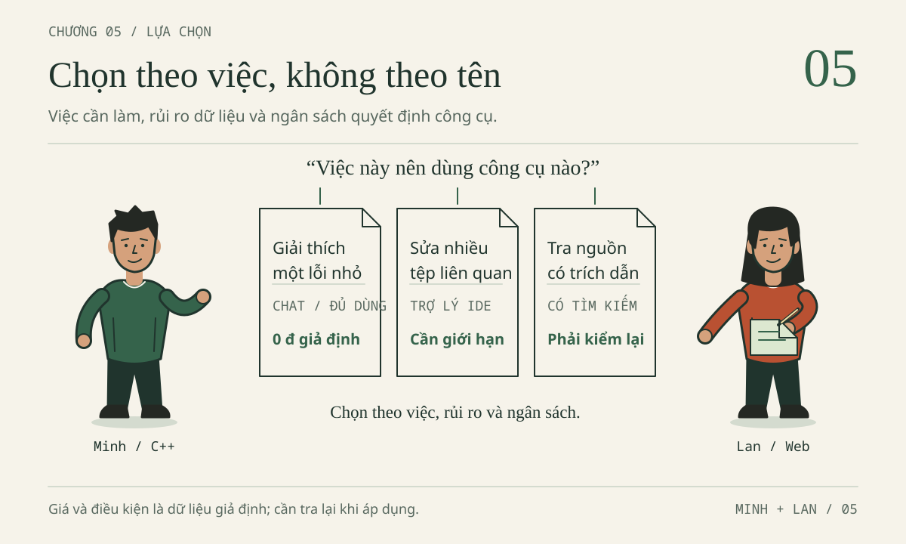

AI có thể viết code.
Người học cần hiểu
vì sao.
Sử dụng AI như một công cụ học tập có kiểm soát, thông qua một ứng dụng quản lý chi tiêu nhỏ được xây dựng, kiểm thử và giải thích từng bước.

Phiên bản 30/10/2026 · Nhân vật và dữ liệu minh họa là hư cấu · Không phải quy định chính thức của Trường · Đọc và thực hành được ngoại tuyến
Bản đồ nội dung
Tóm lược. Đây là cẩm nang tự học dành cho sinh viên năm thứ nhất và năm thứ hai ngành Công nghệ thông tin, Trường Đại học Thủy lợi. Mục đích của sách là hướng dẫn sử dụng AI khi làm bài tập lập trình mà không giao phần suy nghĩ cho công cụ: hiểu vai trò của AI, dùng có kiểm soát, giữ việc học, giữ trách nhiệm, rồi mới chọn công cụ.
Phạm vi. Sách không phải quy định chính thức của Trường, không phải đề cương học phần, không phải tài liệu quảng cáo công cụ và không phải bảng giá. Minh và Lan, mọi hội thoại, phiếu khảo sát và con số chi phí trong sách là tình huống hư cấu hoặc dữ liệu giả định phục vụ học tập. Rubric trong sách là rubric luyện tập. Tuyên bố phạm vi đầy đủ được trình bày trong Lời giới thiệu.
Năm chương và dự án tổng kết
Sách đi theo năm bước: Hiểu, Dùng, Giữ vững, Có trách nhiệm, Chọn. Việc chọn model và gói dịch vụ nằm ở cuối vì chỉ khi hiểu vai trò, cách dùng và ranh giới của AI, người học mới chọn công cụ có cơ sở. Câu chốt xuyên suốt: AI hỗ trợ, người học quyết định.
| Phần | Kết quả đạt được sau phần này | Gợi ý xếp lịch | Sản phẩm người học tự làm |
|---|---|---|---|
| Chương 1 · AI trong học tập: vai trò, cách hoạt động và giới hạn | Nêu được lợi ích, giới hạn, cách dùng đúng và lạm dụng; phân biệt model, provider, ứng dụng (application) và nhà sản xuất (producer); hiểu prompt, context và token ảnh hưởng thế nào đến một câu trả lời | 3 mục, khoảng 2 ca 45 phút | Một bảng phân loại việc dùng đúng và lạm dụng, một bản nhận diện công cụ có phần "chưa biết", một prompt đủ ngữ cảnh |
| Chương 2 · Điều khiển quá trình làm việc với AI | Điều khiển quá trình làm việc qua bảy bài thực hành (bảy Mission): đọc môi trường, hỏi đúng, debug C++, debug Web, giao việc cho Agent có giới hạn, đọc diff, nghiệm thu | 7 bài thực hành, khoảng 4 ca 45 phút | ViSinhVien chạy được, hai lỗi đã sửa, bảng kiểm thử, diff |
| Chương 3 · Học chủ động: dùng AI mà không lạm dụng | Viết dự đoán trước khi hỏi; dùng phản ví dụ nhỏ để bác bỏ một kết luận tự tin; giải thích lại mà không cần mở cửa sổ chat | 7 mục, khoảng 3 ca 45 phút | Bảng trace, kết quả tự quan sát, bài giải thích trong 6 phút |
| Chương 4 · Sử dụng AI có trách nhiệm | Xử lý bảy hồ sơ sự cố: khóa API bị lộ, dữ liệu cá nhân, Agent vượt phạm vi, gói thư viện, bài làm hộ, mã không rõ giấy phép, khai báo thiếu | 7 hồ sơ, khoảng 4 ca 45 phút | Biên bản sự cố, phiếu bằng chứng, bản khai báo sử dụng AI |
| Chương 5 · Lựa chọn AI và model phù hợp với nhiệm vụ | Tính được chi phí cho một việc; ưu tiên phương án miễn phí khi đủ dùng; đối chiếu công cụ theo tác vụ; chọn theo nhiệm vụ, rủi ro và ngân sách, không theo danh tiếng | 4 mục, khoảng 2 ca 45 phút | Một phép tính chi phí từ giả định, một bảng đối chiếu công cụ, một quyết định có lý do |
| Dự án tổng kết | Ghép năm bước thành một bản nộp có bằng chứng: làm được, biết là đúng, giải thích được | Cấp Bronze 60–90 phút; cấp Silver 90–120 phút; cấp Gold thêm 30–45 phút | Mã nguồn trên bản sao, hai bản vá, kiểm thử, diff, khai báo sử dụng AI, buổi bảo vệ 8 phút |
Gợi ý xếp lịch được tính từ đơn vị 20–25 phút cho một mục, như mô tả trong Lời giới thiệu. Đây không phải yêu cầu của học phần và không phải thước đo tốc độ.
Truy cập nhanh
Bảy bài thực hành của Chương 2: 01 · Môi trường làm việc · 02 · Hỏi đúng · 03 · Debug C++ · 04 · Debug Web · 05 · Agent có giới hạn · 06 · Đọc diff · 07 · Nghiệm thu
Bảy hồ sơ sự cố của Chương 4: 01 · Khóa API trên GitHub · 02 · Dữ liệu cá nhân · 03 · Agent vượt phạm vi · 04 · Gói thư viện · 05 · Bài làm hộ · 06 · Giấy phép · 07 · Khai báo thiếu · SQL, XSS và C++ (mục 4.8)
Chọn công cụ và chi phí (Chương 5): 5.1 · Chi phí · 5.2 · Ưu tiên miễn phí · 5.3 · Đối chiếu công cụ · 5.4 · Bài tập tổng hợp
Tài liệu đi kèm: Thư viện prompt mẫu P01–P11 · Bảng thuật ngữ · Thỏa thuận học tập và mẫu khai báo sử dụng AI · Ứng dụng minh họa ViSinhVien
Hợp đồng dữ liệu xuyên suốt
Ba khoản chi giả định 35000 + 7000 + 18000 = 60000; số tiền là số nguyên VND từ 1 đến 1000000000; tối đa 500 khoản; danh sách rỗng có tổng 0; tổng cực đại là 500000000000. Cùng một hợp đồng dữ liệu được kiểm tra bằng bốn bộ kiểm thử khác nhau:
| Bộ kiểm thử | Số ca | Trạng thái trong gói tài liệu |
|---|---|---|
Ví dụ C++ đúng vi-du/nam-1-cpp/vi_sinh_vien.cpp --test |
9 | Đã chạy, đạt |
Ví dụ dữ liệu Web vi-du/nam-2-web/test_data.cjs |
34 | Đã chạy, đạt |
Đề cấp Bronze vi-du/final-boss/bronze.cpp |
9 | 5 ca đạt, 4 ca lỗi chủ đích; người học cần sửa |
Đề cấp Silver vi-du/final-boss/test_silver.cjs |
12 | 6 ca đạt, 6 ca lỗi chủ đích; người học cần sửa |
Bốn bộ kiểm thử không cộng gộp và không thay thế cho nhau. Tệp loi-bo-sot.cpp in ra 42000 và không có chế độ --test; đây là học liệu để phân tích lỗi, không phải bài đã được kiểm thử.
Lộ trình đọc rút gọn trong 60 phút
Đọc trang này, sau đó làm Bài tập tổng hợp (mục 5.4), xem Bài thực hành 03 (mục 2.3) và đọc Hồ sơ 01 (mục 4.1). Các phần còn lại có thể đọc sau mà không ảnh hưởng đến mạch nội dung.
Dành cho giảng viên
Bảng rubric 100 điểm ở mục 7 của Dự án tổng kết có thể dùng làm thang chấm luyện tập. Thỏa thuận học tập có thể dùng làm phiếu nộp đầu kỳ. Bảy hồ sơ của Chương 4 phù hợp làm tình huống thảo luận trong 15 phút. Các câu hỏi biến thể ở mục 8 của Dự án tổng kết có thể dùng cho phần vấn đáp.
Phạm vi kiểm chứng của bản phát hành
Đã kiểm tra: cấu trúc nội dung, ví dụ thực thi và giao diện; xem báo cáo chất lượng trong kho mã.
Chưa kiểm chứng: mới thử trên một trình duyệt và một hệ điều hành; bản PDF chưa được soát từng trang; giá, hạn mức (quota) và quyền lợi của các dịch vụ AI chưa được xác minh độc lập; chưa thử nghiệm với lớp sinh viên thực tế; lộ trình cấp Gold chưa được vận hành với Agent thật. Các nguồn pháp luật giữ mốc đối chiếu 29/10/2026.
Khi gặp một con số không có trên trang này, người đọc cần tìm nhãn đi kèm: Tình huống hư cấu, Dữ liệu giả định, Chưa kiểm chứng hoặc Kết quả mong đợi. Con số không có nhãn nào cần được xem là điều phải hỏi lại.
Học CNTT cùng AI — Cẩm nang tự học và tra cứu dành cho sinh viên năm thứ nhất và năm thứ hai, Khoa Công nghệ thông tin, Trường Đại học Thủy lợi.
Mục đích và đối tượng của sách
Các công cụ trí tuệ nhân tạo (AI) hiện có thể giải thích lỗi, đề xuất mã nguồn và gợi ý ca kiểm thử chỉ trong vài giây. Điều đó tạo ra một câu hỏi cho người học lập trình: làm thế nào để tận dụng công cụ mà không giao luôn phần suy nghĩ cho nó. Cuốn sách này trả lời câu hỏi đó bằng các kỹ năng cụ thể: hiểu AI giúp được gì và không giúp được gì, điều khiển quá trình làm việc với AI, tự làm và tự giải thích được kết quả, chịu trách nhiệm về dữ liệu, nguồn và bản nộp, và cuối cùng là chọn công cụ phù hợp.
Đối tượng chính là sinh viên năm thứ nhất và năm thứ hai ngành Công nghệ thông tin. Người học năm thứ nhất cần biết biến, câu lệnh điều kiện và vòng lặp trong C++. Người học năm thứ hai có thể tận dụng thêm kiến thức về Web, lập trình hướng đối tượng, cấu trúc dữ liệu và cơ sở dữ liệu. Giảng viên và cố vấn học tập có thể dùng sách làm tài liệu cho buổi chia sẻ, thảo luận hoặc luyện tập. Không cần mua dịch vụ AI trả phí để bắt đầu học theo sách.
Câu chuyện xuyên suốt của cuốn sách
Cuốn sách kể một câu chuyện duy nhất: quan hệ giữa người học và AI. Câu chuyện đi qua năm bước, và mỗi chương là một bước.
Hiểu → Dùng → Giữ vững → Có trách nhiệm → Chọn
| Chương | Câu hỏi trung tâm | Thông điệp |
|---|---|---|
| 1 | AI là gì, đóng vai trò gì trong học tập, giúp được gì và không giúp được gì? | AI là người hỗ trợ; người học là người quyết định. |
| 2 | Dùng AI thế nào để việc làm có kiểm soát? | Giao việc rõ, kiểm bằng bằng chứng, nhận thay đổi có chủ đích. |
| 3 | Tận dụng AI mà không lạm dụng: làm sao vẫn học được? | Tự dự đoán, tự làm, tự giải thích; AI chỉ đứng cạnh. |
| 4 | Ranh giới nào cần giữ về dữ liệu, bảo mật, bản quyền, liêm chính? | Dùng có trách nhiệm là điều kiện để được tiếp tục dùng. |
| 5 | Khi đã hiểu vai trò, cách dùng và ranh giới: chọn AI, model, gói dịch vụ nào cho nhiệm vụ này? | Chọn theo nhiệm vụ, rủi ro và ngân sách, không theo danh tiếng. |
Dự án tổng kết ghép năm bước thành một sản phẩm có bằng chứng: làm, kiểm, giải thích.
Vì sao việc chọn model và trả phí nằm ở cuối? Nhiều người bắt đầu bằng câu hỏi "dùng AI nào là tốt nhất?". Câu hỏi đó khó trả lời khi chưa biết AI giúp được gì, cần dùng ra sao và có những ranh giới nào. Khi đã đi qua bốn chương đầu, người học đã rõ cần gì ở công cụ, nên chọn theo nhiệm vụ, rủi ro và ngân sách thay vì theo danh tiếng hay quảng cáo.
Xuyên suốt năm bước chỉ có một ý cần nhớ: AI hỗ trợ, người học quyết định.
Phạm vi và tính chất của nội dung
Phần này nêu tuyên bố phạm vi chung cho toàn bộ cuốn sách. Các chương sau chỉ nhắc lại ngắn gọn khi cần.
- Nhân vật, hội thoại, tình huống và dữ liệu trong sách đều hư cấu. Chúng không phải kết quả khảo sát sinh viên Trường Đại học Thủy lợi và không phải bảng giá thực tế của bất kỳ dịch vụ nào.
- Sách không phải quy định chính thức của Trường Đại học Thủy lợi, không phải đề cương học phần, không phải tài liệu quảng cáo và không phải tư vấn pháp lý. Việc được dùng AI đến mức nào trong một bài cụ thể do yêu cầu của học phần và giảng viên quyết định.
- Thông tin về sản phẩm, dịch vụ và văn bản pháp lý có mốc thời gian. Các thông tin này được đối chiếu tại mốc 29/10/2026 và không bảo đảm còn áp dụng tại thời điểm đọc. Trước khi dựa vào một thông tin như vậy, người đọc cần tra lại nguồn ở cuối chương, kiểm tra ngày cập nhật, đúng tên sản phẩm và điều kiện tài khoản.
- Rubric, thang điểm và mục tiêu trong sách dùng để tự luyện, không thay thế chuẩn đầu ra (CLO) hay thang điểm của học phần.
Để người đọc biết điều gì đã được kiểm chứng, sách dùng thống nhất bốn nhãn: Tình huống hư cấu cho nhân vật, hội thoại và thẻ trả lời minh họa; Dữ liệu giả định cho số tiền, giá và các kịch bản tính toán; Chưa kiểm chứng cho thông tin dịch vụ, chính sách và giá cần tra lại; Kết quả mong đợi cho đầu ra suy ra từ mã nguồn nhưng chưa thực thi.
Tình huống minh họa xuyên suốt
Toàn bộ sách dựa trên một tình huống minh họa chung với hai người học:
- Minh là sinh viên năm thứ nhất, đã biết biến và vòng lặp trong C++, nhưng có thói quen hỏi AI ngay khi gặp lỗi.
- Lan là sinh viên năm thứ hai, đã học Web, lập trình hướng đối tượng, cấu trúc dữ liệu và cơ sở dữ liệu. Lan dựng được giao diện nhưng còn lúng túng khi một lỗi đi qua nhiều tệp.
Hai người cùng xây dựng ViSinhVien, một ứng dụng ghi các khoản chi tiêu nhỏ. Bảng dữ liệu mẫu dưới đây được dùng thống nhất trong mọi chương:
| Khoản chi | Nhóm | Số nguyên lưu trong mã | Hiển thị |
|---|---|---|---|
| Cơm trưa | Ăn uống | 35000 |
35.000 đ |
| Xe buýt | Đi lại | 7000 |
7.000 đ |
| Vở ghi | Học tập | 18000 |
18.000 đ |
| Tổng đối chiếu | 60000 |
60.000 đ |
Hai vấn đề mở đầu dẫn dắt nội dung của sách. Phiên bản C++ của Minh cho tổng 42000 thay vì 60000. Lan cần xác định giá trị tiền đi từ ô nhập đến phần tính tổng như thế nào. Qua các chương, người học lần lượt dự đoán, kiểm tra một thay đổi nhỏ và giải thích vì sao thay đổi đó đúng.
Hợp đồng dữ liệu chung của ViSinhVien
Mọi ví dụ, bài thực hành và bộ kiểm thử trong sách tuân theo cùng một hợp đồng dữ liệu (quy ước về miền giá trị hợp lệ):
amountlà số nguyên VND từ 1 đến 1.000.000.000 (1e9), tính cả hai đầu.- Danh sách có tối đa 500 khoản. Danh sách rỗng là hợp lệ và có tổng bằng 0.
- Khoản bằng 0, số âm, số thập phân (ví dụ 1.5) hoặc giá trị vượt trần đều bị từ chối.
- Dấu chấm trong “35.000 đ” chỉ dùng khi hiển thị, không thuộc giá trị lưu trữ.
Hai nhánh dùng cùng số tiền mẫu nhưng khác cấu trúc dữ liệu:
- Nhánh C++ dùng
std::vector<long long>chứa{35000, 7000, 18000}. Cấu trúc này chỉ chứa số tiền, chưa có tên, nhóm hay mã khoản. - Nhánh Web dùng danh sách đối tượng
Expensecó bốn trường:
{"id": 1, "title": "Cơm trưa", "amount": 35000, "category": "an-uong"}
Trong đó, id dùng để nhận diện khoản chi, title là tên khoản, amount là số tiền và category là mã nhóm (không phải nhãn hiển thị). Ô nhập trên Web trả về chuỗi, vì vậy việc chuyển đổi kiểu không thay thế được bước kiểm tra hợp lệ. Tương tự, hàm tính tổng không thay thế được bước kiểm tra bản ghi đầy đủ khi đọc và lưu dữ liệu.
Tổng cực đại 500000000000 nằm trong miền số nguyên an toàn của JavaScript và biểu diễn được bằng kiểu long long của C++. Đây là quy ước phục vụ học tập, không phải thiết kế dùng chung cho mọi hệ thống tài chính. Khi thay đổi giới hạn hoặc đơn vị tiền, cần xét lại toàn bộ hợp đồng.
Ứng dụng Web chỉ gồm HTML, JavaScript và localStorage, không có backend và không có chức năng đăng nhập. SQLite xuất hiện trong một minh họa Python riêng, dùng cơ sở dữ liệu :memory:, và không phải cơ sở dữ liệu của ứng dụng Web. Không nhập sao kê, chi tiêu thật hay thông tin cá nhân vào bất kỳ ví dụ nào.
Hai lộ trình đọc
Lộ trình C++ (theo tình huống của Minh). Chương 1 giúp hiểu vai trò của AI và nhận diện công cụ đang dùng. Chương 2 hướng dẫn đọc vòng lặp, lập bảng trace và sửa lỗi bỏ sót khoản cuối. Chương 3 yêu cầu tự làm bài biến thể. Chương 4 hướng dẫn chuẩn bị một bản nộp trung thực. Chương 5 giúp Minh chọn công cụ và gói dịch vụ phù hợp với nhiệm vụ và ngân sách. Người học chưa học Web hoặc SQL có thể tạm bỏ qua các phần đó; nhánh C++ không yêu cầu cài thêm công cụ nào khác.
Lộ trình Web (theo tình huống của Lan). Sau Chương 1, Chương 2 hướng dẫn lần theo giá trị amount từ biểu mẫu, qua bước xử lý, đến hiển thị và lưu trữ. Chương 3 yêu cầu tự giải thích kiểu dữ liệu và làm bài biến thể. Chương 4 rà soát quyền, dữ liệu và nguồn. Chương 5 giúp Lan đối chiếu công cụ theo từng tác vụ Web và ước tính chi phí. Khi Lan cùng xem mã C++ với Minh, đó là hoạt động đọc chéo và không làm thay đổi lộ trình của Minh.
Người học không cần hoàn thành cả hai lộ trình cùng lúc. Một hàm tự giải thích được có giá trị học tập cao hơn một ứng dụng hoàn chỉnh được sao chép mà chưa hiểu.

Hình. Bản đồ bốn năng lực và bằng chứng tương ứng. Bản đồ dùng để chọn nội dung cần luyện tiếp, không phải chứng nhận năng lực tự động. Bảng ở mục sau trình bày các bằng chứng này dưới dạng văn bản.
Mục tiêu học tập và bằng chứng
Các mục tiêu dưới đây là mục tiêu của cẩm nang, không thay thế chuẩn đầu ra (CLO) hoặc thang điểm của học phần. Người học nên chọn từng dòng để tự kiểm tra bằng sản phẩm cụ thể, thay vì đánh dấu hoàn thành chỉ vì đã đọc hết chương.
| Mục tiêu | Nội dung tương ứng | Bằng chứng do người học tạo ra |
|---|---|---|
| Nêu được vai trò, lợi ích và giới hạn của AI trong học tập | Chương 1 (mục 1.1) | Bảng phân loại một việc cụ thể thành dùng đúng hoặc lạm dụng, kèm lý do. |
| Phân biệt model, provider và ứng dụng | Chương 1 (mục 1.2) | Bảng nhận diện công cụ, có ghi những điều chưa xác định. |
| Giao việc nhỏ với đủ ngữ cảnh | Chương 1 (mục 1.3) và Chương 2 | Yêu cầu có mục tiêu, dữ liệu, phạm vi và tiêu chí kiểm tra. |
| Đọc lỗi, đọc diff và kiểm thử | Chương 2 | Bảng trace lỗi 42000 so với 60000; kiểm tra danh sách rỗng và danh sách một phần tử; lần theo amount. |
| Học chủ động | Chương 3 | Bài biến thể tự làm khi không mở AI. |
| Giải thích phần việc tự làm | Chương 3 | Câu trả lời cho “vì sao?” và “nếu đổi yêu cầu thì sao?”, kèm ghi chú về chỗ còn vướng. |
| Bảo vệ dữ liệu, rà soát mã và phụ thuộc | Chương 4 | Quyết định về dữ liệu được gửi, điểm hiển thị, truy vấn SQL và gói thư viện được đề xuất. |
| Khai báo, kiểm tra quyền, xử lý sự cố | Chương 4 | Bản khai báo đúng mức hỗ trợ, câu hỏi gửi giảng viên, thứ tự xử lý khi lộ khóa API. |
| Chọn công cụ và gói dịch vụ phù hợp với nhiệm vụ và khả năng chi trả | Chương 5 | Phép tính lại chi phí từ giả định, bảng đối chiếu công cụ theo tác vụ, kèm giới hạn của phép so sánh. |
Các chương tương ứng là: Chương 1 · AI trong học tập: vai trò, cách hoạt động và giới hạn (chapter-01.md); Chương 2 · Điều khiển quá trình làm việc với AI (chapter-02.md); Chương 3 · Học chủ động: dùng AI mà không lạm dụng (chapter-03.md); Chương 4 · Sử dụng AI có trách nhiệm (chapter-04.md); Chương 5 · Lựa chọn AI và model phù hợp với nhiệm vụ (chapter-05.md). Dự án tổng kết (final-boss.md) ghép năm bước thành một bản nộp có bằng chứng.
Hướng dẫn sử dụng sách
Trước, trong và sau buổi học
Trước buổi chia sẻ. Đọc lời giới thiệu và mục 1.1 về vai trò của AI ở Chương 1, chuẩn bị một câu hỏi thực tế. Chưa cần cài phần mềm ở giai đoạn này. Phần chi phí và chọn công cụ nằm ở Chương 5, có thể đọc sau khi đã quen cách dùng.
Trong buổi. Viết dự đoán trước khi xem phần chạy mẫu hoặc đáp án. Ghi lại chỗ đã hiểu sai thay vì chỉ chụp màn hình.
Sau buổi. Chọn một nhiệm vụ vừa sức, thực hiện trong khoảng 20–25 phút theo trình tự: đọc, dự đoán, thử, đối chiếu và giải thích. Kết thúc bằng ba dòng ghi chú theo mẫu: “Đã hiểu…”, “Chưa chắc…”, “Lần tới sẽ…”. Thời lượng chỉ là gợi ý. Nếu chưa xong, cần lưu lại đầu vào, lỗi gặp phải và bước đang làm; không dùng tốc độ làm thước đo năng lực.
Bản đọc HTML và đọc ngoại tuyến
Bản HTML có mục lục, ô tìm mục, nút chỉnh cỡ chữ và chức năng in. Các mục Đáp án được gập sẵn và chỉ nên mở sau khi đã tự làm. Để đọc ngoại tuyến đầy đủ hình và ví dụ, cần giữ nguyên cả thư mục sách. Các nguồn tham khảo bên ngoài và dịch vụ AI cần kết nối mạng; các mô phỏng trong sách chạy cục bộ và không gọi tới AI. Người học không có tài khoản dịch vụ AI vẫn học được bằng đề bài, bảng trace và các phiếu trả lời minh họa.
Phân biệt các loại kết quả
Cần phân biệt rõ hội thoại mô phỏng, bảng trace, kết quả mong đợi và kết quả thực sự chạy. Các tệp có lỗi chủ đích được giữ nguyên làm đối tượng học; việc sửa lỗi được thực hiện trên bản sao. Tổng trung gian 42000 tự nó chưa chứng minh có lỗi; cần biết vòng lặp đã duyệt đến phần tử nào. Khi chưa có môi trường để chạy, ghi trạng thái chưa chạy và không chép kết quả mong đợi thành kết quả quan sát.
Các tệp ví dụ
Khi thực hiện lệnh ở Chương 2, mở thư mục gốc AI-Student-Handbook. Thư mục vi-du/ được giữ làm bản tham khảo. Người học tự tạo thư mục bai-lam/ (chưa có sẵn) theo hướng dẫn ở mục 2.1, sau đó sao chép nhánh cần làm sang thư mục này trước khi sửa.
| Tệp | Mục đích và điều kiện sử dụng |
|---|---|
| C++ có lỗi chủ đích | Lập bảng trace cho tổng bị thiếu. Chuẩn C++17, không có chế độ --test. Nếu chưa có trình biên dịch, đọc bảng trace trước. |
| C++ đúng, có kiểm thử | Đối chiếu cách sửa lỗi và các giới hạn. Cần trình biên dịch C++17, ví dụ g++. |
| Web ViSinhVien | Thử nhập khoản chi giả trên trình duyệt hiện đại. Giữ tệp này cùng thư mục với data.js và app.js. |
| Kiểm thử dữ liệu Web | Kiểm tra phần logic dữ liệu, không chứng minh phần DOM và lưu trữ. Cần Node.js phiên bản hiện đại, không cần npm install. |
| SQLite riêng | Minh họa truy vấn tham số hóa với bộ dữ liệu kiểm thử (fixture) riêng. Cần Python 3 có mô-đun sqlite3; đây không phải backend của ứng dụng Web. |
localStorage lưu dữ liệu trong trình duyệt, không lưu trên máy chủ. Quyền lưu khi mở tệp cục bộ phụ thuộc vào từng trình duyệt. Khi không lưu được, bản minh họa có thể báo lỗi và chuyển sang bộ nhớ tạm; mọi thay đổi sẽ mất khi kết thúc phiên. Vì vậy không dùng bản minh họa để lưu dữ liệu lâu dài.
Nguyên tắc học tập khi có AI hỗ trợ
Khi có hướng dẫn mới hơn của học phần hoặc gặp điều chưa rõ, người học cần hỏi người phụ trách. Câu trả lời của AI hay một liên kết tìm được không thay thế cho việc kiểm chứng.
Thỏa thuận học tập: AI có thể giải thích, đưa ra giả thuyết, đề xuất mã nguồn và hỗ trợ kiểm tra. Người học quyết định mục tiêu, phần việc tự làm, phạm vi chia sẻ dữ liệu và bằng chứng cần có. “AI đã làm xong” chưa có nghĩa là “người học đã học xong”.
Các phần tham khảo đi kèm gồm: Thỏa thuận học tập với các mẫu biểu để điền, Bảng thuật ngữ và Thư viện prompt mẫu.
AI trong học tập: vai trò, cách hoạt động và giới hạn
Hiểu vai trò của AI: giúp được gì, không giúp được gì, đâu là lạm dụng; nhận diện công cụ và cách một câu trả lời được tạo ra.

Đây là chương mở đầu của cuốn sách. Chương trả lời ba câu hỏi nền tảng trước khi bắt đầu dùng trợ lý AI: AI giúp được gì và không giúp được gì trong việc học, đâu là ranh giới giữa dùng AI để học và dùng AI để né học, và phía sau một câu trả lời của AI thực sự có những thành phần nào.
Cả cuốn sách đi theo một mạch năm bước: Hiểu → Dùng → Giữ vững → Có trách nhiệm → Chọn. Chương 1 là bước Hiểu: nắm vai trò, cách hoạt động và giới hạn của AI. Chương 2 là bước Dùng: điều khiển quá trình làm việc với AI bằng bằng chứng. Chương 3 là bước Giữ vững: tận dụng AI mà vẫn tự học được. Chương 4 là bước Có trách nhiệm: giữ ranh giới về dữ liệu, bảo mật, bản quyền và liêm chính. Chương 5 là bước Chọn: chọn công cụ, model và gói dịch vụ phù hợp, kể cả chi phí. Việc chọn model và tính chi phí được đặt ở cuối có chủ đích, vì chỉ khi đã hiểu vai trò và ranh giới, người học mới chọn công cụ có cơ sở thay vì chọn theo danh tiếng hay giá.
Toàn bộ chương có thể hoàn thành bằng sách và giấy: không cần đăng ký, cài đặt, tạo key, gọi API hoặc trả tiền. Nhân vật, hội thoại và các thẻ trả lời trong chương là tình huống hư cấu; chúng không đại diện cho sản phẩm cụ thể, không phải hội thoại hay benchmark thực, và không đại diện cho khảo sát sinh viên của Trường.
Mục tiêu học tập
Sau chương này, người học có thể:
- Nêu ba vai trò hợp lý của AI trong học tập, điều AI làm tốt và điều AI làm kém.
- Phân biệt dùng AI để học với lạm dụng AI để né học, dựa trên các dấu hiệu quan sát được; vận dụng nguyên tắc "AI hỗ trợ, người học quyết định".
- Phân biệt các vai trò model, provider, application (ứng dụng), producer và user trong một lượt dùng AI; ghi "chưa xác định" khi thiếu bằng chứng thay vì suy đoán.
- Viết một prompt đủ context, gồm mục tiêu, phần mã liên quan, hợp đồng dữ liệu, kết quả mong đợi và cách kiểm tra; giải thích token và context window ở mức khái niệm.
- Phân biệt suy luận, thực thi và tra cứu nguồn; nhận diện hiện tượng hallucination và kiểm tra trích dẫn.
Sản phẩm của chương gồm ba thành phần: một bảng tự đánh giá cách dùng AI (đúng, lạm dụng hoặc cần hỏi giảng viên), một bản nhận diện công cụ có ghi rõ phần chưa biết và một prompt đủ context.
Tình huống mở đầu
Tình huống minh họa xuyên suốt cuốn sách gồm hai sinh viên: Minh, năm nhất, đang học C++; Lan, năm hai, đã học lập trình hướng đối tượng (OOP), cấu trúc dữ liệu và giải thuật (DSA), cơ sở dữ liệu (CSDL) và lập trình Web. Hai người cùng thực hiện ViSinhVien, một bài tập quản lý chi tiêu chỉ dùng dữ liệu giả. Minh học mảng và vòng lặp trên phiên bản C++; Lan làm phiên bản Web bằng HTML, JavaScript và localStorage. Bài tập không có backend, đăng nhập, kết nối ngân hàng hay dữ liệu tài chính thật. Trợ lý AI chỉ được dùng để hỗ trợ việc học; bản thân ViSinhVien không tích hợp AI.
Minh ghi ba khoản chi giả trên giấy như sau:
| Khoản chi giả | Số tiền nguyên VND |
|---|---|
| Cơm trưa | 35000 |
| Xe buýt | 7000 |
| Vở ghi | 18000 |
| Tổng cần có | 60000 |
Đoạn mã dưới đây chứa một lỗi được đưa vào có chủ đích để người học đọc và đặt câu hỏi. Các số tiền trong đoạn mã được giả định là hợp lệ; chương trình chưa thực hiện việc nhập và xác thực dữ liệu.
#include <iostream>
#include <vector>
int main() {
std::vector<long long> amounts = {35000, 7000, 18000};
long long total = 0;
int n = static_cast<int>(amounts.size());
for (int i = 0; i < n - 1; ++i) {
total += amounts[i];
}
std::cout << "Tong chi tieu: " << total << " VND\n";
return 0;
}
Minh dán nguyên đoạn mã vào ba ứng dụng AI khác nhau, kèm cùng một câu hỏi:
Tôi mới học vòng lặp C++. Tôi cần cộng tất cả khoản chi GIẢ:
35000, 7000, 18000 phải ra 60000, nhưng chương trình đang cho 42000.
Hãy gợi ý một bước để tôi tự tìm lỗi, chưa viết lại cả chương trình.
Ba ứng dụng trả về ba câu trả lời khác nhau. Ứng dụng thứ nhất đặt câu hỏi ngược lại cho người học, ứng dụng thứ hai đưa ra cách sửa với giọng rất chắc chắn, ứng dụng thứ ba đề xuất cách sửa khác và nhắc phải kiểm thử. Các thẻ dưới đây không gắn với sản phẩm nào và không phải báo cáo đã chạy chương trình.
Thẻ trả lời A
Khi
n = 3, chỉ số của khoản Vở ghi là bao nhiêu? Hãy thay chỉ số đó vào điều kiệni < n - 1và quyết định xem vòng lặp có cộng khoản này không.
Thẻ trả lời B
Vòng lặp thiếu một lượt. Bạn cứ đổi thành
i <= n; như vậy sẽ cộng đủ và luôn an toàn. Không cần thử thêm vì lỗi này rất đơn giản.
Thẻ trả lời C
Điều kiện đang bỏ phần tử cuối. Với yêu cầu cộng mọi khoản, hướng sửa là
i < n, không phảii <= n. Tôi chưa thực thi chương trình; hãy kiểm tra danh sách rỗng, một khoản và ba khoản sau khi tự sửa.
Câu hỏi đặt ra là: nếu cả ba đều là AI, vì sao chúng trả lời khác nhau, và nên dựa vào câu trả lời nào? Một câu trả lời cần được xét đồng thời theo độ đúng, theo mức độ phù hợp với cách giúp người học và theo bằng chứng đi kèm, chứ không theo tốc độ xuất hiện hay độ tự tin của câu chữ. Chẳng hạn, prompt đã yêu cầu rõ gợi ý một bước, trong khi thẻ B khẳng định cách sửa được đề xuất luôn an toàn mà không nêu căn cứ.
Yêu cầu trước khi đọc tiếp. Hãy tự cộng ba khoản, chọn một thẻ để bắt đầu học và ghi lý do lựa chọn. Người chưa học C++ vẫn có thể nhận ra rằng một kết luận về chương trình cần đi kèm cách kiểm tra. Sau khi học xong mục 1.3, hãy chấm lại ba thẻ theo ba câu hỏi: kết luận có đúng không, cách giúp có đúng với yêu cầu không, và có bằng chứng đi kèm không.
1.1. Vai trò của AI trong học tập: giúp được gì, không giúp được gì, đâu là lạm dụng
Mục này giúp người học trả lời một câu hỏi trước mọi câu hỏi kỹ thuật: nên để AI làm phần việc nào trong quá trình học, và phần việc nào phải giữ lại cho người học. Câu trả lời được rút ra từ ba thẻ A, B, C ở tình huống mở đầu và từ ba khoản chi 35000, 7000, 18000.
Ba vai trò hợp lý của AI trong học tập
Học là quá trình thay đổi hiểu biết và kỹ năng của chính người học. Vì vậy, một vai trò của AI chỉ hợp lý khi sau lượt dùng, người học hiểu hoặc làm được nhiều hơn trước. Có ba vai trò đáp ứng điều kiện này.
Vai trò thứ nhất: gia sư giải thích. AI có thể giải thích một khái niệm theo nhiều cách, đổi ví dụ khi người học chưa hiểu, hoặc đặt câu hỏi gợi mở thay vì đưa ngay đáp án. Thẻ A là ví dụ điển hình: thẻ này không sửa hộ mà hỏi chỉ số của khoản Vở ghi là bao nhiêu và vòng lặp có cộng khoản đó không. Minh phải tự trả lời, nên người hiểu vòng lặp là Minh chứ không phải AI. Người học có thể chủ động yêu cầu cách giúp này, như prompt trong tình huống mở đầu đã làm khi xin "một bước gợi ý, chưa viết lại cả chương trình".
Vai trò thứ hai: người phản biện và kiểm tra. Sau khi tự làm xong, người học có thể nhờ AI tìm chỗ thiếu: ca kiểm thử chưa nghĩ tới, điều kiện biên bị bỏ sót, đoạn giải thích còn mơ hồ. Thẻ C làm đúng việc này khi nhắc kiểm tra danh sách rỗng, một khoản và ba khoản. Thứ tự rất quan trọng: làm trước, nhờ phản biện sau. Nếu đảo ngược thứ tự, người học chỉ còn đọc lại điều AI đã nghĩ hộ.
Vai trò thứ ba: trợ lý cho việc lặp. Một số việc tốn thời gian nhưng không tạo ra hiểu biết mới: định dạng lại bảng, đổi tên biến đồng loạt, sinh dữ liệu giả để thử, soạn khung tài liệu. AI làm các việc này nhanh, người học tiết kiệm thời gian cho phần cần suy nghĩ. Tiêu chí phân biệt rất đơn giản: nếu bản thân việc đó chính là mục tiêu của bài học (ví dụ bài học đang dạy vòng lặp mà nhờ AI viết vòng lặp), thì đó không còn là "việc lặp" nữa.
Ba vai trò có chung một điểm: AI nằm cạnh người học, không nằm thay chỗ người học.
AI làm tốt điều gì, làm kém điều gì
Để quyết định giao việc nào cho AI, cần biết hai mặt của công cụ này. Phần dưới đây mô tả xu hướng chung; mức độ cụ thể khác nhau giữa các model và ứng dụng, và mục 1.2 sẽ nói cách phân biệt chúng.
AI thường làm tốt:
- Tốc độ. Phản hồi xuất hiện sau vài giây, kể cả khi yêu cầu dài. Người học có thể thử nhiều cách hỏi trong thời gian ngắn.
- Diễn đạt. AI viết mạch lạc, đổi giọng văn, tóm tắt hoặc giải thích lại cùng một ý theo nhiều mức độ.
- Gợi ý. AI nêu được nhiều hướng giải, nhiều ca thử, nhiều cách đặt tên, giúp người học thoát khỏi tình trạng "chưa biết bắt đầu từ đâu".
AI thường làm kém hoặc không thể làm:
- Có thể sai mà vẫn tự tin. Thẻ B khẳng định
i <= n"luôn an toàn" và "không cần thử thêm" trong khi cách sửa đó cho phép truy cập ngoài danh sách. Giọng chắc chắn của câu chữ không phải bằng chứng về độ đúng. Hiện tượng này được gọi là hallucination và sẽ được phân tích ở mục 1.3. - Thiếu ngữ cảnh. AI chỉ biết điều đã được gửi vào lượt đó. Nếu quên dán mã, quên nêu phạm vi bài tập, AI sẽ đoán, và có thể đề xuất đăng nhập, máy chủ hay đồng bộ thanh toán cho một bài tập vốn chỉ dùng dữ liệu giả.
- Không chịu trách nhiệm. Khi bài nộp có lỗi, khi một kết luận sai được đem ra dùng, người chịu hậu quả là người học. AI không đứng tên trên bài nộp và không giải thích thay trước giảng viên.
Từ hai danh sách trên có thể rút ra một quy tắc phân công: giao cho AI những phần mà kết quả kiểm tra được nhanh (ca thử, định dạng, gợi ý hướng đi), và giữ lại cho người học những phần mà hiểu biết và trách nhiệm không thể chuyển giao (quyết định cuối, giải thích, kiểm chứng).
Dùng AI để học và dùng AI để né học
Cùng một công cụ, cùng một bài toán, có thể dẫn tới hai kết quả hoàn toàn khác nhau. Hãy quay lại ví dụ ba khoản chi: 35000 cộng 7000 cộng 18000 phải bằng 60000, còn chương trình cho 42000.
- Minh tự cộng ba khoản trước, thấy kết quả chương trình thiếu đúng 18000, rồi nhờ AI gợi ý một bước. Sau đó Minh tự sửa cận vòng lặp, thử ca rỗng, một khoản, ba khoản và giải thích được vì sao
i < nđúng còni <= nthì không. Đây là dùng AI để học. - Một cách làm khác: dán đoạn mã, nhận bản sửa hoàn chỉnh, chép vào bài và nộp. Chương trình có thể in đúng 60000. Nhưng khi được hỏi "vì sao vòng lặp dừng ở chỉ số 1", người học không trả lời được. Con số đúng, còn hiểu biết thì không tăng. Đây là dùng AI để né học.
Điểm khác biệt không nằm ở việc có dùng AI hay không, mà ở chỗ ai đã suy nghĩ. Bảng dưới đây giúp nhận ra dấu hiệu qua hành vi quan sát được.
| Tiêu chí | Dấu hiệu dùng đúng | Dấu hiệu lạm dụng |
|---|---|---|
| Thứ tự | Tự thử hoặc tự dự đoán trước, rồi mới hỏi AI | Hỏi AI ngay khi vừa đọc đề, chưa tự thử |
| Mức trợ giúp | Yêu cầu gợi ý từng bước, câu hỏi dẫn dắt | Yêu cầu bản hoàn chỉnh rồi chép nguyên |
| Kiểm chứng | Tự chạy, tự đối chiếu với 60000 hoặc với test | Tin lời "đã đúng", không chạy, không đối chiếu |
| Giải thích | Nói lại được bằng lời riêng vì sao đúng | Không giải thích được dòng mã vừa nộp |
| Quyền quyết định | Chấp nhận, sửa hoặc bác bỏ từng đề xuất có lý do | Nhận mọi đề xuất, kể cả phần ngoài phạm vi bài |
| Dấu vết học | Còn bản nháp, ghi chú, lỗi đã gặp và cách sửa | Chỉ còn kết quả cuối, không có quá trình |
Ba ví dụ số 35000, 7000 và 18000 cho thấy một phép thử nhanh: sau khi dùng AI, nếu người học tự lần ra được tổng từng bước (35000, rồi 42000, rồi 60000) và chỉ ra bước nào bị bỏ, thì hiểu biết đã thuộc về người học. Nếu không lần ra được, kết quả đúng chỉ là mượn.
Cần nói rõ thêm hai điều. Thứ nhất, một lượt dùng không lạm dụng không có nghĩa là hợp lệ trong mọi bài: mỗi học phần, mỗi bài tập có thể quy định riêng về việc được dùng AI đến mức nào, và quy định đó phải được tôn trọng. Thứ hai, những ranh giới về dữ liệu, bảo mật, bản quyền và liêm chính học thuật được trình bày ở Chương 4; cách giữ để vẫn tự học được trong khi dùng AI được trình bày ở Chương 3. Mục này chỉ đặt nền để người học nhận ra hai hướng đi.
Nguyên tắc xuyên suốt: AI hỗ trợ, người học quyết định
Từ các phần trên có thể rút ra nguyên tắc mà cả cuốn sách sẽ nhắc lại: AI hỗ trợ, người học quyết định.
Nguyên tắc này có ba nghĩa cụ thể. Người học đặt mục tiêu: nêu việc cần làm, giới hạn mức trợ giúp, chọn dữ liệu nào được gửi đi. Người học kiểm chứng: không dùng kết quả nào chưa có bằng chứng, dù lời giải nghe rất hợp lý. Người học chịu trách nhiệm: bài nộp mang tên người học, nên mọi dòng trong đó phải giải thích được. AI có thể đề xuất nhanh và nhiều, nhưng quyết định chấp nhận hay bác bỏ vẫn thuộc về người học.
Nếu nhớ một câu từ chương này, đó nên là câu ấy. Ở Chương 2, nguyên tắc trở thành thao tác: giao việc rõ, kiểm bằng bằng chứng, nhận thay đổi có chủ đích. Ở Chương 3, nguyên tắc trở thành thói quen: tự dự đoán, tự làm, tự giải thích. Ở Chương 4, nguyên tắc trở thành ranh giới.
Bài tập tự đánh giá: dùng đúng, lạm dụng hay cần hỏi giảng viên
Chưa hiểu ngay cách phân loại là điều bình thường; hãy dùng bảng dấu hiệu ở trên làm công cụ đối chiếu. Với mỗi tình huống giả định dưới đây, chọn một trong ba phương án: dùng đúng, lạm dụng hoặc cần hỏi giảng viên, rồi ghi lý do bằng một câu.
| STT | Tình huống giả định | Lựa chọn | Lý do |
|---|---|---|---|
| 1 | Minh tự cộng 35000 + 7000 + 18000, thấy chương trình in 42000, rồi nhờ AI gợi ý một bước để tự tìm lỗi. | ||
| 2 | Lan nhờ AI viết trọn phần lưu dữ liệu vào localStorage, dán vào bài và nộp mà chưa đọc mã. |
||
| 3 | Minh viết xong hàm tính tổng, rồi nhờ AI nêu thêm các ca kiểm thử còn thiếu; Minh tự dự đoán kết quả từng ca trước khi chạy. | ||
| 4 | Đề bài ghi "sinh viên tự làm", nhưng Minh muốn nhờ AI giải thích một thông báo lỗi khó hiểu của trình biên dịch. | ||
| 5 | AI báo "đã chạy test và tất cả đều đạt"; Lan ghi vào báo cáo như kết quả của chính Lan mà không chạy lại. |
Đáp án tự đánh giá: năm tình huống và lý do · mở sau khi tự thử
1. Dùng đúng. Minh tự làm trước, giới hạn mức trợ giúp ở một bước và còn giữ quyền tự sửa. Cả thứ tự, mức trợ giúp lẫn quyền quyết định đều khớp dấu hiệu dùng đúng.
2. Lạm dụng. Phần việc này có thể chính là nội dung bài học, người học chưa đọc và chưa kiểm chứng, nên không giải thích được mã đã nộp. Cách đúng hơn là tự viết bản nháp rồi nhờ AI phản biện, hoặc xin gợi ý từng bước.
3. Dùng đúng. AI đóng vai người phản biện sau khi người học đã làm. Việc tự dự đoán kết quả trước khi chạy giữ phần suy nghĩ thuộc về Minh.
4. Cần hỏi giảng viên. Quy định "tự làm" có thể loại trừ mọi hỗ trợ của AI hoặc chỉ loại trừ việc làm hộ; câu chữ chưa đủ để kết luận. Việc đúng là hỏi giảng viên và ghi lại câu trả lời, không tự suy diễn theo hướng có lợi cho bản thân.
5. Lạm dụng. Lời "đã chạy test" của AI chưa phải bằng chứng. Người học phải tự chạy, hoặc ghi rõ đây là lời khẳng định chưa kiểm chứng. Chỗ sai nằm ở khâu kiểm chứng và trách nhiệm, không nằm ở việc có dùng AI hay không.
Nếu phân loại đúng cả năm tình huống kèm lý do hợp lý, người học đã nắm được tiêu chí của mục này. Nếu lệch một hoặc hai tình huống, nên đọc lại bảng dấu hiệu rồi thử viết lại lý do. Từ mục 1.2 trở đi, chương chuyển từ câu hỏi "nên dùng AI vào việc gì" sang câu hỏi "AI mà chúng ta đang dùng thực chất là gì".
1.2. Nhận diện công cụ AI: model, provider và ứng dụng (AI Mystery, AI Map)
Từ con số 42000 đến câu hỏi "đang dùng công cụ nào?"
Ta có 35000 + 7000 = 42000; phải cộng thêm 18000 mới được 60000. Con số 42000 có thể là một tổng trung gian đúng, tức tổng của hai khoản đầu. Nó chỉ trở thành sai lệch khi yêu cầu là cộng đủ ba khoản mà chương trình lại kết thúc ở đó. Một con số đứng riêng chưa đủ để chẩn đoán lỗi.
Đoạn mã có n = 3, nên các chỉ số hợp lệ là 0, 1 và 2. Điều kiện i < n - 1, tức i < 2, khiến vòng lặp dừng trước khoản Vở ghi ở chỉ số 2. Phép static_cast<int> chuyển kích thước của vector sang số nguyên có dấu để biểu diễn cận; với tối đa 500 khoản, giá trị này nằm gọn trong miền đang dùng.
Kết quả mong đợi (suy ra từ mã nguồn, chưa thực thi):
Tong chi tieu: 42000 VND
Chuỗi in ra được viết không dấu nhằm giảm lỗi hiển thị trên một số terminal. Việc lần vết (trace) đầy đủ, ca danh sách rỗng, vấn đề kiểu có dấu và không dấu, cũng như tình huống chạy nhầm tệp thực thi cũ được trình bày ở Bài thực hành 03 (mục 2.3) trong Chương 2 · Điều khiển quá trình làm việc với AI. Chương này chỉ dừng ở việc nhận diện vấn đề và xác định loại bằng chứng cần có.
Đáp án mở đầu — Chọn thẻ để học, không chọn giọng văn tự tin · mở sau khi tự thử
Nên bắt đầu học với thẻ A, vì thẻ này giữ đúng yêu cầu gợi ý một bước. Thẻ C phù hợp để đối chiếu sau khi đã tự sửa: thẻ này sửa đúng và nói rõ chưa chạy chương trình, nhưng tiết lộ nhiều hơn mức Minh yêu cầu. Thẻ B cần bị loại, vì điều kiện i <= n cho phép chỉ số n nằm ngoài danh sách; trong C++, truy cập như vậy dẫn tới hành vi không xác định (undefined behavior).
Cận i < n duyệt đúng các chỉ số hợp lệ và dừng trước chỉ số bằng kích thước. Tuy nhiên, sửa cận chưa bổ sung toàn bộ việc kiểm tra dữ liệu; Minh vẫn cần tự giải thích và thử các biến thể. Ba thẻ hư cấu này cũng không chứng minh thương hiệu nào tốt hơn thương hiệu nào.
Model, provider, application và producer: bốn câu hỏi khác nhau
Câu nói "tôi dùng ChatGPT" thường chỉ nêu tên sản phẩm đang mở, chưa xác định model nào xử lý yêu cầu. Trí tuệ nhân tạo (tiếng Anh: artificial intelligence, AI) là lĩnh vực rộng, bao gồm cả nhận dạng hình ảnh và phát hiện bất thường. Chương này tập trung vào AI tạo sinh (generative AI), tức các hệ thống tạo ra văn bản hoặc mã. Mô hình ngôn ngữ lớn (large language model, LLM) thường là thành phần cốt lõi của các trợ lý; tuy nhiên, không phải hệ thống AI nào cũng là chatbot. Khả năng nhận ảnh, âm thanh hay tệp phụ thuộc vào từng model và từng ứng dụng.
Model là mô hình tính toán đã được huấn luyện để xử lý đầu vào và tạo đầu ra. Các tên như GPT, Claude hay Gemini có thể chỉ một họ mô hình, chưa phải một phiên bản cụ thể. Tài liệu định danh chính thức đáng tin hơn việc đoán qua văn phong; một lời giải mạch lạc không bảo đảm là lời giải đúng.
Provider là bên cung cấp dịch vụ truy cập đến model trên đường truy cập đang xét: tiếp nhận yêu cầu, xác thực và áp dụng các điều kiện sử dụng. Provider có thể trực tiếp vận hành model hoặc đóng vai trò trung gian. Producer là bên xây dựng, huấn luyện hoặc phát hành model. Hai vai trò này có thể thuộc cùng một tổ chức nhưng không bắt buộc.
Application (ứng dụng) là nơi người dùng thao tác: trang chat, ứng dụng trên điện thoại hoặc máy tính, hay trợ lý lập trình. Ứng dụng tổ chức lịch sử trao đổi, chọn thông tin gửi đi, có thể kết nối với công cụ hoặc chức năng tìm kiếm, và hiển thị các bản sửa. User (người dùng) đặt mục tiêu, quyết định dữ liệu nào được phép gửi và kiểm tra phần kết quả được đem ra sử dụng.
| Vai trò | Câu hỏi phải trả lời | Cách ghi nếu thiếu bằng chứng |
|---|---|---|
| Model | Thành phần nào tạo đầu ra? Định danh nào được công bố? | Chỉ biết họ model; chưa xác định phiên bản hoặc model của từng lượt |
| Provider | Ai cung cấp đường truy cập đến model cho ứng dụng? | Chưa xác định provider của đường truy cập |
| Application | Người dùng đang mở và thao tác ở phần mềm nào? | Ghi tên quan sát được, không suy ra model từ tên ứng dụng |
| Producer | Ai phát triển hoặc phát hành model? | Chưa đủ dữ kiện; không gán cho nhóm viết giao diện |
| User | Ai giao việc và kiểm tra trước khi dùng kết quả? | Minh hoặc Lan trong tình huống này |

Bản đồ vai trò (AI Map). Một tổ chức có thể đảm nhận nhiều vai trò; mỗi ô không nhất thiết tương ứng với một công ty hay một máy chủ riêng. Producer là câu hỏi bổ sung về bên phát triển, không phải một tầng bắt buộc trong mọi request.
Một ví dụ điển hình là Claude qua Amazon Bedrock: Anthropic là bên phát triển Claude, còn AWS cung cấp đường truy cập qua Bedrock trong tình huống đó. Vì vậy, nhãn "hỗ trợ Claude" trên một ứng dụng không tự chứng minh rằng ứng dụng kết nối trực tiếp tới Anthropic. Căn cứ là tài liệu chính thức của Anthropic và AWS, liệt kê ở phần Tài liệu tham khảo cuối chương. Chưa kiểm chứng: các thông tin dịch vụ này được ghi nhận theo mốc 29/10/2026, chưa được xác minh độc lập và cần tra lại khi áp dụng.
Tương tự, tên Gemini có thể được nhắc tới ở lớp ứng dụng hoặc ở họ model. Các cụm "mở ứng dụng Gemini", "gọi Gemini API" và "chọn một model thuộc họ Gemini" không đồng nghĩa với nhau. Điều quan trọng không phải là thuộc hết các tên gọi, mà là đặt mỗi tên vào đúng vai trò của nó.
API và key không phải một bộ não tải về máy
API (application programming interface) là giao diện để các phần mềm giao tiếp với nhau theo những quy tắc xác định. Khi dùng ứng dụng chat, Minh gõ câu hỏi và gửi đi. Khi dùng API, chương trình chuẩn bị request theo định dạng mà dịch vụ quy định; request có thể chỉ định model cần dùng. API không phải một model mới và cũng không chỉ dùng cho AI.
API key là một dạng thông tin xác thực để dịch vụ nhận biết quyền truy cập; một số dịch vụ dùng cơ chế xác thực khác. Có key không có nghĩa là sở hữu model, được dùng mọi phiên bản, có quota vô hạn hoặc được miễn phí. Quyền truy cập và hóa đơn còn phụ thuộc vào tài khoản, dự án và điều kiện dịch vụ.
Cảnh báo an toàn — Khóa không phải dữ liệu thực hành. Không đưa key thật vào chat, ảnh chụp màn hình, nhóm lớp hoặc kho mã công khai. Không nhúng khóa bí mật vào JavaScript chạy phía trình duyệt, vì mã được gửi đến người dùng có thể bị đọc. ViSinhVien không cần key; không tạo bí mật chỉ để hoàn thành bài nhập môn.
Khi gặp key trong một bài hướng dẫn, cần dùng giá trị giữ chỗ (placeholder) thay vì sao chép khóa thật. Nếu nghi ngờ khóa đã bị lộ, trước hết phải thu hồi hoặc vô hiệu hóa khóa qua dịch vụ, sau đó kiểm tra mức sử dụng và xử lý các bản sao. Xóa một dòng khỏi phiên bản mới nhất của tệp không làm các bản sao trước đó biến mất. Quy trình xử lý sự cố đầy đủ được trình bày ở Hồ sơ 01 (mục 4.1) trong Chương 4 · Sử dụng AI có trách nhiệm.
Các đường truy cập AI không phải các bậc thang thứ hạng

Bản đồ đường truy cập (AI Map). Đường truy cập được chọn theo nhiệm vụ và điều kiện sử dụng; API hay agent không mặc nhiên là cấp học cao hơn chat.
Một luồng xử lý giản lược gồm các bước: người dùng → ứng dụng chuẩn bị thông tin → provider tiếp nhận → model tạo đầu ra → ứng dụng hiển thị → người dùng kiểm tra. Hệ thống thực tế có thể có thêm trung gian, công cụ và nhiều lượt xử lý. Model chạy cục bộ có thể không cần provider bên ngoài tiếp nhận câu hỏi. Ngược lại, một ứng dụng cài trên máy vẫn có thể gửi dữ liệu lên đám mây.
Ứng dụng đôi khi được gọi là wrapper, tức phần mềm bao quanh model hoặc API. Cách nói "chỉ là cái vỏ" bỏ qua giá trị của việc chọn đúng tệp, giữ phạm vi công việc và cho người học duyệt từng thay đổi. Ngược lại, cũng không thể suy ra rằng mọi wrapper đều đọc được dự án, chạy được mã hay tìm kiếm được trên web. Chẳng hạn, khi dùng Qoder, cần phân biệt Qoder IDE, Qoder Desktop và Qoder CLI; các sản phẩm cùng họ tên không chứng tỏ chúng có cùng giao diện, quyền hạn hay quy trình. Chưa kiểm chứng: thông tin này dựa trên tài liệu sản phẩm Qoder theo mốc 29/10/2026, chưa được xác minh độc lập và cần tra lại; chi tiết được trình bày ở mục 2.1 của Chương 2.
Cùng câu hỏi không đồng nghĩa với cùng đầu vào
Ba thẻ hư cấu không cho biết nguyên nhân của sự khác biệt. Trong hệ thống thực, cùng một câu gõ vào có thể được gửi kèm lịch sử, tài liệu, chỉ dẫn hệ thống hoặc công cụ khác nhau. Một ứng dụng có thể được cấu hình để đóng vai gia sư, ứng dụng khác lại ưu tiên sinh mã. Giới hạn độ dài đầu ra, các tham số cấu hình và tính không tất định của quá trình sinh cũng ảnh hưởng đến kết quả.
Minh điều tra theo ba bước: ghi nhãn ứng dụng, chế độ và model → liệt kê context và công cụ → ghi rõ phần chưa biết. Nếu giao diện chỉ hiển thị nhãn "Tự động", Minh chỉ được phép ghi "chưa xác định model thực sự xử lý lượt này". Lời tự giới thiệu của chatbot không đủ làm bằng chứng duy nhất. Sang Chương 2, khái niệm "chế độ" sẽ được cụ thể hóa thành chế độ Ask (chỉ đọc và trả lời) và chế độ Agent (được sửa tệp và chạy lệnh); "context" khi đó được gọi là ngữ cảnh.
Bài tập: nhận diện trên giấy. Một ứng dụng giả định có tên "Gia sư ViSinhVien" tự mô tả là dùng Gemini API nhưng không công bố model cụ thể. Hãy điền bốn vai trò. Sau đó, thay phần mô tả bằng cụm "hỗ trợ Claude" và xác định thông tin nào không còn biết được.
Đáp án nhận diện — Giữ chỗ trống đúng chỗ · mở sau khi tự thử
Application là Gia sư ViSinhVien. Theo mô tả của chính ứng dụng, đường truy cập là Gemini API: nếu ứng dụng gọi trực tiếp thì provider là Google, nhưng ứng dụng cũng có thể đi qua một trung gian, nên cần ghi "provider theo tự mô tả, chưa xác minh". Về model, chỉ biết họ Gemini, chưa biết model cụ thể. Nhóm viết ứng dụng không vì thế mà trở thành bên huấn luyện model. Nếu mô tả chỉ còn "hỗ trợ Claude", cả provider lẫn phiên bản model đều chưa xác định. Khi thiếu bằng chứng, cần giữ nguyên chỗ trống.
1.3. Phía sau một câu trả lời: prompt, context và token (Behind the Scene)
Prompt là lời giao việc; context là thông tin thực sự được nhận
Trong tình huống minh họa, Lan từng yêu cầu: "Làm app ví sinh viên chuyên nghiệp". Câu trả lời giả định nhận được đề xuất thêm đăng nhập, máy chủ và đồng bộ thanh toán. Đề xuất nghe có vẻ đầy đủ nhưng sai phạm vi bài tập. Minh thì viết "sửa vòng lặp này" nhưng quên dán mã. Cả hai trường hợp đều kỳ vọng hệ thống biết những thông tin chưa được gửi.
Prompt là yêu cầu hoặc chỉ dẫn đưa cho hệ thống. Context (ngữ cảnh) của một lượt là toàn bộ thông tin mà hệ thống thực sự nhận được: prompt, phần lịch sử được chọn, tài liệu, mã nguồn và kết quả của công cụ. Theo cách dùng phổ biến, prompt là một phần của context. Một tài liệu đang mở trên màn hình của người dùng chưa chắc đã nằm trong context của model.
Có thể cải thiện cách đặt câu hỏi theo trình tự sau, mỗi bước có lý do riêng:
- Nêu mục tiêu trước triệu chứng. Mục tiêu "cộng tất cả khoản hợp lệ" cho biết 42000 có phải là kết quả sai hay không; riêng câu "ra 42000" thì chưa đủ.
- Đưa phần mã nhỏ nhưng có liên quan. Với lỗi về cận vòng lặp, cần khai báo dữ liệu, kiểu của biến tổng và vòng lặp; không cần gửi cả ổ đĩa.
- Đặt kết quả mong đợi cạnh hiện tượng quan sát. Ba khoản phải cho 60000, đoạn mã được dự đoán cho 42000; nếu chưa chạy chương trình, phải ghi rõ đó là dự đoán.
- Giữ ràng buộc và giới hạn mức trợ giúp. Số tiền là số nguyên VND, tối đa 500 khoản, cần gợi ý trước; nhờ vậy tránh nhận về một bản viết lại vượt quá nội dung bài học.
- Yêu cầu cách kiểm tra. Đề nghị nêu test và bằng chứng thay vì chỉ yêu cầu "chắc chắn 100%".
Một prompt tốt cần đủ dữ kiện, không nhất thiết phải dài hoặc dùng nhiều lời tôn xưng. Câu "Hãy đóng vai chuyên gia hàng đầu" không thay thế được mã nguồn và kết quả mong đợi. Ngược lại, lược bỏ hợp đồng dữ liệu để tiết kiệm vài token có thể khiến người dùng mất nhiều lượt trao đổi chỉ để sửa một yêu cầu bị hiểu sai.
Brief chung: giúp hai người học giữ cùng một bài toán
Brief là bản mô tả ngắn gọn công việc cần làm. Minh và Lan giữ một bản brief hiện hành và chỉ thay dòng "việc lần này" ở mỗi lượt, thay vì kể lại dự án theo trí nhớ. Mẫu dưới đây có thể dùng độc lập, với điều kiện dán kèm phần mã liên quan:
DỰ ÁN: ViSinhVien, bài tập chỉ dùng dữ liệu GIẢ.
NGƯỜI HỌC: Minh năm 1 học C++; Lan năm 2 học OOP/DSA/CSDL/Web.
MỤC TIÊU: lưu danh sách khoản chi và tính tổng mọi khoản hợp lệ.
DỮ LIỆU CHUNG: mỗi khoản có tên; amount là số nguyên VND.
Nhánh C++ chỉ lưu phần tiền, không lưu tên khoản trong vector.
HỢP ĐỒNG: 0 < amount <= 1000000000; tối đa 500 khoản.
DANH SÁCH RỖNG: hợp lệ, tổng bằng 0; không tạo khoản amount = 0.
MẪU GIẢ: Cơm trưa 35000; Xe buýt 7000; Vở ghi 18000.
KỲ VỌNG: tổng 60000 VND; snippet lỗi bỏ khoản cuối cho 42000.
C++: vector<long long> chỉ mô hình phần tiền; tổng tối đa 500000000000.
WEB: Expense có id, title, amount, category; HTML + JS + localStorage.
PHẠM VI: không backend, đăng nhập, ngân hàng, API AI hoặc dữ liệu thật.
VIỆC LẦN NÀY: đọc snippet đính kèm, tìm nguyên nhân bỏ khoản cuối.
CÁCH GIÚP: gợi ý một bước trước, chưa viết lại chương trình.
NẾU THIẾU: chỉ ra thông tin cần bổ sung, không tự thêm tính năng.
ĐẦU RA: vị trí nghi vấn, giải thích vừa sức, test và kết quả mong đợi.
BẰNG CHỨNG: phân biệt suy luận, kỳ vọng và kết quả đã thực thi.
Khi học vòng lặp, Minh chỉ cần mô hình hóa phần tiền bằng vector<long long>; tên ba khoản ghi trên giấy giúp hiểu ý nghĩa của dữ liệu. Phiên bản Web của Lan dùng cấu trúc Expense{id,title,amount,category}, trong đó id phân biệt các khoản giả, title là tên hiển thị, amount là số tiền và category là nhóm chi tiêu. Trường id không phải mã sinh viên. Mảng tiền trong C++ không tự trở thành mô hình đầy đủ bốn trường như ở phiên bản Web.
Về góc độ OOP, điểm cần học là phân biệt trách nhiệm lưu dữ liệu, xác thực và tính tổng; không bắt buộc thêm một lớp chỉ để chương trình có dáng "hướng đối tượng". Về DSA, phép duyệt tính tổng một lần có độ phức tạp thời gian O(n), bộ nhớ phụ cho biến tổng là O(1). Về CSDL, Lan có thể phân tích thuộc tính và ràng buộc trên giấy. Việc thay đổi góc nhìn học tập không cho phép tự đưa máy chủ hay cơ sở dữ liệu vào phiên bản Web; ví dụ minh họa SQLite :memory: trong vi-du/minh-hoa-sqlite.py (mục 4.8.1 của Chương 4) là một bài riêng.
Hợp đồng dữ liệu: bằng chứng bắt đầu từ trước khi chạy chương trình
Hợp đồng dữ liệu quy định đầu vào nào được chấp nhận và đầu ra nào được yêu cầu. Trong bài này, mỗi khoản chi tồn tại phải có amount là số nguyên, lớn hơn 0 và không quá 1000000000; danh sách có tối đa 500 khoản. Danh sách rỗng vẫn hợp lệ, vì không có khoản nào vi phạm điều kiện. Tổng bằng 0 không đồng nghĩa với việc có một khoản chi bằng 0.
Từ hợp đồng, có thể tính được tổng lớn nhất:
500 × 1000000000 = 500000000000 VND
Trong C++, kiểu dữ liệu được chọn phải chứa được giá trị đó. Kiểu số nguyên có dấu 32 bit thường gặp chỉ đạt khoảng 2,1 tỷ, không đủ chứa 500 tỷ. Vì vậy, đoạn mã dùng long long cho số tiền và biến tổng. Không nên suy ra rằng kiểu int có cùng kích thước trên mọi hệ thống; lý do lựa chọn kiểu là miền giá trị của dữ liệu, không phải nhãn "tối ưu" do AI gắn vào.
Trong JavaScript, kiểu Number biểu diễn chính xác các số nguyên trong miền số nguyên an toàn (safe integers), từ -9007199254740991 đến 9007199254740991. Tổng 500000000000 nằm trong miền này. Vì từng khoản đều là số nguyên và mọi tổng trung gian không vượt trần đang xét, phép cộng của bài là chính xác. Ngoài miền an toàn, việc biểu diễn riêng biệt từng số nguyên không còn được bảo đảm.
Điều này không có nghĩa là "dùng Number thì dữ liệu tự hợp lệ". Giá trị amount vẫn phải thỏa Number.isSafeInteger(amount) như trong data.js, đồng thời lớn hơn 0 và không quá 1000000000. Chuỗi "7000" không phải là số 7000. Ô nhập trên trang Web có thể trả về chuỗi; dữ liệu trong localStorage cũng được lưu dưới dạng chuỗi, nên cần phân tích và kiểm tra cấu trúc khi đọc lại. Chỉ kiểm tra ở giao diện nhập liệu không bảo vệ được mọi dữ liệu đã lưu.
Bảng dưới đây là kết quả mong đợi theo hợp đồng, chưa phải kết quả đã chạy:
| Ca kiểm tra | Dữ liệu hoặc thao tác giả | Kết quả mong đợi |
|---|---|---|
| Rỗng | Không có khoản nào | Tổng 0 VND |
| Một khoản | 7000 | Tổng 7000 VND |
| Ba khoản mẫu | 35000, 7000, 18000 | Tổng 60000 VND |
| Chạm trần | 500 khoản, mỗi khoản 1000000000 | Tổng 500000000000 VND |
| Sai giá trị | 0, số âm, 1.5 hoặc lớn hơn 1000000000 | Từ chối khoản sai, không âm thầm làm tròn |
| Vượt số lượng | Thêm khoản thứ 501 | Từ chối thêm, giữ nguyên danh sách hợp lệ trước đó |
Ba ca đầu kiểm tra một phần hành vi tính tổng. Ba ca sau đòi hỏi thêm chức năng xác thực dữ liệu (validation). Sửa cận vòng lặp không tự giải quyết được việc xác thực. Nếu đoạn mã chỉ cộng dữ liệu đã hợp lệ, cần nêu rõ giới hạn đó thay vì tuyên bố rằng nó đáp ứng toàn bộ bảng.
Token và context window: không phải số từ, cũng không phải trí nhớ vô hạn
Token là đơn vị dữ liệu mà hệ thống xử lý. Một từ có thể được tách thành nhiều token; dấu câu, khoảng trắng, mã nguồn, ngôn ngữ và bộ tách token (tokenizer) đều ảnh hưởng đến số lượng. Không tồn tại quy tắc "một từ tiếng Việt bằng một token". Đếm số từ theo khoảng trắng không cho phép biết chính xác số token; việc quy token thành chi phí được trình bày ở Chương 5 (mục 5.1).

Phía sau một câu trả lời (Behind the Scene). Các khối chỉ minh họa việc chia và chọn thông tin, không phản ánh số token thật. Context không phải toàn bộ ổ đĩa.
Context window (cửa sổ ngữ cảnh) là giới hạn lượng thông tin được xử lý trong một lần, do từng dịch vụ quy định; thường còn có giới hạn riêng cho đầu ra. Cửa sổ lớn không bảo đảm mọi chi tiết đều được sử dụng chính xác, cũng không cho phép gửi thông tin vô hạn.
Trong tình huống minh họa, Lan dán toàn bộ lịch sử trao đổi, gồm cả yêu cầu backend đã bị loại bỏ và nhiều đoạn log thừa. Kết quả là bản brief hiện hành bị chìm giữa các thông tin không còn hiệu lực. Ngoài ra, một cuộc hội thoại dài có thể bị ứng dụng cắt bớt, tóm tắt hoặc chọn lọc lại; việc "đã nói từ đầu" không bảo đảm thông tin đó còn nguyên trong context.
Cách làm phù hợp là giữ bản brief hiện hành, hàm liên quan, dữ liệu giả và ghi chú về phần đã thay đổi. Model không tự biết tệp vừa được sửa nếu chưa nhận được phiên bản mới. Trợ lý được cấp quyền đọc dự án có thể tự lấy thêm nội dung; khi đó cần kiểm tra quyền và các tệp thực sự được sử dụng, không đoán qua giao diện.
Bài tập: chọn context. Với lỗi 42000, hãy chọn trong các thành phần sau: bản brief, hàm tính tổng, ba khoản giả, một bản sao kê ngân hàng thật và một bài giảng không liên quan. Giải thích lý do loại bỏ từng phần bị loại.
Đáp án chọn context — Đủ để kiểm tra, không đủ để lộ dữ liệu · mở sau khi tự thử
Chọn bản brief, hàm tính tổng cùng các khai báo cần để hiểu hàm, và ba khoản giả. Loại sao kê vì lý do riêng tư, loại bài giảng không liên quan vì gây nhiễu. Nếu thiếu kiểu dữ liệu hoặc đoạn mã gọi hàm, chỉ bổ sung đúng phần đó, không gửi cả ổ đĩa.
Training, inference và web search: ba hoạt động không thay thế nhau
Huấn luyện (training) là quá trình dùng dữ liệu và thuật toán để điều chỉnh tham số của model. Suy luận (inference), theo nghĩa vận hành được dùng ở đây, là việc dùng model đã có để tạo đầu ra từ đầu vào. Khi Minh gửi ba khoản chi, hệ thống có thể dùng chúng trong context của lượt đó; điều này không tự chứng minh rằng model vừa được huấn luyện lại và sẽ nhớ ba khoản ấy cho mọi người dùng.
Tuy nhiên, "không huấn luyện lại ngay" cũng không đồng nghĩa với "không lưu dữ liệu". Lịch sử chat, bộ nhớ của ứng dụng, log vận hành và việc dùng nội dung để cải thiện dịch vụ là những vấn đề khác nhau. Cần đọc chính sách và kiểm tra cài đặt của đúng sản phẩm đang dùng. Hiểu biết về inference không thay thế được việc kiểm tra quyền riêng tư.
Tìm kiếm web (web search) là việc truy xuất thông tin qua công cụ kết nối Internet, nếu sản phẩm có công cụ này và lượt trao đổi đó thực sự sử dụng nó. Câu hỏi về một thông tin thay đổi theo ngày không tự kích hoạt tìm kiếm web; câu trả lời có thể chỉ dựa trên kiến thức cũ. Ngược lại, có tìm kiếm cũng chưa bảo đảm nguồn phù hợp hoặc nội dung được tóm tắt đúng.
Với ba khoản tiền, phép cộng và việc kiểm tra mã là căn cứ phù hợp. Với điều kiện sử dụng của một dịch vụ, căn cứ phải là điều khoản chính thức đang còn hiệu lực. Minh không cần tìm kiếm web để cộng ra 60000; Lan không thể dùng một suy luận nghe có vẻ hợp lý để thay cho điều khoản của dịch vụ.
Hallucination và trích dẫn: chuyển sự tự tin thành câu hỏi kiểm chứng
Hallucination, thường gọi là ảo giác AI, là hiện tượng nội dung sai hoặc không có căn cứ được trình bày như thể đúng. Một số ví dụ giả định: "JavaScript tự lưu mọi biến vào localStorage", một hàm C++ không tồn tại, hoặc lời khẳng định "đã chạy test" trong khi hệ thống chỉ đọc văn bản. Tên gọi này không giải thích được mọi nguyên nhân gây lỗi, nhưng nhắc người dùng không coi câu chữ là bằng chứng.
Thay vì yêu cầu "đừng sai", Minh hỏi cụ thể: những chỉ số nào được duyệt, ca một khoản cho kết quả gì, và câu nào chỉ là dự đoán. Lan hỏi: tệp nào ghi dữ liệu vào bộ nhớ lưu trữ, khi nào dữ liệu được đọc lại, và dữ liệu JSON hỏng được xử lý ra sao. Nếu công cụ khẳng định đã chạy chương trình, cần có lệnh, dữ liệu, đầu ra, môi trường thực thi và khả năng đối chiếu. Một vài test đạt vẫn không chứng minh chương trình đúng với mọi đầu vào; test cho phần logic JavaScript cũng không tự kiểm chứng phần DOM hay việc lưu và nạp dữ liệu trên trình duyệt.
Với trích dẫn, cần thực hiện lần lượt: khoanh vùng nhận định → mở nguồn → tìm đoạn hỗ trợ → kiểm tra phạm vi và ngày → ghi giới hạn. Một liên kết có thật chưa chắc đã hỗ trợ kết luận. "Đủ điều kiện nộp" khác với "chắc chắn được chấp nhận"; điều khoản của API khác với điều khoản của ứng dụng chat. Ngày truy cập không phải là ngày phát hành. Nếu không tìm được căn cứ, cần ghi chưa xác minh, không bù đắp bằng một đoạn giải thích tự tin hơn.
Câu hỏi tự kiểm tra
Trả lời từng câu bằng một kết luận và một lý do. Không chỉ ghi nhớ chữ "không", mà cần chỉ ra loại bằng chứng còn thiếu.
- Nhãn "tích hợp Claude" đã đủ để xác định provider và phiên bản model chưa?
- Cùng một model nhưng một ứng dụng lại đề xuất thêm backend cho ViSinhVien: có thể chắc chắn rằng ứng dụng quảng cáo sai không?
- Danh sách rỗng có vi phạm điều kiện
amount > 0không? Có cần tạo một khoản bằng 0 để biểu diễn danh sách rỗng không? - Đếm số từ tiếng Việt có đủ để biết chính xác số token của một prompt không?
- Minh nhờ AI viết trọn vòng lặp tính tổng, chép vào bài rồi nộp. Việc này có phù hợp với nguyên tắc "AI hỗ trợ, người học quyết định" không?
- Một câu trả lời của AI viết rất chắc chắn có thể dùng ngay mà không cần kiểm tra không?
Đáp án câu hỏi tự kiểm tra — Sáu kết luận và lý do · mở sau khi tự thử
1. Chưa. Cần định danh model và đường truy cập; producer có thể khác provider, như ví dụ Claude qua Amazon Bedrock. Không đoán qua văn phong của câu trả lời.
2. Chưa thể kết luận ứng dụng quảng cáo sai. Cần kiểm tra brief thực sự được gửi, lịch sử, chỉ dẫn, công cụ và cấu hình. Đề xuất backend là sai so với phạm vi đã chốt, nhưng đầu ra khác nhau chưa chứng minh model khác nhau.
3. Không vi phạm và không cần khoản bằng 0. Điều kiện số dương chỉ áp dụng cho các khoản tồn tại. Danh sách rỗng có tổng 0; việc tạo một khoản amount = 0 mới là vi phạm hợp đồng.
4. Không. Số token phụ thuộc vào tokenizer và nội dung; lượng dùng thực tế có thể gồm cả lịch sử, mã nguồn và kết quả của công cụ. Cần dùng công cụ đếm phù hợp và số liệu do dịch vụ báo cáo, không dùng số đếm từ.
5. Không phù hợp. Người học không đặt giới hạn mức trợ giúp, không tự kiểm chứng và không giải thích được mã đã nộp, tức là quyết định thực chất do AI đưa ra. Cách đúng hơn là tự làm bản nháp, xin gợi ý từng bước và tự giải thích vì sao cận i < n đúng.
6. Không. Độ tự tin của câu chữ không phải bằng chứng; thẻ B ở tình huống mở đầu tự tin nhưng sai. Cần kiểm bằng phép tính, test hoặc nguồn chính thức, và ghi "chưa xác minh" khi chưa có căn cứ.
Ôn tập: tự trình bày lại trong 5 phút
Người học có thể trình bày trước nhóm học hoặc tự ghi âm, không cần mở giao diện của bất kỳ dịch vụ nào.
| Thời gian | Nội dung trình bày | Điều cần chứng minh |
|---|---|---|
| 0:00–1:00 | Nêu ba vai trò hợp lý của AI; điều AI làm tốt và làm kém | Phân biệt được hỗ trợ với làm thay |
| 1:00–2:00 | Dùng ví dụ 35000, 7000, 18000 để so sánh dùng AI để học và để né học; đọc nguyên tắc "AI hỗ trợ, người học quyết định" | Chỉ ra được dấu hiệu lạm dụng qua hành vi quan sát được |
| 2:00–3:00 | Vẽ sơ đồ application, provider, model; thêm câu hỏi về producer | Không đồng nhất ứng dụng với model; chấp nhận ghi "chưa biết" |
| 3:00–4:00 | Sửa một prompt thiếu thông tin; nhắc hợp đồng dữ liệu và chỉ số cuối | Không đổi sang cận vượt mảng; nêu đúng context cần gửi |
| 4:00–5:00 | Nêu cách kiểm tra mã, cách xử lý một câu trả lời tự tin nhưng chưa có bằng chứng | Nêu được bằng chứng và những điều chưa xác minh |
Nếu có thêm thời gian, bổ sung một tình huống từ bài tập tự đánh giá ở mục 1.1 và giải thích lý do chọn. Không trình diễn thao tác đăng nhập, thanh toán hoặc giấy tờ cá nhân để làm bài trình bày sinh động hơn.
Tóm tắt chương
Chương 1 thiết lập nền cho các chương sau: AI có vai trò hợp lý trong học tập, có giới hạn rõ ràng, và hoạt động theo những thành phần mà người học cần nhận diện được. Phiếu bài tập của chương là bằng chứng của một buổi học, không phải chứng nhận năng lực lâu dài.
Ba ý chính của chương:
- AI hỗ trợ, người học quyết định: AI hợp lý khi đóng vai gia sư, người phản biện hoặc trợ lý cho việc lặp; dùng AI để học khác với dùng AI để né học ở chỗ ai đã suy nghĩ và ai kiểm chứng.
- Cần biết ứng dụng đang dùng, đường truy cập và model được công bố; khi thiếu chứng cứ, ghi "chưa xác định".
- Cần đưa đúng mục tiêu và context, rồi kiểm tra bằng phép tính, test hoặc nguồn; sự tự tin của câu trả lời không phải bằng chứng.
Cầu nối sang chương sau
Hiểu vai trò, giới hạn và cách AI hoạt động mới chỉ là bước đầu; điều còn lại là biến hiểu biết đó thành thao tác cụ thể. Chương 2 · Điều khiển quá trình làm việc với AI hướng dẫn giao việc rõ, kiểm bằng bằng chứng và nhận thay đổi có chủ đích, qua các bài thực hành mà Minh và Lan cùng thực hiện.
Tài liệu tham khảo
Các nguồn dưới đây được ghi nhận theo mốc truy cập 29/10/2026. Chưa kiểm chứng: nội dung hiện hành của các nguồn chưa được xác minh độc lập; cần tra lại thông tin về model, đường truy cập và API trước khi áp dụng. Các nguồn về giá, ưu đãi sinh viên và thanh toán được liệt kê ở Chương 5.
| Nội dung đối chiếu | Nguồn chính thức |
|---|---|
| Họ model, định danh | Anthropic — Models overview |
| Claude qua provider khác | AWS — Claude in Amazon Bedrock |
| API, xác thực, chỉ định model | Google — Gemini API docs |
| Lớp ứng dụng Gemini | Google — Gemini overview |
Các thẻ trả lời hư cấu không phải benchmark; các bảng kết quả mong đợi không phải log thực thi. Mọi kiểm chứng thật phải ghi riêng công cụ, lệnh hoặc nguồn đã dùng, ngày thực hiện và kết quả thu được.
Điều khiển quá trình làm việc với AI
Bảy bài thực hành trên ứng dụng ViSinhVien: đọc mã, đặt câu hỏi, sửa lỗi, kiểm thử và nghiệm thu.

Chương 1 đã làm rõ vai trò của AI trong học tập: AI hỗ trợ, người học quyết định. Chương cũng giúp nhận diện công cụ qua ba lớp model, provider và ứng dụng, và cho thấy một câu trả lời được tạo ra từ prompt, context và token. Vì vậy, một câu trả lời không nên được chấp nhận chỉ vì nó được trình bày tự tin. Việc so sánh chi phí và chọn công cụ được để lại cho Chương 5 (mục 5.1 đến 5.4), khi người học đã biết dùng và biết giữ ranh giới.
Chương 2 chuyển sang bước tiếp theo: dùng AI như một công cụ có kiểm soát. Thay cho câu hỏi "AI nào giỏi nhất?", chương đặt ra ba câu hỏi xuyên suốt: việc gì cần làm, công cụ được phép làm đến đâu, và bằng chứng nào đủ để chấp nhận kết quả? Nói ngắn gọn, giao việc rõ, kiểm bằng bằng chứng và chỉ nhận thay đổi khi có chủ đích.
Chương được tổ chức thành bảy bài thực hành (Mission 01–07), đi từ việc chuẩn bị môi trường đến việc nghiệm thu kết quả. Thời lượng dự kiến là hai buổi, mỗi buổi 90 phút, chưa kể thời gian đọc sâu và làm lại; con số này chỉ để tham khảo, không phải chuẩn tốc độ hay chuẩn đầu ra học phần (CLO) chính thức. Người học chọn một nhánh để thực hành sâu nhưng vẫn cần giải thích được lỗi trọng tâm của nhánh còn lại. Một số khái niệm như trace, kiểu dữ liệu hay diff có thể còn mới; chưa hiểu ngay là bình thường, vì mỗi khái niệm đều được giải thích bằng ví dụ nhỏ ngay tại chỗ.
Hai nhân vật Minh, Lan cùng mọi hội thoại trong chương là tình huống hư cấu; chúng không phải nhật ký sử dụng tài khoản Qoder, kết quả benchmark hay khảo sát tại Trường Đại học Thủy lợi.
Mục tiêu học tập
Sau chương này, người học có thể:
- Phân biệt vai trò của editor, IDE, terminal, shell, CLI và Agent; xác định đúng thư mục làm việc và shell đang sử dụng.
- Đặt câu hỏi ở chế độ chỉ đọc với ngữ cảnh nhỏ và vị trí mã có thể kiểm lại.
- Lập bảng trace để tìm nguyên nhân lỗi cận vòng lặp trong C++, đồng thời giải thích các khái niệm liên quan: kiểu
long long, giá trị không dấu củasize(), tham chiếu và thông báo lỗi biên dịch. - Lần theo luồng dữ liệu của một ứng dụng Web từ ô nhập đến hàm tính tổng và nơi lưu trữ; phân biệt chuỗi, số,
undefinedvàNaN. - Viết hợp đồng giao việc cho Agent với phạm vi, điểm dừng và yêu cầu bằng chứng; từ chối dependency hoặc thay đổi quyền nằm ngoài phạm vi.
- Đọc diff theo bốn câu hỏi, tạo checkpoint và giữ nhật ký làm việc, kể cả các lượt thất bại.
- Nghiệm thu bằng lệnh build và test, bảng ca biên và quan sát trên trình duyệt; báo cáo đúng phạm vi đã kiểm tra và chưa kiểm tra.
Tình huống mở đầu
Chương trình C++ của Minh in ra 42000, trong khi ba khoản chi cộng trên giấy được 60000. Lan có bản Web của ứng dụng ViSinhVien: bảng hiển thị đủ ba khoản và tổng đúng, nhưng khi thử nhập 35000abc, Lan cần biết chương trình thực sự từ chối giá trị này ở đâu. Cùng lúc đó, một trợ lý AI đề nghị cài thêm thư viện để "xử lý tiền chuyên nghiệp". Ba việc này đòi hỏi ba mức quyền và ba loại bằng chứng khác nhau.
Minh là sinh viên năm nhất học C++. Lan là sinh viên năm hai, học lập trình hướng đối tượng (OOP), cấu trúc dữ liệu và giải thuật (DSA), lập trình Web và cơ sở dữ liệu. Hai phiên bản ViSinhVien phục vụ mục đích học tập và chưa được kết nối với nhau. Không nhập thông tin sinh viên thật, tài khoản, sao kê ngân hàng hay bất kỳ bí mật nào vào mã nguồn hoặc hội thoại với AI.
Dữ liệu xuyên suốt chương (dữ liệu giả định) gồm ba khoản: Cơm trưa 35000, Xe buýt 7000, Vở ghi 18000, đơn vị là đồng (VND), kiểu số nguyên. Giá trị 42000 đúng nếu chỉ tính hai khoản đầu, nhưng sai nếu là tổng cuối cùng của cả ba khoản. Hợp đồng dữ liệu quy định mỗi khoản hợp lệ nằm trong khoảng 1–1000000000, danh sách có tối đa 500 khoản, danh sách rỗng có tổng 0; do đó tổng lớn nhất có thể đạt 500000000000.
Trong suốt chương cần phân biệt năm đối tượng: demo đúng (bản ví dụ chạy đúng), mã lỗi chủ đích (bản được cố ý cài lỗi để học), bài làm của người học, kết quả kỳ vọng suy ra từ mã và kết quả đã chạy trên máy. Bảng trace là suy luận thủ công, không phải nhật ký do máy ghi lại. Khi thiếu công cụ, người học vẫn có thể đọc mã, dự đoán và ghi rõ phần chưa thực hiện; không cần mua dịch vụ hay tự cài đặt phần mềm trên máy dùng chung.
2.1. Bài thực hành 01 (Mission 01) — Làm chủ môi trường trước khi giao việc
Bài này giúp người học biết vị trí làm việc hiện tại và đang dùng công cụ nào trước khi nhờ AI làm bất cứ việc gì.
Mục tiêu
Mở đúng thư mục gốc của dự án và phân biệt vai trò của editor, IDE, terminal, shell, CLI và Agent.
Bối cảnh
Minh gọi chung vùng soạn mã, khung hội thoại và cửa sổ lệnh là "AI". Nhầm lẫn vai trò như vậy dễ dẫn đến lưu nhầm phiên bản tệp hoặc dùng sai cú pháp của shell.
Các thành phần của môi trường làm việc
Editor (trình soạn thảo) dùng để soạn thảo tệp. IDE (môi trường phát triển tích hợp) kết hợp việc mở dự án, tìm kiếm mã và các tiện ích phát triển khác. Web chat thường chỉ biết phần ngữ cảnh được người dùng cung cấp, trừ khi có kết nối bổ sung. Agent kết hợp mô hình AI với công cụ; nó có thể đọc, sửa tệp và chạy lệnh tùy theo sản phẩm, chế độ và quyền được cấp.
Các cách làm này bổ sung cho nhau; chúng không tạo thành một bảng xếp hạng hay một lộ trình thay thế lần lượt. Công cụ mạnh hơn không tự tạo ra kết luận đúng hơn.
| Cách làm | Việc phù hợp trong ViSinhVien | Trách nhiệm không chuyển cho AI |
|---|---|---|
| Editor | Đọc và sửa cận vòng lặp | Lưu đúng tệp, hiểu dòng vừa sửa |
| IDE | Mở dự án, tìm hàm, dùng terminal | Biết đang mở thư mục nào và có công cụ gì |
| Web chat | Hỏi nghĩa của += hoặc một lỗi nhỏ |
Cung cấp đoạn mã đủ ngữ cảnh, kiểm chứng lời giải thích |
| Agent | Tìm vị trí, đề xuất thay đổi, kiểm thử theo quyền | Giới hạn phạm vi, xem diff, đọc bằng chứng |
Terminal là cửa sổ nhận và hiển thị văn bản. Shell là chương trình diễn giải lệnh chạy bên trong terminal, chẳng hạn Bash hoặc PowerShell. CLI (giao diện dòng lệnh) là giao diện của chương trình được gọi, ví dụ g++, node hoặc Qoder CLI. Khi gõ g++ --version, shell tìm chương trình g++, chương trình in ra phiên bản, còn terminal hiển thị kết quả. Nếu shell không tìm thấy lệnh, vấn đề trước mắt nằm ở môi trường hoặc đường dẫn, chưa phải ở vòng lặp C++.

Việc đã cài Qoder IDE không chứng minh máy đã có compiler g++, runtime Node.js hoặc Qoder CLI. Việc dùng Windows cũng không xác định shell: trên cùng một máy có thể mở cả PowerShell lẫn Git Bash. Cần đọc tên phiên terminal hoặc cấu hình đang hiển thị, thay vì thử trộn cú pháp cho đến khi một lệnh tình cờ chạy được.
Các bước thực hiện
Nhiệm vụ của bài là chuẩn bị thư mục bài làm trong khi giữ nguyên các ví dụ gốc.
- Mở thư mục gốc
AI-Student-Handbooktrong Qoder IDE; không mở toàn bộ ổ đĩa hoặc riêng một nhánh con. - Dùng File Explorer hoặc trình quản lý tệp, tạo thư mục
bai-lamvới hai thư mục connam-1-cppvànam-2-web. - Sao chép nội dung của từng nhánh tương ứng từ
vi-dusangbai-lam; tránh tạo thêm tầng lồng nhưnam-1-cpp/nam-1-cpp. Giữ nguyênvi-duđể đối chiếu. - Dùng chức năng New File của IDE hoặc trình quản lý tệp để tạo
ghi-chep-02.txttrong nhánh đang học. Đây là tệp người học tự tạo, không có sẵn; cần kiểm tra phần mở rộng để tránh tên tệp dạng.txt.txt.
Cấu trúc thư mục sau khi chuẩn bị:
AI-Student-Handbook/ ← thư mục mở trong IDE và cwd của các lệnh
vi-du/ ← tham khảo, không sửa
nam-1-cpp/
nam-2-web/
bai-lam/
nam-1-cpp/
loi-bo-sot.cpp
vi_sinh_vien.cpp
ghi-chep-02.txt ← người học tự tạo
nam-2-web/
index.html
data.js
app.js
test_data.cjs
ghi-chep-02.txt ← người học tự tạo
Mở terminal qua menu của IDE, hoặc tìm lệnh Terminal: Create New Terminal nếu phiên bản có mục đó; không đoán phím tắt. Nếu bố cục giao diện khác, tra cứu tài liệu terminal.
Thư mục hiện hành (current working directory, viết tắt cwd) là thư mục mà shell đang đứng khi thực thi lệnh. Mọi lệnh thực hành trong chương dùng cwd là thư mục gốc AI-Student-Handbook, với đường dẫn dạng bai-lam/.... Terminal mở từ trước có thể không chuyển theo thư mục đang mở trong IDE, vì vậy cần kiểm tra vị trí trước khi build hoặc chạy test.
| Nhu cầu | Bash, gồm Git Bash | PowerShell |
|---|---|---|
| Xem cwd | pwd |
Get-Location |
| Liệt kê mục ở cwd | ls |
Get-ChildItem |
| Chuyển đến gốc đã xác định nếu đang ở sai nơi | cd "đường/dẫn/AI-Student-Handbook" |
Set-Location "đường\dẫn\AI-Student-Handbook" |
| Đọc mã thoát lệnh ngoài vừa chạy | echo $? |
$LASTEXITCODE |
Dòng đổi thư mục trong bảng là mẫu để thay bằng đường dẫn thật, không gõ nguyên chữ "đường/dẫn". Đường dẫn có dấu cách phải được đặt trong dấu nháy kép. Nếu cwd đã đúng thì không cần đổi. Không chạy lần lượt cả hai cột; chỉ dùng cột khớp với shell đang mở. Từ đây trở đi, chương không yêu cầu chuyển vào nhánh con, nên người học cũng không phải nhớ khi nào cần cd trở ra.
Prompt mẫu
Prompt dưới đây yêu cầu AI giải thích dựa trên thông tin được cung cấp, không cài đặt và không giả định công cụ có sẵn:
Tôi mở gốc AI-Student-Handbook trong Qoder IDE và mới học terminal.
Chỉ giải thích dựa trên thông tin tôi cung cấp; không sửa hay chạy lệnh.
Giúp tôi phân biệt IDE, terminal, shell, CLI và Agent.
Bài làm ở bai-lam/nam-1-cpp và bai-lam/nam-2-web; vi-du chỉ để đọc.
Hãy hỏi tôi kiểm tra tên shell và cwd trước khi đưa lệnh phù hợp.
Không giả định có g++, Node.js hay Qoder CLI; không hướng dẫn tự cài.
Kết quả mong đợi. Hai nhánh được sao chép đúng; tệp ghi chép nêu tên shell và cwd, đồng thời giải thích được thành phần nào làm gì khi gọi node --version. Thao tác này không cần AI thực thi. Nếu không dùng AI, người học tự trả lời các câu trong prompt như một phiếu học tập và ghi rõ đó là thực hành thủ công.
Lỗi thường gặp. Thường là sửa tệp trong vi-du, sao chép tạo thư mục lồng, dùng terminal cũ đang đứng ở nơi khác, hoặc cho rằng IDE có sẵn compiler. Cách xử lý đầu tiên là xem cây thư mục và cwd, không nhờ Agent "tìm mọi nơi trên máy". Nếu thiếu công cụ thì ghi nhận là thiếu; việc cài đặt phải theo quyền hạn và quy định của phòng thực hành.
Câu hỏi kiểm tra
Giả sử cần giải thích toán tử += và cần tìm hàm mà app.js gọi trong data.js. Hai việc này có cần cùng một mức quyền không? Nếu trên Windows đang mở Git Bash, cần dùng cột nào trong bảng lệnh? Ghi câu trả lời trước khi mở phần đáp án.
Đáp án Bài thực hành 01 · mở sau khi tự thử
Một đoạn chat ngắn đủ để giải thích +=; chế độ Ask kèm hai tệp thuận tiện cho việc lần theo lời gọi hàm. Cả hai việc đều chưa cần quyền sửa tệp. Khi Windows đang chạy Git Bash thì dùng cột Bash, vì shell, không phải hệ điều hành, quyết định cú pháp lệnh. Tóm lại: editor lưu nội dung, IDE tổ chức công việc, terminal hiển thị, shell diễn giải lệnh, CLI là chương trình được gọi, còn Agent sử dụng công cụ trong giới hạn được cấp.
Tiêu chí hoàn thành
Người học chỉ ra đúng thư mục gốc, thư mục tham khảo, thư mục bài làm và tệp ghi chép; đọc được cwd và tên shell; giải thích được rằng thiếu g++ là vấn đề của môi trường, khác với lỗi trong mã C++. Sản phẩm nộp gồm sơ đồ vị trí các thư mục và phần ghi nhận, không chỉ là ảnh chụp giao diện.
2.2. Bài thực hành 02 (Mission 02) — Đặt câu hỏi đúng trước khi cho phép sửa
Bài này giúp người học hỏi AI ở chế độ chỉ đọc, để có câu trả lời kiểm lại được mà chưa phải trao quyền sửa tệp.
Mục tiêu
Đặt câu hỏi ở chế độ chỉ đọc, với ngữ cảnh nhỏ và vị trí mã có thể kiểm lại.
Bối cảnh
Minh hỏi "Tại sao tổng sai?" khi chưa gửi mã nguồn và dữ liệu. Lan muốn suy ra handler (hàm xử lý sự kiện) chỉ từ hàm tính tổng. Một câu trả lời dài không bù được phần ngữ cảnh còn thiếu; cần thu nhỏ câu hỏi để nhìn thấy bằng chứng.
Chế độ làm việc của các sản phẩm Qoder
Theo tài liệu chính thức của Qoder tại mốc 30/10/2026, Qoder IDE có hai chế độ Ask và Agent; chế độ Ask đọc hiểu và gợi ý đoạn mã (snippet) nhưng không tự sửa tệp. Qoder Desktop có hai chế độ Coding và General; General vẫn là chế độ agent, không phải chế độ Ask chỉ đọc. Qoder CLI là một sản phẩm dòng lệnh riêng. Không chuyển giả định về giao diện hay quyền hạn giữa ba sản phẩm này.
Các thao tác Open, Ctrl+L, @ và Add to Chat mô tả dưới đây dựa trên tài liệu của IDE, chưa được kiểm chứng trên máy của từng người học. Nếu giao diện khác, cần kiểm tra sản phẩm và phiên bản thay vì chọn một chế độ có quyền rộng hơn. Chương không đưa ra cam kết nào về giá, hạn mức sử dụng (quota) hay điều kiện tài khoản.
Các bước thực hiện
Nhiệm vụ của Minh là tìm cận của vòng lặp và dự đoán lượt bị bỏ qua. Nhiệm vụ của Lan là lần theo giá trị từ chuỗi nhập vào đến trường amount.
- Giữ thư mục gốc
AI-Student-Handbookđang mở và chọn tệp trongbai-lam. - Mở khung Chat theo tài liệu IDE (bằng Ctrl+L nếu phù hợp với phiên bản), rồi chọn Ask trên thanh công cụ chat. Chưa giao việc sửa và chưa yêu cầu chạy lệnh trong terminal.
- Dùng
@để chọn tệp hoặc thư mục làm ngữ cảnh. Khi chỉ cần một đoạn, bôi chọn đoạn đó rồi dùng Add to Chat nếu có. Minh bắt đầu vớibai-lam/nam-1-cpp/loi-bo-sot.cpp. Lan bắt đầu vớibai-lam/nam-2-web/app.jsvàdata.js, thêmindex.htmlkhi cần xác minh form.
Ngữ cảnh nhỏ không có nghĩa là cắt bỏ khai báo kiểu hoặc dữ liệu đầu vào quan trọng.
Một câu hỏi tốt tách riêng bốn thành phần: đầu vào, điều mong muốn, điều quan sát được và đoạn mã liên quan. Câu "tôi quan sát thấy 42000 với ba khoản" khác hẳn câu "chắc chắn compiler cộng sai": câu đầu là dữ kiện cần đối chiếu, còn câu sau đã nhảy đến một giả thuyết yếu. Nếu chưa chạy chương trình, cần thay "quan sát" bằng "dự đoán từ mã"; không dùng kết quả minh họa trong sách thay cho kết quả tự thu được.
Prompt mẫu
Prompt cho nhánh C++ (Minh):
Tôi học C++ năm nhất. Chỉ đọc bai-lam/nam-1-cpp/loi-bo-sot.cpp.
Không sửa tệp, không chạy lệnh. Dữ liệu giả: 35000, 7000, 18000.
Tổng yêu cầu là 60000; tình huống bài học có tổng sai 42000.
Tìm vòng lặp thực tế, nêu kiểu của n và lập bảng i, điều kiện,
khoản được cộng, tổng sau bước. Chưa viết lại cả chương trình.
Tách điều đọc được, giả thuyết và điều chưa chạy kiểm chứng.
Dẫn vị trí mã để tôi tự mở lại; thiếu ngữ cảnh thì nói rõ.
Prompt cho nhánh Web (Lan):
Tôi học Web/OOP/DSA năm hai. Chỉ đọc các tệp được đính kèm trong
bai-lam/nam-2-web; không sửa hoặc chạy lệnh.
Lần theo ô nhập → submit → parseAmount → Expense.amount → tổng → lưu/hiện.
Ở mỗi bước ghi tên tệp, tên hàm thật hoặc mô tả handler vô danh,
vị trí tìm thấy và kiểu dữ liệu. Nếu cần index.html, hãy nói cần nó.
Không bịa hàm handleSubmit; không thêm server, CSDL hay dependency.
Phân biệt mã đọc được với trạng thái trình duyệt chưa quan sát.
Sau khi nhận câu trả lời, cần mở lại từng vị trí mà AI dẫn ra và kiểm tra tên hàm, khai báo và nơi gọi. Nếu AI bịa ra hàm handleSubmit, sửa mô tả thành handler submit vô danh; không sửa mã cho khớp với câu trả lời. Khi chưa xem index.html thì chưa đủ bằng chứng về phần tử giao diện hoặc thứ tự nạp script.
Prompt không thay thế hàng rào quyền: chế độ, cấu hình và bước phê duyệt mới quyết định công cụ được phép làm gì. Chế độ Ask chỉ đọc cũng không biện minh cho việc đưa dữ liệu nhạy cảm vào ngữ cảnh.
Kết quả mong đợi. Minh mở được vòng lặp ở dòng 9 của demo lỗi; Lan tìm được lời gọi D.parseAmount trong app.js. Số dòng có thể thay đổi giữa các phiên bản, vì vậy cần ghi tên tệp, đoạn mã và điều đã tự kiểm lại.
Lỗi thường gặp. Thường là gửi quá nhiều ngữ cảnh hoặc làm mất thông tin về kiểu và cận, nhầm lẫn giữa các sản phẩm, và coi câu "sẽ kiểm thử" là kết quả kiểm thử. Cách khắc phục là thu nhỏ câu hỏi và yêu cầu bằng chứng, không đổi sang công cụ khác để tìm một câu trả lời vừa ý.
Câu hỏi kiểm tra
AI chỉ đọc data.js rồi kết luận "nút Thêm đã gắn đúng sự kiện". Có thể chấp nhận kết luận đó không? Nếu AI gửi một đoạn mã trong chế độ Ask, có thể nói tệp đã thay đổi hay chưa?
Đáp án Bài thực hành 02 · mở sau khi tự thử
Chưa thể xác nhận việc gắn sự kiện khi chưa xem mã gắn handler trong app.js và phần tử liên quan trong index.html. Đoạn mã trong hội thoại chỉ là đề xuất; nó không đồng nghĩa với việc tệp đã được sửa hoặc đã được lưu. Cách xử lý đúng là bổ sung đúng ngữ cảnh rồi tự mở lại vị trí mã; không cần cấp quyền Agent chỉ để giải quyết tình trạng thiếu bằng chứng này.
Tiêu chí hoàn thành
Người học có một prompt chỉ đọc, các vị trí mã đã tự kiểm tra và danh sách những điều chưa biết; phân biệt đúng các sản phẩm; chỉ dùng dữ liệu giả. Ở bài này chưa cần bản vá, nhưng phải mô tả được lỗi.
2.3. Bài thực hành 03 (Mission 03) — Gỡ lỗi C++: tìm khoản 18000 bị bỏ sót
Bài này giúp người học tự tìm ra nguyên nhân một lỗi vòng lặp bằng bảng trace, rồi mới nhờ AI kiểm lại.
Mục tiêu
Lập bảng trace cho danh sách có 0, 1 và 3 phần tử; hiểu vai trò của cận vòng lặp, kiểu dữ liệu, tham chiếu và thông báo của compiler. Mỗi dòng sửa phải đi kèm một lời giải thích.
Bối cảnh
Demo lỗi loi-bo-sot.cpp dùng điều kiện i < n - 1, dữ liệu cố định trong main, không có hàm tính tổng riêng và không hỗ trợ tham số --test.
Nhiệm vụ được chia làm hai giai đoạn. Giai đoạn 1 chỉ sửa cận vòng lặp trên dữ liệu hợp lệ; việc kiểm tra tính hợp lệ (validation) của số tiền và số lượng là phần mở rộng riêng. Không thay toàn bộ tệp bằng bản đúng: bài làm cần một diff nhỏ và bảng trace để chứng minh người học đã hiểu nguyên nhân.
Hợp đồng dữ liệu trước thuật toán: vì sao dùng long long
Mô hình chung của một khoản chi là Expense{id,title,amount,category}. Nhánh C++ hiện chỉ lấy cột tiền dưới dạng std::vector<long long> để luyện thuật toán, còn nhánh Web giữ đối tượng đủ bốn trường. Vì vậy không nên nói chương trình C++ này đã triển khai lớp Expense hoặc lưu đủ tên và nhóm. Hai cách biểu diễn phục vụ hai mục tiêu học tập khác nhau nhưng tuân theo cùng một hợp đồng về tiền.
Kiểu dữ liệu có thể hiểu như kích cỡ của chiếc hộp đựng số: hộp nhỏ thì số lớn không vừa. Phần này chỉ cần nắm ý đó, các chi tiết kỹ thuật đi kèm sẽ rõ dần khi làm bài. Mỗi khoản là số dương, tối đa 1000000000; 500 khoản lớn nhất cho tổng 500000000000. Kiểu int thường có miền 32 bit, không đủ chứa tổng đó, nên cả phần tử lẫn biến tổng đều dùng long long. Cần phân biệt giới hạn của mỗi khoản với giới hạn của toàn bộ tổng. Một giá trị vừa với kiểu số cũng chưa chắc hợp lệ về nghiệp vụ: -1 biểu diễn được trong long long nhưng không phải là khoản chi được chấp nhận trong bài này.
Đoạn lõi dưới đây dùng đúng tên và chữ ký hàm của bản đúng, đã lược bỏ phần validation để tập trung vào phép duyệt. Đây là trích đoạn để đọc hiểu, không phải toàn bộ tệp để thay vào bài làm; đoạn mã giả định số lượng và số tiền đều đã hợp lệ.
long long totalExpenses(const std::vector<long long>& amounts) {
int n = static_cast<int>(amounts.size());
long long total = 0;
for (int i = 0; i < n; ++i) {
total += amounts[i];
}
return total;
}
Hàm trả về giá trị kiểu long long. Tham số const std::vector<long long>& nhận vector theo tham chiếu để không sao chép cả danh sách, còn từ khóa const ngăn việc sửa danh sách qua tham số này. size() trả về số phần tử; việc chuyển sang int phù hợp ở đây vì số lượng đã được giới hạn ở 500, không phải là mẫu chuyển kiểu an toàn cho mọi vector có kích thước lớn. Biến total được khởi tạo bằng 0, nên khi không có lượt cộng nào, kết quả vẫn xác định.
Vòng lặp bắt đầu với i = 0, tiếp tục khi i < n, rồi tăng i. Chỉ số hợp lệ nằm trong khoảng từ 0 đến n - 1; điều kiện lặp phải chặn trước khi chỉ số bằng n được sử dụng. Phép += lấy tổng cũ cộng với phần tử đang xét rồi ghi lại vào biến. Dấu } đóng vòng lặp, không tự cộng phần tử cuối. Câu lệnh return total chuyển kết quả về nơi gọi; đó không phải lệnh in ra terminal.
Các bước thực hiện
Nguyên tắc của bài là dự đoán trước khi xem đáp án. Trace là cách đóng vai máy tính: đi từng lượt của vòng lặp và ghi lại giá trị các biến trên giấy. Chưa quen thì hãy bắt đầu với danh sách một phần tử, vì bảng chỉ có vài dòng.
- Mở
bai-lam/nam-1-cpp/loi-bo-sot.cpp, giữ nguyên vector{35000, 7000, 18000}trong giai đoạn 1. - Đọc dòng
int n = static_cast<int>(amounts.size());, rồi chép điều kiện lặp có lỗi vào tệp ghi chép. Đoạn dưới đây là đoạn mã lỗi có chủ đích, trích từ demo lỗi; không chèn đoạn này vào bản đúng.
for (int i = 0; i < n - 1; ++i) {
total += amounts[i];
}
- Lập bảng với các cột
i, điều kiện, khoản được cộng và tổng sau bước. Với ba khoản, ghi cả lượt kiểm tra điều kiện cho kết quả sai làm vòng lặp dừng; nếu chỉ ghi các lượt có điều kiện đúng, người học rất dễ bỏ qua chính điểm gây lỗi. - Lập thêm bảng cho danh sách rỗng và danh sách chỉ có
7000.
Phần này làm được cả khi chưa biên dịch; khi đó gắn nhãn "trace thủ công" cho bảng.
Prompt mẫu
Prompt sau giữ phần suy luận ở phía người học: AI chỉ kiểm tra bảng trace mà người học đã tự lập.
Chỉ đọc bai-lam/nam-1-cpp/loi-bo-sot.cpp, chưa sửa hoặc chạy lệnh.
Tôi dự đoán ba khoản 35000, 7000, 18000 bị bỏ khoản cuối.
Hãy kiểm tra bảng trace của tôi cho n = 0, n = 1 với [7000], n = 3.
Giải thích vai trò int n và nguy cơ nếu đổi sang size() - 1.
Chỉ gợi ý cận nhỏ nhất cần sửa, không cộng bù phần tử cuối.
Tách lỗi duyệt với kiểm tra tiền/số lượng còn thiếu trong demo lỗi.

Đáp án bảng trace: lượt dừng cũng là bằng chứng · mở sau khi tự thử
Với n = 3, điều kiện lỗi trở thành i < 2. Vòng lặp cộng đúng hai khoản được truy cập nhưng không bao giờ cộng phần tử ở chỉ số 2. Bảng dưới đây gồm cả phiên bản sai và phiên bản đã sửa để đối chiếu từng bước, không chỉ so sánh tổng cuối.
| Phiên bản | i | Điều kiện | Khoản được cộng | Tổng sau bước |
|---|---|---|---|---|
| Sai | 0 | 0 < 2: đúng |
35000 | 35000 |
| Sai | 1 | 1 < 2: đúng |
7000 | 42000 |
| Sai | 2 | 2 < 2: sai, dừng |
Không cộng | 42000 |
| Đúng | 0 | 0 < 3: đúng |
35000 | 35000 |
| Đúng | 1 | 1 < 3: đúng |
7000 | 42000 |
| Đúng | 2 | 2 < 3: đúng |
18000 | 60000 |
| Đúng | 3 | 3 < 3: sai, dừng |
Không cộng | 60000 |
Với n = 0 kiểu int, cận sai kiểm tra 0 < -1, cận đúng kiểm tra 0 < 0; cả hai điều kiện đều sai ngay từ đầu nên tổng giữ nguyên 0. Hai vòng lặp này không truy cập amounts[-1]. Như vậy ca danh sách rỗng không phân biệt được hai phiên bản. Với n = 1, cận sai kiểm tra 0 < 0 nên trả về 0; cận đúng kiểm tra 0 < 1, cộng 7000 rồi dừng. Danh sách một phần tử là một phản ví dụ rất nhỏ nhưng có sức phân biệt cao.
Bản vá đúng là i < n, không phải i <= n. Điều kiện <= cho phép truy cập chỉ số n, vốn nằm ngoài vector; trong C++, đó là hành vi không xác định (undefined behavior), và không có gì bảo đảm chương trình sẽ báo lỗi rõ ràng. Cộng riêng amounts[n - 1] sau vòng lặp cũng chỉ che giấu nguyên nhân và buộc phải xử lý riêng trường hợp danh sách rỗng.
Đọc sâu: size() không dấu và tham chiếu khác bản sao
Không nên máy móc đổi điều kiện thành i < amounts.size() - 1. Hàm size() trả về kiểu kích thước không dấu; với danh sách rỗng, phép trừ không tạo ra -1 như khi dùng int n. Giá trị bị tràn vòng không dấu (unsigned wrap) quay về một số rất lớn theo quy tắc số học không dấu, khiến điều kiện lặp và phép truy cập có thể sai nghiêm trọng. Bản thân phép tràn vòng không phải là truy cập ngoài giới hạn; chính phép truy cập xảy ra sau đó mới dẫn đến hành vi không xác định. Bài dùng int n trong miền tối đa 500 để người mới học tập trung vào cận vòng lặp, không nhằm khuyến khích ép kiểu tùy tiện.
Tham chiếu trong chữ ký hàm cũng cần được hiểu, không chỉ được chép lại. Hãy trace đoạn mã độc lập dưới đây. Nếu muốn tự chạy thử trong một tệp riêng, đặt #include <iostream> ở đầu tệp, ngoài mọi hàm, và đặt năm dòng dưới đây trong thân hàm int main(). Không chèn đoạn này vào demo chỉ để xem kết quả.
long long total = 0;
long long& alias = total;
long long copied = total;
alias += 35000;
std::cout << total << ' ' << copied << '\n';
Dòng 2 tạo một tên khác cho chính biến total; dấu & trong khai báo này đánh dấu kiểu tham chiếu, không phải phép lấy địa chỉ. Dòng 3 tạo một biến mới, nhận giá trị của total tại thời điểm sao chép. Thay đổi thực hiện qua alias tác động lên total nhưng không cập nhật copied. Tham chiếu const trong hàm tính tổng dựa trên cùng ý tưởng tránh sao chép, nhưng không cho phép thay đổi danh sách qua tham số đó.
Đáp án bài trace tham chiếu: hai tên và một bản sao giá trị · mở sau khi tự thử
| Sau dòng | total | alias nhìn thấy | copied |
|---|---|---|---|
| 1 | 0 | Chưa khai báo | Chưa khai báo |
| 2 | 0 | 0, cùng biến total | Chưa khai báo |
| 3 | 0 | 0 | 0 |
| 4 | 35000 | 35000 | 0 |
Kết quả mong đợi (suy ra từ mã, chưa phải kết quả chạy của người đọc) là 35000 0. Giải thích được vì sao biến sao chép vẫn giữ giá trị 0 quan trọng hơn việc thuộc lòng định nghĩa tham chiếu.
Lỗi biên dịch: thiếu dấu chấm phẩy và chương trình cũ
Đoạn sau là đoạn mã lỗi cú pháp độc lập, không phải lỗi có trong demo phát hành. Các tên n và amounts được giả định đã khai báo; dòng khởi tạo thiếu dấu chấm phẩy:
long long total = 0
for (int i = 0; i < n; ++i) {
total += amounts[i];
}
Compiler có thể báo lỗi dạng expected ',' or ';' before 'for', với câu chữ cụ thể tùy phiên bản. Vị trí được chỉ vào for là nơi bộ phân tích cú pháp không thể tiếp tục, trong khi nguyên nhân nằm ở dòng ngay trước đó. Cần đọc tên tệp, số dòng, số cột và thông báo lỗi đầu tiên, rồi xem dòng phía trước đã kết thúc đầy đủ hay chưa. Các lỗi phía sau có thể chỉ là lỗi dây chuyền; không cần yêu cầu AI viết lại cả thuật toán.
Prompt mẫu khi hỏi AI về một lỗi biên dịch:
Tôi gửi lệnh biên dịch, cwd và thông báo lỗi đầu tiên của C++.
Chỉ giải thích file, dòng, cột và phần mã cần kiểm tra.
Đề xuất sửa đổi nhỏ nhất; xem cả dòng trước vị trí compiler chỉ ra.
Không sửa thuật toán ngoài phạm vi, không nói chạy được khi chưa chạy.
Sau khi thêm ;, phải lưu tệp và biên dịch lại. Nếu lần build thất bại nhưng vẫn còn executable từ lần build trước, việc chạy tệp đó có thể vẫn in ra 60000. Kết quả ấy chỉ cho biết bản cũ chạy được, không chứng minh mã vừa sửa là hợp lệ. Hướng dẫn build ở Bài thực hành 07 yêu cầu đọc mã thoát (exit code) của compiler trước khi chạy executable; không dán liền cả khối lệnh rồi chọn dòng output đẹp nhất.
Hoàn tất bản vá và tách riêng validation
Trước khi đổi cận, tạo checkpoint bằng một bản sao tệp theo hướng dẫn ở Bài thực hành 06, ghi rõ đây là mốc trước khi sửa. Nếu đã lỡ sửa trước, giữ bản hiện tại và ghi đúng thời điểm; không dựng lại một lịch sử thao tác chưa từng diễn ra.
Kết quả mong đợi. Diff chỉ đổi i < n - 1 thành i < n, vector ba khoản được giữ nguyên, bảng trace cho tổng 60000. Nếu có compiler, chạy theo hướng dẫn ở Bài thực hành 07; nếu không, ghi "chưa chạy, đã trace". Việc thử với một vector khác là một lượt riêng sau bản vá, và mỗi lượt đều phải biên dịch lại.
Bản đúng chặn danh sách có quá 500 khoản trước khi ép kiểu, kiểm tra số tiền <= 0 hoặc > 1000000000LL và ném ngoại lệ std::invalid_argument nếu dữ liệu sai. Demo lỗi sau khi sửa cận chưa có phần validation này, nên không được ghi nhận là đạt các ca C7–C9. Chín test của bản đúng cũng không chạy trên mã demo lỗi vừa sửa.
Lỗi thường gặp. Thường là dùng <=, cộng bù phần tử cuối, thay cả tệp, cho rằng ca rỗng đạt là đủ, nhầm tham chiếu với bản sao, và chạy executable cũ. Cần giữ bảng trace, diff và trạng thái build để gắn kết luận với đúng phiên bản mã.
Câu hỏi kiểm tra
Danh sách rỗng trả về 0 có chứng minh cận vòng lặp đúng không? Đổi cận đúng có làm khoản -1 tự động bị từ chối không? Vì sao i <= n không phải là cách "chạy thêm một lượt cho đủ"?
Đáp án Bài thực hành 03 · mở sau khi tự thử
Không. Với int n = 0, cả hai phiên bản đều không thực hiện lượt lặp nào. Đổi cận không bổ sung validation, vì vậy cần tách riêng việc kiểm tra miền dữ liệu. Điều kiện i <= n cho phép truy cập chỉ số nằm ngoài danh sách. Ca [7000] giúp phát hiện lỗi bỏ phần tử cuối, còn ca dữ liệu sai kiểm tra một trách nhiệm khác.
Tiêu chí hoàn thành
Người học có đủ ba bảng trace; giải thích được hiện tượng tràn vòng không dấu, sự khác nhau giữa tham chiếu và bản sao, lỗi thiếu ;; bản vá chỉ thay đổi cận vòng lặp. Nhật ký tách rõ phần đã chạy, phần dự đoán và phần validation chưa làm. Người học trình bày được khoản Vở ghi bị chặn ở đâu, đã sửa gì và còn thiếu bằng chứng nào.
2.4. Bài thực hành 04 (Mission 04) — Gỡ lỗi Web: lần theo dữ liệu thay vì đoán tên hàm
Bài này giúp người học theo dõi một giá trị từ ô nhập đến nơi lưu, để nhận ra chỗ dữ liệu đổi kiểu hoặc bị từ chối.
Mục tiêu
Lần theo dữ liệu qua HTML, handler, API, nơi lưu trữ và kiểu dữ liệu ở từng chặng.
Bối cảnh
Bản Web phát hành đang chạy đúng: khi chưa có dữ liệu lưu, ứng dụng nạp sẵn ba khoản mẫu với tổng 60000. Vì vậy không nhập trùng ba khoản này rồi coi tổng 120000 là lỗi. Dù là demo đúng, đây vẫn là một bài học gỡ lỗi: mục tiêu là hiểu cơ chế xử lý, không phải tìm chỗ hỏng.
Lan thử nhập 35000abc, kiểm tra cơ chế từ chối và thực hiện một bài thử lỗi cô lập (fault lab) riêng. Minh tham gia với vai trò review chéo bài của Lan, không ngầm đổi vai. Bài không thêm server, chức năng đăng nhập hay cơ sở dữ liệu; điểm nối với SQL được trình bày ở Chương 4.
Các bước thực hiện
- Giữ bốn tệp Web cùng nhau trong
bai-lam/nam-2-web. - Mở trực tiếp
index.htmltừ trình quản lý tệp bằng Chrome, Edge hoặc một trình duyệt phù hợp. Hai thẻ script ở cuối trang lần lượt nạpdata.jsrồiapp.js, không dùng module, nên demo mở được quafile://mà không cần server. Nếu trang báo lỗi, kiểm tra vị trí tệp và Console trước, không vội thay đổi kiến trúc. - Mở Developer Tools bằng phím F12 rồi chọn thẻ Console. Nếu không được, dùng
Ctrl+Shift+Itrên Windows và Linux,Cmd+Option+Itrên macOS, hoặc menu More tools → Developer tools; tên menu có thể khác nhau giữa các trình duyệt.
Console của trình duyệt không phải terminal Bash hay PowerShell trong IDE: các lệnh JavaScript dưới đây chạy trong Console, còn lệnh node chạy trong terminal.
Mô hình dữ liệu và luồng xử lý
Expense có bốn trường: id là định danh của khoản chi giả, title là tên hiển thị, amount là số tiền và category là mã nhóm. Hàm sampleExpenses trả về ba đối tượng sau:
const expenses = [
{ id: 1, title: 'Cơm trưa', amount: 35000, category: 'an-uong' },
{ id: 2, title: 'Xe buýt', amount: 7000, category: 'di-lai' },
{ id: 3, title: 'Vở ghi', amount: 18000, category: 'hoc-tap' }
];
Đây là trích đoạn để đọc hiểu mô hình, không dán vào để thay biến nội bộ của ứng dụng. Số tiền không đặt trong dấu nháy; id không phải mã sinh viên. Đối tượng categories ánh xạ hoc-tap thành "Học tập". Mối liên hệ với lập trình hướng đối tượng nằm ở việc biểu diễn thực thể và giữ bất biến dữ liệu, không ở yêu cầu phải viết class Expense thì mới được coi là có mô hình.
Về cấu trúc dữ liệu và giải thuật, totalExpenses duyệt danh sách một lần nên có độ phức tạp thời gian O(n); biến tổng và phần phụ trợ của chính hàm tổng dùng O(1) bộ nhớ thêm, không tính mảng đầu vào. Không gán O(1) cho cả ứng dụng: normalizeExpenses tạo mảng mới và một Set chứa các id, còn hàm render tạo các phần tử DOM. Thuật toán tính tổng đơn giản vẫn đòi hỏi đúng trường và đúng kiểu ở đầu vào.
| Chặng dữ liệu | Vị trí hoặc API thực tế | Kiểu và câu hỏi cần kiểm |
|---|---|---|
| Ô nhập | index.html: form expense-form, input id/name="amount" |
type="text", inputmode="numeric"; giá trị đọc là chuỗi |
| Nhận submit | app.js: form.addEventListener('submit', event => ...) |
Handler vô danh, event là đối tượng sự kiện |
| Chặn gửi mặc định | app.js: event.preventDefault() |
Không để hành vi submit mặc định điều hướng trang |
| Parse tiền | D.parseAmount(form.elements.amount.value) |
Chuỗi qua kiểm tra thành số hợp lệ, hoặc ném lỗi |
| Tạo khoản | app.js: { id, title, amount, category } |
Chọn id chưa dùng, đưa vào D.normalizeExpenses |
| Tính tổng | data.js: totalExpenses(expenses) |
Kiểm mảng, số lượng và phần tiền |
| Hiển thị, lưu | app.js: render(), save() |
textContent, định dạng số, localStorage hoặc bộ nhớ |
data.js công bố API qua globalThis.ViData cho trình duyệt và qua module.exports cho Node.js. app.js đặt tên ngắn D cho API đó. test_data.cjs dùng require('./data.js') và không giữ một bản sao logic riêng. Do đó thứ tự nạp script rất quan trọng: khi app.js lấy globalThis.ViData, API phải đã được nạp.
Handler submit không có tên, nên cần mô tả là "hàm vô danh gắn vào sự kiện submit của form", không bịa ra tên handleSubmit. Hàm này lần lượt kiểm tra số lượng và title, parse số tiền, lấy category, dùng Set để chọn id nhỏ nhất còn trống, gọi normalize trên danh sách mới rồi mới gán lại expenses. Nếu có lỗi xảy ra trước phép gán, khối catch hiển thị thông báo và danh sách cũ không bị thêm khoản sai. Đây là lý do phải lần theo đúng thứ tự thực thi, thay vì chỉ thấy một khối try/catch rồi kết luận chung chung là "đã an toàn".
Prompt mẫu
Prompt sau yêu cầu AI lần theo giá trị 35000abc qua các chặng xử lý:
Chỉ đọc bai-lam/nam-2-web/index.html, app.js, data.js; không sửa/chạy.
Demo đúng đã có ba khoản mẫu 60000 khi chưa có dữ liệu lưu.
Nếu nhập title giả hợp lệ, amount là 35000abc và gửi form,
hãy lần theo phần tử thật, handler vô danh, parseAmount và catch.
Chỉ ra nơi từ chối, kiểu dữ liệu và vì sao tổng không được đổi.
Phân biệt totalExpenses kiểm phần tiền với normalizeExpenses kiểm schema.
Không thêm server/dependency, không chèn fault lab vào demo đúng.
Phân tích: chuỗi trông giống số chưa phải là số
input.value trả về chuỗi, kể cả với nhiều ô nhập type="number"; demo thực tế dùng type="text", không phải ô số. Thuộc tính inputmode="numeric" chỉ gợi ý loại bàn phím, không thay thế bộ kiểm tra dữ liệu. Đoạn thử nghiệm sau chạy độc lập trong Console và không thêm khoản nào vào ứng dụng. Cặp ngoặc { ... } giữ các biến minh họa trong một phạm vi riêng để có thể chạy lại nhiều lần.
{
const first = '35000';
const second = '7000';
console.log(first + second);
console.log(typeof first);
}
Kết quả mong đợi là 350007000 rồi string: toán tử + nối hai chuỗi chứ không cộng tiền. Chỉ gọi Number cũng chưa đáp ứng hợp đồng, vì chuỗi rỗng hoặc chuỗi dạng số mũ có thể được chuyển thành giá trị số dù nằm ngoài cú pháp nhập cho phép. parseInt('35000abc', 10) trả về 35000 do chỉ đọc phần đầu chuỗi; hàm này không xác nhận toàn bộ chuỗi là một số tiền hợp lệ.
API parseAmount(input) trước hết yêu cầu typeof input === 'string'. Sau trim(), biểu thức chính quy /^[0-9]+$/ buộc toàn bộ chuỗi chỉ gồm chữ số và có ít nhất một chữ số: ^ neo đầu chuỗi, $ neo cuối chuỗi, [0-9] khớp một chữ số, còn + yêu cầu có ít nhất một ký tự như vậy. trim() chỉ bỏ khoảng trắng ở hai đầu, không xóa khoảng trắng ở giữa như trong 35 000. Chỉ sau khi kiểm tra dạng chuỗi, hàm mới gọi Number, rồi kiểm tra Number.isSafeInteger và miền giá trị dương tới MAX_AMOUNT.
JavaScript có miền số nguyên an toàn từ -9007199254740991 đến 9007199254740991; tổng cực đại 500000000000 của bài nằm trong miền đó. Tuy nhiên, điều kiện typeof value === 'number' chưa đủ, vì số thập phân, NaN và Infinity cũng cần bị loại. Hợp đồng đầy đủ của phép parse là sự kết hợp giữa cú pháp chuỗi, tính nguyên an toàn và miền giá trị nghiệp vụ.
Đoạn Console dưới đây dùng API thật mà trang đã nạp và vẫn không thay đổi danh sách:
{
const D = globalThis.ViData;
const amount = D.parseAmount(' 35000 ');
console.log(amount, typeof amount);
try {
D.parseAmount('35000abc');
console.log('Không đạt: đầu vào sai đã lọt qua');
} catch (error) {
console.log('Đã từ chối:', error.message);
}
}
Kết quả mong đợi là 35000 number và một thông báo từ chối. Sau đó thử qua form với title giả hợp lệ, category hợp lệ và số tiền 35000abc: phải xuất hiện thông báo lỗi, còn số khoản và tổng giữ nguyên. Cần ghi lại tổng trước thao tác để không nhầm với dữ liệu đã lưu từ trước. Kiểm tra hàm trực tiếp và kiểm tra qua form là hai bằng chứng khác nhau; một ô nhập ngăn gõ chữ cũng chưa chứng minh API tự kiểm tra đầy đủ.
Bài thử lỗi cô lập (fault lab): thiếu trường value, tổng thành NaN
Đoạn sau cố ý chứa lỗi ánh xạ trường; đây không phải lỗi có trong data.js và cũng không phải yêu cầu sửa demo Web. Dữ liệu được rút gọn chỉ còn trường tiền, không phải Expense đầy đủ. Hãy tự dự đoán giá trị của x.value và của biến tổng trước khi chạy trong Console.
{
const items = [{ amount: 35000 }, { amount: 7000 }, { amount: 18000 }];
const wrong = items.reduce((sum, x) => sum + x.value, 0);
console.log(wrong);
console.log(Number.isNaN(wrong));
const correct = items.reduce((sum, x) => sum + x.amount, 0);
console.log(correct);
}
Đáp án bài thử lỗi cô lập: undefined không phải NaN · mở sau khi tự thử
| Lượt | amount của x | x.value | sum trước | Phép cộng | sum sau |
|---|---|---|---|---|---|
| 1 | 35000 | undefined |
0 | 0 + undefined |
NaN |
| 2 | 7000 | undefined |
NaN |
NaN + undefined |
NaN |
| 3 | 18000 | undefined |
NaN |
NaN + undefined |
NaN |
Truy cập một thuộc tính không tồn tại trả về undefined; phép cộng với giá trị đó cho kết quả NaN (viết tắt của Not-a-Number). Kết quả mong đợi là NaN, true, 60000. typeof NaN vẫn là "number"; cần dùng Number.isNaN để nhận diện NaN và không coi undefined với NaN là một khái niệm. Đổi sang x.amount sửa được lỗi ánh xạ trong bài thử, nhưng phép reduce đó vẫn chưa kiểm tra số lượng hay miền giá trị tiền; ứng dụng thật vẫn phải dùng API có kiểm tra.
Ba biểu hiện 42000, 350007000 và NaN gợi ý ba giả thuyết khác nhau: bỏ sót phần tử, nối chuỗi, và nhận một trường hoặc giá trị không dùng được như số. Đó chưa phải là chẩn đoán có thể rút ra chỉ từ màn hình; cần xem đầu vào, kiểu dữ liệu, mã nguồn và trạng thái dữ liệu để chọn phép thử phân biệt được các giả thuyết.
Ranh giới schema và ca kiểm thử hồi quy
totalExpenses kiểm tra đầu vào là mảng, có tối đa 500 phần tử và từng amount hợp lệ. Hàm này không kiểm tra đủ bốn trường của Expense; vì vậy [{ amount: 7000 }] vẫn đủ để kiểm tra riêng hàm tổng. normalizeExpenses mới là nơi kiểm tra schema: id là số nguyên an toàn dương và không trùng; title là chuỗi không rỗng sau khi trim, dài tối đa 80 ký tự; category là chuỗi thuộc tập giá trị cho phép; số tiền hợp lệ. Hàm trả về một danh sách đối tượng mới đã được chuẩn hóa.
Ranh giới này minh họa một lỗi điển hình. Nếu chỉ kiểm tra bằng Object.hasOwn(categories, item.category), giá trị category: ['khac'] sẽ lọt qua, vì mảng bị chuyển thành khóa chuỗi khac khi tra cứu thuộc tính. data.js chặn trường hợp này bằng điều kiện typeof item.category !== 'string' trong nhánh từ chối, và test_data.cjs có một regression test riêng cho category là mảng. Demo hiện tại đã có điều kiện này, nên người học không cần sửa lại.
Hồi quy (regression) là tình trạng một hành vi đã được sửa đúng bị phá hỏng trở lại khi mã nguồn thay đổi. Ca kiểm thử hồi quy (regression test) giữ lại chính phản ví dụ cụ thể đã làm lộ lỗi, chứ không chỉ thêm một ca thuận lợi với category là chuỗi. Quy trình nghề nghiệp khi phát hiện lỗi gồm ba bước: viết ca kiểm thử tái hiện lỗi và xác nhận ca đó thất bại (bộ test kết thúc với exit code 1) trước khi vá; vá mã và xác nhận ca đó chuyển sang đạt; giữ ca đó lâu dài trong bộ kiểm thử. Bộ test_data.cjs hiện tại gồm 34 ca, trong đó có ca category mảng, và kết quả mong đợi là 34 passed, 0 failed. Khi dùng con số này trong báo cáo, cần ghi rõ đó là kết quả mong đợi nêu trong sách hay là kết quả người học vừa tự chạy lại trên bản hiện tại.
Lưu cục bộ: khả năng mở trang khác với lưu bền vững
app.js khởi tạo danh sách bằng D.sampleExpenses(), sau đó thử đọc khóa visinhvien-demo-v1 trong localStorage. Nếu có dữ liệu, ứng dụng gọi JSON.parse và normalizeExpenses để kiểm tra trước khi dùng. Nếu việc đọc hoặc chuẩn hóa thất bại, ứng dụng giữ dữ liệu mẫu trong bộ nhớ, đặt persistent = false, hiển thị cảnh báo và không ghi đè dữ liệu cũ. Nếu việc ghi thất bại do bị chặn hoặc hết dung lượng, ứng dụng cũng chuyển sang lưu tạm trong bộ nhớ.
Việc mở được trang qua file:// mà không cần server không có nghĩa là localStorage được bảo đảm trên mọi trình duyệt. Hành vi lưu khi mở tệp trực tiếp khác nhau tùy trình duyệt và chính sách bảo mật. Dữ liệu không đồng bộ giữa các máy và không gắn với tài khoản hay cơ sở dữ liệu máy chủ. Cơ chế dự phòng lưu trong bộ nhớ (RAM) cho phép tiếp tục thao tác, nhưng tải lại trang có thể làm mất thay đổi. Nút Khôi phục mẫu thay dữ liệu bằng ba khoản mẫu sau khi người dùng xác nhận; nút này không bật lại khả năng lưu khi persistent đã là false trong phiên làm việc.
Để quan sát hợp lệ, cần ghi lại việc có xuất hiện cảnh báo hay không, thêm một khoản giả rồi tải lại trang và đối chiếu. Nếu cần tái tạo trạng thái 42000, xóa riêng khoản Vở ghi trên bài làm rồi thêm lại 18000 với nhóm Học tập, hoặc dùng một mảng thử nghiệm riêng. Không diễn giải việc chủ động xóa một khoản là lỗi bỏ sót phần tử. Nút Khôi phục mẫu thay toàn bộ danh sách, nên chỉ dùng khi chắc chắn dữ liệu giả hiện tại có thể bỏ đi.
Kết quả mong đợi. Sơ đồ luồng dữ liệu ghi rõ kiểu ở từng chặng; thao tác thử 35000abc không làm thay đổi tổng; báo cáo về lưu trữ đúng với mức đã quan sát.
Lỗi thường gặp. Thường là nhập trùng dữ liệu mẫu, bịa tên handler, lạm dụng parseInt, nhầm NaN với undefined, và nhầm môi trường Node.js với trình duyệt. Nếu không tái hiện được cơ chế dự phòng, ghi là chưa kiểm tra; không tắt cơ chế bảo vệ để thử.
Câu hỏi kiểm tra
Thuộc tính inputmode có thay thế được biểu thức chính quy không? Hàm tổng có kiểm tra đủ schema không? Nút Khôi phục mẫu có phục hồi quyền lưu đã bị chặn không? Xác định bên nào chịu trách nhiệm kiểm tra từng điều.
Đáp án Bài thực hành 04 · mở sau khi tự thử
Cả ba câu đều có câu trả lời là không. inputmode không thay thế validation; hàm tổng chỉ kiểm tra phần tiền và số lượng, còn normalizeExpenses mới kiểm tra schema. Nút Khôi phục mẫu thay dữ liệu bằng bộ mẫu nhưng không đảo cờ persistent đã là false. Việc kiểm tra DOM và lưu trữ phải thực hiện trên trình duyệt, tách biệt với việc kiểm tra logic bằng Node.js.
Tiêu chí hoàn thành
Người học chỉ ra đúng luồng xử lý và API; giải thích được các chuyển đổi chuỗi → số, undefined → NaN và ca hồi quy category. Nhật ký ghi lại trạng thái trước và sau, cơ chế từ chối và tình trạng lưu trữ. Vì đây là demo đúng, sản phẩm nộp là bằng chứng phân tích kèm ghi chú "không thay đổi mã".
2.5. Bài thực hành 05 (Mission 05) — Giao cho Agent một công việc có giới hạn
Bài này giúp người học viết một bản giao việc đủ rõ để Agent chỉ làm đúng phần được phép.
Mục tiêu
Giao việc cho Agent với phạm vi và yêu cầu bằng chứng rõ ràng. Quyền càng mạnh thì hợp đồng giao việc càng phải rõ.
Bối cảnh
Agent đề nghị sửa cận vòng lặp, đồng thời định dạng lại toàn bộ dự án và cài một thư viện xử lý tiền. Lan đặt câu hỏi vì sao API đang có lại chưa đủ. Nguyên tắc ở đây là phần đề xuất hữu ích không hợp thức hóa phần nằm ngoài phạm vi.
Nhiệm vụ là viết hợp đồng cho một bản vá, thực hiện bước quan sát (Observe) và lập kế hoạch (Plan) trước bước hành động (Act). Nếu đã tự sửa ở Bài thực hành 03, dùng diff và checkpoint để mô phỏng việc giao việc; không làm hỏng lại bài và không ghi nhận như thể Agent đã thực thi.
Quy trình Observe → Plan → Act → Test → Review
Observe (quan sát) là thu thập mã, dữ liệu, thông báo lỗi và trạng thái môi trường. Plan (lập kế hoạch) là nêu giả thuyết, các tệp dự kiến thay đổi, phép thử và những điều chưa biết. Act (hành động) là thực hiện thay đổi đã được cho phép. Test (kiểm thử) là kiểm tra giả thuyết bằng ca thông thường, ca biên và việc đọc kết quả. Sau cùng, người học Review (rà soát) diff và bằng chứng để quyết định có nhận thay đổi hay không. Các bước này là một mô hình tư duy; giao diện công cụ không nhất thiết hiển thị đúng năm nhãn như vậy.

| Bước | Việc với tình huống 42000 | Bằng chứng cần giữ |
|---|---|---|
| Observe | Đọc vector và i < n - 1, xác định int n |
Tệp, đoạn mã, output thật hoặc trace có nhãn |
| Plan | Giả thuyết bỏ khoản cuối; chỉ sửa cận | Dự đoán cho ca rỗng, một khoản, ba khoản |
| Act | Đổi thành i < n ở đúng bài làm |
Diff nhỏ và trạng thái đã lưu |
| Test | Biên dịch rồi chạy đúng executable; thử ca phân biệt | Cwd, shell, lệnh, output, exit code hoặc lý do chưa chạy |
| Review | So yêu cầu, diff và kết quả | Quyết định nhận hoặc từ chối, phần còn chưa kiểm |
Một phép thử thất bại không phải là lý do để bỏ ca khó. Nếu tổng đã đúng nhưng khoản âm chưa bị chặn, cần ghi rằng bản vá cận đạt mục tiêu hẹp, còn validation chưa được triển khai. Không sửa giá trị kỳ vọng (expected) cho khớp với kết quả thực tế (actual) sai, không xóa assertion và không che giấu lượt thất bại. Mỗi lần quay lại bước Observe phải dựa trên dữ kiện mới, không thay đổi mã một cách ngẫu nhiên cho tới khi màn hình báo đạt.
Prompt mẫu
Prompt sau đóng vai trò hợp đồng giao việc trước khi chuyển sang chế độ Agent:
Workspace mở ở gốc AI-Student-Handbook. Dữ liệu hoàn toàn giả.
Chỉ được sửa bai-lam/nam-1-cpp/loi-bo-sot.cpp nếu bản vá chưa có.
Mục tiêu giai đoạn 1: sửa cận để ba khoản 35000, 7000, 18000 ra 60000.
Trước mắt chỉ Observe và Plan; chưa sửa, chưa chạy lệnh.
Nêu nguyên nhân, đúng dòng dự kiến đổi và dự đoán ca 0, 1, 3 khoản.
Giữ vector mẫu; không thêm validation trong bản vá cận này.
Không sửa vi-du, Web hoặc bài người khác; không đọc ngoài phạm vi cần thiết.
Không cài dependency, đổi cấu hình/quyền, tạo key, commit, publish hay triển khai.
Nếu bị chặn, dừng và báo; không thử đường vòng để vượt chặn.
Sau khi tôi đồng ý bước tiếp theo, báo diff, test thật, lượt fail và phần chưa kiểm.
Không coi prompt này là cơ chế khóa quyền kỹ thuật.
Chỉ chuyển từ Ask sang Agent khi đã mô tả được lỗi, biết tệp nào sẽ thay đổi và đã có dự đoán. Trong IDE, xem chính sách Settings → Chat → Auto-Run → Terminal theo tài liệu; không mặc định rằng mọi lệnh đều chờ xác nhận và không tự thay đổi cài đặt này.
Khi bị chặn hoặc quyền hạn không rõ ràng thì dừng lại; không nới quyền hay chuyển sang công cụ khác để vượt qua hàng rào. Đường dẫn Settings nêu trên không áp dụng cho Qoder Desktop và Qoder CLI. Quyền, tài khoản và công cụ hiện có trên máy người học là thông tin chưa kiểm chứng.
Kiểm tra dependency thay vì cài đặt
Dependency (thành phần phụ thuộc) là thành phần phần mềm mà dự án cần để hoạt động. Bản Web thuần này chỉ dùng API của trình duyệt, còn bộ test dùng node:assert/strict, một mô-đun có sẵn của Node.js; các bài trong chương không cần npm install. Việc dùng require không tự nhiên có nghĩa là đang dùng gói của bên thứ ba. Cần đọc đường dẫn và tên mô-đun trước khi kết luận dự án thiếu dependency.
Trong tình huống minh họa, Agent đưa ra tên một gói lạ và đề nghị chạy lệnh cài đặt. Quyết định phù hợp là yêu cầu nêu lý do cần gói, chỉ ra chức năng hiện có chưa đáp ứng ở điểm nào và đưa ra phương án không thêm gói. Nếu một nhiệm vụ khác thực sự cần dependency, phải kiểm tra đúng registry, tên gói, nhà phát hành, kho mã nguồn, phiên bản, giấy phép, các phụ thuộc bắc cầu, script chạy khi cài, cùng thay đổi trong manifest và lockfile. Việc gói có trang giới thiệu hoặc có nhiều lượt tải không đủ để chứng minh gói đó an toàn.
Khi chưa kiểm tra, ghi là "dependency chưa xác minh"; không gọi gói đó là độc hại chỉ vì lạ, cũng không cài thử để xem có gì. Không dùng lệnh tải mã từ mạng rồi chuyển thẳng cho shell thực thi. Việc kiểm tra dependency chi tiết được mở rộng ở Chương 4; ở bài này, lựa chọn đúng là giữ bài làm không phát sinh thành phần không cần thiết. Chủ động không thể hiện ở việc cài thêm gói.
Kết quả mong đợi. Kế hoạch có điểm dừng, phạm vi quyền và phép thử.
Lỗi thường gặp. Thường là giao việc kiểu "làm tốt nhất có thể", để Agent sửa cả dự án, nhầm prompt với cơ chế cô lập (sandbox), và coi lời hứa của AI là nhật ký thực thi. Thiếu compiler không phải là lý do để tự cài đặt.
Câu hỏi kiểm tra
Nên nhận bản vá cùng với thay đổi Auto-Run và dependency, hay tách riêng từng việc? Có nên xóa ca khoản âm đang thất bại để hoàn thành giai đoạn 1 không? Phần đề xuất hữu ích có hợp thức hóa phần thừa không?
Đáp án Bài thực hành 05 · mở sau khi tự thử
Cần tách bản vá cận khỏi thay đổi quyền và dependency, vì hai việc sau nằm ngoài phạm vi. Giữ ca khoản âm và ghi rằng đó là phép kiểm validation chưa được triển khai trong demo lỗi; không xóa ca này và không báo toàn chương đã đạt. Có thể ghi nhận hoàn thành mục tiêu hẹp khi có bằng chứng rõ, nhưng không nhận mục tiêu rộng hơn khi chưa thực hiện.
Tiêu chí hoàn thành
Người học viết được hợp đồng giao việc, chỉ ra điểm phải dừng trước bước Act, phân biệt chế độ Ask và Agent trong IDE với Qoder Desktop và Qoder CLI, và từ chối phần cài đặt không cần thiết. Nhật ký ghi rõ thao tác nào được thực hiện thật, thao tác nào là mô phỏng, phép thử nào chưa thực hiện. Năng lực kiểm soát thể hiện ở những quyết định có lý do, không ở số lần nhấn chấp nhận.
2.6. Bài thực hành 06 (Mission 06) — Đọc diff và giữ đường quay lại
Bài này giúp người học quyết định nhận hay từ chối một thay đổi dựa trên nội dung thật của nó, và luôn có đường quay lại.
Mục tiêu
Rà soát thay đổi bằng bốn câu hỏi và giữ checkpoint để có thể quay lại trạng thái trước.
Bối cảnh
Một diff sửa đúng cận vòng lặp nhưng đồng thời bỏ phần kiểm tra category và thêm cấu hình tự động chạy lệnh. Tổng 60000 đúng không làm lộ ra mọi hậu quả của thay đổi. Trạng thái "đã sửa" vì thế chưa đồng nghĩa với "chấp nhận".
Nhiệm vụ là tách bản vá hợp lệ khỏi phần vượt phạm vi. Diff là bản thể hiện khác biệt giữa trạng thái trước và sau của tệp; khi đọc diff cần đọc nội dung các dòng được thêm và bị xóa, không chỉ nhìn màu sắc hoặc số dòng. Chỉ một dòng bỏ phép kiểm tra cũng có thể gây hồi quy.
Các bước thực hiện
Tạo checkpoint trước khi sửa. Dùng trình quản lý tệp tạo checkpoint trong bai-lam/checkpoints/: đặt một thư mục mốc có tên rõ nghĩa như moc-01-truoc-can, rồi sao chép các tệp bài làm cần giữ vào đó. Nếu đã sửa cận, bản chụp hiện tại là bản sau khi sửa; cần đặt tên tương ứng, không ghi nhận nó là bản trước khi sửa. Ghi thời điểm và nội dung của mốc vào nhật ký. Checkpoint là một bản chụp riêng: không đổi tên hai nhánh bài làm, không thay đổi cwd và không biến thư mục checkpoint thành nơi chạy lệnh chính.
Bản gốc trong vi-du giúp đối chiếu ban đầu, còn checkpoint giữ phần việc người học đã làm trước lượt sửa; hai thứ không thay thế nhau. Người đã học Git có thể dùng quy trình checkpoint được lớp hướng dẫn, nhưng chương không yêu cầu tự tạo commit. Không tự tạo commit hoặc đẩy mã lên dịch vụ bên ngoài chỉ để lưu một bản vá học tập.
Xem thay đổi. Diff nghe có vẻ kỹ thuật nhưng thực chất là danh sách "dòng nào bị bỏ, dòng nào được thêm"; chỉ cần đọc chậm từng dòng là đủ. Trong Qoder IDE, dùng View Changes (tùy phiên bản) để xem đề xuất và quyết định chấp nhận (accept) hoặc từ chối (reject). Nếu tự sửa bằng tay, so sánh tệp trước và sau bằng công cụ so sánh của IDE hoặc đặt cạnh checkpoint để đọc. Dù dùng cách nào, luôn trả lời bốn câu hỏi:
- Tệp nào thay đổi? Tệp đó có nằm trong bài làm và trong phạm vi đã đồng ý không?
- Dòng nào thay đổi? Nội dung bị xóa và nội dung được thêm là gì, thay vì chỉ xem màu nào nhiều hơn?
- Thay đổi liên quan đến lỗi như thế nào? Bảng trace hoặc phép thử nào giải thích thay đổi này?
- Thay đổi có ảnh hưởng đến hợp đồng dữ liệu không? Kiểu, miền giá trị, số lượng, schema hay hành vi từ chối có thay đổi không?
Diff dưới đây minh họa một thay đổi đúng phạm vi, chỉ mô tả dòng điều kiện lặp; đây không phải lệnh để chạy:
- for (int i = 0; i < n - 1; ++i) {
+ for (int i = 0; i < n; ++i) {
Tệp thay đổi phải là bai-lam/nam-1-cpp/loi-bo-sot.cpp. Lý do thay đổi là chỉ số cuối cần được duyệt, còn chỉ số n phải bị chặn. Hợp đồng tiền không đổi; validation vẫn là phần mở rộng. Nếu diff còn sửa vi_sinh_vien.cpp, mã Web, test, quyền hoặc dependency, cần yêu cầu tách riêng và giải trình trước khi chấp nhận. Không "chấp nhận tất cả rồi tính sau" khi chưa biết cách hoàn nguyên từng phần.
Prompt mẫu
Prompt sau yêu cầu AI chỉ rà soát, không tự sửa thêm:
Chỉ review diff và checkpoint tôi cung cấp; không sửa hoặc chạy lệnh.
Phạm vi được giao: cận vòng lặp trong bai-lam/nam-1-cpp/loi-bo-sot.cpp.
Trả lời bốn câu: file nào, dòng nào, liên quan lỗi ra sao,
ảnh hưởng hợp đồng dữ liệu thế nào.
Đánh dấu riêng thay đổi dependency, test, cấu hình/quyền và tệp ngoài phạm vi.
Không coi accept là chứng nhận đúng; nêu test hồi quy cần giữ.
Nếu bản sửa không ổn, đề xuất phục hồi có chọn lọc, không ghi đè bài khác.
Chấp nhận (accept) chỉ là nhận thay đổi, không phải chứng nhận tính đúng. Từ chối (reject) không phải là bản sao dự phòng và không bảo đảm hoàn nguyên mọi thao tác đã chạy bên ngoài đề xuất. Người học cần biết tệp nào đang được lưu trên đĩa, checkpoint được chụp lúc nào và executable nào sẽ được chạy. Nếu bài nhóm có thay đổi khác diễn ra cùng lúc, cần trao đổi với người phụ trách phần đó theo quy trình của nhóm thay vì ghi đè cả thư mục.
Nhật ký thất bại: giữ nguyên lịch sử để có thể truy vết
Khi một bản sửa không ổn, trình tự xử lý là dừng lại, giữ bằng chứng, so sánh với checkpoint, khôi phục có chọn lọc rồi kiểm tra lại. Không xóa hàng loạt và không ghi đè bài của người khác. Cần lưu ý rằng khôi phục mã nguồn không tự khôi phục quyền của trình duyệt, dữ liệu localStorage hay trạng thái của các tiến trình.
Trong thực hành nghề nghiệp, nhật ký làm việc phải phản ánh đúng những gì đã xảy ra, kể cả các lượt thất bại. Một lịch sử chỉ gồm các lượt thành công tạo ấn tượng gọn gàng nhưng làm mất thông tin cần thiết để chẩn đoán, để viết ca kiểm thử hồi quy và để người khác kiểm chứng lại. Mẫu nhật ký dưới đây được ghi vào bai-lam/nam-1-cpp/ghi-chep-02.txt hoặc tệp ghi chép của nhánh Web:
Phạm vi được mở và tệp được phép đổi:
Cwd, shell, công cụ/phiên bản nếu đã kiểm:
Checkpoint trước sửa, thời điểm và nội dung:
Input; expected; actual trước sửa (hoặc trace, chưa chạy):
File/dòng đổi, lý do theo bốn câu hỏi:
Lệnh hoặc thao tác kiểm tra; executable/tệp test thực tế:
Stdout, stderr liên quan; exit code nếu có:
Lượt thất bại: input, expected, actual, bước xử lý tiếp:
Kết quả sau sửa và quyết định nhận/từ chối:
Phần chưa chạy/chưa xác minh; nguồn AI hỗ trợ và phần tự làm:
Cần giữ lỗi đầu tiên, đầu vào, giá trị kỳ vọng và giá trị thực tế; không nhất thiết phải lưu toàn bộ log. Che thông tin cá nhân và bí mật trước khi chia sẻ, nhưng không làm sai lệch dữ kiện cần cho chẩn đoán.
Ca category mảng ở Bài thực hành 04 minh họa giá trị của nguyên tắc này: ca kiểm thử ra đời từ một lượt thất bại thật và tiếp tục bảo vệ hành vi đúng sau khi đã vá. Nếu một diff xóa điều kiện typeof hoặc xóa regression test đó, schema có thể yếu đi trở lại trong khi tổng mẫu vẫn là 60000. Việc rà soát vì thế phải bảo vệ cả những hành vi đã đúng.
Kết quả mong đợi. Quyết định chấp nhận hoặc từ chối có lý do; đường quay lại rõ ràng.
Lỗi thường gặp. Thường là coi View Changes là checkpoint, nhận cả diff vì có một dòng đúng, xóa test khó, và chỉ giữ các lượt thành công. Mỗi quyết định phải gắn với phạm vi và phép thử cụ thể.
Câu hỏi kiểm tra
Một diff sửa đúng cận vòng lặp nhưng xóa regression test cho category là mảng, trong khi các test còn lại đều đạt. Có thể ghi nhận "không có hồi quy" không? Checkpoint tạo từ hôm qua có chắc giữ được phần vừa viết sáng nay không? Khi nào phải dừng việc nhận thay đổi?
Đáp án Bài thực hành 06 · mở sau khi tự thử
Không thể ghi nhận "không có hồi quy" khi phản ví dụ bảo vệ hành vi đúng đã bị xóa mà không có lý do hợp lệ; đây là lúc phải dừng việc nhận thay đổi. Cần yêu cầu giữ lại test và loại bỏ phần thay đổi ngoài phạm vi. Checkpoint chỉ giữ trạng thái tại thời điểm chụp; cần biết thời điểm đó và so sánh với phần việc mới hơn, không khôi phục toàn bộ thư mục một cách mù quáng.
Tiêu chí hoàn thành
Người học có checkpoint được xác định rõ, câu trả lời cho bốn câu hỏi về diff, nhật ký giữ cả lượt thất bại nếu có, và quyết định chấp nhận hoặc từ chối không vượt phạm vi. Nếu chưa có lượt thất bại thật, ghi "chưa phát sinh", không bịa ra một lịch sử sửa lỗi. Người học giải thích được cách quay lại trạng thái trước mà không làm mất bài của người khác.
2.7. Bài thực hành 07 (Mission 07) — Nghiệm thu bằng lệnh, ca biên và lời giải thích
Bài này giúp người học kết luận đúng phạm vi: điều gì đã được kiểm tra, bằng cách nào, và điều gì còn chưa.
Mục tiêu
Lập báo cáo nghiệm thu nêu rõ giới hạn của những gì đã kiểm tra.
Bối cảnh
Minh đã có bản vá cận vòng lặp, Lan có demo đúng; tuy vậy, chưa thể khẳng định mọi thứ đã được kiểm tra. Nhiệm vụ cuối chương gồm: build và chạy chương trình nếu đủ công cụ, đối chiếu với các bảng ca kiểm thử C, W, T, thử trên trình duyệt, tự chấm điểm và nêu rõ phần chưa kiểm tra. Mục tiêu không phải là làm cho mọi phép thử báo đạt bằng mọi giá.
Các bước thực hiện: kiểm tra môi trường và đọc ba loại bằng chứng
Mọi lệnh dưới đây chạy ở thư mục gốc AI-Student-Handbook, không chuyển cwd vào nhánh con. Kiểm tra bằng pwd trong Bash hoặc Get-Location trong PowerShell và xác nhận nhìn thấy thư mục bai-lam trước khi tiếp tục. Kiểm tra g++ --version hoặc node --version tùy theo nhánh. Nếu không tìm thấy công cụ, dừng phần chạy tương ứng và ghi "chưa thực hiện vì thiếu công cụ"; có thể tham khảo GCC, MSYS2 hoặc Node.js theo quy định của máy, không yêu cầu Agent tự cài.
Stdout là luồng kết quả thông thường; stderr thường chứa thông tin chẩn đoán lỗi. Terminal có thể hiển thị hai luồng xen kẽ nhau, nên ảnh chụp màn hình không phải lúc nào cũng phân biệt được nguồn của từng dòng. Exit code (mã thoát) là trạng thái mà tiến trình trả về khi kết thúc: theo quy ước, 0 là thành công, giá trị khác 0 là thất bại. Tuy vậy vẫn phải đọc kết quả đã in ra, vì một chương trình có lỗi thuật toán vẫn có thể trả về 0 khi chương trình không tự kiểm tra kết quả.
| Bằng chứng | Bash, gồm Git Bash | PowerShell | Cách đọc |
|---|---|---|---|
| Stdout | Đọc output của lệnh | Đọc output của lệnh | Tổng hoặc dòng PASS, không tự chứng minh đủ ca |
| Stderr | Đọc chẩn đoán của lệnh | Đọc chẩn đoán của lệnh | Compiler error hoặc FAIL; không bỏ qua vì có stdout đẹp |
| Exit code lệnh ngoài | echo $? ngay sau lệnh |
$LASTEXITCODE ngay sau lệnh |
Ghi riêng mã của compiler, chương trình, test |
| Cwd | pwd |
Get-Location |
Phải là gốc chứa bai-lam |
Trong Bash, một lệnh chen vào giữa có thể thay đổi $?; trong PowerShell, $LASTEXITCODE là mã thoát của chương trình ngoài chạy gần nhất, không phải kết quả của mọi cmdlet. Vì vậy cần đọc và ghi mã thoát ngay sau lệnh cần kiểm tra. Thông báo "không tìm thấy lệnh" hay "không tìm thấy tệp" có nghĩa là phép thử chưa chạy được, không phải phép thử đã trả về kết quả đạt.
Build và chạy C++: hai executable, hai mục đích
Để tránh nhầm tên giữa các shell, chương đặt tên tệp đầu ra có phần mở rộng .exe trong cả hai cột. Trên Bash của hệ Unix, đây vẫn có thể là tên của một tệp thực thi; định dạng thực tế do compiler và nền tảng quyết định, không do phần mở rộng. Tùy chọn -std=c++17 chọn chuẩn ngôn ngữ, -Wall -Wextra bật cảnh báo, còn -o chỉ đường dẫn của tệp đầu ra.
Bash, cwd là thư mục gốc. Chạy từng dòng; nếu mã thoát của bước biên dịch khác 0, dừng trước dòng chạy chương trình:
g++ -std=c++17 -Wall -Wextra "bai-lam/nam-1-cpp/loi-bo-sot.cpp" -o "bai-lam/nam-1-cpp/loi-bo-sot.exe"
echo $?
./bai-lam/nam-1-cpp/loi-bo-sot.exe
echo $?
PowerShell, cwd là thư mục gốc. Áp dụng cùng quy tắc dừng khi biên dịch lỗi:
g++ -std=c++17 -Wall -Wextra "bai-lam/nam-1-cpp/loi-bo-sot.cpp" -o "bai-lam/nam-1-cpp/loi-bo-sot.exe"
$LASTEXITCODE
.\bai-lam\nam-1-cpp\loi-bo-sot.exe
$LASTEXITCODE
Kết quả mong đợi (suy ra từ mã nguồn) trước khi sửa là Tong chi tieu: 42000 VND, sau bản vá cận là Tong chi tieu: 60000 VND. Không thêm --test: demo lỗi không xử lý tham số này và cũng không chờ nhập tiền từ bàn phím. Nếu đã sửa mã trước lượt chạy đầu tiên, không ghi một output "trước khi sửa" do tự dựng ra; dùng bảng trace có nhãn để đối chiếu.
Bản đúng có bộ test riêng. Bash, cwd vẫn là thư mục gốc; chỉ chạy executable sau khi compiler trả về 0:
g++ -std=c++17 -Wall -Wextra "bai-lam/nam-1-cpp/vi_sinh_vien.cpp" -o "bai-lam/nam-1-cpp/vi_sinh_vien.exe"
echo $?
./bai-lam/nam-1-cpp/vi_sinh_vien.exe
echo $?
./bai-lam/nam-1-cpp/vi_sinh_vien.exe --test
echo $?
PowerShell, cwd vẫn là thư mục gốc; kiểm tra từng mã thoát:
g++ -std=c++17 -Wall -Wextra "bai-lam/nam-1-cpp/vi_sinh_vien.cpp" -o "bai-lam/nam-1-cpp/vi_sinh_vien.exe"
$LASTEXITCODE
.\bai-lam\nam-1-cpp\vi_sinh_vien.exe
$LASTEXITCODE
.\bai-lam\nam-1-cpp\vi_sinh_vien.exe --test
$LASTEXITCODE
Khi chạy ở chế độ thường, bản đúng có output mong đợi như dưới đây; chữ không dấu giúp hiển thị ổn định trên terminal và không ảnh hưởng đến phép tính:
Com trua: 35000 VND
Xe buyt: 7000 VND
Vo ghi: 18000 VND
Tong chi tieu: 60000 VND
Ở chế độ test, kết quả mong đợi kết thúc bằng dòng 9 passed, 0 failed với exit code 0. --test là tham số do chính hàm main của bản đúng xử lý, không phải chức năng có sẵn của C++. Compiler biên dịch thành công có thể không in gì; sự im lặng đó không có nghĩa là chưa chạy. Khi compiler thất bại thì phải dừng, vì executable cũ còn tồn tại có thể gây nhầm lẫn.
Bảng C1–C9: kiểm tra cả phép cộng và trách nhiệm từ chối
Hãy che cột đáp án để tự dự đoán trước. Bảng là một ma trận học tập; cột "lõi sai" dùng int n và chỉ xét phép duyệt. Với dữ liệu nằm ngoài hợp đồng, không dùng một tổng số học tình cờ để hợp thức hóa đầu vào.
| Ca | Input tiền | Đáp án đúng | Lõi sai i < n - 1 |
Ý nghĩa |
|---|---|---|---|---|
| C1 | Rỗng, n = 0 |
0 | 0 | Qua ca này chưa đủ |
| C2 | [7000] |
7000 | 0 | Bắt lỗi bỏ khoản duy nhất |
| C3 | [35000,7000,18000] |
60000 | 42000 | Ca xuyên suốt chương |
| C4 | [1] |
1 | 0 | Biên nhỏ nhất hợp lệ |
| C5 | [1000000000] |
1000000000 | 0 | Biên lớn nhất mỗi khoản |
| C6 | 500 khoản, mỗi khoản 1000000000 | 500000000000 | 499000000000 | Giới hạn số lượng và kiểu tổng |
| C7 | Một khoản 0 hoặc -1 | Từ chối | Không dùng lõi để hợp thức hóa | Kiểm tra đầu vào |
| C8 | Một khoản 1000000001 | Từ chối | Không có tổng hợp lệ | Vượt giới hạn mỗi khoản |
| C9 | 501 khoản hợp lệ | Từ chối | Không có tổng hợp lệ | Vượt giới hạn số lượng |
Chín hàng C không tương ứng một-một với chín lượt check trong bản đúng. Bộ kiểm thử tự động hiện có gồm: ba khoản; danh sách rỗng; một khoản 7000; một khoản 1; 500 khoản lớn; từ chối 0, -1000 và 1000000001; từ chối 501 khoản. C5 không có ca đơn lẻ riêng, dù biên trên có xuất hiện trong ca 500 khoản; giá trị âm của C7 trong bảng là -1, còn test dùng -1000. Vì vậy không ghi mọi ô là đã chạy nguyên văn chỉ dựa vào con số 9.
Muốn thử C1 và C2 trên demo lỗi sau khi hoàn tất bản vá, thay riêng dòng khai báo vector trong bài làm thành {} hoặc {7000}, lưu và biên dịch lại ở mỗi lượt; ghi rõ đó là thay dữ liệu thử, không phải mở rộng bản vá. Khôi phục {35000, 7000, 18000} khi kết thúc. Các ca còn lại có thể trace thủ công nếu chưa có bộ khung kiểm thử (harness); C7–C9 thuộc phần validation nên không thể ghi nhận đạt với phần lõi chỉ làm phép cộng. Việc test của bản đúng đạt cũng không chứng minh tệp lỗi vừa sửa đã được chạy.
Chạy Node.js và phạm vi của 34 ca kiểm thử
Bash, cwd là thư mục gốc:
node --version
node "bai-lam/nam-2-web/test_data.cjs"
echo $?
PowerShell, cwd là thư mục gốc:
node --version
node "bai-lam/nam-2-web/test_data.cjs"
$LASTEXITCODE
Nếu lệnh kiểm tra phiên bản thất bại, dừng trước lệnh test. Bộ test_data.cjs hiện tại có kết quả mong đợi 34 passed, 0 failed với exit code 0, gồm 33 ca kiểm tra hợp đồng dữ liệu và một ca hồi quy cho category là mảng. Bộ test bắt ngoại lệ bằng assert.throws: một ca từ chối đúng sẽ được báo PASS, không phải cứ có lỗi được ném ra là cả bộ thất bại.
Bộ test kiểm tra logic của data.js qua Node.js: không mở trình duyệt, không khởi động server và không chứng minh hoạt động của handler, DOM hay localStorage. Bộ test cũng không chạy mọi chuỗi trong bảng W hay mọi biến thể trong bảng T. Các bảng nhóm nhiều giá trị để người học mở rộng việc kiểm tra; cần đọc tên ca và đầu vào thực tế trước khi ghi nhận mức độ bao phủ.
| Quan sát | Kết luận được phép | Bước tiếp theo |
|---|---|---|
| Exit 0, tất cả ca được báo đạt | Các ca thực sự chạy đã qua | Lưu log, kiểm tiếp giao diện |
| Exit khác 0, có assertion lỗi | Có phép kiểm không đạt | Giữ input, expected, actual và lỗi |
Không tìm thấy node |
Chưa chạy được bộ test | Ghi thiếu runtime, không đánh dấu đạt |
| Không tìm thấy tệp test | Sai cwd, sai đường dẫn hoặc thiếu tệp | Kiểm cây tệp, không tự tạo test thay thế |
Bảng W1–W10: kiểm tra toàn bộ chuỗi, không chỉ phần đầu
Dùng globalThis.ViData.parseAmount trong Console để kiểm tra hàm trực tiếp, và dùng form để kiểm tra luồng ứng dụng; kết quả của hai cách cần được ghi riêng. Mỗi chuỗi bị từ chối phải được bắt lỗi hoặc quan sát thấy thông báo phù hợp; không đòi hỏi câu thông báo lỗi giống hệt nhau giữa mọi môi trường.
| Ca parseAmount | Chuỗi đưa vào | Đáp án theo hợp đồng |
|---|---|---|
| W1 | "35000" |
Số 35000 |
| W2 | " 7000 " |
Số 7000 sau trim |
| W3 | "1" |
Chấp nhận, biên dưới |
| W4 | "1000000000" |
Chấp nhận, biên trên |
| W5 | "0007" |
Số 7; vẫn là chuỗi chữ số hợp lệ |
| W6 | "", " " |
Từ chối vì rỗng sau trim |
| W7 | "0", "-1", "+1" |
Từ chối: giá trị 0 hoặc có dấu |
| W8 | "1.5", "35.000", "35,000" |
Từ chối: không chỉ gồm chữ số |
| W9 | "1e3", "12abc", "35 000" |
Từ chối: sai dạng chuỗi |
| W10 | "1000000001", "9007199254740992" |
Từ chối: vượt miền cho phép |
Chuỗi 35000abc dùng xuyên suốt chương thuộc cùng nhóm lỗi dạng chuỗi với W9 nhưng không thay thế các ca trong bảng. Bộ kiểm thử tự động dùng thêm một số phản ví dụ khác như 15k, 15.000, 15,000, 3.5, và kiểm tra cả đầu vào không phải chuỗi như số 35000 hoặc null. Ô nhập ở một số ứng dụng khác có thể biến đổi ký tự trước khi gọi hàm; việc không gõ được chữ vào ô nhập chưa chứng minh API tự chặn đầy đủ.
Bảng T1–T8: hàm tổng chỉ nhận số tiền đã đúng kiểu
Các đầu vào rút gọn chỉ có trường amount dùng để cô lập trách nhiệm của totalExpenses; chúng không được coi là đủ schema để lưu. Muốn kiểm tra ranh giới lưu và đọc dữ liệu, cần đối tượng đủ trường và hàm normalizeExpenses.
| Ca totalExpenses | Danh sách hoặc amount | Đáp án |
|---|---|---|
| T1 | Danh sách rỗng | 0 |
| T2 | Ba Expense giả của chương | 60000 |
| T3 | Một khoản amount là số 1 | 1 |
| T4 | 500 khoản amount đều là số 1000000000 | 500000000000 |
| T5 | 501 khoản hợp lệ | Từ chối vì quá số lượng |
| T6 | amount là chuỗi "35000" |
Từ chối; hàm tổng không nhận chuỗi thay số |
| T7 | amount là 0, -1, 1.5 hoặc 1000000001 | Từ chối giá trị không hợp lệ |
| T8 | amount thiếu, undefined, NaN hoặc Infinity |
Từ chối, không cho tổng NaN lọt ra |
"Từ chối" nghĩa là API ném lỗi hoặc ứng dụng báo dữ liệu không hợp lệ theo cơ chế đã triển khai, và khoản sai không được ghi nhận. Khi thử trực tiếp, dùng try/catch để phân biệt việc từ chối có chủ đích với lỗi do gọi sai tên API. Không sửa test để cho chuỗi tiền đi qua hàm tổng chỉ vì form ban đầu cũng đọc chuỗi: bước parse chính là ranh giới chuyển kiểu đứng trước hàm tổng.
Nghiệm thu trên trình duyệt: lượt hợp lệ, lượt bị từ chối và lượt tải lại
Trước hết, ghi lại tổng và số khoản ban đầu. Nếu chưa có dữ liệu lưu, trang hiển thị ba khoản mẫu với tổng 60000; nếu khác, ghi lại trạng thái hiện có, hoặc khôi phục dữ liệu mẫu sau khi xác nhận có thể bỏ dữ liệu giả hiện tại. Sau đó thực hiện lần lượt:
- Thêm một khoản hợp lệ. Thêm khoản Bánh mì 15000: từ trạng thái mẫu, tổng thành 75000; từ trạng thái khác, tổng tăng đúng 15000.
- Thử dữ liệu bị từ chối. Form vừa được đặt lại sau lượt trước, vì vậy cần nhập lại tên giả hợp lệ và chọn nhóm, rồi thử số tiền
35000abc. Phải thấy thông báo từ chối số tiền, còn tổng và số khoản giữ nguyên. Nếu bỏ trống tên và bị thuộc tínhrequiredchặn trước thì chưa kiểm tra đượcparseAmount. - Kiểm tra cách hiển thị tên. Nhập title giả
<b>Vở</b>, amount1, nhóm Học tập, rồi gửi form thành công. Quan sát hàng vừa thêm: tên phải hiện nguyên văn, không in đậm, và tổng tăng 1 VND. Hàmrender()dùngcell.textContent; việc test giữ nguyên chuỗi không chứng minh cách DOM hiển thị, nên cần quan sát bảng thật. Không dùng dữ liệu thật hay script độc hại. - Tải lại trang. Ghi lại cảnh báo nếu có, tải lại trang và đối chiếu. Cơ chế dự phòng lưu trong RAM có thể làm mất thay đổi; khi đó không báo là đã lưu bền vững. Nếu chưa tái hiện được tình huống bị chặn lưu hoặc dữ liệu hỏng, ghi là chưa kiểm tra; không thay đổi cơ chế bảo vệ hoặc xóa dữ liệu của trang khác.
Qoder CLI (tùy chọn, không phải điều kiện hoàn thành)
Chỉ thử phần này khi Qoder CLI đã được cài và đăng nhập. Từ cwd là thư mục gốc, lệnh qoder --version kiểm tra phiên bản, còn qoder mở một phiên làm việc. Bên trong phiên CLI, /help hiển thị trợ giúp, /usage cho biết mức sử dụng và /quit để thoát; không gõ các lệnh này vào Bash hoặc PowerShell bên ngoài.
Không cần cài CLI, tạo tệp hướng dẫn cho Agent hay thay đổi cấu hình để hoàn thành bài. CLI có quyền và chế độ làm việc riêng, không suy ra từ IDE hay Desktop. Nếu không dùng, ghi "không thực hiện phần tùy chọn".
Prompt mẫu
Prompt sau yêu cầu AI rà soát bằng chứng và lập báo cáo có giới hạn:
Review bằng chứng tôi cung cấp, không tự nhận đã chạy thay tôi.
Cwd quy ước là gốc AI-Student-Handbook; bài làm ở bai-lam.
Tách: trace, build C++, chạy demo lỗi đã sửa, 9 test bản đúng,
34 test dữ liệu Web, thử form/DOM và thử localStorage.
So với bảng C1–C9, W1–W10, T1–T8; nêu input nào chưa được chạy nguyên xi.
Kiểm hồi quy category mảng nhưng không sửa demo Web đang đúng.
Giữ các lần fail, không đổi expected để hợp thức hóa actual.
Kết luận đạt ở phạm vi nào, còn gì chưa xác minh và bước nhỏ tiếp theo.
Kết quả mong đợi. Hồ sơ nghiệm thu gồm bài làm, diff, bảng trace, các lệnh hoặc thao tác đã thực hiện và kết quả tương ứng.
Lỗi thường gặp. Thường là nhầm test của bản đúng với test của bản vá, nhầm Node.js với trình duyệt, nhầm exit code 0 với thuật toán đúng, và nhầm trace với chạy thật. Mỗi kết luận cần gắn với một phép kiểm tra cụ thể.
Câu hỏi kiểm tra
Năm câu sau tổng hợp các ý chính của cả bảy bài thực hành; cần tự trả lời trước khi xem đáp án.
- Danh sách rỗng trả về 0 có chứng minh vòng lặp đúng không?
input.valuecủa ô nhập số có phải là số nguyên không?- Khi thiếu
x.value, tổng trong bài thử lỗi cô lập làundefinedhayNaN? - Bộ test Node.js đạt có chứng minh localStorage lưu được dữ liệu không?
- Khi AI báo "đã sửa", có thể nộp bài ngay không?
Đáp án Bài thực hành 07 · mở sau khi tự thử
- Không. Với
int n = 0, cả bản sai và bản đúng đều không thực hiện lượt lặp nào; cần thêm ca một khoản. - Không.
.valuelà chuỗi; chuỗi phải qua bước parse và kiểm tra hợp đồng rồi mới được đặt vàoExpense.amount. - Truy cập thuộc tính thiếu cho
undefined; phép cộng trong bài thử tạo raNaN. Hai giá trị này không đồng nhất. - Không. Cần thử trên trình duyệt; khi mở qua
file://, việc lưu có thể bị chặn và ứng dụng chuyển sang lưu tạm trong RAM. - Chưa. Phải xem diff, biết tệp đã được lưu, chạy kiểm tra hoặc ghi rõ là chưa chạy, và giữ bằng chứng của các lượt thất bại nếu có.
Bảng tự đánh giá (rubric)
Mỗi tiêu chí được chấm từ 0 đến 2 điểm, tổng tối đa 10 điểm. Việc chấm dựa trên sản phẩm đầu ra, không dựa trên sự tự tin. Đây là rubric phục vụ tự học, không thay thế thang điểm chính thức của học phần. Người học có thể thực hành sâu một nhánh, nhưng phải giải thích được các lỗi trọng tâm của nhánh còn lại và ghi đúng giới hạn của môi trường.
| Tiêu chí | 0 điểm | 1 điểm | 2 điểm |
|---|---|---|---|
| Hiểu công cụ | Trộn lẫn IDE, shell, CLI | Phân biệt được một phần | Gọi đúng vai trò và đúng shell |
| Giới hạn Agent | Cho sửa tùy ý | Có giới hạn nhưng thiếu kiểm tra | Ask trước, phạm vi nhỏ, xem diff |
| Giải thích lỗi | Chỉ chép đáp án | Nêu nguyên nhân, thiếu trace | Trace đúng, giải thích cả ca biên |
| Bằng chứng kiểm thử | Chỉ nói "chạy rồi" | Có output, thiếu ngữ cảnh | Có input, lệnh hoặc thao tác, kết quả và trạng thái |
| An toàn và trung thực | Dùng dữ liệu thật hoặc bịa là đã chạy | Có ghi thiếu sót nhưng chưa đủ | Dữ liệu giả, có checkpoint, ghi rõ phần chưa chạy |
Từ 8 đến 10 điểm: chuyển sang chương tiếp theo và duy trì thói quen kiểm chứng. Từ 5 đến 7 điểm: làm lại tiêu chí có điểm thấp nhất. Dưới 5 điểm: quay lại bước mở đúng thư mục gốc và trace danh sách một phần tử. Không suy ra năng lực dài hạn từ một phiên học, và không bịa log khi thiếu compiler.
Tiêu chí hoàn thành
Người học nêu được test nào chạy trên mã nào, đối chiếu đủ ba bảng C, W, T, giữ nhật ký và tự chấm điểm có căn cứ. Báo cáo một phút gồm bốn ý: lỗi, vị trí sửa hoặc lý do không sửa, bằng chứng, và phần chưa kiểm tra.
Tóm tắt chương
- Môi trường trước công cụ. Cần biết thư mục đang mở, shell đang dùng và công cụ nào thực sự có trên máy trước khi giao việc cho AI.
- Hỏi chỉ đọc trước khi cho phép sửa. Một câu hỏi tốt tách đầu vào, điều mong muốn, điều quan sát được và đoạn mã liên quan; câu trả lời phải dẫn được vị trí để tự kiểm lại.
- Trace trước bản vá. Lỗi 42000 nằm ở cận
i < n - 1; ca một phần tử phân biệt được bản sai và bản đúng, còn ca rỗng thì không. Validation là trách nhiệm riêng, không tự có khi sửa cận. - Lần theo dữ liệu thay vì đoán. Giá trị từ ô nhập là chuỗi;
parseAmountkiểm tra cú pháp và miền giá trị,totalExpenseskiểm tra phần tiền,normalizeExpenseskiểm tra schema; lưu cục bộ có thể rơi vào cơ chế dự phòng trong RAM. - Hợp đồng, diff và checkpoint. Agent chỉ làm việc trong phạm vi được giao; mỗi diff được đọc theo bốn câu hỏi; checkpoint và nhật ký giữ cả lượt thất bại cùng ca kiểm thử hồi quy.
- Nghiệm thu có giới hạn. Mỗi kết luận gắn với một phép kiểm tra cụ thể: test nào, chạy trên mã nào, trong môi trường nào, và phần nào chưa kiểm tra.
Qua bảy bài thực hành, Minh giải thích được lượt dừng của vòng lặp, sự khác nhau giữa tham chiếu và bản sao, và rủi ro của executable cũ. Lan lần theo được chuỗi nhập qua bước parse, schema, hàm tổng và lưu trữ, đồng thời biết giữ ca kiểm thử hồi quy. Cả hai đều có quyền từ chối dependency hoặc thay đổi quyền nằm ngoài phạm vi.
Quy trình mang sang các chương sau là: quan sát → dự đoán → thay đổi nhỏ → kiểm tra → review → ghi bằng chứng. Ba nguyên tắc đi kèm: chưa chạy thì nói chưa chạy; không có quyền thì dừng; không có lý do thì không mở rộng hệ thống. Nhắc lại thông điệp xuyên suốt: AI hỗ trợ, người học quyết định.
Cầu nối sang chương sau
Chương này đã cho thấy cách dùng AI có kiểm soát: giao việc rõ, kiểm bằng bằng chứng và nhận thay đổi có chủ đích. Tuy vậy, vẫn còn nguy cơ giao hết việc suy nghĩ cho AI, vì một công cụ chạy tốt rất dễ khiến người dùng ngừng tự làm. Chương 3 sẽ học cách tận dụng AI mà không lạm dụng, để mỗi lần dùng đều giúp người học hiểu thêm.
Tài liệu tham khảo
Thông tin về các sản phẩm Qoder trong chương được đối chiếu với tài liệu chính thức tại mốc 30/10/2026. Giao diện, chế độ, quyền và điều kiện tài khoản có thể thay đổi theo phiên bản, vì vậy người đọc cần tra lại các tài liệu dưới đây tại thời điểm áp dụng. Tại mốc đối chiếu, bộ kiểm thử Node.js của mã ví dụ cho kết quả 34 passed, 0 failed, exit code 0; các output C++ trong chương là kết quả mong đợi suy ra từ mã nguồn, chưa thực thi. Giao diện Qoder, quyền Auto-Run, cách hiển thị DOM và cơ chế lưu cũng như dự phòng trên từng trình duyệt cụ thể chưa được kiểm chứng; các giới hạn này không được ghi thành "đã đạt" chỉ vì bộ test dữ liệu hợp lệ.
Tài liệu chính thức của Qoder
- Qoder IDE quick start, Chat overview, Ask, Agent: vai trò của các chế độ và cách review thay đổi.
- Context, Terminal: cách chọn ngữ cảnh, sử dụng terminal và chính sách chạy lệnh của IDE.
- Qoder Desktop overview, Desktop new task: hai chế độ Coding và General; General không đồng nhất với chế độ Ask chỉ đọc.
- Qoder CLI quickstart, CLI working modes: sản phẩm CLI, điều kiện sử dụng và các chế độ làm việc riêng.
Tài liệu JavaScript và Web API (MDN)
- MDN parseInt, Number.isSafeInteger: cách đọc một phần chuỗi và miền số nguyên an toàn.
- MDN localStorage, textContent: giới hạn khi mở trang qua
file://và cách hiển thị văn bản.
Mã nguồn ví dụ kèm sách
Các liên kết sau chỉ dùng để đọc và đối chiếu; mọi thay đổi được thực hiện trong thư mục bai-lam.
Học chủ động: dùng AI mà không lạm dụng
Tận dụng AI để học nhanh hơn mà vẫn giữ năng lực: tự dự đoán, tự làm, tự giải thích.

Chương 2 đã trình bày cách dùng AI có kiểm soát: chuẩn bị môi trường, giao việc có giới hạn, đọc diff và nghiệm thu bằng kiểm thử. Tuy vậy, một chương trình chạy đúng sau khi được AI hỗ trợ chưa chứng minh rằng người học đã nắm kiến thức mà bài tập nhắm tới. Mục 1.1 đã phân biệt dùng đúng và lạm dụng; chương này biến sự phân biệt đó thành thói quen cụ thể.
Cần nói rõ: "lạm dụng" ở đây không có nghĩa là dùng AI là xấu. Lạm dụng nghĩa là giao cho AI chính phần việc đang cần luyện, chẳng hạn nhờ AI viết vòng lặp trong đúng bài học về vòng lặp. Khi người học giữ vai trò quyết định, AI giúp học nhanh hơn: AI hỗ trợ, người học quyết định. Chương rèn luyện bốn thao tác: dự đoán trước khi hỏi hoặc chạy chương trình, tự sửa lỗi, kiểm chứng bằng ca kiểm thử, và vận dụng vào biến thể mới khi đã đóng cửa sổ chat. Các bài có thể thấy khó lúc đầu; điều đó là bình thường, và mỗi bài đều có cách thu nhỏ để bắt đầu.
Các nhân vật, tình huống và hội thoại trong chương là hư cấu, dùng để minh họa, không phải quy định của Trường. Quyền dùng AI trong bài nộp do từng học phần quy định.
Mục tiêu học tập
Sau chương này, người học có thể:
- Phân biệt việc tận dụng AI để học với việc giao cho AI chính phần việc đang cần luyện; nhận ra những kết luận vượt quá bằng chứng trong một câu trả lời tự tin.
- Ghi dự đoán về đầu vào, kỳ vọng và giả thuyết trước khi hỏi AI hoặc chạy chương trình; trace bằng tay một vòng lặp và sự thay đổi giá trị, kiểu dữ liệu qua từng lượt.
- Lần ngược luồng dữ liệu trong một ứng dụng Web nhỏ và giải thích lại bằng lời, kèm vị trí trong mã và ví dụ cụ thể.
- Tự quan sát khả năng nhớ lại sau khi học và viết kết luận đúng mức bằng chứng.
- Hoàn thành trọn một nhiệm vụ lập trình nhỏ trong 25 phút không dùng AI.
- Tách bản vá lỗi khỏi phần xác thực dữ liệu (validation), lập bảng kiểm thử với kỳ vọng ghi trước, và tự làm biến thể của bài toán.
Tình huống mở đầu
Sau Chương 2, Minh (năm nhất, học C++) đã sửa vòng lặp và chương trình in đúng tổng 60000. Tuy vậy, khi Lan hỏi kết quả sẽ thế nào nếu danh sách chỉ có một khoản, Minh chưa trả lời được nếu không hỏi lại AI. Lan (năm hai, học Web, lập trình hướng đối tượng, cấu trúc dữ liệu và giải thuật, cơ sở dữ liệu) gặp vấn đề tương tự: giao diện Web đã hoạt động, nhưng Lan chưa giải thích được vì sao giá trị đọc từ ô nhập phải qua hai bước chuyển kiểu và kiểm tra. Mục tiêu đặt ra cho cả hai không phải là có câu trả lời dài nhất, mà là tự giải thích được ít nhất một điều khi không còn nhìn lời giải. Đó cũng là cách để AI thật sự giúp học nhanh hơn.
Cấu trúc chương và cách sử dụng
Mục này giúp người học biết nên bắt đầu từ đâu và chuẩn bị gì. Hãy chọn một nhánh (C++ năm nhất hoặc Web năm hai) để thực hành sâu và đọc nhánh còn lại để đối chiếu; không cần hoàn thành mọi hoạt động trong một buổi.
Chuẩn bị. Các thao tác được thực hiện trong thư mục gốc của bộ tài liệu (AI-Student-Handbook), trên bản sao bài làm bai-lam/nam-1-cpp và bai-lam/nam-2-web đã tạo ở Bài thực hành 01 (mục 2.1, Chương 2); thư mục vi-du chỉ dùng để tham khảo. Nếu chưa có bản sao, cần thực hiện mục 2.1 trước. Ghi chép đặt trong vở hoặc trong tệp bai-lam/nam-1-cpp/ghi-chep-02.txt đã tạo ở Chương 2. Chương không yêu cầu cài đặt, đổi cấu hình, đăng nhập, gọi API hay truy cập mạng. Nếu không có công cụ AI, có thể dùng các hội thoại hư cấu trong chương làm phiếu gợi ý và ghi rõ rằng đã học bằng phiếu.
3.1. Bẫy câu trả lời tự tin (AI Trap)
Hợp đồng dữ liệu: căn cứ đánh giá thay cho cảm giác
Mục này giúp người học có căn cứ để đánh giá một câu trả lời tự tin của AI thay vì dựa vào cảm giác. Ứng dụng mẫu ViSinhVien dùng bộ dữ liệu hoàn toàn giả định dưới đây, làm điểm tựa để tính tay.
| id | title | amount | category |
|---|---|---|---|
| 1 | Cơm trưa | 35000 | an-uong |
| 2 | Xe buýt | 7000 | di-lai |
| 3 | Vở ghi | 18000 | hoc-tap |
Hợp đồng dữ liệu là tập điều kiện mà đầu vào phải thỏa mãn và kết quả phải bảo đảm. Đây không phải điều mà AI được tự ý thay đổi để việc viết mã thuận tiện hơn.
| Phần hợp đồng | Quy định của bài |
|---|---|
| Tiền | amount là số nguyên VND từ 1 đến 1000000000; không lưu dưới dạng chuỗi có dấu phân cách. |
| Danh sách | Tối đa 500 khoản. Danh sách rỗng hợp lệ và có tổng bằng 0. |
| Tổng | Bộ mẫu có tổng 60000; giá trị cực đại là 500 × 1000000000 = 500000000000. |
| C++ năm nhất | Chỉ dùng vector<long long> chứa tiền; không yêu cầu class Expense. |
| Web năm hai | Mỗi Expense có các trường id, title, amount, category. |
id (Web) |
Số nguyên an toàn, dương, không trùng trong danh sách. |
title (Web) |
Chuỗi; sau trim() có độ dài từ 1 đến 80 đơn vị UTF-16, tính theo .length của JavaScript. |
category (Web) |
Chuỗi thuộc tập an-uong, di-lai, hoc-tap, khac; mảng ['khac'] không hợp lệ. |
Trong C++, kiểu long long đủ chứa tổng cực đại, còn kiểu số nguyên có dấu 32 bit thì không. Trong JavaScript, 500000000000 nằm trong miền số nguyên an toàn của Number, có giới hạn trên là 9007199254740991. Tuy nhiên, "biểu diễn được" khác với "được phép": số âm biểu diễn được nhưng vi phạm hợp đồng về tiền. Độ dài tính theo đơn vị UTF-16 cũng không phải lúc nào cũng bằng số ký tự nhìn thấy, vì một số ký hiệu được tính bằng hai đơn vị.
Bản Web gồm HTML và JavaScript, lưu dữ liệu bằng localStorage; ứng dụng không có backend, không có đăng nhập thật và không tích hợp SQLite. Bài SQL và SQLite dùng cùng bộ dữ liệu là một bài cơ sở dữ liệu riêng. Demo Web hiện tại chạy đúng: khi chưa có dữ liệu lưu, demo khởi tạo ba khoản với tổng 60000. Vì vậy, không được chẩn đoán các lỗi mà cẩm nang dựng có chủ đích trong mảng lab thành lỗi của demo.
Bẫy: đúng một kết quả rồi kết luận đúng cho mọi trường hợp
Phiếu trả lời dưới đây là tình huống hư cấu, được viết sai có chủ đích để phân tích:
“Đã đổi cận vòng lặp và thấy 60000, vậy chương trình xử lý mọi đầu vào an toàn. Ở Web cứ dùng
Numbercho mọi giá trị là đủ. Muốn tổng theo nhóm thì lọc trước, dữ liệu nhóm khác không liên quan.”
Yêu cầu: chưa viết lại hàm. Gạch chân ba kết luận trong phiếu; với mỗi kết luận, nêu một đầu vào cần thử để kiểm tra. Một câu trả lời chỉ gồm nhận xét "AI có thể sai" mới nhắc lại một khẩu hiệu, chưa phải là phản biện kỹ thuật.
Đáp án bẫy AI — Ba kết luận vượt quá bằng chứng · mở sau khi tự thử
Kết luận thứ nhất vượt quá bằng chứng vì đổi cận chỉ sửa lỗi bỏ sót khoản cuối; các đầu vào như {0} hoặc danh sách 501 khoản vẫn cần validation riêng. Kết luận thứ hai sai vì Number("") trả về 0: chuỗi rỗng chuyển kiểu được nhưng không phải giá trị hợp lệ. Kết luận thứ ba sai vì lọc trước có thể che khoản sai: nếu một khoản thuộc nhóm di-lai có tiền ở dạng chuỗi thì yêu cầu tính tổng nhóm hoc-tap phải bị từ chối. Cách xử lý đúng là tách từng yêu cầu, tìm phản ví dụ và xác định phạm vi kiểm thử, thay vì tranh luận về giọng văn của AI.
Sáu tình huống: ranh giới nằm ở nhiệm vụ đang luyện
Phần này giúp xác định lúc nào AI đang hỗ trợ việc học và lúc nào AI đang làm thay. Tận dụng AI để học là giữ phần học cần thiết ở phía người học. Giao việc học cho AI là để AI suy nghĩ thay ở chính phần đang cần luyện. Không thể chỉ nhìn đoạn mã do AI gợi ý mà kết luận về việc dùng đúng hay lạm dụng; ranh giới phụ thuộc vào mục tiêu của từng bài. Việc dùng AI không sai; điều cần tránh là để AI làm đúng phần người học đang cần luyện.
| Tình huống | Tận dụng để học | Dấu hiệu giao việc học cho AI | Vùng xám cần kiểm tra |
|---|---|---|---|
| 1. Minh gặp lỗi biên dịch | Gửi thông báo lỗi và đoạn mã tối thiểu; tự giải thích nguyên nhân sau khi nhận gợi ý. | Dán cả bài và thay bằng lời giải mà không đọc. | Một bản vá rất nhỏ vẫn có thể bị cấm trong bài đánh giá không cho dùng AI. |
| 2. Minh học vòng lặp | Xin câu hỏi gợi mở về chỉ số, tự trace ba khoản. | Xin vòng lặp hoàn chỉnh rồi học thuộc. | Được xem mẫu không đồng nghĩa với được nộp thuật toán do AI xây dựng. |
| 3. Lan đọc tài liệu tiếng Anh | Nhờ giải nghĩa thuật ngữ và đối chiếu với câu gốc. | Chỉ đọc bản tóm tắt rồi nhận là đã đọc tài liệu. | Dịch hỗ trợ khác với viết hộ phần phân tích được chấm điểm. |
| 4. Lan thiết kế test | Tự tính kỳ vọng, nhờ tìm loại ca còn thiếu. | Nhận cả hàm lẫn kỳ vọng test từ cùng một câu trả lời. | Học phần có thể cho phép sinh test nhưng yêu cầu khai báo. |
| 5. Minh và Lan làm giao diện | Sinh phần khung không phải trọng tâm rồi tự nối dữ liệu. | Không biết nút Lưu gọi hàm nào nhưng nhận là đã làm chủ Web. | Nếu học phần đang dạy HTML, khung sinh sẵn có thể bỏ qua chính mục tiêu bài học. |
| 6. Chuẩn bị bài nhóm | Thống nhất cách dùng hỗ trợ; mỗi thành viên giải thích được phần việc được giao. | AI hoàn thành phần chưa làm nhưng nhóm báo là tự làm hoàn toàn. | Quy tắc nhóm, cách ghi nhận hỗ trợ và cách đánh giá có thể khác nhau giữa các học phần. |
Trước khi mở cửa sổ chat, người học nên viết một câu xác định phạm vi: “Bài đang luyện __; AI chỉ hỗ trợ __; tôi tự chứng minh __.” Với bài hiện tại, Minh chọn điều kiện dừng của vòng lặp, còn Lan chọn đường đi của kiểu dữ liệu. Nếu quyền sử dụng AI chưa rõ, cần đọc hướng dẫn của học phần và hỏi giảng viên trước khi dùng cho bài nộp. Việc khai báo không biến một cách dùng bị cấm thành được phép.
Vibe coding có kiểm soát: dựng nhanh, tiếp nhận chậm
Trong chương này, vibe coding là cách mô tả mong muốn bằng ngôn ngữ tự nhiên, nhận mã do AI sinh ra và điều chỉnh qua nhiều lượt trao đổi. Cách làm này hữu ích khi cần dựng nhanh để thử ý tưởng, nhưng việc chương trình chạy được không tự chứng minh rằng người làm hiểu chương trình.
Lan có thể nhận hàng trăm dòng mã rồi liên tục yêu cầu “sửa hết”. Cách làm có kiểm soát đi theo hướng ngược lại. Trước hết, cần biết vai trò của từng tệp: index.html chứa giao diện, data.js xử lý dữ liệu, app.js nối sự kiện và lưu trữ. Sau đó, chọn một vấn đề, dự đoán, nhận một thay đổi, kiểm tra vài ca rồi mới đi tiếp. Không thêm framework, dịch vụ hay chức năng đăng nhập để giải quyết lỗi tiền ở dạng chuỗi.
Hiểu chương trình không có nghĩa là thuộc mọi API. Người học được phép tra cứu tên phương thức, nhưng phải trả lời được bốn câu hỏi:
- Đoạn mã nhận dữ liệu gì, thuộc kiểu nào, từ đâu?
- Đoạn mã trả về hoặc thay đổi điều gì?
- Đoạn mã dựa vào điều kiện nào của hợp đồng dữ liệu?
- Nếu bỏ một điều kiện, có thể tạo ca nào khiến đoạn mã cho kết quả sai?
Ví dụ, với localStorage.setItem, Lan cần biết phương thức này lưu chuỗi, có thể thất bại, và ứng dụng không được báo là đã lưu bền khi thực tế chỉ cập nhật bộ nhớ. Với vector, Minh cần biết ba phần tử có chỉ số 0, 1, 2. Quên tên API thì tra cứu; còn khi không biết vì sao thiếu phần tử cuối thì phải trace.

3.2. Dự đoán trước khi hỏi (Think First)
Phiếu dự đoán trước khi gửi câu hỏi
Mục này giúp người học hỏi AI hiệu quả hơn bằng cách có sẵn điểm bám. Người học vẫn được hỏi khi chưa có lời giải. Tuy vậy, một mô tả sơ bộ như “cộng từ khoản đầu đến khoản cuối”, cùng một lần thử với một khoản, sẽ tạo chỗ bám để gợi ý của AI phát huy tác dụng.
| Điều cần ghi | Minh điền trước khi hỏi | Nếu chưa biết |
|---|---|---|
| Đầu vào | 35000, 7000, 18000, số nguyên |
Chép đúng dữ liệu và kiểu dữ liệu đang có. |
| Kỳ vọng | 60000, do cộng đủ ba khoản | Tính tay ca một khoản trước. |
| Hiện tượng | Dự đoán cận lỗi cho 42000; chưa chạy | Ghi “chưa chạy”; không dùng kết quả in trong sách như kết quả đã chạy. |
| Giả thuyết | Có thể chưa cộng khoản Vở ghi | Ghi nơi nghi ngờ, chưa khẳng định nguyên nhân. |
| Điều cần hỗ trợ | Một câu hỏi về chỉ số | Không yêu cầu cùng lúc giải thích, sửa cả bài và sinh test. |
Bài thực hành 03 (mục 2.3) đã xử lý lỗi cận và việc build; mục này rèn luyện việc giữ từng bước suy nghĩ. Nếu đã nhớ lời giải, người học cần tự giải thích một ca mới thay vì nhắc lại đáp án cũ.
Hội thoại C++: người học phải tự đi qua từng lượt
Đoạn mã dưới đây là mã lỗi có chủ đích trong loi-bo-sot.cpp. Biến amounts là std::vector<long long>{35000, 7000, 18000}, còn total là long long khởi tạo bằng 0.
int n = static_cast<int>(amounts.size());
for (int i = 0; i < n - 1; ++i) { // CỐ Ý SAI
total += amounts[i];
}
Yêu cầu: trước khi mở phần đối chiếu, tự ghi giá trị n, các chỉ số hợp lệ và từng lần kiểm tra điều kiện, kể cả lần kiểm tra sai khiến vòng lặp dừng. Lưu ý rằng size() trả về số lượng phần tử, không phải chỉ số cuối. Với ba khoản mẫu, việc dùng int n không có rủi ro. Tuy nhiên, loi-bo-sot.cpp chưa kiểm tra giới hạn 500 khoản; phiên bản kiểm tra số lượng trước khi ép sang int được trình bày ở mục 3.6. Không được suy ra rằng mọi phép ép kích thước về int đều an toàn.
Đáp án hội thoại C++ (tình huống hư cấu) · mở sau khi tự thử
Minh: Em tính tay được 60000. Với cận đang đọc, em dự đoán kết quả là 42000. Em nghi thiếu khoản Vở ghi nhưng chưa biết phải sửa thế nào.
Người hướng dẫn: Chưa sửa vội. Ba phần tử có chỉ số nào?
Minh: 1, 2, 3… Em nhầm: vector bắt đầu từ 0, vậy là 0, 1, 2.
Người hướng dẫn: Khi đó n và điều kiện ở lượt đầu bằng bao nhiêu?
Minh: n = 3, nên n - 1 = 2. Lượt đầu 0 < 2 đúng, tổng thành 35000.
Người hướng dẫn: Em tự đi tiếp, kể cả lượt không được chạy.
Minh: i = 1, 1 < 2 đúng, tổng thành 42000. Đến i = 2, 2 < 2 sai. Vòng lặp dừng khi chưa đọc 18000. Phép cộng không sai; chỉ thiếu một số hạng.
| Lần kiểm tra | i | Điều kiện lỗi | Khoản được cộng | total sau kiểm tra |
|---|---|---|---|---|
| 1 | 0 | 0 < 2: đúng |
Cơm trưa 35000 | 35000 |
| 2 | 1 | 1 < 2: đúng |
Xe buýt 7000 | 42000 |
| 3 | 2 | 2 < 2: sai |
Không có | 42000 |
Người hướng dẫn: Em muốn đọc những chỉ số nào và không được đọc chỉ số nào?
Minh: Đọc 0, 1, 2; không đọc 3. Em đề xuất điều kiện i < n. Khi i = 2, cộng thêm 18000 thành 60000; tăng lên 3 thì dừng.
Người hướng dẫn: Ca chỉ có một khoản Vở ghi và ca danh sách rỗng có giúp kiểm tra đề xuất này không?
Minh: Với một khoản: cận cũ kiểm tra 0 < 0, bỏ luôn khoản duy nhất; cận mới kiểm tra 0 < 1, cộng 18000. Với danh sách rỗng: cận mới kiểm tra 0 < 0, tổng giữ 0. Cận cũ với int n = 0 cũng không lặp, nên riêng ca rỗng không phân biệt được hai cận.
| Đầu vào | Kỳ vọng với cận lỗi | Kỳ vọng với cận đúng |
|---|---|---|
| Ba khoản mẫu | 42000 | 60000 |
| Chỉ 18000 | 0 | 18000 |
| Rỗng | 0 | 0 |
Các giá trị trên là trace thủ công và đầu ra kỳ vọng, chưa phải bằng chứng đã biên dịch. Việc sửa cận không tự bổ sung kiểm tra tiền hoặc số lượng. Cũng không nên thay bằng size() - 1 cho “gọn”: kích thước thuộc kiểu không dấu, nên phép trừ 1 khi danh sách rỗng có thể tạo ra giá trị rất lớn (xem giải thích ở Bài thực hành 03, mục 2.3).
Nếu dùng AI đóng vai người hỏi, cần yêu cầu AI chờ câu trả lời và không để AI tự nhận là giảng viên của người học. Giá trị của hội thoại nằm ở câu Minh tự nói ra về chỉ số 2, không nằm ở số lượt trao đổi.
Phiên học 25 phút có AI hỗ trợ: sáu bước, sáu dấu vết
Phiên học sau giúp luyện thói quen xen kẽ giữa tự làm và hỏi AI. Đây là phiên có giai đoạn được hỏi AI, khác thử thách không dùng AI ở mục 3.5. Mỗi phiên chọn một mục tiêu: Minh sửa cận vòng lặp; Lan giải thích hiện tượng tiền ở dạng chuỗi trong lab. Chỉ dùng các phương tiện đã được phép. Nếu không truy cập được AI, thay lượt hỏi bằng phiếu gợi ý hoặc trao đổi với bạn học, và ghi rõ cách đã làm.
| Thời gian | Việc cần làm | Dấu vết cần giữ |
|---|---|---|
| 0–4 phút: tự thử | Đọc đề, phác thảo một cách làm, dù còn thiếu. | Mã tự viết hoặc mô tả thuật toán. |
| 4–7 phút: dự đoán | Tính tay; ghi chỉ số hoặc kiểu dữ liệu ở từng chặng. | Kỳ vọng được viết trước khi chạy và trước khi hỏi. |
| 7–11 phút: xin gợi ý | Mỗi lượt một câu hỏi; tự trả lời rồi mới hỏi tiếp. | Câu gợi ý và câu trả lời của người học. |
| 11–16 phút: tự sửa | Chỉ sửa nguyên nhân đã giải thích được. | Dòng đã đổi cùng lý do. |
| 16–21 phút: kiểm chứng | Thử ca thường, ca biên và ca sai theo phạm vi của bản sửa. | Kỳ vọng, kết quả thực tế, kết luận; ghi phần validation còn thiếu nếu có. |
| 21–25 phút: biến thể không AI | Đóng chat, đổi dữ liệu hoặc câu hỏi. | Bài tự làm và những chỗ chưa chắc. |
Ví dụ, Minh dự đoán dãy tổng 0 → 35000 → 42000 → 60000; Lan vẽ chuỗi “ô nhập → đối tượng → danh sách → tổng”. Người chưa viết được mã vẫn có thể bắt đầu bằng hai dấu vết này. Sau khi mới sửa cận, nếu ca tiền sai chưa bị từ chối thì đó là phần validation còn thiếu cần ghi lại.
Theo quy ước của phiên học, mỗi nút thắt được thử tối đa ba lượt gợi ý. Mỗi lượt phải dẫn đến một hành động tự làm: điền trace, sửa một dòng hoặc nghĩ thêm ca kiểm thử. Nếu vẫn vướng, thu nhỏ bài toán xuống còn một khoản.
Khi đáp án bị lộ hoặc hết giờ mà chưa xong
Nếu AI viết luôn điều kiện đúng, người học ghi “đã xem lời giải phần cận”, đóng lời giải lại, tự giải thích rồi thử một ca mới. Phần đã bị lộ chỉ được tính là ôn tập. Mẫu prompt P02 (bảng P01–P08 ở cuối mục 3.3 và trong Thư viện prompt mẫu) có thể yêu cầu AI chỉ đưa ra bảng trống, nhưng không bảo đảm AI tuân thủ.
Nếu mệt, ghi cụ thể tình trạng hiện tại, ví dụ “đã biết chỉ số cuối, chưa biết lập điều kiện”, rồi dừng. Thời lượng làm bài không phải thước đo khả năng tập trung hay năng lực theo đuổi ngành học. Phiên sau nên thu nhỏ nhiệm vụ. Khi hỏi người hướng dẫn, cần mang theo đầu vào, kỳ vọng, kết quả thực tế và những điều đã thử.
3.3. Lần ngược luồng dữ liệu và giải thích lại (Reverse Engineering, Explain It Back)
Mục này giúp người học kiểm tra bản thân có thật sự hiểu chương trình hay chỉ thấy nó chạy. Mục ghép hai bước liền nhau. Phần đầu là lần ngược (tiếng Anh: reverse engineering), tức là đọc ngược chương trình từ kết quả hiển thị về nơi dữ liệu được tạo ra để hiểu luồng xử lý. Phần sau là giải thích lại (tiếng Anh: explain it back), tức là trình bày bằng lời của chính người học, kèm vị trí trong mã và ví dụ cụ thể. Phần tự đánh giá năng lực cuối chương được trình bày ở mục 3.7.
Từ con số trên màn hình về nơi dữ liệu được tạo
Trong bai-lam/nam-2-web, Lan lần từ tổng hiển thị về hàm render(), lời gọi D.totalExpenses(expenses), chỗ gán expenses, handler submit vô danh và D.parseAmount trong app.js. Sau đó, Lan mở data.js để đọc các hàm và mở index.html để kiểm tra form cùng thứ tự nạp script. Cần mô tả đúng mã hiện có: mã dùng callback vô danh, nên không được bịa ra một hàm tên handleSubmit.
| Chặng cần lần | Vị trí và vai trò | Kiểu dữ liệu và điều cần giải thích |
|---|---|---|
| Ô nhập | index.html, được đọc trong app.js |
.value là chuỗi, kể cả khi người dùng gõ chữ số. |
| Phân tích tiền | parseAmount trong data.js |
Kiểm tra cách viết, chuyển thành số, kiểm tra miền giá trị tiền. |
| Danh sách ứng viên | Handler submit trong app.js |
Ghép khoản mới; normalizeExpenses kiểm tra cả danh sách trước khi gán. |
| Tính tổng | totalExpenses trong data.js |
Kiểm tra tiền và số lượng, trả về số; không xác thực toàn bộ schema. |
| Lưu | save() trong app.js |
JSON.stringify tạo chuỗi để ghi vào localStorage; thao tác ghi có thể lỗi. |
| Hiển thị | render() trong app.js |
Định dạng để hiển thị, không biến tiền đã lưu thành chuỗi có dấu chấm. |
| Đọc lại | Khối khởi tạo trong app.js |
JSON.parse rồi normalizeExpenses; JSON hợp lệ chưa chắc đúng schema. |
Trong handler, biểu thức D.normalizeExpenses([...expenses, khoản_mới]) phải thực hiện thành công trước khi gán lại expenses. Dữ liệu sai làm phát sinh lỗi và lỗi được bắt ở tầng giao diện, nên khoản sai không được thêm vào danh sách. Dữ liệu hợp lệ được cập nhật trong bộ nhớ, sau đó ứng dụng mới gọi save() và render(). Nếu lưu thất bại, khoản vừa thêm vẫn còn trong RAM và không bị hoàn tác, nhưng giao diện phải báo rằng dữ liệu chưa được lưu bền.
Lab kiểu dữ liệu: dựng lỗi trên bản nháp, giữ nguyên demo đúng
Giữ nguyên data.js vì tệp này đang đúng. Trên giấy hoặc vùng nháp, giả lập ba giá trị amount là các chuỗi "35000", "7000", "18000", với biến total ban đầu là số 0. Mỗi lượt thực hiện total = total + expense.amount. Đây là lab lỗi có chủ đích, không mô tả trạng thái dữ liệu mẫu của ứng dụng.
Yêu cầu: chưa mở đáp án, lập bảng gồm các cột lượt, total trước và kiểu, amount và kiểu, total sau và kiểu. Giữ nguyên dấu ngoặc kép khi ghi chuỗi; bỏ dấu ngoặc kép sẽ làm mất phần quan trọng nhất của bài.
Đáp án hội thoại Web (tình huống hư cấu) — Giải thích bằng giá trị và kiểu · mở sau khi tự thử
Lan: Trong lab, em dự đoán kết quả là một chuỗi dài chứ không phải số tiền. Em định thay toán tử cộng.
Người hướng dẫn: Trước khi đổi toán tử, em đã biết kiểu của .value chưa?
Lan: Em từng nghĩ gõ số thì nhận được số. Nhưng giá trị của ô nhập là chuỗi. Muốn quan sát trên Console thì em phải kiểm tra bằng typeof, không đoán theo hình dáng.
Người hướng dẫn: Vậy ở lượt đầu, vế trái và vế phải là gì?
Lan: Số 0 cộng chuỗi "35000" thành chuỗi "035000". Tổng đã đổi kiểu ngay từ lượt đầu.
Người hướng dẫn: Em làm tiếp hai lượt và ghi cả kiểu.
| Lượt | total trước và kiểu | amount và kiểu | total sau và kiểu |
|---|---|---|---|
| 1 | 0, number |
"35000", string |
"035000", string |
| 2 | "035000", string |
"7000", string |
"0350007000", string |
| 3 | "0350007000", string |
"18000", string |
"035000700018000", string |
Lan: Sau lượt đầu, chương trình không còn cộng số nữa. Em đang nối các ký tự liên tiếp.
Người hướng dẫn: Nên sửa ở đâu để các bước phía sau không phải đoán kiểu?
Lan: Ở biên nhập liệu: kiểm tra chuỗi, chuyển thành số, kiểm tra giá trị rồi mới tạo Expense. Hàm tổng vẫn phải từ chối tiền sai, vì dữ liệu có thể đến từ đường khác.
Người hướng dẫn: Chỉ dùng Number có đủ không? Hãy xét chuỗi rỗng và số âm.
Lan: Không đủ. Number("") cho 0; Number("-7000") cho số âm. Cả hai đều không phải khoản hợp lệ. Em cho phép khoảng trắng ở hai đầu, sau đó chỉ nhận chữ số; từ chối dấu chấm, dấu phẩy, chữ cái và ký hiệu mũ.
Người hướng dẫn: Khi tải lại trang, dữ liệu đã lưu có cần kiểm tra nữa không?
Lan: Có. localStorage giữ chuỗi JSON. Parse thành công chỉ chứng minh cú pháp JSON đúng; vẫn phải kiểm tra danh sách, tiền, id, title và category. Khi đọc lỗi, ứng dụng không được âm thầm đổi dữ liệu cũ thành danh sách rỗng rồi ghi đè.
Các kết quả trên là kỳ vọng suy ra từ trace. Khi tiền đã ở kiểu số, trace đúng là 0 → 35000 → 42000 → 60000. Giá trị 42000 ở giữa là tổng trung gian đúng, còn 42000 khi kết thúc vòng lặp C++ lỗi là kết quả sai: cùng một con số nhưng khác thời điểm và khác yêu cầu.
Giải thích lại (Explain It Back): vượt qua câu “em hiểu rồi”
Yêu cầu: đóng phần hội thoại. Trong khoảng một phút, trình bày đường đi của "18000" từ ô nhập đến giá trị số trong danh sách, rồi đến chuỗi JSON; chỉ vào tên hàm tương ứng khi trình bày. Nếu bị kẹt, đánh dấu chặng còn thiếu trước khi mở lại tài liệu. Để tự kiểm tra, mở lại bảng “Chặng cần lần” ở đầu mục này và đánh dấu từng chặng đã trình bày được; chặng nào còn thiếu là nội dung cần ôn tiếp theo. Minh chỉ tham gia phần này với vai trò review chéo cho Lan, không chuyển sang làm dự án Web năm hai.
Có thể luyện thêm với câu tiếng Anh sau, do cẩm nang tự soạn, không phải trích dẫn từ tài liệu chính thức: “The value of a text input is a string. Convert and validate it before storing an expense amount.” Trong câu này, value là giá trị, string là chuỗi, convert là chuyển kiểu, validate là kiểm tra hợp lệ. Sau đó, tự diễn giải cả câu và chọn một trường hợp chuyển kiểu được nhưng không hợp lệ. Khi làm việc với tài liệu thật, cần giữ đoạn gốc và nguồn để đối chiếu; bản dịch không thay thế việc đọc điều kiện áp dụng.
Về lưu trữ, bản demo khởi tạo dữ liệu mẫu trước. Nếu không có bản lưu, demo giữ ba khoản với tổng 60000. Nếu có bản lưu hợp lệ, demo dùng bản lưu đó, kể cả danh sách [] với tổng 0. Nếu bước đọc, parse hoặc normalize thất bại, demo đặt persistent = false, dùng dữ liệu mẫu trong bộ nhớ và thông báo rằng sẽ không ghi đè dữ liệu cũ. Nếu ghi thất bại, save() cũng chuyển sang chế độ bộ nhớ tạm, và các thay đổi sau đó trong phiên không thử ghi tiếp. Nút khôi phục dữ liệu mẫu không tự bật lại quyền lưu.
Khi mở trang qua file://, hành vi lưu trữ phụ thuộc vào trình duyệt. Cần kiểm tra việc tải lại trang trên cùng tệp và cùng trình duyệt. Nếu dùng sẵn một máy chủ HTTP, phải giữ cùng origin, tức là cùng giao thức, host và cổng; một địa chỉ khác có thể tương ứng với một vùng lưu khác. Không dựng server hoặc backend chỉ để hoàn thành bài đọc này.
Tám mẫu prompt: chọn đúng một điểm nghẽn
Bảng dưới đây tóm tắt tám mẫu prompt P01–P08. Nội dung đầy đủ của từng mẫu, kèm ngữ cảnh sử dụng và cách xử lý khi đáp án bị lộ, nằm trong Thư viện prompt mẫu. Chương này chỉ trình bày cách chọn mẫu và bằng chứng học tập cần giữ, không yêu cầu chép lại tám khối prompt dài.
| Mẫu | Chức năng và khi dùng | Người học cần chuẩn bị hoặc tự làm | Nếu đáp án bị lộ |
|---|---|---|---|
| P01 | Hỏi theo lối Socrates, mỗi lượt một câu; dùng khi chưa biết vì sao bỏ sót khoản cuối. | Tự nêu chỉ số, trace và giải thích dòng sửa. | Ghi là đã xem; đóng lại và trace một ca một khoản mới. |
| P02 | Ba tầng gợi ý: vùng cần xem → quan hệ giữa chỉ số và kích thước → bảng trống. | Sau mỗi tầng, báo điều vừa thử; không xin cả ba tầng cùng lúc. | Tự so sánh ca rỗng và ca một khoản; riêng ca rỗng chưa phân biệt được hai cận. |
| P03 | Trace giá trị và kiểu trong lab tiền dạng chuỗi. | Điền từng hàng, chỉ ra lượt đầu tiên đổi kiểu. | Che bảng, tự trace với một chuỗi khác. |
| P04 | Review đúng một thay đổi nhỏ. | Chứng minh cận đúng, chọn test, nêu phần validation chưa làm. | Không thay cả tệp; tự so sánh hai cận với n = 1. |
| P05 | Viết test trước khi viết mã. | Tự đề xuất ca thường, ca biên, ca sai và tính kỳ vọng. | Đóng lời giải, tự tính ca tối đa 500 khoản. |
| P06 | Giải thích tiếng Anh có đối chiếu với câu gốc. | Diễn giải câu gốc, phân biệt chuyển kiểu với kiểm tra hợp lệ. | Tự phân tích "35000abc" bằng lời. |
| P07 | Vấn đáp như người hướng dẫn. | Trả lời bằng ví dụ về chỉ số, kiểu dữ liệu, test và lưu trữ. | Loại câu đã lộ khỏi phần đánh giá độc lập, chuyển sang câu mới. |
| P08 | Giao một biến thể rồi đóng chat. | Tự làm hàm max (C++) hoặc tổng theo nhóm (Web); nêu phần chưa chứng minh được. | Chuyển sang bài đảo thứ tự dữ liệu, chưa xem kết quả. |
Một mẫu prompt không làm thay phần chuẩn bị. P05 không còn hữu ích nếu để AI tính luôn mọi kỳ vọng; P07 không phải công cụ dự đoán điểm học phần. Bốn phút tự thử trong P08 chỉ là một lượt ngắn, không thay thế thử thách 25 phút ở mục 3.5.
3.4. Tự quan sát khả năng nhớ lại (Memory Experiment)
Hai nhiệm vụ gần tương đương, một mục tiêu quan sát
Hoạt động này giúp người học tự quan sát những gì còn nhớ được sau khi học, từ đó chọn cách ôn phù hợp; đây không phải nghiên cứu về tác động của AI lên trí nhớ và không dùng để kết luận quan hệ nhân quả. Hai nhiệm vụ có cùng số khoản, cùng phép cộng và cùng giới hạn chỉ số; tuy vậy, chưa có phép đo nào chứng minh độ khó của chúng là tương đương.
Chuẩn bị giấy, đồng hồ và khoảng 12–15 phút; không cần dùng AI. Cả hai nhiệm vụ dùng cận đúng đã học và chỉ khác thứ tự dữ liệu:
- Nhiệm vụ A:
35000, 7000, 18000. Trong khoảng 90 giây, đọc câu trả lời của Minh về cậni < nvà bảng “Đầu vào / Kỳ vọng với cận đúng” ở mục 3.2 (dãy tổng0 → 35000 → 42000 → 60000), rồi gấp phần đó lại. Ghi rõ rằng nhiệm vụ A đã được đọc lời giải. - Nhiệm vụ B:
18000, 35000, 7000. Trong khoảng 90 giây, tự viết bảng chỉ số và tổng mà không mở lời giải. Không chạy chương trình trước để lấy kết quả.
Có thể tung đồng xu để chọn thứ tự, hoặc làm B trước A nếu thuận tiện; ghi lại thứ tự thực tế. Việc đổi thứ tự không loại bỏ được ảnh hưởng của luyện tập. Nếu chưa hiểu vòng lặp, làm cả hai nhiệm vụ với trợ giúp và ghi đúng mức hỗ trợ đã nhận; khi đó, hoạt động chỉ nhằm quan sát việc nhớ lại, không so sánh “có AI” với “không AI”.
Quy trình: tách lúc học khỏi lúc nhớ lại
Sau mỗi nhiệm vụ, che mã và ghi chép, nghỉ khoảng hai phút bằng một việc không liên quan đến bài. Sau đó, trả lời cùng bốn câu hỏi trên giấy trắng:
- Các chỉ số hợp lệ là gì?
- Tổng sau mỗi lượt là bao nhiêu?
- Điều kiện nào làm vòng lặp dừng?
- Với danh sách một khoản và danh sách rỗng, kết quả ra sao và vì sao?
Không mở kết quả trong khi trả lời. Chỉ sau khi trả lời xong mới đối chiếu và đánh dấu phần cần xem lại.
Nếu hoàn cảnh không cho phép nghỉ đúng thời lượng, ghi lại thời gian thực tế. Ngày hôm sau, có thể trả lời lại bốn câu hỏi trước khi đọc chương; đây là lượt tự kiểm tra bổ sung, không bắt buộc. Chép lại câu vừa đọc không được tính là nhớ lại độc lập.
| Nhiệm vụ | Thứ tự và thời gian thực tế | Hỗ trợ đã xem | Ý tự nhớ được | Ý sai hoặc cần mở lại | Giải thích được ca mới? |
|---|---|---|---|---|---|
| A | … | Bảng đã có lời giải | … | … | … |
| B | … | Tự lập bảng (ghi thêm nếu có hỗ trợ) | … | … | … |
| Lượt hôm sau (nếu làm) | … | Chưa xem lại hoặc đã xem lại | … | … | … |
Đáp án đối chiếu hoạt động nhớ lại (Memory Experiment) · mở sau khi tự thử
Nhiệm vụ A có dãy tổng lần lượt là 35000, 42000, 60000; nhiệm vụ B có 18000, 53000, 60000. Với cận i < n, cả hai nhiệm vụ đọc các chỉ số 0, 1, 2 và dừng trước chỉ số 3. Danh sách một khoản hợp lệ có tổng bằng chính khoản đó; danh sách rỗng giữ tổng bằng 0. Dãy tổng trung gian khác nhau nhưng tổng cuối không đổi.
Khi đối chiếu, cần xét từng ý: nhớ được con số 60000 chưa chứng minh nhớ được quá trình cộng; nhớ tên kiểu long long chưa chứng minh hiểu giới hạn của tổng.
Viết kết luận đúng mức bằng chứng
Một nhận xét phù hợp (ví dụ hư cấu): “Ở nhiệm vụ A, tôi nhớ tổng cuối nhưng quên lượt dừng; ở nhiệm vụ B, tôi tự viết được ba tổng trung gian. Tôi sẽ luyện điều kiện dừng khi đóng tài liệu.” Không được suy ra rằng “AI làm tôi nhớ kém”.
Nhiều yếu tố có thể ảnh hưởng đến kết quả: kiến thức sẵn có, thứ tự làm, độ quen thuộc, mức độ mệt mỏi, thời gian, việc đã nhìn đáp án và cách tự chấm. Khi không kiểm soát được các yếu tố này và không có nhóm so sánh, người học không thể suy ra quan hệ nhân quả, không tính phần trăm và không gắn nhãn trí nhớ tốt hay xấu. Kết quả chỉ dùng để chọn hành động học tiếp theo: luyện nhớ lại, giải thích thành lời hoặc đổi dữ liệu.
3.5. Thử thách 25 phút không dùng AI (25-Minute No-AI Challenge)
Quy tắc của phiên: không dùng AI từ đầu đến cuối
Thử thách này giúp người học biết bản thân tự làm được đến đâu khi không có AI. Chưa làm xong trong 25 phút là bình thường và vẫn có giá trị: điểm nghẽn được ghi lại chính là nội dung cần luyện tiếp. Đây là phiên 25 phút làm việc độc lập, không phải 21 phút có AI cộng thêm bốn phút đóng chat. Trong suốt phiên, đóng hội thoại và không dùng Agent, công cụ sinh mã, phần giải thích hay gợi ý của AI. Dùng một vùng soạn thảo sẵn có không hiển thị gợi ý AI, hoặc làm trên giấy; không đổi cấu hình công cụ chỉ để thực hiện bài. Người học được đọc đề, hợp đồng dữ liệu và ghi chú cú pháp tự viết; không mở đáp án bên dưới và không nhờ người khác làm hộ.
Nếu vô tình nhìn thấy gợi ý, ghi lại thời điểm và phần đã thấy; có thể tiếp tục luyện nhưng không gọi cả phiên là độc lập. Điều cần bảo vệ là chất lượng của bằng chứng, không phải một dấu tích hoàn thành.
Nhiệm vụ chung: đếm số khoản có tiền từ 10000 VND trở lên. Danh sách đầu vào của bài đếm này đã được xác nhận hợp lệ theo hợp đồng dữ liệu, nên chưa cần viết parser hoặc validation mới; tuy vậy, lời giải phải ghi rõ tiền đề này.
- Minh viết hàm
countLargeAmounts(const std::vector<long long>& amounts), trả về số lượng kiểuint. - Lan viết hàm
countLargeExpenses(expenses), dùngexpense.amountở kiểu số, trả về số lượng kiểunumber. Hàm không đọc DOM hoặclocalStorage.
Chọn một nhánh. Không đổi nhiệm vụ thành tính tổng hoặc tìm số tiền lớn nhất. Chuẩn bị các ca: ba khoản mẫu, danh sách rỗng, một khoản 10000, một khoản 9999, và ba khoản mẫu theo thứ tự đảo. Với nhánh Web, các đối tượng phải đầy đủ trường và id không trùng; với nhánh C++, chỉ cần vector tiền.
Phân bổ thời gian để còn chỗ kiểm chứng
| Khoảng phút | Việc tự làm | Sản phẩm nhỏ |
|---|---|---|
| 0–5 | Diễn giải điều kiện “từ 10000 trở lên”; tính kỳ vọng cho các ca. | Bảng kỳ vọng lập trước khi chạy, có cả ca biên bằng 10000. |
| 5–12 | Viết thuật toán bằng lời, rồi viết mã hoặc giả mã. | Một biến đếm, cách duyệt, điều kiện xét từng khoản. |
| 12–18 | Trace từng khoản; nếu có sẵn môi trường thì chạy bản nháp. | Kết quả chạy thực tế hoặc kết quả trace có ghi nhãn, không trộn hai loại. |
| 18–22 | Tự tìm và sửa một điểm sai hoặc thiếu; nếu đã đúng, giải thích vì sao. | Dòng đã đổi kèm lý do, hoặc lập luận bảo vệ mã. |
| 22–25 | Đóng mã, trình bày lại cách làm và ghi điểm nghẽn. | Lời giải thích ngắn và trạng thái cuối phiên. |
Không cần tạo thêm tệp: viết trong vở hoặc vùng nháp của tệp ghi chép hiện có. Nếu thử C++ trong bản sao, giữ lại mã trước khi thay đổi để đối chiếu và không ghi đè bản tham khảo. Nếu không có compiler hoặc môi trường chạy, hoàn thành giả mã và trace, đồng thời đánh dấu phần thực thi là chưa làm.
Đối chiếu theo bằng chứng, không theo tốc độ
Ghi “có” hoặc “chưa có” cho bốn tiêu chí: (1) phân biệt việc đếm với việc cộng tiền; (2) có kỳ vọng tự tính độc lập; (3) trace hoặc lần chạy được mô tả đúng; (4) giải thích được ca biên 10000 và ca rỗng. Giữ bản tự làm trước khi mở đáp án. Nếu chưa xong, ghi điểm nghẽn cụ thể, chẳng hạn “em tăng tiền thay vì tăng số lượng”, để chọn việc cho phiên sau.
Đáp án thử thách không dùng AI — Đếm, không cộng tiền · mở sau khi tự thử
Kỳ vọng: ba khoản mẫu có 2 khoản đạt điều kiện; danh sách rỗng cho 0; [10000] cho 1; [9999] cho 0; ba khoản mẫu theo thứ tự đảo vẫn cho 2. Khi gặp khoản 18000, biến đếm không tăng thêm 18000; mỗi khoản thỏa điều kiện chỉ làm biến đếm tăng 1.
Hai hàm dưới đây là lời giải để đọc sau phiên, với giả định đầu vào đã hợp lệ; chúng không thay thế validation ở mục 3.6.
int countLargeAmounts(const std::vector<long long>& amounts) {
int count = 0;
for (long long amount : amounts) {
if (amount >= 10000) ++count;
}
return count;
}
function countLargeExpenses(expenses) {
let count = 0;
for (const expense of expenses) {
if (expense.amount >= 10000) count += 1;
}
return count;
}
Mỗi hàm duyệt danh sách một lần, có thời gian O(n), bộ nhớ phụ O(1) và không thay đổi đầu vào. Biến đếm trong C++ có giá trị tối đa 500 nên kiểu int là phù hợp; điều này không mâu thuẫn với yêu cầu tổng tiền phải dùng long long. Sau khi xem đáp án, việc sửa lại bản nháp là ôn tập có đối chiếu; không ghi lại quá trình thành “tự làm đúng ngay”.
3.6. Bài vận dụng: sửa ít, xác thực đủ, thử biến thể (AI Challenge)
Mục này giúp người học ghép các bước ở mục 3.1–3.5 vào một bài sửa lỗi hoàn chỉnh. Bài khá dài; có thể làm từng bước và nghỉ giữa chừng. Mục này đứng trước phần người học tự đánh giá năng lực ở mục 3.7.
Chuẩn bị: một nhánh, một bản sao, ba loại bằng chứng
Người học chọn nhánh của Minh hoặc nhánh của Lan. Sản phẩm cần nộp gồm mã hoặc bản nháp, bảng kỳ vọng – thực tế và lời giải thích. Các mẫu P04, P05, P08 là hỗ trợ tùy chọn. Làm việc trong thư mục gốc của bộ tài liệu, trên bản sao bai-lam. Với nhánh C++, sửa loi-bo-sot.cpp và giữ vi_sinh_vien.cpp để đối chiếu. Với nhánh Web, giữ bốn tệp trong cùng thư mục và tái dựng phần lõi trong một lab riêng, không sửa demo đang đúng.
Ba loại bằng chứng có phạm vi khác nhau: trace là lập luận; test logic kiểm tra hàm; thao tác trên trình duyệt kiểm tra sự kiện, hiển thị và lưu trữ. Không dùng một loại bằng chứng để khẳng định đã hoàn tất cả ba.
Nhánh Minh: từ bản vá cận đến hợp đồng đầy đủ
Bước 1 — Vá đúng một nguyên nhân. Trong bản sao loi-bo-sot.cpp, dự đoán kết quả của ba ca trước khi sửa: ba khoản mẫu, một khoản 18000 và danh sách rỗng. Trace rồi đổi cận. Ghi nhận rõ rằng đây là bản vá vòng duyệt trên đầu vào hợp lệ, chưa bổ sung validation.
Bước 2 — Bổ sung validation như một việc riêng. Tách hàm totalExpenses đặt phía trên main, vẫn dùng vector<long long>. Kiểm tra số lượng trước khi chuyển size() sang int, và kiểm tra từng khoản tiền trước khi cộng. Danh sách sai phải làm phát sinh ngoại lệ std::invalid_argument; không bỏ qua khoản sai và không trả về 0. Thêm <stdexcept> cho ngoại lệ, giữ <vector> và <iostream>. Nếu bước này quá lớn, chia thành hai lượt nhỏ: lượt thứ nhất chỉ thêm kiểm tra số lượng (quá 500 khoản thì ném lỗi), build và thử; lượt thứ hai mới thêm kiểm tra từng khoản tiền. Bản hoàn chỉnh để đối chiếu nằm ở phần “Đáp án validation C++” cuối mục 3.6, chỉ mở sau khi đã tự thử.
Bước 3 — Gọi hàm và kiểm tra cả nhánh lỗi. Trong main, gọi hàm với vector đang thử. Đặt lời gọi trong khối try, bắt std::invalid_argument để báo lỗi và trả về mã khác 0. Trọng tâm ở đây là tiền đã có kiểu long long; bài chưa yêu cầu phần nhập từ bàn phím phát hiện mọi chuỗi sai. Khi mở rộng sang nhập liệu, phải kiểm tra cả việc đọc và chuyển đổi có thành công hay không trước khi đưa giá trị vào vector.
Bước 4 — Chạy đúng bản vừa sửa. loi-bo-sot.cpp không có tùy chọn --test. Để thử từng ca, thay vector dữ liệu trong bản sao rồi build lại, hoặc tự viết hàm gọi kiểm thử khi đã hiểu (có thể tham khảo hàm runTests() trong vi_sinh_vien.cpp). Không thêm --test vào lệnh chạy với kỳ vọng chương trình sẽ tự kiểm tra. Dùng std::vector<long long>(500, 1000000000LL) để tạo ca cực đại thay vì gõ 500 số.
Khi máy đã có g++, chạy lệnh từ thư mục gốc của bộ tài liệu và chọn đúng cú pháp của shell. Trong Bash hoặc Git Bash, toán tử && bảo đảm chương trình chỉ chạy khi build thành công:
g++ -std=c++17 -Wall -Wextra "bai-lam/nam-1-cpp/loi-bo-sot.cpp" -o "bai-lam/nam-1-cpp/loi-bo-sot.exe" && "./bai-lam/nam-1-cpp/loi-bo-sot.exe"
Trong PowerShell, kiểm tra mã thoát của lệnh build trước khi chạy:
g++ -std=c++17 -Wall -Wextra "bai-lam/nam-1-cpp/loi-bo-sot.cpp" -o "bai-lam/nam-1-cpp/loi-bo-sot.exe"
if ($LASTEXITCODE -eq 0) { & ".\bai-lam\nam-1-cpp\loi-bo-sot.exe" }
Dòng thứ hai phải chạy ngay sau dòng build, vì $LASTEXITCODE chỉ phản ánh lệnh chạy ngay trước nó. Đọc output và mã thoát theo hướng dẫn ở Bài thực hành 07 (mục 2.7). Nếu build lỗi thì dừng, không chạy tệp thực thi cũ. Khi dùng IDE, cần Build thành công rồi mới Run đúng đích. Nếu thiếu compiler, thực hiện trace, ghi rõ “chưa thực thi” và không tự cài đặt trên máy dùng chung.
Nhánh Lan: tái dựng phần lõi, không sửa demo đang đúng
Bước 1 — Chọn trạng thái xuất phát rõ ràng. Khi chưa có dữ liệu lưu, demo mở với ba khoản, tổng 60000. Để luyện thao tác thêm khoản Vở ghi từ tổng 42000, làm trên bản sao với dữ liệu giả có thể thay thế: xóa riêng dòng Vở ghi bằng nút Xóa của dòng đó rồi thêm lại. Thao tác xóa có thể được lưu, vì vậy không dùng thao tác này với dữ liệu cần giữ. Không xóa toàn bộ kho lưu trữ của trình duyệt để đạt trạng thái của bài.
Phương án không động đến lưu trữ là dùng một mảng lab riêng gồm hai đối tượng Cơm trưa và Xe buýt, có tổng 42000. Khi thêm {id: 3, title: 'Vở ghi', amount: 18000, category: 'hoc-tap'}, tổng kỳ vọng là 60000. Lưu ý: nếu thêm Vở ghi vào danh sách đã đủ ba khoản mẫu, tổng sẽ là 78000, không phải 60000. Nếu trình duyệt đang giữ dữ liệu cũ khác, tính theo dữ liệu thực tế đang hiển thị hoặc chuyển sang mảng lab; không giả định tổng ban đầu.
Bước 2 — Viết test trước phần lõi. Quy tắc nhập tiền: sau khi trim, chỉ nhận chuỗi gồm chữ số, rồi kiểm tra giá trị là số nguyên an toàn trong khoảng 1..1e9. Viết cách xử lý trước khi mở đáp án. Tách parseAmount khỏi totalExpenses; hàm tổng không được “chữa” tiền dạng chuỗi để che lỗi ở nguồn dữ liệu.
Bước 3 — Hai tầng kiểm tra. Đối tượng {amount: 7000} đủ để thử riêng totalExpenses, vì hàm này chỉ kiểm tra mảng, số lượng và tiền. Tuy nhiên, đối tượng đó thiếu id, title và category nên không đủ để thử normalizeExpenses. Hàm normalize kiểm tra schema, trả về danh sách mới và cũng không chữa tiền dạng chuỗi.
Bước 4 — Đọc chỗ nối. Trong app.js, tìm lời gọi D.parseAmount và bước gán qua D.normalizeExpenses; không thay handler đang đúng bằng mã lab. Khi nhập sai, danh sách, tổng và dữ liệu lưu phải giữ nguyên. Khi nhập hợp lệ mà ghi thất bại, khoản mới có thể được thêm trong RAM, nhưng giao diện phải báo đang dùng bộ nhớ tạm.
Bước 5 — Kiểm tra trên trình duyệt. Mở bai-lam/nam-2-web/index.html, thêm lại Vở ghi từ trạng thái hai khoản, thử các đầu vào sai, đọc thông báo thêm và lưu, rồi tải lại trang ở cùng địa chỉ. Nếu ứng dụng đang dùng RAM, không kỳ vọng thay đổi còn lại sau khi tải lại.
Bản đầy đủ bọc logic trong một hàm tự gọi và công bố đối tượng globalThis.ViData; app.js lấy đối tượng này bằng const D = globalThis.ViData. Trong Node, API được gán vào module.exports, và bộ test dùng require('./data.js'). Trang HTML nạp script thông thường theo thứ tự:
<script src="data.js"></script>
<script src="app.js"></script>
Không thêm type="module", import, server hoặc thư viện. test_data.cjs là chương trình kiểm thử logic riêng, không gắn vào trang. Nếu máy đã có Node.js, chạy lệnh sau từ thư mục gốc của bộ tài liệu:
node "bai-lam/nam-2-web/test_data.cjs"
Lệnh này dùng được trong cả Bash và PowerShell; cách đọc mã thoát tùy theo shell, như đã trình bày ở Chương 2. Bộ kiểm thử Web hiện có 34 ca (đếm theo số dòng PASS và dòng tổng kết cuối), gồm các ca cơ bản và một ca hồi quy cho category ở dạng mảng. Với bản đúng, kết quả kỳ vọng là 34 passed, 0 failed; đây chưa phải kết quả trên máy của người học. Bản C++ tham khảo vi_sinh_vien.cpp có 9 ca, chạy bằng tùy chọn --test sau khi build; không nhầm bộ này với bản bài làm loi-bo-sot.cpp, vốn không có bộ test. Ngoài ra, bộ test tham khảo đạt hết cũng không chứng minh rằng hàm lab tự viết là đúng.
Bảng kiểm thử: ghi kỳ vọng trước, kết quả thực tế sau
Bảng dưới đây gồm các ca cốt lõi và các ca ranh giới về schema. Cột thực tế để người học tự điền; cần phân biệt “chưa chạy” với “đã chạy, đạt”. Với ca dữ liệu sai, kỳ vọng là từ chối, không phải tổng bằng 0. Trong hàm, từ chối nghĩa là phát sinh lỗi; ở giao diện, lỗi được bắt và thay đổi sai không được chấp nhận.
| Ca | Kỳ vọng | Vì sao cần | Thực tế hoặc trạng thái |
|---|---|---|---|
| Ba khoản mẫu | 60000 | Cộng đủ ba số hạng. | … |
| Chỉ một khoản Vở ghi 18000 | 18000 | Phát hiện lỗi bỏ sót phần tử cuối. | … |
| Rỗng | 0 | Tổng của danh sách hợp lệ không có khoản nào. | … |
| Đảo thứ tự ba khoản | 60000 | Tổng không phụ thuộc thứ tự. | … |
| Một khoản 1; một khoản 1000000000 | Lần lượt: 1; 1000000000 | Cả hai biên đều được chấp nhận. | … |
| 500 khoản, mỗi khoản 1000000000 | 500000000000 | Kiểm tra số lượng và kiểu của tổng. | … |
| 501 khoản, tiền đều hợp lệ | Từ chối | Không chỉ kiểm tra từng khoản tiền. | … |
| Có khoản 0, khoản âm hoặc khoản 1000000001 | Từ chối từng ca | Không bỏ qua khoản sai. | … |
JS có amount: "35000" hoặc 1.5 |
Từ chối | Không phải tiền số nguyên hợp lệ. | … |
Chuỗi nhập " 35000 " |
Số 35000 | Cho phép khoảng trắng ở hai đầu. | … |
Nhập "", " ", "35.000", "35000abc" |
Từ chối từng ca | Kiểm tra toàn bộ chuỗi, không đọc một phần. | … |
Nhập "0", "1000000001", "1e3" |
Từ chối từng ca | Đúng cách viết chưa đủ; ký hiệu mũ không được chấp nhận. | … |
| Schema có id trùng, id bằng 0 hoặc id không an toàn | Từ chối từng ca | Định danh của khoản phải hợp lệ và duy nhất. | … |
| Title toàn khoảng trắng hoặc dài 81 đơn vị UTF-16 | Từ chối từng ca | Kiểm tra sau khi trim, giới hạn 80. | … |
Title " Vở ghi " |
Chuẩn hóa thành "Vở ghi" |
Chuẩn hóa title không làm thay đổi tiền. | … |
Category "khac", ['khac'], "toString" |
Lần lượt: nhận, từ chối, từ chối | Kiểm tra kiểu chuỗi và khóa riêng trong danh mục. | … |
Nếu tạo 500 đối tượng để thử normalize, cần dùng id riêng cho từng khoản; nhân bản cùng một id 500 lần chỉ kiểm tra được lỗi trùng id, chưa kiểm tra được biên số lượng hợp lệ. Nếu chỉ thử totalExpenses, các đối tượng có trường tiền là đủ theo phạm vi của hàm.
Đáp án validation C++ — Lõi đầy đủ, không chỉ một dòng cận · mở sau khi tự thử
Phần lõi sau dựa trên vi-du/nam-1-cpp/vi_sinh_vien.cpp. Đặt hàm phía trên main trong bản bài làm; không chép đè lên bản tham khảo có runTests() và nhánh --test.
#include <iostream>
#include <stdexcept>
#include <vector>
long long totalExpenses(const std::vector<long long>& amounts) {
if (amounts.size() > 500) {
throw std::invalid_argument("Toi da 500 khoan chi");
}
long long total = 0;
int n = static_cast<int>(amounts.size());
for (int i = 0; i < n; ++i) {
if (amounts[i] <= 0 || amounts[i] > 1000000000LL) {
throw std::invalid_argument("Moi khoan: 1 den 1000000000 VND");
}
total += amounts[i];
}
return total;
}
Tham số const ...& nhận tham chiếu chỉ đọc nên không sao chép vector. Khi danh sách rỗng, thân vòng lặp không được thực hiện và tổng giữ bằng 0. Hàm kiểm tra số lượng trước phép ép kích thước, kiểm tra tiền trước khi cộng, và không có nhánh “gặp khoản sai thì bỏ qua”. Độ phức tạp thời gian là O(n), bộ nhớ phụ O(1).
Mẫu main dưới đây dành cho bản bài làm, có khối bắt lỗi để thử các ca sai. Khi thử dữ liệu khác, chỉ thay vector; các dòng in tên khoản mô tả riêng bộ mẫu, nên cần sửa hoặc bỏ chúng khi đổi dữ liệu để tránh nhãn in ra không khớp.
int main() {
const std::vector<long long> amounts = {35000, 7000, 18000};
try {
const long long total = totalExpenses(amounts);
std::cout << "Com trua: 35000 VND\nXe buyt: 7000 VND\nVo ghi: 18000 VND\n";
std::cout << "Tong chi tieu: " << total << " VND\n";
return 0;
} catch (const std::invalid_argument& error) {
std::cerr << error.what() << '\n';
return 1;
}
}
Kết quả mong đợi (suy ra từ mã nguồn, chưa thực thi) với bộ mẫu gồm ba dòng tiền và dòng Tong chi tieu: 60000 VND. Khi thử ca sai, nhánh bắt lỗi trả về 1 và không in một tổng hợp lệ bằng 0. Hàm này nhận tiền đã ở kiểu số nguyên, nên không thể phát hiện trường hợp một parser lỗi đã biến đầu vào sai thành số hợp lệ từ trước.
Đáp án validation Web — Tách parse, tổng và schema trong lab · mở sau khi tự thử
Các hàm lõi validAmount, parseAmount, totalExpenses, normalizeExpenses dưới đây dựa trên vi-du/nam-2-web/data.js trong thư mục gốc của bộ tài liệu, có kiểm tra kiểu chuỗi của category. Lớp vỏ chapter3Lab được viết riêng cho chương này để thử độc lập: lớp vỏ không thay globalThis.ViData, không truy cập DOM hay bộ lưu trữ và không chép đè data.js.
Để thử, mở bai-lam/nam-2-web/index.html, nhấn F12 rồi chọn thẻ Console (cách mở được trình bày ở Bài thực hành 04, mục 2.4). Lần đầu dán mã, Chrome hoặc Edge có thể chặn và yêu cầu gõ một cụm từ cho phép dán; cần đọc kỹ cảnh báo, chỉ dán khối mã trong cẩm nang này và không dán mã lạ. Đọc khối lab trước rồi nhập một lần; khai báo var chapter3Lab cho phép tạo lại lab sau khi sửa. Nếu chưa quen Console, có thể chỉ đọc và trace. Khối mã này tự chứa toàn bộ phần logic, không cần gói bên ngoài.
var chapter3Lab = (function () {
'use strict';
const MAX_AMOUNT = 1000000000;
const MAX_ITEMS = 500;
const categories = Object.freeze({
'an-uong': 'Ăn uống', 'di-lai': 'Đi lại',
'hoc-tap': 'Học tập', 'khac': 'Khác'
});
function validAmount(amount) {
return Number.isSafeInteger(amount) && amount > 0 && amount <= MAX_AMOUNT;
}
function parseAmount(input) {
if (typeof input !== 'string' || !/^[0-9]+$/.test(input.trim())) {
throw new Error('Nhập số nguyên VND, không có dấu chấm, phẩy hay chữ.');
}
const amount = Number(input.trim());
if (!validAmount(amount)) throw new Error('Số tiền phải từ 1 đến 1.000.000.000 VND.');
return amount;
}
function totalExpenses(expenses) {
if (!Array.isArray(expenses) || expenses.length > MAX_ITEMS) {
throw new Error('Danh sách tối đa 500 khoản.');
}
let total = 0;
for (const expense of expenses) {
if (!expense || !validAmount(expense.amount)) {
throw new Error('amount phải là số nguyên VND hợp lệ.');
}
total += expense.amount;
}
return total;
}
function normalizeExpenses(input) {
if (!Array.isArray(input) || input.length > MAX_ITEMS) {
throw new Error('Dữ liệu lưu không đúng định dạng.');
}
const ids = new Set();
return input.map(item => {
if (!item || !Number.isSafeInteger(item.id) || item.id < 1 || ids.has(item.id) ||
typeof item.title !== 'string' || !item.title.trim() || item.title.trim().length > 80 ||
typeof item.category !== 'string' || !Object.hasOwn(categories, item.category) ||
!validAmount(item.amount)) {
throw new Error('Một khoản lưu sẵn không hợp lệ.');
}
ids.add(item.id);
return { id: item.id, title: item.title.trim(), amount: item.amount, category: item.category };
});
}
return { parseAmount, totalExpenses, normalizeExpenses, categories };
})();
Biểu thức chính quy /^[0-9]+$/ kiểm tra toàn bộ chuỗi sau khi trim, không nhận dấu chấm, dấu phẩy, chữ cái hay ký hiệu mũ. parseInt("35000abc", 10) có thể đọc được phần đầu 35000, nên việc chỉ thêm tham số cơ số (radix) không khắc phục được lỗi nhận hậu tố. Number.isInteger kiểm tra số nguyên; ở đây dùng Number.isSafeInteger rồi giới hạn riêng miền giá trị tiền. Chuỗi "0007" hợp lệ và cho số 7; chuỗi "0" đúng cách viết nhưng nằm ngoài miền giá trị.
Object.hasOwn kiểm tra khóa riêng của đối tượng nhưng không thay thế việc kiểm tra kiểu: mảng ['khac'] có thể bị ép thành tên khóa "khac". Vì vậy phải giữ điều kiện typeof item.category !== 'string'. Tập Set lưu các id đã gặp để phát hiện trùng lặp. Hàm normalize trả về các đối tượng mới với title đã trim và không sửa đối tượng đầu vào. Hàm này dùng thêm O(n) bộ nhớ cho danh sách mới và tập id, nên không thể coi mọi phần của quá trình là O(1) về bộ nhớ.
Ví dụ thử sau khi mở bản Web và tạo lab; các chú thích là kết quả mong đợi, chưa phải kết quả kiểm thử đã chạy:
chapter3Lab.totalExpenses(globalThis.ViData.sampleExpenses()); // kỳ vọng 60000
chapter3Lab.parseAmount(' 35000 '); // kỳ vọng số 35000
chapter3Lab.totalExpenses([]); // kỳ vọng 0
Thử riêng từng ca sai và chờ thông báo lỗi, ví dụ chapter3Lab.parseAmount('35000abc') hoặc chapter3Lab.totalExpenses([{amount: '35000'}]). Thông báo lỗi trong trường hợp này không có nghĩa là Console bị hỏng; đó là hàm đang từ chối dữ liệu sai. Để kiểm tra hàm không thay đổi đầu vào, ghi lại giá trị JSON trước và sau lời gọi rồi đối chiếu, không chỉ nhìn tổng.
Biến thể: đóng chat trước khi mở lời giải
Nhánh Minh: viết hàm maxExpense nhận cùng vector tiền; danh sách rỗng trả về 0; hàm vẫn phải từ chối mọi khoản tiền sai và danh sách quá 500 khoản. Tự dự đoán kết quả cho ba khoản mẫu, một khoản và danh sách rỗng. Không chỉ đổi tên hàm tổng: biến cần giữ là khoản lớn nhất, không phải tổng đã cộng.
Nhánh Lan: viết hàm totalByCategory, nhận danh sách Expense và mã nhóm. Mã nhóm phải là chuỗi thuộc danh mục. Hàm phải kiểm tra toàn bộ danh sách trước khi chọn nhóm, gồm schema, tiền và số lượng; bất kỳ khoản sai nào cũng làm lời gọi bị từ chối, kể cả khoản thuộc nhóm khác. Không giả định đầu vào đã được normalize ở nơi khác nếu chữ ký hàm chưa nêu tiền đề đó.
| Biến thể và ca thử | Kỳ vọng cần tự đối chiếu |
|---|---|
| Max với ba khoản mẫu; chỉ Vở ghi; rỗng | Lần lượt: 35000; 18000; 0 |
| Max khi có khoản 0, khoản âm, khoản quá 1e9 hoặc có 501 khoản | Từ chối, dù đã gặp một giá trị lớn hợp lệ trước đó. |
Tổng nhóm hoc-tap; nhóm khac trên ba khoản mẫu |
Lần lượt: 18000; 0 |
| Tổng theo nhóm trên danh sách rỗng, mã nhóm hợp lệ | 0 |
Chọn hoc-tap, khoản di-lai có amount dạng chuỗi hoặc 1.5 |
Từ chối, không trả về 18000. |
Chọn hoc-tap, khoản ngoài nhóm có id trùng, title rỗng hoặc category dạng mảng |
Từ chối từng ca schema. |
| 501 khoản, không khoản nào thuộc nhóm được chọn | Từ chối, không trả về 0. |
Mã nhóm yêu cầu là ['khac'] hoặc toString |
Từ chối mã nhóm. |
Đáp án biến thể max C++ — Kiểm tra hết rồi mới kết luận · mở sau khi tự thử
Đặt hàm sau totalExpenses trong bản bài làm; hàm dùng lại phần validation của hàm tổng. Cách này duyệt danh sách hai lượt nhưng dễ đọc với sinh viên năm nhất, và vẫn có thời gian O(n), bộ nhớ phụ O(1).
long long maxExpense(const std::vector<long long>& amounts) {
totalExpenses(amounts); // Kiểm toàn bộ tiền và số lượng; có thể ném lỗi.
long long best = 0;
for (long long amount : amounts) {
if (amount > best) best = amount;
}
return best;
}
Giá trị khởi đầu 0 phù hợp vì mọi khoản hợp lệ đều dương; danh sách rỗng giữ kết quả 0 mà không cần truy cập phần tử đầu. Với bộ mẫu, best thành 35000 và giữ nguyên khi gặp 7000, 18000. Không được trả về sớm khi gặp 1000000000 trước khi kiểm tra các khoản còn lại, vì danh sách có thể chứa khoản sai ở phía sau. Lời gọi hàm tổng ở đầu là cách tái sử dụng phần kiểm tra, không có nghĩa tổng chính là giá trị lớn nhất. Khi viết test, phải đổi lời gọi sang maxExpense; chạy lại hàm tổng rồi cho rằng đã kiểm thử hàm max là sai.
Đáp án tổng theo category — Xác thực trước, chọn nhóm sau · mở sau khi tự thử
Hàm lab sau dùng chapter3Lab đã tạo ở đáp án Web. Đây là hàm mở rộng, chưa có trong API của demo; không được nói rằng bộ 34 test hiện có đã kiểm tra hàm này.
function totalByCategory(expenses, category) {
if (typeof category !== 'string' || !Object.hasOwn(chapter3Lab.categories, category)) {
throw new Error('Mã nhóm không hợp lệ.');
}
const checked = chapter3Lab.normalizeExpenses(expenses);
const selected = checked.filter(expense => expense.category === category);
return chapter3Lab.totalExpenses(selected);
}
Nếu mã nhóm sai, lời gọi bị từ chối ngay. Khi mã nhóm hợp lệ, normalize kiểm tra toàn bộ danh sách trước khi lọc, nên không có kết quả nhóm nào được trả về từ một danh sách chứa khoản sai. totalExpenses(selected) thực hiện phép cộng sau khi schema đã được bảo vệ. Nếu nơi gọi đã có bảo đảm rõ ràng về schema, có thể kiểm tra toàn bộ tiền và số lượng bằng totalExpenses(expenses) trước khi lọc; tuy nhiên, riêng lời gọi đó không đủ chứng minh schema đối với một hàm nhận dữ liệu bất kỳ.
Ví dụ phản chứng với bộ mẫu: đổi riêng tiền của Xe buýt thành "7000" và vẫn yêu cầu nhóm hoc-tap. Hàm phải ném lỗi, dù khoản Vở ghi hoàn toàn đúng. Đổi id của Xe buýt thành 1, trùng với Cơm trưa, cũng phải gây lỗi. Nếu lọc hoc-tap trước khi normalize, các bằng chứng sai này sẽ biến mất và hàm trả về 18000, trái với hợp đồng.
Với dữ liệu hợp lệ, nhóm hoc-tap cho 18000, nhóm khac cho 0. Số 0 ở đây có nghĩa là không có khoản nào thuộc nhóm, không phải “gặp lỗi nên trả về 0”. Cách normalize rồi lọc tạo ra danh sách mới, nên toàn hàm có thời gian O(n) và bộ nhớ phụ O(n). Có thể tối ưu sau, nhưng không nên đánh đổi thứ tự kiểm tra chỉ để tiết kiệm một lượt duyệt nhỏ.
3.7. Tự đánh giá năng lực cuối chương (Skill Unlocked)
Ba mức tự đánh giá, không phải nhãn năng lực lâu dài
Mục này giúp người học nhìn lại việc đã làm được gì và chọn việc luyện tiếp. Với mỗi năng lực, chọn một trong ba mức tự làm, cần gợi ý hoặc chưa làm, kèm bằng chứng. “Tự làm” nghĩa là đã đóng chat và không nhìn đáp án. Kết quả là ghi nhận tại thời điểm hiện tại, không phải nhận định về năng lực lâu dài.
| Năng lực | Việc cần làm được | Mức và bằng chứng tự ghi |
|---|---|---|
| Giải thích | Nêu hợp đồng về tiền, số lượng, tổng của danh sách rỗng và tổng cực đại. | … |
| Giải thích | Trace đến 60000 và chỉ ra vì sao cận lỗi dừng ở 42000. | … |
| Giải thích | Phân biệt 35000 với "35000" và nêu hệ quả đối với phép +. |
… |
| Sửa | Chỉ thay phần gây lỗi; tách bản vá cận khỏi validation. | … |
| Sửa | Tự chọn ca một khoản, ca rỗng, ca biên lớn và ca dữ liệu sai. | … |
| Sửa | Phân biệt việc từ chối dữ liệu với một tổng hợp lệ bằng 0. | … |
| Vận dụng | Làm hàm max hoặc tổng theo nhóm mà không che khoản sai ngoài nhóm. | … |
| Vận dụng | Nêu rõ phần đã nhận hỗ trợ, phần tự làm và phần còn cần hỏi. | … |
Chọn một dòng chưa làm được, thu nhỏ ví dụ rồi thử lại. Bài đếm ở mục 3.5 là bước vận dụng nhỏ, chưa thay thế validation ở mục 3.6.
Câu hỏi ôn tập: tám câu vấn đáp
Có thể nhờ bạn học hỏi lần lượt hoặc dùng mẫu P07; hỏi từng câu rồi chờ trả lời, cho phép dùng giấy và ví dụ. Kết quả không dùng để suy đoán điểm học phần.
| Câu hỏi | Gợi ý để tự lập luận |
|---|---|
| 1. Vì sao kết quả đúng là 60000 nhưng cận lỗi cho 42000? | Viết ba số hạng và tìm phép cộng chưa xảy ra. |
| 2. Danh sách ba phần tử có chỉ số cuối là bao nhiêu; vòng lặp dừng khi nào? | Phân biệt số lượng với chỉ số bắt đầu từ 0. |
3. Vì sao cần long long dù ba khoản đều nhỏ? |
Nhân số khoản tối đa với số tiền tối đa. |
| 4. Danh sách rỗng trả về 0 có mâu thuẫn với quy định tiền phải dương không? | Tổng của danh sách và tiền của một khoản là hai đối tượng khác nhau. |
5. Vì sao 0 + "35000" không phải là một tổng hợp lệ? |
Nêu kiểu của hai toán hạng và kiểu của kết quả. |
| 6. Chuyển chuỗi thành số đã đủ chưa? | Xét chuỗi rỗng, "0", số âm, giá trị quá giới hạn và hậu tố chữ. |
7. Dùng localStorage có nghĩa là có tài khoản hoặc CSDL trên máy chủ không? |
Chỉ ra nơi dữ liệu nằm, phạm vi origin và trạng thái RAM. |
| 8. Bộ test đạt hết đã chứng minh người học hiểu bài chưa? | Tự giải thích một ca, sửa một lỗi và làm một biến thể mới. |
Đáp án câu hỏi ôn tập — Những ý cần có, không phải văn mẫu để học thuộc · mở sau khi tự thử
- Thiếu khoản Vở ghi 18000 vì chỉ số 2 chưa đi vào thân vòng lặp; 35000 + 7000 bằng 42000.
- Chỉ số cuối là 2 khi
n = 3; cận đúng cho phép đọc 0, 1, 2 và chặn chỉ số 3 trước khi truy cập. - Tổng tối đa 500000000000 vượt quá phạm vi của số nguyên có dấu 32 bit; cần xét theo hợp đồng, không chỉ theo bộ mẫu nhỏ.
- Danh sách rỗng không chứa khoản 0 nào; danh sách không có khoản để cộng, nên tổng bằng 0 là hợp lệ.
- Phép
+giữa số 0 và một chuỗi tạo ra"035000", có kiểu string, không phải tiền kiểu number. - Cần kiểm tra cả cách viết lẫn miền giá trị; chuyển kiểu được là chưa đủ, và hàm tổng vẫn phải từ chối tiền dạng chuỗi.
- Dữ liệu nằm ở trình duyệt; không có đồng bộ, tài khoản hay backend. Khi đọc hoặc ghi lỗi, ứng dụng có thể chuyển sang RAM. SQLite là một bài riêng.
- Test chỉ kiểm tra những ca đã chọn trên phần mã đã được gọi; hiểu bài đòi hỏi lời giải thích và khả năng vận dụng mà không nhìn đáp án.
Nếu câu trả lời còn mơ hồ, nên hỏi thêm một ví dụ thay vì kết luận “chưa hiểu gì”. Một câu như “Em chưa biết xử lý JSON sai mà không ghi đè bản cũ” là điểm nghẽn cụ thể để luyện tiếp.
Chu trình học chủ động và phiếu ba dòng

Chọn mục tiêu + đọc hợp đồng
↓
Tự thử → Dự đoán trước hỏi/chạy
↓
Xin một gợi ý → Tự trả lời → Tự sửa một điểm
↓
Kiểm chứng bằng test
├─ Chưa đúng → Ghi điểm nghẽn → Thu nhỏ và thử lại
└─ Đúng → Biến thể không AI → Ghi chỗ chưa chắc
↓
Chọn việc tiếp theo
Cuối mỗi phiên chỉ cần ghi ba dòng. Ví dụ sau là phiếu minh họa hư cấu, không phải kết quả học tập của một sinh viên thật:
Học được: Cận cũ không cho i = 2 đi vào thân vòng lặp.
Chưa chắc: Tôi chưa tự giải thích hết kiểm tra dữ liệu đọc từ JSON.
Việc tiếp: Tự trace ca một khoản và một ca sai ngoài nhóm, chưa mở AI.
Cần gọi tên hành động hoặc kiến thức cụ thể; một ghi chép chung chung như “học được nhiều” không giúp phiên sau biết bắt đầu từ đâu. Sản phẩm cuối chương gồm một bài làm nhỏ, bảng kiểm thử có trạng thái thực tế và lời giải thích của chính người học. Để ghép thêm diff, hai lỗi chủ đích và phần khai báo hỗ trợ, người học chuyển sang Dự án tổng kết sau khi đã học đủ các phần liên quan; đề bài ở đó khác với bài sửa cận đơn lẻ và demo Web đúng trong chương này.
Tóm tắt chương
- Một câu trả lời tự tin của AI cần được đánh giá bằng hợp đồng dữ liệu, phản ví dụ và phạm vi kiểm thử; đúng ở một ca không có nghĩa là đúng với mọi đầu vào.
- Ranh giới giữa tận dụng AI và giao việc học cho AI nằm ở nhiệm vụ đang luyện. Trước khi hỏi, cần xác định phần AI được hỗ trợ và phần người học phải tự chứng minh, đồng thời tuân theo quy định của học phần.
- Dự đoán trước khi hỏi hoặc chạy chương trình, trace từng lượt và tự trả lời từng câu gợi ý là cách giữ quá trình suy nghĩ ở phía người học.
- Lần ngược luồng dữ liệu và giải thích lại bằng lời giúp phát hiện chặng còn thiếu trong hiểu biết, chẳng hạn sự khác biệt giữa
35000và"35000". - Kết quả tự quan sát việc nhớ lại chỉ dùng để chọn hành động học tiếp, không dùng để kết luận nhân quả về tác động của AI.
- Thử thách 25 phút không dùng AI và bài vận dụng ở mục 3.6 kiểm tra khả năng tự làm: tách bản vá khỏi validation, ghi kỳ vọng trước khi chạy, từ chối dữ liệu sai thay vì trả về 0, và làm biến thể mới.
Thông điệp của chương: AI hỗ trợ, người học quyết định, và chính điều đó giúp học nhanh hơn. Năng lực đạt được sau chương: tự dự đoán, sửa và kiểm chứng; giải thích được các giá trị 60000, 42000 và hiện tượng nối chuỗi sai. Khi cửa sổ chat đóng lại, người học vẫn còn cách tự làm lại, bằng chứng có thể kiểm tra và một việc tiếp theo cụ thể.
Gợi ý cho giảng viên — Dẫn nhập chương trong bảy phút
Phần dẫn nhập này có thể dùng trong buổi sinh hoạt lớp hoặc giờ học; sinh viên tham gia tự nguyện, không có kiểm tra bất ngờ. Tiến trình gợi ý:
- Phút 0–1: giới thiệu bộ dữ liệu và mời sinh viên tính tay.
- Phút 1–2: hỏi phần luyện tập nào bị mất nếu AI viết luôn vòng lặp.
- Phút 2–3:15: cho sinh viên tự ghi các chỉ số trước khi trình chiếu trace của Minh.
- Phút 3:15–4:30: đặt số cạnh chuỗi, cho sinh viên dự đoán kết quả của lượt cộng đầu tiên.
- Phút 4:30–5:30: làm mẫu cách hỏi một câu rồi chờ câu trả lời.
- Phút 5:30–6:30: cho sinh viên phác thảo một biến thể độc lập.
- Phút cuối: điền phiếu ba dòng.
Bảy phút chỉ là phần dẫn nhập, không thay thế hai hoạt động 25 phút và không dùng làm phép đo tốc độ.
Cầu nối sang chương sau
Khi đã biết dùng AI mà vẫn học được, bước tiếp theo là biết ranh giới: dữ liệu nào không nên đưa vào AI, mã nào cần bảo mật, nguồn nào có bản quyền, và cách giữ liêm chính khi nộp bài. Chương 4 trình bày các ranh giới đó, vì dùng có trách nhiệm là điều kiện để được tiếp tục dùng.
Tài liệu tham khảo
Tham chiếu trong sách
- Chương 2: Bài thực hành 01 (mục 2.1) về tạo bản sao bài làm; Bài thực hành 03 (mục 2.3) về lỗi cận vòng lặp và kiểu kích thước không dấu; Bài thực hành 04 (mục 2.4) về cách mở Console; Bài thực hành 07 (mục 2.7) về đọc output và mã thoát.
- Thư viện prompt mẫu: các mẫu P01–P08 dùng trong chương.
- Dự án tổng kết: bài tổng hợp gồm diff, hai lỗi chủ đích và khai báo hỗ trợ.
- Mã ví dụ đi kèm: data.js, app.js (nhánh Web) và vi_sinh_vien.cpp (nhánh C++).
Tài liệu kỹ thuật chính thức
Sử dụng AI có trách nhiệm
Bảy hồ sơ tình huống về dữ liệu, bảo mật, giấy phép và liêm chính học thuật.

Chương 3 đã giúp người học giữ phần học của chính người học khi có AI hỗ trợ: tự dự đoán, tự làm, tự giải thích. Chương 4 đi tiếp một bước: khi sản phẩm đã chạy đúng, người làm ra nó có thật sự làm chủ sản phẩm hay không. Làm chủ không có nghĩa là tự gõ từng ký tự hay tuyệt đối không dùng AI. Đó là biết rõ người học đang dùng công cụ và nguồn nào, được phép dùng trong hoàn cảnh nào, có bằng chứng cho điều đã khẳng định và biết xử lý khi phát hiện sai sót. Đây cũng là nội dung của câu chốt xuyên suốt cuốn sách: AI hỗ trợ, người học quyết định. Quyết định bao gồm cả trách nhiệm về hậu quả; vì vậy ranh giới về dữ liệu, bảo mật, bản quyền và liêm chính là điều kiện để người học được tiếp tục dùng AI một cách yên tâm. Một bài tập nhỏ là môi trường an toàn để rèn những thói quen này trước khi sai sót có thể ảnh hưởng đến người khác.
Chương này khép lại phần "dùng AI" của cuốn sách. Sau khi đã hiểu vai trò của AI (Chương 1), biết điều khiển quá trình làm việc (Chương 2), giữ được việc học (Chương 3) và nắm các ranh giới (Chương 4), người học mới đủ cơ sở để chọn công cụ, model và gói dịch vụ ở Chương 5.
Nhân vật, hồ sơ sự cố và hội thoại trong chương là tình huống hư cấu. Chương là tài liệu tự học, không phải quy định của Trường Đại học Thủy lợi và không phải tư vấn pháp lý; quyền dùng AI trong bài nộp do từng học phần và giảng viên quyết định.
Mục tiêu học tập
Sau chương này, người học có thể:
- Xác định đúng thứ tự xử lý khi một khóa API hoặc bí mật bị lộ: thu hồi trước, dọn các bản lưu sau, báo sự cố bằng mô tả thay vì bằng chính bí mật.
- Chọn dữ liệu ít nhạy cảm nhất nhưng vẫn đủ để tái hiện vấn đề; phân biệt dữ liệu giả, dữ liệu đã khử nhận dạng và dữ liệu cá nhân.
- Giới hạn phạm vi giao việc cho Agent, đọc diff và nhận ra dấu hiệu vượt phạm vi, đặc biệt khi số ca kiểm thử giảm.
- Đánh giá một gói thư viện do AI đề xuất bằng bằng chứng từ registry chính thức trước khi quyết định có thêm phụ thuộc hay không.
- Phân biệt khai báo với sự cho phép, đặt câu hỏi đúng cho giảng viên và viết khai báo hỗ trợ AI khớp với việc đã làm.
- Nhận biết giới hạn của việc một kho mã được công khai và của tên giấy phép (MIT, GPL) khi định sử dụng mã của người khác.
- Giải thích vì sao truy vấn tham số hóa,
textContentvà điều kiệni < nlà đúng trong ngữ cảnh của chúng, và vì sao một lần chạy thành công không chứng minh tính đúng.
Tình huống mở đầu
Phiên bản Web của ViSinhVien đã hiển thị đúng tổng 60000, và Minh định nộp bài ngay. Lan đề nghị kiểm tra ba điều trước khi nộp: nếu giảng viên hỏi một dòng mã từ đâu ra, dữ liệu trong bài là của ai và nhóm đã kiểm tra những gì, thì nhóm có trả lời được hay không. Kết quả 60000 chỉ chứng minh phép cộng đúng với ba khoản mẫu; nó không trả lời được ba câu hỏi đó. Các mục trong chương lần lượt xử lý từng câu hỏi.
Cấu trúc chương và cách sử dụng
Chương gồm bảy hồ sơ tình huống (Hồ sơ 01 đến Hồ sơ 07, mục 4.1–4.7), một mục phân tích ba lỗi kỹ thuật ở ranh giới dữ liệu (mục 4.8), phần thực hành trước khi nộp (mục 4.9) và các mục tổng kết. Mỗi hồ sơ mở bằng một câu cho biết hồ sơ giúp người học tránh điều gì và kết bằng một nguyên tắc rút ra. Hồ sơ không nhằm gây lo lắng: các sự cố được phân tích để người học hiểu vì sao chúng xảy ra và biết việc cần làm là gì. Mỗi hồ sơ được trình bày theo cùng một khung:
| Phần | Nội dung | Việc của người học |
|---|---|---|
| Tình huống | Dữ kiện của một tình huống hư cấu liên quan đến Minh hoặc Lan | Gạch chân các chi tiết cho thấy có vấn đề |
| Vấn đề cần quyết định | Câu hỏi cần trả lời và các phương án | Chọn một phương án và ghi lý do trong một dòng trước khi đọc tiếp |
| Phân tích | Dấu hiệu nhận biết và nguy cơ: ai hoặc điều gì có thể bị ảnh hưởng | Đối chiếu với lý do đã ghi |
| Đáp án | Đánh giá từng phương án, kể cả các phương án sai | Chỉ mở sau khi đã chọn |
| Nguyên tắc rút ra | Một quy tắc ngắn | Áp dụng vào bài tập thật |
Một số hồ sơ có thêm phần mở rộng như quy trình, bảng kiểm hoặc văn bản mẫu, đặt giữa phần Đáp án và phần Nguyên tắc rút ra.
Bối cảnh chung của các hồ sơ. ViSinhVien là ứng dụng HTML/JavaScript lưu dữ liệu bằng localStorage trong trình duyệt; ứng dụng không có backend, đăng nhập hay cơ sở dữ liệu máy chủ. Mỗi khoản chi là một đối tượng Expense{id,title,amount,category}. Trường amount là số nguyên VND từ 1 đến 1e9; danh sách có tối đa 500 khoản; danh sách rỗng có tổng bằng 0. Bộ dữ liệu giả định chuẩn gồm Cơm trưa 35000, Xe buýt 7000, Vở ghi 18000, tổng 60000 VND.
Mục 4.8 có thêm ví dụ SQL chạy bằng Python sqlite3 với cơ sở dữ liệu :memory:. Đây là minh họa riêng, không phải thành phần của ViSinhVien. Các đoạn mã ngắn trong chương phục vụ việc giải thích; khi thực hành, người học ghi lại kết quả thực sự quan sát được, kể cả kết quả chưa đạt.
Thứ tự đọc. Hồ sơ 01 (mục 4.1, khóa bị lộ) được đặt đầu tiên vì xử lý sai thứ tự trong tình huống này gây hậu quả lớn nhất. Khi thời gian hạn chế, nên làm Hồ sơ 01, Hồ sơ 02, Hồ sơ 05 và mục 4.8 trước; các hồ sơ còn lại làm ở buổi sau.
Chuẩn bị. Một tờ giấy hoặc tệp ghi-chep-04.txt trong thư mục bai-lam. Không cần cài đặt, đăng nhập, tạo khóa hay truy cập dịch vụ thật nào. Mọi chuỗi bí mật trong chương là placeholder như DEMO_KEY_NOT_A_SECRET, không có quyền truy cập.
4.1. Hồ sơ 01 — Khóa API xuất hiện trên GitHub
Hồ sơ này giúp người học tránh một sai lầm rất dễ gặp: tưởng rằng xóa dòng chứa khóa là đã xử lý xong.
Tình huống
ViSinhVien không cần API key. Tuy nhiên, trong một bài tập khác, Minh thử gọi một dịch vụ AI và đặt khóa API trực tiếp trong tệp config.js. Tối thứ Sáu, Minh đẩy toàn bộ thư mục lên một kho GitHub công khai để nhờ Lan xem giúp. Sáng hôm sau, Lan phát hiện tệp cấu hình có dòng API_KEY = ... và báo lại cho Minh.
Trong chương, khóa chỉ được biểu diễn bằng placeholder DEMO_KEY_NOT_A_SECRET. Trong tình huống thật, không chụp lại khóa đầy đủ để làm bằng chứng.
Vấn đề cần quyết định
Minh nên làm gì đầu tiên? Chọn một phương án:
- A. Xóa dòng chứa khóa, commit với thông điệp “fix config”, rồi coi như đã xong.
- B. Tạo khóa mới, dán vào tệp, để khóa cũ hoạt động thêm vài ngày cho chắc.
- C. Dừng chia sẻ thêm, rồi thu hồi hoặc xoay vòng khóa cũ ở nhà cung cấp (hoặc báo ngay cho người có quyền nếu khóa không thuộc tài khoản của Minh).
- D. Gửi nguyên khóa vào nhóm chat của lớp để mọi người cùng kiểm tra xem khóa đã bị dùng chưa.
- E. Tự viết lại lịch sử Git và ép đẩy (force push) để “xóa sạch”.
Phân tích
Dấu hiệu.
- Một chuỗi có dạng khóa nằm trong tệp đã commit.
- Kho ở chế độ công khai từ tối hôm trước; không xác định được chính xác bao nhiêu người đã xem hoặc clone.
- Minh dự định “xóa dòng đó rồi commit lại là xong”.
Nguy cơ. Khóa API cấp quyền sử dụng dịch vụ và có thể phát sinh chi phí dưới tên tài khoản của chủ khóa. Xóa dòng trong tệp không vô hiệu hóa khóa: bản cũ vẫn có thể nằm trong lịch sử Git, trong bản clone của người khác, trong bộ nhớ đệm (cache) hoặc trong đoạn chat từng dán. Khóa vẫn còn hiệu lực cho đến khi được thu hồi ở nhà cung cấp.
Đáp án Hồ sơ 01 — Đánh giá từng phương án · mở sau khi tự thử
A — Chưa đủ. Commit mới chỉ thay đổi phiên bản hiện tại; khóa cũ vẫn hoạt động và vẫn có trong lịch sử. Đây là sai lầm phổ biến nhất vì màn hình trông như đã “sạch”.
B — Sai thứ tự. Tạo khóa mới không làm khóa cũ mất hiệu lực; để khóa cũ hoạt động thêm đồng nghĩa với để ngỏ quyền truy cập. Ngoài ra, dán khóa mới vào cùng tệp có thể lặp lại sự cố.
C — Đúng hướng. Ưu tiên vô hiệu hóa quyền đã lộ trước khi dọn các bản lưu. Hướng dẫn của GitHub cũng khuyến nghị thu hồi hoặc xoay vòng bí mật trước khi xử lý việc loại bỏ dữ liệu khỏi kho [7]. Nếu khóa thuộc nhóm, trường hoặc nơi thực tập, Minh cần báo ngay cho người có quyền thay vì tự tìm cách truy cập tài khoản của người khác.
D — Không nên. Gửi khóa vào một kênh khác là tạo thêm một nơi bị lộ. Sự cố cần được báo bằng mô tả, không bằng chính bí mật.
E — Không tự thực hiện. Viết lại lịch sử ảnh hưởng đến mọi người đang dùng kho và vẫn không bảo đảm các bản clone hoặc cache biến mất. Việc này cần người quản lý kho quyết định và phối hợp. Chương này không cung cấp lệnh viết lại lịch sử.
Quy trình xử lý sáu bước

- Dừng chia sẻ thêm. Không gửi lại tệp, không chụp nguyên khóa để hỏi nhóm. Nếu người phát hiện là chủ kho, chuyển kho sang chế độ riêng tư (Private) trong phần cài đặt kho. Nếu không phải chủ kho, báo ngay cho chủ kho và không tự xử lý. Không chuyển khóa sang kênh khác để “cất tạm”.
- Thu hồi hoặc xoay vòng khóa ở nhà cung cấp. Dùng chức năng quản lý khóa chính thức nếu khóa thuộc tài khoản của chính người xử lý; nếu không, báo cho người có quyền. Xác nhận khóa cũ đã bị vô hiệu hóa: tạo khóa mới nhưng để khóa cũ còn hoạt động là chưa hoàn thành bước này. Việc xác nhận dựa trên trạng thái “đã thu hồi” hoặc “đã xóa” trong trang quản lý khóa; không gọi thử API bằng khóa cũ để kiểm tra.
- Kiểm tra mức sử dụng. Xem lượt gọi, chi phí và các mốc thời gian bất thường trong trang quản lý tài khoản. “Chưa thấy sử dụng” không chứng minh chưa có ai sao chép khóa. Ghi lại thời điểm phát hiện và phạm vi chia sẻ, không lưu lại bí mật.
- Kiểm tra các bản liên quan trong phạm vi được phép, gồm commit, tệp cấu hình, bản build, ảnh chụp và đoạn chat có liên quan. Không tự truy cập tài khoản hay log của người khác. Khi tìm kiếm, tránh tạo log mới chứa khóa.
- Báo đúng đầu mối. Với bài học, đầu mối là giảng viên hoặc trưởng nhóm; với tài khoản của tổ chức, đó là kênh tiếp nhận sự cố của tổ chức. Nội dung báo gồm thời điểm, dịch vụ, trạng thái thu hồi, phạm vi đã biết và những điểm chưa rõ; không đính kèm khóa.
- Giảm dữ liệu còn lưu và ngăn tái diễn. Sau khi đã khống chế quyền truy cập, phối hợp xử lý các bản chứa bí mật theo quy trình phù hợp. Trong tình huống này, kho là kho cá nhân của Minh: sau khi khóa đã được thu hồi, Minh hỏi giảng viên trước khi can thiệp vào lịch sử kho và ghi nhận rằng bản clone hoặc cache có thể vẫn còn; đó chính là lý do bước 2 phải làm trước. Đồng thời, thay ví dụ bằng placeholder, loại bỏ nhu cầu dùng khóa thật trong bài và thêm bước rà soát tệp trước khi chia sẻ.
Mẫu thông báo sự cố
Một thông báo ngắn nhưng đủ thông tin để người nhận có thể hành động:
Em phát hiện lúc [giờ, ngày] một tệp trong [phạm vi chia sẻ] chứa khóa của [dịch vụ].
Em đã dừng chia sẻ. Khóa cũ: [đã thu hồi / đang chờ người có quyền / chưa xác minh].
Thời gian có thể đã lộ: [phạm vi biết được].
Mức sử dụng: [đã kiểm tra gì, kết quả, hoặc chưa kiểm tra].
Nhờ [đầu mối] hướng dẫn xử lý bản đã chia sẻ. Em không đính kèm khóa.
Báo sớm không có nghĩa là đã kết luận có tấn công; chưa thấy dấu hiệu lạm dụng cũng không phải lý do để che giấu. Với dữ liệu hoặc hệ thống thật, người có thẩm quyền đánh giá nghĩa vụ thông báo. Không suy ra thời hạn pháp lý từ mẫu này.
Nguyên tắc rút ra
Thu hồi trước, dọn sau. Báo sự cố bằng mô tả, không bằng bí mật. Việc báo sớm và làm đúng thứ tự là cách quyết định của người học trở thành trách nhiệm cụ thể. Sau sự cố, Lan và Minh tìm nguyên nhân khiến tệp thừa lọt vào bản chia sẻ, rồi thêm bước “rà danh sách tệp trước khi đẩy” vào quy trình. Sửa một bước cụ thể trong quy trình có giá trị hơn lời hứa “lần sau cẩn thận”.
Câu hỏi tự kiểm tra. Minh đã xóa tệp config.js và tạo khóa mới. Việc quan trọng nhất còn thiếu là gì? Trả lời trong một câu, sau đó đối chiếu với bước 2 của quy trình.
4.2. Hồ sơ 02 — Dữ liệu cá nhân trong cửa sổ chat
Hồ sơ này giúp người học tránh đưa dữ liệu cá nhân vào cửa sổ chat khi không cần thiết.
Tình huống
Để nhờ AI tìm lỗi tính tổng, Minh định gửi ảnh chụp bảng chi tiêu thật của bản thân trong tháng. Ảnh có tên quán ăn quen, giờ giao dịch, mã sinh viên xen giữa các dòng, số tài khoản ngân hàng bị che một nửa, và góc màn hình còn hiện email sinh viên. Minh cho rằng chỉ cần đổi tên của bản thân thành “Sinh viên A” là dữ liệu đã được ẩn danh.
Vấn đề cần quyết định
Minh nên gửi gì cho AI để tìm lỗi? Chọn một phương án:
- A. Gửi ảnh nguyên bản, với giả định rằng dịch vụ AI không lưu dữ liệu.
- B. Đổi tên thành “Sinh viên A”, giữ các cột khác rồi gửi.
- C. Tự tạo ba khoản giả 35000, 7000, 18000 cùng đoạn hàm tính tổng, rồi gửi phần đó.
- D. Che thông tin bằng một lớp hình chữ nhật trong tệp chỉnh sửa, rồi gửi chính tệp chỉnh sửa gốc.
Phân tích
Dấu hiệu.
- Lỗi cần sửa (bỏ sót khoản cuối) có thể tái hiện bằng ba khoản giả; không cần dữ liệu thật.
- Tên đã được đổi nhưng mã sinh viên, giờ, địa điểm và email vẫn còn nguyên.
- Ảnh chụp màn hình chứa nhiều thông tin hơn vùng có lỗi.
Nguy cơ. Người biết bối cảnh vẫn có thể nhận ra “Sinh viên A” từ các trường còn lại. Ảnh có thể làm lộ email, tab trình duyệt hoặc đường dẫn chứa tên. Lớp che trong tệp chỉnh sửa có thể bị gỡ. Lịch sử chat có thể giữ lại đoạn đã dán ngay cả khi người dùng đã xóa đoạn đó khỏi mã.
Phân loại dữ liệu trước khi dán. Quy tắc thực hành là chọn dữ liệu ít nhạy cảm nhất nhưng vẫn đủ để tái hiện vấn đề.
| Nhóm dữ liệu | Cách hiểu khi làm bài | Ví dụ và lựa chọn |
|---|---|---|
| Dữ liệu giả hoặc tổng hợp | Được tạo mới cho mục đích thử nghiệm, không phải hồ sơ thật được sửa sơ qua | 35000, 7000, 18000; địa chỉ liên hệ giả demo001@example.invalid |
| Dữ liệu đã khử nhận dạng hoặc ẩn danh | Đã được xử lý để không còn xác định được một người, kể cả khi liên kết với dữ liệu khác | Chỉ gọi là ẩn danh khi đã đánh giá lại khả năng nhận diện; không mặc định là ẩn danh sau khi bỏ tên |
| Dữ liệu cá nhân, nhạy cảm hoặc bí mật | Liên quan đến một người, đời sống riêng tư, tài khoản hoặc quyền truy cập | Mã sinh viên, ảnh hồ sơ, lịch sử chi tiêu thật, mật khẩu, khóa API: không đưa vào ví dụ công khai |
Bảng này là công cụ sàng lọc trong học tập, không thay thế việc phân loại pháp lý chi tiết. Khóa API cần được bảo vệ vì cấp quyền truy cập, dù bản thân chuỗi khóa không nhận diện một người. Dữ liệu đã công khai ở nơi khác cũng không đương nhiên phù hợp để thu gom và gửi cho một dịch vụ AI.
Đáp án Hồ sơ 02 — Đánh giá từng phương án · mở sau khi tự thử
A — Không có căn cứ. Cách một dịch vụ lưu trữ, sử dụng lại hoặc cho phép người xem xét nội dung phụ thuộc vào điều khoản, gói dịch vụ và thiết lập, là những điều Minh chưa kiểm tra. Quan trọng hơn, bài tập không cần dữ liệu thật.
B — Chưa phải ẩn danh. Mã sinh viên, giờ, quán quen và email vẫn đủ để người quen nhận ra. Thay tên bằng một mã cố định trong khi vẫn giữ bảng đối chiếu cũng chưa phải là ẩn danh hoàn toàn.
C — Phương án tốt nhất. Ba khoản giả vẫn đủ để tái hiện lỗi bỏ sót khoản cuối (kết quả 42000 thay vì 60000). Dữ liệu được tạo mới từ đầu, không liên hệ với bất kỳ ai.
D — Rủi ro kỹ thuật. Lớp che có thể bị gỡ khỏi tệp gốc. Nếu thật sự cần dùng ảnh, cần xuất ảnh phẳng, chỉ cắt đúng vùng có lỗi, rồi mở lại ảnh đầu ra để kiểm tra.
Căn cứ pháp lý cần biết
Mốc đối chiếu: 29/10/2026. Thông tin dưới đây chưa kiểm chứng lại sau mốc này. Tại mốc đối chiếu, chương tham chiếu Luật Bảo vệ dữ liệu cá nhân số 91/2025/QH15 của Quốc hội và Nghị định số 356/2025/NĐ-CP của Chính phủ, cùng có hiệu lực từ ngày 01/01/2026 [1][2]; theo Điều 42 Nghị định số 356/2025/NĐ-CP, Nghị định số 13/2023/NĐ-CP đã hết hiệu lực. Về sở hữu trí tuệ, chương tham chiếu Văn bản hợp nhất số 67/VBHN-VPQH ngày 23/03/2026 của Văn phòng Quốc hội, thể hiện các sửa đổi theo Luật số 131/2025/QH15 có hiệu lực từ ngày 01/04/2026 [3]. Nội dung này mang tính định hướng học tập, không phải ý kiến pháp lý. Trước khi áp dụng cho dữ liệu, hợp đồng hoặc sản phẩm thật, cần mở văn bản gốc và hỏi ý kiến người có thẩm quyền.
Luật Bảo vệ dữ liệu cá nhân có các quy định về khái niệm và khử nhận dạng, nguyên tắc xử lý theo phạm vi và mục đích, sự đồng ý và việc xử lý dữ liệu trong hoạt động AI. Tuy vậy, không nên rút gọn thành “mọi hoạt động xử lý đều phải xin đồng ý”, vì luật có các trường hợp ngoại lệ tại Điều 19 [1]. Ngược lại, người học cũng không nên tự suy diễn rằng bài tập đang làm chắc chắn thuộc trường hợp ngoại lệ. Khi bài tập không cần dữ liệu thật, dùng dữ liệu giả là cách giảm vấn đề ngay từ khâu thiết kế.
Những nơi thông tin dễ bị bỏ sót: ảnh, chat và lịch sử
- Ảnh: email ở góc màn hình, đường dẫn chứa tên, tab trình duyệt, khóa hiển thị trong bảng điều khiển.
- Chat: đoạn đã dán rồi xóa khỏi mã vẫn có thể còn trong lịch sử hội thoại.
- Git, bản sao lưu, log, bản xuất dự án: có thể chứa thông tin nằm ngoài màn hình hiện tại.
Việc kiểm tra không dừng ở tệp đang mở. Với ví dụ cần chuỗi bí mật, dùng DEMO_KEY_NOT_A_SECRET và ghi rõ đó là placeholder.
Nguyên tắc rút ra
Dữ liệu giả không phải là dữ liệu thật đã đổi tên, mà là dữ liệu được tạo mới. Trước khi hỏi “gửi cho AI như thế nào?”, cần hỏi “lỗi này cần tối thiểu dữ liệu gì để tái hiện?”.
4.3. Hồ sơ 03 — Agent sửa và xóa ngoài phạm vi
Hồ sơ này giúp người học tránh nhận kết quả của Agent chỉ vì màn hình kiểm thử có màu xanh.
Tình huống
Lan giao cho Agent yêu cầu: “Sửa lỗi tổng tiền trong bai-lam/nam-2-web.” Agent báo đã hoàn thành. Khi mở diff, Lan thấy hàm tính tổng đã được sửa, nhưng đồng thời index.html bị đổi giao diện, tệp test_data.cjs trong bản sao bị xóa hai ca đang thất bại, và Agent đề nghị chạy lệnh cài một gói định dạng mã. Màn hình kiểm thử lúc này toàn màu xanh. Việc xóa ca kiểm thử là chi tiết hư cấu; tệp đi kèm cẩm nang vẫn đủ 34 ca.
Vấn đề cần quyết định
Lan nên xử lý kết quả của Agent như thế nào? Chọn một phương án:
- A. Chấp nhận toàn bộ vì kiểm thử đã đạt.
- B. Dừng Agent, quay về checkpoint đã tạo trước khi giao việc (Bài thực hành 06, mục 2.6), rồi chỉ áp dụng lại phần sửa hàm tính tổng sau khi đã đọc và hiểu diff của phần đó.
- C. Yêu cầu Agent “khôi phục lại như cũ” mà không kiểm tra nó khôi phục những gì.
- D. Giữ các thay đổi, chỉ tự gõ lại hai ca kiểm thử đã bị xóa theo trí nhớ.
Phân tích
Dấu hiệu.
- Diff chạm vào các tệp nằm ngoài mục tiêu.
- Số ca kiểm thử giảm đúng bằng số ca đang thất bại.
- Có lệnh cài đặt không được yêu cầu.
- Báo cáo “đã xong” không nêu ca kiểm thử nào bị xóa.
Nguy cơ. Kiểm thử đạt vì các ca khó bị xóa là bằng chứng giả. Thay đổi giao diện không được yêu cầu làm việc review khó hơn. Gói lạ có thể mang rủi ro chuỗi cung ứng (xem Hồ sơ 04, mục 4.4). Nhận toàn bộ thay đổi đồng nghĩa với việc Lan nhận trách nhiệm cho cả những phần chưa đọc.
Tùy công cụ, chế độ và thiết lập, một Agent có thể đọc nhiều tệp, gọi lệnh và gửi nội dung tới dịch vụ bên ngoài. Không nên mặc định rằng dữ liệu “nằm trên máy” thì không thể đi vào ngữ cảnh được gửi ra ngoài. Câu prompt “chỉ sửa tệp X” là một yêu cầu, không phải hàng rào kỹ thuật; quyền thực tế nằm ở thiết lập và các hộp xác nhận mà người dùng đã đồng ý.
Đáp án Hồ sơ 03 — Đánh giá từng phương án · mở sau khi tự thử
A — Sai. Kiểm thử đạt sau khi xóa các ca thất bại không chứng minh hàm đúng. Phần thay đổi hữu ích không hợp thức hóa phần nằm ngoài phạm vi.
B — Đúng. Checkpoint là đường quay lại đã được chuẩn bị trước. Sau khi quay về, Lan so sánh với diff, giữ đúng một thay đổi được giao và chạy lại đầy đủ bộ kiểm thử gốc (34 ca cho bản Web tham khảo). Nhật ký làm việc cần ghi lại rằng lượt chạy Agent đầu tiên đã vượt phạm vi; không xóa lượt đó để hồ sơ trông gọn đẹp.
C — Khôi phục mù. Phương án này lại giao quyền cho chính công cụ vừa vượt phạm vi mà không có bằng chứng về trạng thái sau khi khôi phục. Nếu không có checkpoint, cần dừng lại, giữ nguyên hiện trạng và đối chiếu từng tệp với bản vi-du chỉ đọc.
D — Chưa ổn. Ca kiểm thử gõ lại theo trí nhớ có thể khác ca gốc. Thay đổi giao diện và đề nghị cài gói vẫn còn nguyên.
Hợp đồng giao việc cần có trước khi chạy Agent
Phạm vi: chỉ sửa hàm tính tổng trong bai-lam/nam-2-web/data.js.
Không sửa, xóa hoặc đổi tên tệp khác. Không xóa hoặc sửa ca test.
Không cài gói, đổi cấu hình, commit, đẩy mã hay truy cập mạng.
Trước khi sửa: nêu giả thuyết, dòng dự kiến đổi, ca test sẽ chạy.
Sau khi sửa: báo diff, số ca chạy, số ca đạt/không đạt, phần chưa kiểm.
Nếu bị chặn hoặc cần quyền mới: dừng và hỏi, không tìm đường vòng.
Nguyên tắc rút ra
Tạo checkpoint trước, đọc diff sau, nhận thay đổi từng phần. Số ca kiểm thử phải giữ nguyên hoặc tăng; khi thấy số ca giảm, cần dừng lại và hỏi “ca nào đã biến mất và vì sao?”.
4.4. Hồ sơ 04 — Gói thư viện do AI đề xuất
Hồ sơ này giúp người học tránh cài một gói thư viện chỉ vì AI đề xuất với giọng chắc chắn.
Tình huống
Minh hỏi AI cách định dạng số tiền cho dễ đọc. AI trả lời với giọng chắc chắn, đưa ra lệnh cài một gói có tên rất giống một thư viện quen thuộc, kèm lời khẳng định “chạy lệnh này là xong”. Minh chưa từng nghe tên gói này.
Vấn đề cần quyết định
Minh nên làm gì với lệnh cài đặt được đề xuất? Chọn một phương án:
- A. Chạy lệnh ngay, vì AI đã gợi ý thì hẳn là ổn.
- B. Hỏi AI “gói này có an toàn không?” rồi làm theo câu trả lời.
- C. Kiểm tra xem bài có thật sự cần thêm phụ thuộc hay không. Nếu cần, đối chiếu tên, phiên bản, người duy trì, kho nguồn, giấy phép, dấu hiệu bảo trì và cảnh báo bảo mật trên registry chính thức; không cài gói trong bài này.
- D. Cài vào một thư mục tạm “để thử”, sau đó xóa.
Phân tích
Dấu hiệu.
- Tên gói gần giống một thư viện phổ biến nhưng khác vài ký tự, là dấu hiệu của kỹ thuật đặt tên gần giống để đánh lừa người cài (tiếng Anh: typosquatting).
- Câu trả lời không dẫn tới registry chính thức, không nêu người duy trì hay kho nguồn.
- Lệnh cài đặt tải mã từ mạng rồi chạy ngay.
- Bài hiện tại không cần thêm phụ thuộc để định dạng tiền; API có sẵn của trình duyệt đã đáp ứng được.
Nguy cơ. Gói không tồn tại, gói bị đặt tên nhầm hoặc gói độc hại có thể chạy script ngay khi cài đặt. Script cài đặt có thể đọc biến môi trường, tệp cấu hình và khóa. Lockfile giúp cố định phiên bản nhưng không biến một gói độc hại thành đáng tin [6].
Đáp án Hồ sơ 04 — Đánh giá từng phương án · mở sau khi tự thử
A — Sai. Sự tự tin không phải là bằng chứng. Tên gói do mô hình sinh ra có thể không tồn tại hoặc đã bị nhắm tới để đánh lừa người dùng.
B — Lập luận vòng tròn. Cùng một nguồn vừa đề xuất vừa tự chứng nhận. Bằng chứng phải đến từ registry và kho nguồn, không phải từ lời khẳng định.
C — Đúng. Câu hỏi đầu tiên luôn là “bài có cần thêm phụ thuộc không?”. Với một ứng dụng HTML/JavaScript nhỏ, câu trả lời thường là không. Hoạt động trong chương chỉ dừng ở việc lập bảng kiểm chứng, không thực hiện cài gói. Nếu chưa xác minh được, cần bỏ đề xuất và dùng giải pháp đã hiểu rõ.
D — Vẫn là chạy mã. Cài “để thử” vẫn thực thi script trên máy. Xóa thư mục sau đó không hoàn tác được những gì script đã làm.
Bảng kiểm chứng gói thư viện
Bảng dưới đây để trống và chỉ được điền khi bài thật sự cần thêm phụ thuộc.
| Câu hỏi | Bằng chứng cần có | Đã kiểm? |
|---|---|---|
| Tên gói chính xác? | Trang gói trên registry chính thức của hệ sinh thái | |
| Phiên bản dự định dùng? | Số phiên bản, ngày phát hành | |
| Ai duy trì? | Tài khoản nhà phát hành, lịch sử phát hành | |
| Kho nguồn? | Liên kết kho mã, khớp với registry | |
| Giấy phép? | Tệp giấy phép của gói | |
| Có script cài đặt không? | Nội dung trường script trong manifest | |
| Có cảnh báo bảo mật? | Trang tư vấn bảo mật của hệ sinh thái | |
| Có phụ thuộc bắc cầu lạ? | Danh sách phụ thuộc, lockfile |
Không tự tạo URL registry để điền cho đủ cột. Một cột để trống trung thực có giá trị hơn một dòng “đã kiểm” không có căn cứ.
Nguyên tắc rút ra
Không cài gói chỉ để tỏ ra chủ động. Mỗi phụ thuộc được thêm vào là thêm một bên mà dự án phải tin tưởng; cần chắc chắn rằng phụ thuộc đó thật sự cần thiết.
4.5. Hồ sơ 05 — Bài tập hoàn toàn do AI làm
Hồ sơ này giúp người học tránh nhầm giữa "được tham khảo" và "được để AI làm thay", cũng như tránh khai báo không khớp với việc đã làm.
Tình huống
Đề bài ViSinhVien ghi: “Được tham khảo tài liệu”, không nhắc đến AI. Minh dán toàn bộ đề vào cửa sổ chat và nhận về đầy đủ index.html, data.js, app.js cùng một bài giải thích. Minh sửa vài chỗ, chương trình chạy được, và Minh định ghi trong phần khai báo: “Có tham khảo ý tưởng từ AI.”
Vấn đề cần quyết định
Minh nên xử lý bài làm và phần khai báo như thế nào? Chọn một phương án:
- A. Nộp nguyên bài, khai báo “có tham khảo ý tưởng”.
- B. Hỏi giảng viên bằng một tin nhắn mô tả đúng việc đã làm; trong lúc chờ, tiếp tục phần chắc chắn được phép và không mặc định rằng im lặng là đồng ý.
- C. Xóa hết, tự viết lại từ đầu theo trí nhớ về mã do AI sinh ra.
- D. Không khai báo, vì “ai cũng dùng”.
Phân tích
Dấu hiệu.
- Đề không nói rõ về AI; “tham khảo tài liệu” không đồng nghĩa với “được để AI viết hộ”.
- Toàn bộ chức năng chính do AI sinh ra.
- Lời khai báo thể hiện mức hỗ trợ thấp hơn thực tế.
- Minh không giải thích được vì sao bước kiểm tra
amountđược đặt ở vị trí đó.
Nguy cơ. Đây là vấn đề học thuật, và cách xử lý phụ thuộc vào yêu cầu của học phần; chương này không thay thế quy định của Trường. Có ba hậu quả có thể xảy ra: người học mất phần luyện tập mà môn học nhắm tới; khai báo sai làm mất tính trung thực; người học không bảo vệ được bài khi được hỏi.
Đáp án Hồ sơ 05 — Đánh giá từng phương án · mở sau khi tự thử
A — Khai báo không khớp. Nếu AI sinh toàn bộ hàm, khai báo phải ghi rõ AI đã sinh bản nháp của hàm, không được đổi thành “chỉ tham khảo ý tưởng”. Khai báo không thay thế sự cho phép.
B — Đúng hướng. Tin nhắn cần mô tả hành động cụ thể để giảng viên có thể trả lời:
Thưa thầy/cô, với bài ViSinhVien, em dự định tự viết phần thêm khoản chi và tính tổng.
Em muốn dùng AI để giải thích lỗi JavaScript và gợi ý ca kiểm thử cho amount,
sau đó tự sửa và chạy kiểm tra. Em không định gửi dữ liệu thật hoặc nhờ AI làm toàn bộ bài.
Phạm vi này có được phép không ạ? Nếu được, nhóm cần khai báo ở đâu và giữ bằng chứng nào?
Nếu không, em sẽ dùng tài liệu môn học theo hướng dẫn.
C — Trung thực nhưng lãng phí. Viết lại theo trí nhớ vẫn là tái tạo sản phẩm do công cụ làm ra, và người học vẫn có thể bỏ lỡ phần cần học. Cách làm đúng là hỏi về phạm vi, sau đó tự làm lại phần cốt lõi trên cơ sở hiểu rõ.
D — Không nên. Những lý do như “các sinh viên khác cũng dùng” hay “chỉ dùng bản miễn phí nên không tính” đều không phải căn cứ học thuật. Không khai báo là làm sai lệch thông tin về đóng góp.
Bảng phân loại tình trạng cho phép
Bảng dưới đây không phải quy định của Trường; bảng giúp đặt câu hỏi đúng, không dùng để tự cho phép.
| Tình trạng | Ví dụ trong bài ViSinhVien | Việc cần làm |
|---|---|---|
| Đã được cho phép | Đề ghi được dùng AI gợi ý ca kiểm thử, phải khai báo | Dùng đúng phần được phép, lưu lại phần hỗ trợ và tự kiểm tra |
| Đã bị cấm | Bài kiểm tra yêu cầu tự viết, không dùng công cụ sinh mã | Không nhờ AI tạo lời giải hay sửa mã trong thời gian làm bài |
| Chưa rõ | Đề cho tham khảo tài liệu nhưng không nói về AI | Hỏi giảng viên trước; không biến giả định thành sự cho phép |
| Có điều kiện | Được hỗ trợ giải thích nhưng không được sinh toàn bộ chức năng | Tách câu hỏi giải thích khỏi yêu cầu viết hộ |
Với bài nhóm, cả nhóm cần biết phạm vi được phép: một thành viên đưa mã do AI sinh vào nhánh chung có thể ảnh hưởng đến bản nộp của tất cả thành viên.
Nguyên tắc rút ra
Khai báo là mô tả, không phải xin phép. Hỏi về phạm vi trước; khai báo sau, đúng với việc đã làm.
4.6. Hồ sơ 06 — Đoạn mã không rõ giấy phép
Hồ sơ này giúp người học tránh dùng mã của người khác khi chưa rõ quyền sử dụng.
Tình huống
Minh tìm thấy một giao diện đẹp trên GitHub. Vì trang kho mở được mà không cần đăng nhập, Minh định chép một tệp vào ViSinhVien. Kho này không có tệp LICENSE.
Vấn đề cần quyết định
Minh có nên dùng tệp này không, và nếu không thì nên làm gì? Chọn một phương án:
- A. Chép vì kho công khai, và ghi nguồn ở cuối bài.
- B. Tự viết lại một bảng khoản chi đơn giản mà Minh hiểu rõ; bỏ phần giao diện chưa rõ quyền.
- C. Đổi tên biến và màu sắc để “không ai nhận ra”.
- D. Nhờ AI viết lại giao diện đó từ ảnh chụp màn hình.
Phân tích
Dấu hiệu.
- Kho không có giấy phép, hoặc chỉ có tên giấy phép mà người dùng chưa đọc điều kiện.
- Mã có giấy phép nhưng ảnh và phông chữ đi kèm có điều kiện khác.
- Minh cho rằng “ghi nguồn là đủ”.
Nguy cơ. Việc một kho được công khai không tự động trao quyền sao chép, phân phối hay tạo tác phẩm phái sinh [8]. Ghi nguồn là yêu cầu học thuật; ghi nguồn không thay thế quyền sử dụng. Sản phẩm chứa đoạn mã không rõ quyền có thể phải gỡ bỏ hoặc gây tranh chấp khi công bố.
Đáp án Hồ sơ 06 — Đánh giá từng phương án · mở sau khi tự thử
A — Không đủ. Không có giấy phép nghĩa là không có cơ sở để coi mã là được tự do sao chép. Đường dẫn nguồn không tạo ra quyền sử dụng.
B — Đúng trong bối cảnh bài này. Sản phẩm kém bóng bẩy hơn nhưng nhóm biết nguồn gốc của từng phần. Đây là cách loại bỏ một vấn đề không cần thiết, không phải thái độ phòng thủ đến mức không dám học hỏi từ người khác.
C — Vẫn là sao chép. Thay tên biến hay màu sắc không xóa bỏ nghĩa vụ và không thay đổi bản chất của việc sử dụng tác phẩm của người khác.
D — Chưa chắc không có vấn đề. Đầu ra có thể gần giống thiết kế gốc; nhãn “do AI tạo” không tự chứng minh nguồn gốc hay quyền sở hữu độc quyền. Cần kiểm tra nguồn nếu công cụ có dẫn nguồn, và kiểm tra điều khoản của công cụ đang sử dụng.
Đọc tên giấy phép là chưa đủ
| Tình huống | Điều cần hiểu | Hành động thực tế |
|---|---|---|
| Mã mang giấy phép MIT | Có quyền sử dụng rộng, nhưng phải giữ thông báo bản quyền và giấy phép theo điều kiện của MIT | Giữ nội dung cần thiết khi sao chép; lưu nguồn và phiên bản |
| Mã mang giấy phép GPL | Không phải giấy phép “cấm thương mại”; nghĩa vụ phụ thuộc phiên bản, việc chuyển giao và quan hệ với tác phẩm phái sinh | Đọc đúng phiên bản GPL được áp dụng; hỏi người có chuyên môn nếu chưa xác định được nghĩa vụ |
| Kho không có giấy phép rõ ràng | Không có cơ sở để coi là được tự do sao chép | Không đưa vào bản nộp chỉ bằng cách thêm đường dẫn |
| AI đưa ra một đoạn mã | Nhãn “do AI tạo” không tự chứng minh nguồn gốc hay quyền sử dụng | Kiểm tra nguồn nếu có, điều khoản công cụ và dấu hiệu sao chép; thay thế phần chưa rõ quyền |
Với MIT, ghi nguồn theo yêu cầu học thuật và giữ thông báo giấy phép là hai việc khác nhau. Với GPL, không kết luận chỉ dựa vào số dòng đã chép, cũng không khẳng định “thấy GPL là không được dùng”. Cần xét văn bản giấy phép cụ thể; chương này không quyết định tính tương thích giấy phép cho sản phẩm thật.
Về pháp luật Việt Nam, chương tham chiếu Điều 22 và khoản 3 Điều 25 của Văn bản hợp nhất Luật Sở hữu trí tuệ [3] (mốc đối chiếu và lưu ý kiểm chứng nêu tại Hồ sơ 02, mục 4.2): chương trình máy tính được bảo hộ, và lý do “sao chép để học” không tự động là ngoại lệ cho mọi trường hợp. Điều này không cấm học từ tài liệu; nó nhắc người học kiểm tra quyền trước khi đưa mã của người khác vào bài nộp hoặc sản phẩm được phân phối.
Thẻ nguồn: điền ngay khi chọn tài nguyên
| Thành phần định dùng | Nguồn và phiên bản | Giấy phép và việc phải giữ | Quyết định |
|---|---|---|---|
| Ví dụ: đoạn CSS bố cục | URL cụ thể đã mở, ngày xem | Tên giấy phép, tệp LICENSE, điều kiện giữ thông báo | Dùng có điều kiện, hỏi thêm hoặc không dùng |
Cần dẫn đúng phiên bản đã dùng, không chỉ trang chủ. Cần phân biệt tham khảo ý tưởng thuật toán với sao chép cách biểu đạt cụ thể. Khi chưa rõ, khai báo nguồn và hỏi người chấm; không đổi vài chữ để che dấu vết.
Nguyên tắc rút ra
Công khai không phải là giấy phép. Một sản phẩm đơn giản mà người làm hiểu rõ có giá trị hơn một giao diện đẹp không rõ nguồn gốc.
4.7. Hồ sơ 07 — Khai báo thiếu và ba tầng trách nhiệm
Hồ sơ này giúp người học tránh một khai báo quá chung chung và hiểu ai chịu trách nhiệm ở mỗi tầng khi nộp bài có AI hỗ trợ.
Tình huống
Bài nộp của nhóm ghi: “Có sử dụng AI để tham khảo.” Thực tế, AI đã sinh bản nháp hàm parseAmount và gợi ý bảy ca kiểm thử; Lan chép một đoạn CSS từ một kho không rõ giấy phép. Minh không chạy kiểm thử trên máy mà chỉ đọc mã. Khi giảng viên hỏi “phần này em kiểm chứng thế nào?”, cả hai không trả lời được.
Vấn đề cần quyết định
Nhóm cần sửa khai báo và bài nộp như thế nào? Chọn một phương án:
- A. Giữ câu khai báo chung chung; nộp kèm toàn bộ lịch sử chat để “đầy đủ”.
- B. Viết lại khai báo theo đúng việc đã làm: công cụ, thời điểm, phần được sinh, phần nhóm sửa, những gì đã chạy và chưa chạy, nguồn của đoạn CSS. Loại bỏ hoặc thay thế đoạn CSS chưa rõ quyền rồi ghi rõ phần đã loại, không giữ lại chỉ vì đã ghi nguồn. Bổ sung phần còn thiếu nếu còn thời gian; nếu không, ghi đúng trạng thái.
- C. Ghi “tự làm 100%” vì nhóm đã gõ lại vài dòng.
- D. Bỏ đoạn CSS khỏi bài nhưng không nhắc đến trong khai báo.
Phân tích
Dấu hiệu.
- Một câu khai báo chung chung, không phân biệt phần AI gợi ý, phần AI sinh nội dung và phần nhóm sửa.
- Không nêu đã chạy gì và trên phiên bản nào.
- Ghi “đã xác minh” trong khi chỉ đọc mã.
- Không nhắc đến nguồn của đoạn CSS.
Nguy cơ. Người chấm không đánh giá được đóng góp thật. Khi bị hỏi trực tiếp, nhóm không giải thích được; đó là dấu hiệu mất phần học, không chỉ là lỗi trình bày. Về lâu dài, thói quen khai báo cao hơn thực tế sẽ theo người học sang báo cáo thực tập và công việc.
Đáp án Hồ sơ 07 — Đánh giá từng phương án · mở sau khi tự thử
A — Quá tải và rủi ro. Một câu chung chung không đủ thông tin, còn việc nộp toàn bộ lịch sử chat có thể kéo theo dữ liệu riêng tư không cần thiết. Khai báo cần mô tả đủ để giảng viên đánh giá, theo hình thức giảng viên yêu cầu.
B — Đúng. Một khai báo tốt phân biệt rõ: AI gợi ý gì, sinh nội dung nào, nhóm thay đổi gì và đã kiểm chứng đến đâu. Đoạn CSS chưa rõ quyền phải được loại khỏi bài, không chỉ ghi nguồn: thêm dòng ghi nguồn không biến mã không rõ giấy phép thành mã được phép dùng. Nếu mới đọc mã mà chưa chạy, cần ghi “đã rà soát bằng đọc mã; chưa chạy kiểm thử”, không ghi “đã xác minh”. Nhóm có thể bổ sung bằng chứng chạy kiểm thử ngay trên bản sao của nhóm: từ thư mục gốc AI-Student-Handbook, chạy node "bai-lam/nam-2-web/test_data.cjs", chép nguyên dòng tổng kết cuối cùng và exit code (Bash: echo $?; PowerShell: $LASTEXITCODE; chạy ngay sau lệnh, xem Chương 2), đồng thời ghi rõ máy và phiên bản Node đã dùng. Với bản demo tham khảo chưa sửa, dòng cuối là 34 passed, 0 failed; bản của nhóm có thể cho kết quả khác nếu mã đã thay đổi, và khi đó phải ghi đúng con số thực tế.
C — Sai. Gõ lại vài dòng không biến phần được sinh hàng loạt thành phần tự làm. Tính trung thực nằm ở mức độ khớp giữa lời khai và hành động.
D — Che giấu một phần. Loại bỏ đoạn không rõ quyền là đúng, nhưng vẫn cần nêu rõ phần đã loại và lý do nếu hình thức khai báo yêu cầu.
Gửi khai báo bổ sung khi bài đã nộp
Nếu đến khi bài đã nộp nhóm mới phát hiện khai báo còn thiếu, nhóm nên chủ động gửi một tin nhắn ngắn cho giảng viên thay vì chờ bị hỏi:
Thưa thầy/cô, bài [môn, mã bài] nhóm em đã nộp ngày [ngày].
Khai báo AI trong bài còn thiếu: [AI sinh nháp parseAmount, gợi ý 7 ca test].
Bảy ca gợi ý là ca riêng, không nằm trong 34 ca của bộ tham khảo.
Nhóm đã [chạy 34 ca / mới đọc mã], và đã [loại đoạn CSS chưa rõ quyền].
Em gửi khai báo sửa lại đính kèm. Nhóm em sẵn sàng giải thích phần đã làm.
Bảy ca kiểm thử do AI gợi ý là ca riêng, không thuộc 34 ca của bộ tham khảo; không cộng gộp hai con số này khi báo cáo.
Ba tầng trách nhiệm
Minh đặt câu hỏi: nếu AI viết sai thì người nộp bài có phải chịu toàn bộ trách nhiệm không? Để trả lời, cần tách ba tầng trách nhiệm, với mục tiêu không đổ lỗi cho công cụ nhưng cũng không nhận bừa mọi lỗi.
| Tầng | Câu hỏi cần trả lời | Nhóm kiểm soát được | Không nên khẳng định |
|---|---|---|---|
| Học thuật | Bài có đúng yêu cầu môn học không; đóng góp và khai báo có trung thực không? | Hỏi phạm vi dùng AI, giải thích mã, ghi nguồn, ghi kết quả thật | Mọi việc dùng AI đều là đạo văn; hoặc khai báo thì chắc chắn được chấp nhận |
| Nghề nghiệp | Sản phẩm có được rà soát đúng vai trò và cảnh báo đúng giới hạn không? | Kiểm tra dữ liệu, báo lỗi, yêu cầu người phù hợp duyệt thay đổi | Có AI hỗ trợ thì người làm không còn trách nhiệm; hoặc một người luôn gánh mọi lỗi của nhóm |
| Pháp lý | Có vấn đề về dữ liệu, quyền tác giả, hợp đồng hay quyền truy cập cần xem xét không? | Ngừng hành vi có vấn đề, giữ thông tin cần thiết, báo đầu mối có thẩm quyền | Tự kết luận có tội, mức phạt hay bồi thường từ một ví dụ trong lớp |
Không có một câu “chịu 100% trách nhiệm pháp lý” áp dụng cho mọi sinh viên và mọi đầu ra của AI. Người nộp bài phải giải thích được việc đã làm và mức độ kiểm tra; kết luận về kỷ luật hay pháp lý phụ thuộc vào quy định, vai trò và tình tiết cụ thể.
Chia vai mà không tạo khoảng trống
Minh phụ trách phần nhập và tính tổng; Lan rà soát phần hiển thị và nguồn; cả hai cùng xem lại bản nộp. Câu “Lan đã xem” phải nói rõ đã xem gì: xem diff, đọc hàm hay chạy ứng dụng. Với textContent, bằng chứng là diff và việc quan sát thấy chuỗi <b>Vở</b> hiển thị nguyên văn. Với giới hạn 500 khoản, phải thử đúng tại giới hạn đó; ảnh chụp tổng 60000 không chứng minh được điều này.
Diễn đạt mức chắc chắn bằng ngôn ngữ kiểm chứng
| Cách nói cần tránh | Cách nói có thể kiểm chứng |
|---|---|
| “An toàn tuyệt đối” | “Đã sửa chỗ hiển thị; ca <b>Vở</b> đạt, ca giới hạn 501 khoản chưa chạy” |
| “Không có dữ liệu nhạy cảm” | “Đã rà các tệp X, Y và hai ảnh Z; không thấy email hay khóa thật” |
| “AI bảo là MIT” | “Đã mở tệp LICENSE trong kho, ghi lại tên và phiên bản” |
| “Đã test xong” | “Chạy bộ test trên bản sao bằng Node [phiên bản đã dùng]; [số] đạt, [số] không đạt; chưa thử trên trình duyệt khác” |
Nêu giới hạn giúp người đọc đối chiếu, nhưng không được dùng để che đi việc cốt lõi chưa làm. Khi phát hiện lỗi, cần ghi tác động và cách khắc phục; không âm thầm sửa kết quả cũ.
Mẫu khai báo AI
Mẫu dưới đây chỉ được điền bằng thông tin đúng với thực tế.
Bài/nhóm: ViSinhVien — [thành viên và vai trò].
Phạm vi được phép: [hướng dẫn của bài hoặc phản hồi giảng viên; nếu chưa rõ, ghi đang chờ].
Công cụ và thời điểm: [tên, phiên bản nếu biết, ngày dùng].
Hỗ trợ thực tế: [giải thích, gợi ý, sinh nháp phần nào; tệp/hàm liên quan].
Đóng góp của nhóm: [ai viết lại gì, lựa chọn nào được giữ hoặc bỏ và lý do].
Dữ liệu đã cung cấp: [bộ dữ liệu giả, đoạn mã cần thiết; không dán bí mật].
Nguồn và giấy phép: [nguồn thật đã dùng, điều kiện cần giữ, phần đã loại vì chưa rõ].
Kiểm chứng: [đã chạy gì, trên bản nào, kết quả; phần chỉ đọc mã; phần chưa xác minh].
Giới hạn: HTML/JavaScript dùng localStorage, không backend/đăng nhập; chỉ phục vụ học tập
với dữ liệu giả. SQL là minh họa Python sqlite3 riêng trong :memory:.
Ví dụ điền mẫu cho tình huống của Hồ sơ 07. Đây là ví dụ minh họa, không phải lời khai để sao chép:
Bài/nhóm: ViSinhVien — Minh (nhập, tính tổng), Lan (hiển thị, nguồn).
Phạm vi được phép: theo hướng dẫn học phần; đang chờ xác nhận cho phần sinh mã.
Công cụ và thời điểm: trợ lý AI qua chat, dùng ngày [ngày].
Hỗ trợ thực tế: sinh bản nháp parseAmount trong data.js; gợi ý bảy ca test;
không sinh phần render hay handler submit.
Đóng góp của nhóm: viết lại parseAmount để từ chối hậu tố; giữ totalExpenses;
bỏ đoạn CSS nghi không rõ giấy phép.
Dữ liệu đã cung cấp: ba khoản giả 35000, 7000, 18000; không dán dữ liệu thật.
Nguồn và giấy phép: không còn mã ngoài; CSS chưa rõ quyền đã loại khỏi bài.
Kiểm chứng: chạy node bai-lam/nam-2-web/test_data.cjs trên bản sao của nhóm
(Node [phiên bản]) — [chép nguyên dòng tổng kết, ví dụ 34 passed, 0 failed];
phần hiển thị mới đọc mã, chưa thử trên trình duyệt khác.
Giới hạn: localStorage, không backend, dữ liệu giả; SQL chỉ là minh họa riêng.
Nguyên tắc rút ra
Khai báo tốt là bản đồ đóng góp, không phải lời xin lỗi hay lời tự khen. AI hỗ trợ, người học quyết định, và người quyết định là người giải thích được việc đã làm. Khai báo được viết để người khác kiểm tra lại được, không phải để bài trông đẹp hơn.
4.8. Ba lỗi kỹ thuật ở ranh giới dữ liệu: SQL, XSS và C++
Ba lỗi trong mục này có chung một gốc: người viết mã không nắm rõ hợp đồng ở ranh giới, tức các điều kiện mà dữ liệu phải thỏa mãn khi đi qua một lớp của chương trình, và tin vào một lần chạy may mắn. Không cần thử chuỗi phá hoại để hiểu bất kỳ lỗi nào trong số này.
4.8.1. SQL: giá trị là dữ liệu, không phải cấu trúc câu lệnh
Phạm vi ví dụ. SQL trong mục này chạy riêng bằng Python sqlite3 với :memory:; ViSinhVien không gửi SQL và không có backend. Tệp minh họa là vi-du/minh-hoa-sqlite.py. Không đưa minh họa này vào sơ đồ kiến trúc của ứng dụng Web.
Giả sử bảng minh họa có các cột id, title, amount, category. Lan cần tìm một khoản có tên thử là Vở O'Reilly. Dấu nháy trong tên là dữ liệu bình thường, nhưng cách nối chuỗi dưới đây đưa nó vào cú pháp SQL:
# Mẫu KHÔNG nên dùng; chỉ đọc để nhận diện vấn đề.
query = "SELECT title,amount FROM expenses WHERE title = '" + title + "'"
Với tên có dấu nháy, câu lệnh có thể sai cú pháp. Nghiêm trọng hơn, việc nối trực tiếp dữ liệu không tin cậy vào câu lệnh có thể cho phép dữ liệu làm thay đổi ý nghĩa của câu SQL; đây là gốc của lỗi chèn mã SQL (tiếng Anh: SQL injection). Chỉ một tên hợp lệ cũng đủ cho thấy chương trình đang trộn lẫn hai vai trò: dữ liệu và mã lệnh.
Cách viết đúng trong ngữ cảnh Python sqlite3:
# Rút gọn từ vi-du/minh-hoa-sqlite.py; ở đó biến kết nối tên là connection,
# tạo bằng sqlite3.connect(":memory:").
rows = connection.execute(
'SELECT title, amount FROM expenses WHERE title = ?',
(title,)
).fetchall()
Dấu ? là vị trí giữ chỗ cho giá trị được gắn riêng. (title,) là tuple một phần tử: dấu phẩy tạo ra tuple, còn (title) chỉ là một biểu thức trong ngoặc. Thiếu dấu phẩy sẽ làm sai cấu trúc đối số. Trình điều khiển cơ sở dữ liệu tách giá trị khỏi cấu trúc SQL, nên dấu nháy trong Vở O'Reilly không cần được xử lý bằng các mẹo ghép chuỗi.
OWASP khuyến nghị ưu tiên truy vấn tham số hóa cho tình huống này [4]. Tuy vậy, tham số giá trị không thể thay thế tùy ý tên bảng, tên cột hay từ khóa sắp xếp. Nếu chương trình cho phép chọn cách sắp xếp, cần ánh xạ lựa chọn của người dùng sang một tập tên cột định sẵn; đó là trường hợp cần danh sách cho phép (allowlist) cho phần cấu trúc.
Chạy minh họa từ thư mục gốc của dự án:
python "vi-du/minh-hoa-sqlite.py"
Nếu lệnh python không chạy, thử py trên Windows hoặc python3 trên macOS và Linux; trên Windows, gõ python khi chưa cài Python có thể mở Microsoft Store thay vì chạy chương trình. Nếu không có Python, ghi “chưa chạy, thiếu Python” và đọc tiếp phần giải thích; đây là minh họa khái niệm, không phải điều kiện để hoàn thành chương.
Dòng đáng chú ý nhất trong kết quả là Tra cuu tham so: [("Vở O'Reilly", 12000)]: dấu nháy đi qua truy vấn như dữ liệu bình thường. Các dòng PASS reject amount cho thấy ràng buộc của bảng từ chối số âm, số 0, số thập phân và số vượt 1e9.
Khi ghi chép, cần ghi rõ đây là fixture SQL riêng; không thêm dữ liệu này vào bộ ba khoản chuẩn rồi vẫn tuyên bố tổng 60000. Truy vấn tham số hóa cũng không tự giải quyết vấn đề phân quyền, rò rỉ qua log hay mọi lỗi nghiệp vụ.
4.8.2. XSS: hiển thị tên khoản chi dưới dạng văn bản
Để giao diện linh hoạt hơn, Minh thử gán tên khoản chi bằng innerHTML. Lan kiểm tra bằng đầu vào vô hại <b>Vở</b> và đặt câu hỏi: người dùng chỉ nhập một cái tên, tại sao ứng dụng lại diễn giải nó thành thẻ HTML? Nếu giao diện hiển thị chữ Vở in đậm, trình duyệt đang phân tích đầu vào như HTML. Ví dụ này không chạy mã độc, nhưng làm lộ ra vị trí mà dữ liệu đã bị gán thêm ý nghĩa. Đây là gốc của lỗi chèn mã kịch bản liên trang (tiếng Anh: Cross-Site Scripting, viết tắt XSS).
Cách đúng cho một ô bảng cần hiển thị tên dưới dạng văn bản:
const td = document.createElement('td');
td.textContent = expense.title;
Khi expense.title là <b>Vở</b>, kết quả mong đợi là ô bảng hiển thị chính chuỗi <b>Vở</b>, gồm cả dấu ngoặc nhọn, không phải chữ Vở in đậm. td là tên biến trong đoạn minh họa; trong tệp app.js đi kèm, ô bảng có tên biến cell. Có thể tìm dòng cell.textContent = value trong hàm render; value lần lượt là tên khoản, nhãn nhóm hoặc số tiền đã định dạng. Không đổi phép gán này thành innerHTML cho tên khoản chi.
OWASP liệt kê textContent là một cách an toàn để đưa dữ liệu vào vị trí nhận văn bản trong DOM thông thường [5]. Phạm vi “văn bản thông thường” rất quan trọng: biện pháp bảo vệ cho ô bảng không tự động áp dụng cho URL, thuộc tính sự kiện, CSS hay chuỗi mã JavaScript. Nếu sau này ứng dụng có thêm đường dẫn, cần kiểm soát loại URL và ngữ cảnh riêng. Nếu thật sự cần hiển thị HTML phong phú, đó là một yêu cầu mới, đòi hỏi cơ chế làm sạch (sanitize) phù hợp.
Cũng không nên suy luận rằng dữ liệu nằm trong localStorage trên máy của chính người dùng thì đáng tin. Người dùng có thể sửa kho lưu trữ, dữ liệu cũ có thể đến từ một phiên bản lỗi, và máy tính có thể được dùng chung. Cần kiểm tra dữ liệu khi nhập, khi đọc lại và khi đưa ra giao diện, theo trách nhiệm của từng lớp.
4.8.3. C++: hai lỗi cận khác nhau, bỏ sót và vượt biên
Trong bài năm nhất bằng C++, Minh dùng một std::vector<long long> chứa ba số tiền 35000, 7000, 18000; tổng đúng là 60000. Với n phần tử, chỉ số hợp lệ là từ 0 đến n - 1. Có hai cách viết sai cận vòng lặp, và hai cách này không thuộc cùng một loại lỗi.
Lỗi 1: cận quá hẹp, bỏ sót khoản cuối. Đây là lỗi được đặt có chủ đích trong tệp vi-du/nam-1-cpp/loi-bo-sot.cpp:
// Trích đoạn rút gọn; chú thích tiếng Việt do chương thêm vào để giải thích.
int n = static_cast<int>(amounts.size()); // n = 3
for (int i = 0; i < n - 1; ++i) { // CỐ Ý SAI: chỉ chạy i = 0, 1
total += amounts[i];
}
// Tệp in: Tong chi tieu: 42000 VND — thiếu Vở ghi 18000.
Chương trình không đọc ra ngoài vector, nên đây không phải hành vi không xác định. Chương trình chạy ổn định và luôn cho kết quả 42000, một kết quả sai nhưng trông hợp lý, nên dễ bị bỏ qua nếu không tính tay trước. Cách sửa là dùng điều kiện i < n (phần lần vết chi tiết ở mục 3.2 của Chương 3). Kết quả Tong chi tieu: 42000 VND đã được xác nhận bằng cách biên dịch và chạy thật tệp ví dụ của cẩm nang.
Lỗi 2: cận quá rộng, vượt biên. Khi viết i <= n, lượt lặp cuối đọc amounts[3], một chỉ số không tồn tại. Truy cập ngoài biên bằng operator[] dẫn đến hành vi không xác định (tiếng Anh: undefined behavior).
Hành vi không xác định không có nghĩa là chương trình chắc chắn sẽ dừng đột ngột (crash). Chương trình có thể trông như chạy đúng, đọc ra giá trị lạ hoặc có biểu hiện khác. Một lần chạy không báo lỗi không chứng minh truy cập đó hợp lệ. Không chạy thử truy cập sai rồi lấy việc “máy vẫn chạy bình thường” làm bằng chứng.
Khi đọc một vòng lặp duyệt mảng, cần đối chiếu điều kiện i < n, không phải i < n - 1 (bỏ sót) và không phải i <= n (vượt biên). Khi chỉ số đến từ đầu vào, cần kiểm tra miền giá trị trước khi truy cập. Có thể tìm hiểu vector::at() để biết cơ chế báo lỗi ngoài biên của hàm này, nhưng vẫn phải xử lý đầu vào và lỗi một cách phù hợp.
Bài học chung của cả ba ví dụ JavaScript, SQL và C++: nắm rõ hợp đồng ở ranh giới, không tin vào một lần chạy may mắn.
4.9. Thực hành trước khi nộp: kiểm tra, sửa và lưu bằng chứng
Bài tập: rà soát một kho ViSinhVien giả định
Yêu cầu. Rà soát bản nộp của Minh và Lan bằng dữ liệu giả; không truy cập tài khoản thật, không cài gói, không tạo khóa. Các lỗi trong bảng dưới đây là phiếu tình huống, không phải kết luận về kho ví dụ đi kèm cẩm nang.
Thực hiện lần lượt các bước:
- Đối chiếu đặc tả.
- Đọc luồng nhập, kiểm tra, lưu và hiển thị.
- Xem xét nguồn và phạm vi sử dụng AI.
- Phân loại vấn đề.
- Sửa lỗi.
- Ghi bằng chứng.
Nếu chỉ đọc mã, đánh dấu phần chạy thử là chưa thực hiện.
| Vấn đề trong kho giả định | Mức xử lý | Cách sửa hoặc quyết định | Bằng chứng cần thu |
|---|---|---|---|
| Tổng mẫu khác 60000 | Chặn nộp | Rà soát bước chuyển đổi số và tính tổng | Đầu vào; tổng trước và sau khi sửa |
Nhận 0, số âm, số thập phân hoặc tiền vượt 1e9 |
Chặn nộp | Kiểm tra đúng hợp đồng của amount |
Các ca bị từ chối; ca nhận 1 và 1e9 |
| Nhận khoản thứ 501 hoặc tổng của danh sách rỗng khác 0 | Chặn nộp | Sửa giới hạn và giá trị tổng ban đầu | Kết quả thử với 500 khoản, 501 khoản và danh sách rỗng |
Hiển thị tên bằng innerHTML |
Chặn nộp | Dùng cell.textContent như trong app.js |
Diff; <b>Vở</b> hiển thị nguyên văn |
| Có dữ liệu thật không cần thiết hoặc khóa thật | Chặn nộp | Dừng chia sẻ; xử lý theo Hồ sơ 01 (mục 4.1); dùng dữ liệu giả | Ghi nhận quá trình xử lý, không đính kèm bí mật |
| Mã chưa rõ giấy phép | Chặn nộp phần đó | Loại bỏ, thay thế hoặc xác minh quyền | Nguồn, giấy phép hoặc phần thay thế |
| Chưa rõ phạm vi dùng AI | Hỏi giảng viên | Hỏi cụ thể; không mặc định là được phép | Phản hồi của giảng viên hoặc trạng thái chờ |
| Khai báo sai mức hỗ trợ của AI | Chặn nộp | Khai báo đúng và theo hướng dẫn của môn học | Khai báo khớp với đóng góp |
| Gói do AI đề xuất chưa được xác minh | Chặn đưa gói vào bản nộp | Không cài; xác minh hoặc bỏ | Registry, người duy trì, nguồn, giấy phép |
| Màu nút hoặc khoảng cách chưa đẹp | Cải thiện sau | Ưu tiên yêu cầu cốt lõi | Danh sách cải tiến |
Mức “chặn nộp” không có nghĩa là hủy cả bài: nhóm có thể loại phần chưa rõ hoặc thu hẹp chức năng nếu bài vẫn đáp ứng yêu cầu. Việc đã hỏi giảng viên không có nghĩa là được bỏ qua vấn đề trong lúc chờ. Màu sắc có thể cải thiện sau; dữ liệu thật trong ảnh thì không thể để sau.
Ghi bằng chứng ngắn gọn và đối chiếu được
Mỗi bản ghi bằng chứng gồm sáu thành phần: mục tiêu, đầu vào, kết quả mong đợi, kết quả quan sát, trạng thái và phiên bản mã được kiểm tra. Ví dụ:
Mục tiêu: tổng ba khoản giả.
Đầu vào: 35000, 7000, 18000.
Mong đợi: 60000.
Quan sát: [điền sau khi chạy].
Trạng thái: chưa chạy / đạt / không đạt.
Bản mã: bai-lam/nam-2-web, [ngày hoặc checkpoint đã chạy].
Fixture SQL được ghi riêng; ảnh chụp chỉ giữ vùng cần thiết.
Hai bộ kiểm thử đi kèm cẩm nang không được cộng gộp: vi-du/nam-2-web/test_data.cjs có 34 ca cho phần dữ liệu Web (33 ca ban đầu cộng một ca hồi quy cho lỗi category dạng mảng), còn lệnh vi_sinh_vien.exe --test của bản C++ (biên dịch từ bản sao bai-lam/nam-1-cpp/vi_sinh_vien.cpp theo lệnh ở Chương 2) chỉ in 9 ca. Dự án tổng kết có bộ ca riêng (cấp Bronze 9 ca, cấp Silver 12 ca), cũng không cộng vào hai bộ trên. Số ca kiểm thử không đồng nghĩa với việc đã chạy hay với bảo đảm chất lượng. Người học cần đối chiếu bộ kiểm thử thực sự nhận được, ghi cách chạy, số ca thực sự được thực thi và kết quả. Khi chưa có xác nhận, ghi “chưa xác minh”.
Rubric tự đánh giá bốn tiêu chí
Mỗi tiêu chí được chấm từ 0 đến 2 điểm, tối đa 8 điểm. Đây là rubric luyện tập, không phải thang điểm chính thức của Trường; điểm tổng cao không bù được một vấn đề thuộc mức chặn nộp.
| Tiêu chí | 0 điểm | 1 điểm | 2 điểm |
|---|---|---|---|
| 1. Trung thực học thuật và nguồn | Không rõ phạm vi, đóng góp hoặc nguồn | Có khai báo nhưng còn mơ hồ | Phạm vi rõ ràng; phần hỗ trợ, nguồn và quyền được ghi đúng |
| 2. Dữ liệu và quyền truy cập | Dùng dữ liệu thật không cần thiết hoặc cấp quyền quá rộng | Đã giảm dữ liệu nhưng chưa rà soát đủ các bản chia sẻ | Dùng dữ liệu giả; đã rà soát ảnh và tệp; quyền phù hợp với công việc |
| 3. Tính đúng và đọc mã an toàn | Không đối chiếu hợp đồng; nhầm SQL là backend của ứng dụng | Biết cách sửa nhưng bằng chứng còn thiếu | Đã đối chiếu các giới hạn, cách hiển thị văn bản và ranh giới của ví dụ |
| 4. Kiểm chứng và xử lý vấn đề | Tuyên bố đạt mà không có căn cứ | Ghi được một phần kết quả và việc còn thiếu | Bằng chứng truy lại được; ưu tiên đúng; báo cáo trung thực |
Câu hỏi tự kiểm tra
1. Đề chỉ ghi “tham khảo tài liệu”. Minh khai báo đầy đủ việc AI đã sinh hàm. Việc dùng AI như vậy đã chắc chắn được phép chưa?
2. Lan bỏ tên trong dữ liệu chi tiêu thật nhưng giữ mã sinh viên, giờ và địa điểm; ảnh vẫn còn email. Dữ liệu này đã là dữ liệu giả hoặc dữ liệu ẩn danh chưa?
3. Câu SQL nối chuỗi bị lỗi với tên Vở O'Reilly. Có nên xóa dấu nháy khỏi tên để sửa lỗi không?
4. Chuỗi <b>Vở</b> hiển thị in đậm; vòng lặp C++ dùng i <= n vẫn chạy xong. Bài đã đạt yêu cầu chưa?
5. Nhận định “kho công khai không có giấy phép thì được chép, còn GPL cấm thương mại” có đúng không?
6. Minh đã commit khóa thật, sau đó xóa tệp, tạo khóa mới và định ép đẩy lịch sử. Quy trình xử lý còn thiếu gì?
Đáp án câu hỏi tự kiểm tra · mở sau khi tự thử
1. Chưa. Khai báo không thay thế sự cho phép. Cần hỏi giảng viên về việc đã làm; không đổi lời khai thành “gợi ý nhẹ”; chưa mặc định phần đó là hợp lệ.
2. Chưa. Các trường còn lại vẫn có thể giúp nhận diện người. Cần tạo dữ liệu giả mới, loại bỏ ảnh chứa thông tin thật và kiểm tra bản gửi cuối cùng.
3. Không. Dùng execute('SELECT title,amount FROM expenses WHERE title = ?', (title,)); dấu phẩy tạo tuple một phần tử. Kiểm tra bằng fixture SQL riêng trong :memory:, không thêm backend cho ứng dụng Web.
4. Chưa. Tên phải hiển thị nguyên văn bằng textContent trong ô bảng. Riêng phần C++ ở mục 4.8.3: vòng lặp chạm tới chỉ số n (viết i <= n) là vượt biên; hành vi không xác định không nhất thiết gây crash. Cần sửa theo hợp đồng, không dựa vào may mắn.
5. Cả hai vế đều sai. Việc công khai không tự cấp quyền sử dụng. GPL không cấm thương mại; nghĩa vụ phụ thuộc vào giấy phép cụ thể và cách chuyển giao, kết hợp mã.
6. Cần dừng chia sẻ; thu hồi khóa và xác nhận khóa cũ đã bị vô hiệu hóa; kiểm tra mức sử dụng trong phạm vi được phép; rà soát các bản liên quan; báo đầu mối và phối hợp giảm các bản còn lưu. Không tự viết lại lịch sử.
Danh sách kiểm tra trước khi nộp
Chỉ đánh dấu sau khi đã thực hiện, không đánh dấu theo dự định.
A. Các mục chặn nộp nếu chưa xử lý
- [ ] Không còn khóa thật hoặc dữ liệu cá nhân không cần thiết trong tệp, ảnh và nội dung sẽ chia sẻ; sự cố đã phát hiện được báo và xử lý phù hợp.
- [ ] Ba khoản giả cho tổng đúng 35000 + 7000 + 18000 = 60000; danh sách rỗng có tổng 0;
amountlà số nguyên dương, không quá1e9; tối đa 500 khoản. - [ ] Tên khoản chi được hiển thị như văn bản bằng
textContent(cell.textContenttrongapp.js); đã ghi trạng thái kiểm tra với chuỗi<b>Vở</b>. - [ ] Không đưa vào bài đoạn mã chưa rõ quyền hoặc phụ thuộc chưa được kiểm chứng; giữ các thông báo giấy phép cần thiết.
- [ ] Khai báo AI đúng với việc đã làm; không nhận là tự viết phần được sinh nháp, không ghi đã kiểm thử khi chưa kiểm thử.
- [ ] Phần kiểm chứng bắt buộc theo yêu cầu của bài đã có kết quả thật; lỗi trọng yếu không bị che bằng điểm rubric.
B. Các mục cần hỏi giảng viên hoặc người phụ trách khi chưa rõ
- [ ] Đã làm rõ phạm vi dùng AI, mức hỗ trợ trong nhóm và hình thức khai báo; phần chưa rõ được ghi ở trạng thái chờ.
- [ ] Đã hỏi về nguồn, giấy phép hoặc dữ liệu thật nếu bài bắt buộc sử dụng mà nhóm chưa xác định được điều kiện.
- [ ] Các việc ngoài quyền của nhóm, như xử lý tài khoản của tổ chức hay lịch sử của kho chung, được chuyển đến đúng đầu mối.
C. Các mục cải thiện sau, không làm sai lệch mô tả hiện tại
- [ ] Ghi riêng việc chỉnh giao diện và mở rộng tính năng, không lẫn với các yêu cầu an toàn cốt lõi.
- [ ] Nêu rõ bản Web không có backend; SQL là minh họa riêng; không giới thiệu
localStoragenhư nơi bảo vệ dữ liệu tài chính thực tế. - [ ] Giữ lượng bằng chứng tối thiểu đủ để đối chiếu; tránh tạo thêm ảnh, log hoặc bản sao chứa dữ liệu thừa.
4.10. Ranh giới giữa bài tập và sản phẩm thật
Các bước kiểm tra trong trình duyệt giúp bài tập nhất quán, nhưng không phải là hàng rào đủ cho một hệ thống tài chính. localStorage không cung cấp đăng nhập, phân quyền hay khả năng bảo vệ dữ liệu tài chính trước mọi người dùng cùng môi trường. ViSinhVien là sản phẩm học tập với dữ liệu giả, không được giới thiệu như một ứng dụng tài chính an toàn.
Khi xây dựng một dịch vụ thật có máy chủ, cần thiết kế xác thực, phân quyền, kiểm tra dữ liệu phía máy chủ và các biện pháp vận hành phù hợp. Máy chủ không được tin vào các điều kiện chỉ được kiểm tra ở trình duyệt. Nội dung này là ranh giới kiến thức giúp nhận ra những việc mới cần làm, không phải yêu cầu bổ sung backend vào bài hiện tại.
4.11. Tự giảng lại nội dung chương trong sáu phút
Hoạt động này dành cho người học muốn kiểm tra mức độ hiểu bằng cách trình bày lại nội dung chương cho người khác; việc tham gia là tự nguyện. Giảng viên cũng có thể dùng dàn ý này khi tổng kết chương.
- Phút 1. Nêu tình huống Minh định nộp bài vì tổng đã đúng. Đặt câu hỏi: “Kết quả 60000 chứng minh được gì và chưa chứng minh được gì?” Chốt lại hai điểm: ứng dụng không có backend, dữ liệu là dữ liệu giả.
- Phút 2. Đọc tin nhắn hỏi giảng viên trong Hồ sơ 05. Nhấn mạnh rằng phạm vi dùng AI tùy theo từng môn học; khai báo không thay thế giấy phép và không thay thế sự cho phép.
- Phút 3. Dùng hai chuỗi vô hại
Vở O'Reillyvà<b>Vở</b>để giải thích việc tách dữ liệu khỏi cú pháp. Không biểu diễn tấn công, không ngụ ý rằng SQL là một phần của bản Web. - Phút 4. Phân loại một ảnh chứa email và một đoạn mã không có giấy phép. Đặt câu hỏi về cách giảm dữ liệu, giảm quyền và giảm phụ thuộc.
- Phút 5. Trình bày thứ tự xử lý khóa bị lộ: dừng chia sẻ → thu hồi hoặc xoay vòng → kiểm tra mức sử dụng → rà soát các bản liên quan → báo đầu mối → giảm các bản còn lưu. Nhấn mạnh rằng xóa tệp không vô hiệu hóa khóa.
- Phút 6. Chọn hai dòng thuộc mức “chặn nộp” trong bảng ở mục 4.9 và yêu cầu bằng chứng cụ thể. Kết thúc bằng ba câu hỏi: “Em biết gì, chưa xác minh gì, bước tiếp theo là gì?”
4.12. Tóm tắt chương
Tóm tắt. Làm chủ ViSinhVien là hiểu đặc tả, biết quyền sử dụng nguồn và công cụ, kiểm soát dữ liệu được đưa ra ngoài, kiểm chứng đường đi của đầu vào và khai báo trung thực. textContent, truy vấn tham số hóa và kiểm tra giới hạn là các biện pháp đúng trong ngữ cảnh cụ thể, không phải giải pháp bảo đảm mọi hệ thống đều an toàn. Khi có sự cố, cần ưu tiên khống chế quyền đã bị lộ và báo đúng người, không chỉ xóa những dấu vết nhìn thấy được.
Năng lực đạt được. Sau chương này, người học có thể nhận ra một sự cố liên quan đến dữ liệu, quyền truy cập hoặc nguồn gốc trong vòng ba phút; chọn đúng hành động cần ưu tiên; viết được khai báo hỗ trợ AI khớp với việc đã làm; và giải thích được vì sao textContent, truy vấn tham số hóa và điều kiện i < n là đúng trong ngữ cảnh của chúng.
Chuyển tiếp. Sau Chương 5, Dự án tổng kết: Xây dựng, kiểm thử, giải thích kết hợp hai lỗi chủ đích, diff, kiểm thử, khai báo và phần bảo vệ vấn đáp trong một bài nộp.
Cầu nối sang chương sau
Đến đây, người học đã nắm vai trò của AI, cách dùng có kiểm soát, cách giữ việc học và các ranh giới cần tôn trọng. Chương 5 giúp chọn AI, model và gói dịch vụ phù hợp với nhiệm vụ, mức rủi ro và ngân sách, để quyết định chọn công cụ có cơ sở thay vì dựa vào danh tiếng.
Tài liệu tham khảo
Thông tin trong danh mục được đối chiếu tại mốc 29/10/2026 và chưa kiểm chứng lại sau mốc này. Các văn bản pháp luật được dùng để định hướng và xác định văn bản áp dụng; tình huống thật cần được người có thẩm quyền đánh giá. Cần mở văn bản gốc trước khi trích dẫn.
- Quốc hội. Luật Bảo vệ dữ liệu cá nhân số 91/2025/QH15. Nội dung liên quan: khái niệm, khử nhận dạng, nguyên tắc xử lý, sự đồng ý, các trường hợp ngoại lệ và xử lý dữ liệu trong hoạt động AI.
- Chính phủ. Nghị định số 356/2025/NĐ-CP. Nội dung liên quan: văn bản triển khai tại mốc đối chiếu; Điều 42 về hiệu lực và việc Nghị định số 13/2023/NĐ-CP hết hiệu lực.
- Văn phòng Quốc hội. Văn bản hợp nhất số 67/VBHN-VPQH ngày 23/03/2026 Luật Sở hữu trí tuệ. Nội dung liên quan: bảo hộ chương trình máy tính và giới hạn của ngoại lệ liên quan.
- OWASP. SQL Injection Prevention Cheat Sheet. OWASP Cheat Sheet Series. Nội dung liên quan: truy vấn tham số hóa và danh sách cho phép đối với phần cấu trúc.
- OWASP. Cross Site Scripting Prevention Cheat Sheet. OWASP Cheat Sheet Series. Nội dung liên quan: vị trí nhận dữ liệu an toàn như
textContentvà bảo vệ theo ngữ cảnh. - OWASP. Software Supply Chain Security Cheat Sheet. OWASP Cheat Sheet Series. Nội dung liên quan: đánh giá phụ thuộc và rủi ro chuỗi cung ứng phần mềm.
- GitHub. Removing sensitive data from a repository. GitHub Docs. Nội dung liên quan: thu hồi hoặc xoay vòng bí mật trước; giới hạn của việc xóa dữ liệu khỏi lịch sử và các bản sao.
- GitHub. Licensing a repository. GitHub Docs. Nội dung liên quan: ý nghĩa của giấy phép và giới hạn quyền khi kho chỉ được công khai.
Tham chiếu trong sách. Chương 2: Bài thực hành 06 (mục 2.6) về checkpoint và đọc diff; các bài thực hành về chạy bộ kiểm thử và đọc exit code. Chương 3: mục 3.2 về lần vết vòng lặp. Chương 5: chọn công cụ, model và gói dịch vụ. Dự án tổng kết: bài nộp tổng hợp, đứng sau Chương 5.
Lựa chọn AI và model phù hợp
Chọn AI, model và gói dịch vụ theo nhiệm vụ, rủi ro và ngân sách, sau khi đã hiểu vai trò, cách dùng và ranh giới.

Bốn chương trước đã đi qua bốn bước. Chương 1 giúp hiểu AI đóng vai trò gì trong học tập, giúp được gì và không giúp được gì. Chương 2 hướng dẫn cách điều khiển quá trình làm việc để mọi thay đổi đều có kiểm soát. Chương 3 chỉ ra cách dùng AI mà vẫn tự học được, không lạm dụng. Chương 4 vạch ranh giới về dữ liệu, bảo mật, bản quyền và liêm chính. Đến đây, người học đã có nền để đặt câu hỏi cuối cùng của sách: với nhiệm vụ này, nên chọn AI, model và gói dịch vụ nào?
Việc chọn công cụ được đặt ở cuối vì lý do thực tế. Nếu chọn ngay từ đầu, người học dễ chọn theo danh tiếng hoặc theo giá, khi chưa biết nhu cầu thật của bản thân. Sau bốn bước trước, người học đã biết vai trò mà AI nên giữ, cách kiểm tra kết quả, phần việc phải tự làm và những dữ liệu không được gửi đi. Những hiểu biết đó trở thành tiêu chí để chọn: tác vụ cụ thể, rủi ro, ngân sách và điều kiện sử dụng. Chương này vì vậy không xếp hạng sản phẩm; chương chỉ trình bày cách tính chi phí, cách ưu tiên phương án miễn phí, cách đối chiếu công cụ theo tác vụ và cách ra quyết định có điều kiện. Dù chọn công cụ nào, nguyên tắc vẫn giữ nguyên: AI hỗ trợ, người học quyết định.
Các thông tin về dịch vụ, giá và chính sách trong chương là dữ liệu giả định hoặc chưa kiểm chứng (mốc 29/10/2026), cần tra lại khi áp dụng; các nhân vật là tình huống minh họa, không phải quy định của Trường.
Mục tiêu học tập
Sau chương này, người học có thể:
- Phân biệt ba hình thức sử dụng (miễn phí, thuê bao, API trả theo lượng dùng) và đọc đúng quyền lợi của từng hình thức.
- Tách chi phí input khỏi output, tính và kiểm tra chéo một dự toán, kèm đơn vị và ghi chú "chưa tính phí".
- Giải thích vì sao budget alert không phải hard cap, và biết cần xác minh điều gì trước khi bật thanh toán.
- Áp dụng nguyên tắc ưu tiên miễn phí và đọc một chương trình ưu đãi sinh viên qua các câu hỏi về điều kiện, bằng chứng, thời hạn.
- Chọn công cụ theo tác vụ bằng năm lăng kính (provenance, test, context, privacy, cost) và chấm đầu ra bằng rubric.
- Hoàn thành một phiếu tích hợp gồm nhận diện, prompt, phép tính và quyết định có điều kiện.
Tình huống mở đầu
Sau khi đi qua Chương 1–4, Minh và Lan đứng trước một việc cụ thể: Minh cần hiểu vì sao chương trình cộng ba khoản 35000, 7000, 18000 của ViSinhVien cho kết quả 42000 thay vì 60000; Lan cần kiểm tra phiên bản Web và tìm hiểu thông tin ưu đãi sinh viên. Cả hai thấy nút nâng cấp gói, nghe nói API rẻ hơn, và nhận ra rằng họ chưa biết nên chọn công cụ nào, trả tiền hay không, trả bao nhiêu.
Tình huống này dùng dữ liệu giả định. Mọi thông tin về dịch vụ, giá và ưu đãi nhắc tới trong chương đều ở trạng thái chưa kiểm chứng theo mốc 29/10/2026, và cần tra lại tại thời điểm áp dụng. Câu hỏi của chương là: dựa trên điều đã học, Minh và Lan nên chọn gì, vì sao, và kiểm tra lựa chọn đó bằng cách nào.
5.1. Chi phí sử dụng AI: hiểu cách tính trước khi gửi yêu cầu (AI Wallet)
Mục này giúp người học biết khoản sẽ phải trả, mức trả và vì sao, trước khi bấm gửi yêu cầu đầu tiên.
Ba hình thức sử dụng, ba cách đọc quyền lợi
Trong tình huống minh họa, Minh thấy nút nâng cấp trên giao diện, còn Lan nghe nói "dùng API rẻ hơn". Trước khi so sánh tiền, cần xác định rõ đối tượng đang được so sánh. Một sản phẩm miễn phí đủ để giúp hiểu vòng lặp có thể là lựa chọn tốt hơn cả hai phương án trả tiền.
| Hình thức | Cách hiểu ở mức nhập môn | Câu hỏi cần trả lời trước khi dùng |
|---|---|---|
| Free (miễn phí) | Một phạm vi sử dụng không thu tiền, kèm điều kiện | Model, tính năng, quota, chính sách dữ liệu và điều kiện tài khoản là gì? |
| Subscription (thuê bao) | Trả phí định kỳ cho quyền lợi của một gói hoặc sản phẩm | Gói bao gồm gì, giới hạn gì, gia hạn khi nào, khoản nào nằm ngoài gói? |
| API pay-as-you-go (trả theo lượng dùng) | Chương trình gọi dịch vụ, phí tính theo lượng dùng và bảng giá | Đơn vị tính input và output, phí công cụ, cách xác thực và giới hạn chi phí là gì? |
Quota (hạn mức) là giới hạn sử dụng có đơn vị và chu kỳ xác định: số lượt, tốc độ hoặc lượng dùng; các loại hạn mức này không thể quy đổi lẫn nhau. Miễn phí không có nghĩa là vô hạn; trả tiền cũng không bảo đảm mọi yêu cầu đều được phục vụ không giới hạn.
Quyền sử dụng ứng dụng và quyền sử dụng API phải được kiểm tra riêng. Không thể lấy biên lai thuê bao ứng dụng chat làm bằng chứng đã trả phí cho mọi loại API. Ngược lại, cũng không thể khẳng định "thuê bao không bao giờ kèm API": tài liệu của OpenAI về credit dùng chung giữa ChatGPT và API là một ví dụ ngoại lệ, cần đọc theo từng gói đủ điều kiện. Credit là giá trị hoặc lượng dùng được cấp, có thể kèm thời hạn và phạm vi áp dụng. Chưa kiểm chứng: thông tin về gói tích hợp này được ghi nhận theo mốc 29/10/2026, chưa được xác minh độc lập và cần tra lại; đây không phải cam kết về quyền lợi hiện hành.
Bài toán giả định: tách chi phí input khỏi output
Lan muốn dự toán chi phí cho 50 request. Request là một yêu cầu gửi đến dịch vụ; một lần bấm nút của người dùng có thể dẫn đến nhiều request phía sau. Trong bài này, kích thước và đơn giá được cố định để luyện phép tính, không mô tả hóa đơn của bất kỳ nhà cung cấp nào.
Dữ liệu giả định: toàn bộ giá, tỷ giá và lượng dùng dưới đây là giả định. Không dùng các số liệu này để mua dịch vụ hoặc dự đoán giá thật. Mô hình chưa tính phí riêng của công cụ, cache, lưu trữ hay các cơ chế xử lý đặc thù.
| Đại lượng | Giá trị giả định |
|---|---|
| Input mỗi request | 20000 token |
| Output mỗi request | 5000 token |
| Số request ban đầu | 50 |
| Giá input | 0.30 USD / 1000000 token |
| Giá output | 2.50 USD / 1000000 token |
| Tỷ giá | 25000 VND / USD |
Trước khi xem đáp án, hãy viết sáu dòng tính: tổng input, tổng output, tiền input, tiền output, tổng tiền USD và tổng tiền VND. Ghi đơn vị ở từng dòng. Cần chia cho một triệu vì đơn giá được niêm yết theo triệu token, không phải theo từng token hay theo nghìn token.
Tổng input = input mỗi request × số request
Tổng output = output mỗi request × số request
Tiền input = tổng input / 1000000 × giá input
Tiền output = tổng output / 1000000 × giá output
Tổng USD = tiền input + tiền output
Tổng VND = tổng USD × tỷ giá giả định
Đáp án bài tính chi phí — 50 request và kiểm tra chéo · mở sau khi tự thử
| Bước | Phép tính | Kết quả |
|---|---|---|
| Gom input | 20000 × 50 | 1000000 token |
| Gom output | 5000 × 50 | 250000 token |
| Tính tiền input | 1000000 / 1000000 × 0.30 | 0.30 USD |
| Tính tiền output | 250000 / 1000000 × 2.50 | 0.625 USD |
| Cộng hai khoản | 0.30 + 0.625 | 0.925 USD |
| Quy đổi sau cùng | 0.925 × 25000 | 23125 VND |
Kết quả là 0.925 USD = 23125 VND, chưa tính phí. Không làm tròn 0.925 thành 0.93 ở bước trung gian rồi gọi con số VND tính sau đó là kết quả chính xác. Thuế, chênh lệch tỷ giá khi thanh toán, phí ngân hàng và các dịch vụ tính phí riêng (nếu có) chưa nằm trong mô hình này.
Kiểm tra lại theo từng request: tiền input là 20000 / 1000000 × 0.30 = 0.006 USD; tiền output là 5000 / 1000000 × 2.50 = 0.0125 USD. Một request tốn 0.0185 USD; nhân với 50 cũng được 0.925 USD. Hai hướng tính cho cùng kết quả giúp phát hiện lỗi nhầm triệu với nghìn.
Trong bài này, output ít token hơn nhưng lại tốn nhiều tiền hơn vì đơn giá output cao hơn. Không được gộp 1250000 token rồi nhân với một mức giá chung. Chi phí phụ thuộc vào cả lượng dùng và đơn giá của từng loại token, không chỉ vào tổng số token.
Từ 50 lên 1000 request: con số nhỏ có thể đổi ý nghĩa
Giữ nguyên mọi giả định và tăng số request từ 50 lên 1000, tức tăng 20 lần, không phải 1000 lần. Tổng input trở thành 20000000 token; tổng output là 5000000 token. Tiền input là 6.00 USD, tiền output là 12.50 USD.
1000 request × 0.0185 USD = 18.50 USD
0.925 USD × 20 = 18.50 USD
18.50 USD × 25000 = 462500 VND, chưa phí
Như vậy, với 20000 token input và 5000 token output cho mỗi request, 50 request tốn 0.925 USD = 23125 VND, còn 1000 request tốn 18.50 USD = 462500 VND. Phép tính tuyến tính đúng trong trường hợp này vì đơn giá và cơ cấu request được giữ cố định. Dịch vụ thật có thể thay đổi bậc giá, model, chế độ hoặc phí công cụ; khi đó phải lập lại bảng tính.
Để so sánh, một thuê bao giả định 20 USD/tháng tương đương 500000 VND/tháng theo cùng tỷ giá. Tuy vậy, chưa thể kết luận API cho quyền lợi tương đương mà rẻ hơn: quota, tính năng và điều kiện của hai hình thức có thể khác nhau. Nếu Minh vốn không cần mua thuê bao, khoản chi cho API cũng không tự trở thành "tiết kiệm". Phương án 0 VND luôn phải có mặt trong bảng lựa chọn.
Những token không nằm trong câu vừa gõ
Lan cho rằng input chỉ gồm câu "sửa hàm tổng". Trên thực tế, ứng dụng có thể gửi thêm brief, lịch sử trao đổi, tệp đính kèm và tool output (kết quả công cụ, chẳng hạn log của test) vào lượt kế tiếp. Lịch sử đã gửi không mặc nhiên được miễn phí; cache và việc lưu phiên có cách tính riêng.
Một số model ghi nhận và tính phí reasoning token, tức token phát sinh trong quá trình suy luận nội bộ. Cách tính loại token này vào usage, vào output hay vào giới hạn phụ thuộc vào từng model và từng provider, và không nằm trong ví dụ trên. Một bản dự toán thật cần dùng công cụ đếm hoặc ước tính phù hợp, sau đó đối chiếu với báo cáo usage khi được phép sử dụng dịch vụ, không dựa vào việc đếm từ.
Agent là chế độ trong đó hệ thống có thể tự thực hiện chuỗi bước: đọc mã → sửa → chạy test → đọc lỗi → lặp lại. Một yêu cầu như "sửa cho xong" có thể sinh ra nhiều request. Vì vậy, Lan giới hạn phạm vi ở một hàm, một đề xuất, đầu ra đủ để kiểm tra và một điểm dừng để xem lại. Khi bắt đầu lượt mới, Lan dùng bản brief đã cập nhật, không lược bỏ ràng buộc chỉ để tiết kiệm token.
Cảnh báo ngân sách không phải là trần chặn chi tiêu
Budget alert (cảnh báo ngân sách) là cơ chế thông báo khi mức chi đạt một ngưỡng. Hard cap (trần cứng) phải có cơ chế chặn việc sử dụng hoặc chi tiêu theo phạm vi mà dịch vụ định nghĩa. Một email cảnh báo ở mức 80% không chứng minh rằng việc sử dụng sẽ dừng ở mức 100%; con số ghi trong ô "budget" không tự trở thành cầu dao ngắt.
Tài liệu Gemini API billing và Google Cloud Budgets là các nguồn tham chiếu cho cơ chế này. Chưa kiểm chứng: nội dung được ghi nhận theo mốc 29/10/2026, chưa được xác minh độc lập và cần tra lại. Không nên mặc định mọi dịch vụ đều có cùng nút điều khiển hay cùng cơ chế. Ngay cả khi trần chi tiêu được hỗ trợ, độ trễ cập nhật, các request đang xử lý và các trường hợp ngoại lệ vẫn có thể khiến mức chi vượt ngưỡng.
Khi chưa hiểu rõ các cơ chế trên thì chưa bật thanh toán. Nếu sau này được phép sử dụng, người dùng cần biết nơi xem usage, quota và các giới hạn thực có, số bước agent được phép chạy, cách dừng dịch vụ và cách xử lý khóa. Câu prompt "đừng tiêu quá" không thay thế được cơ chế kiểm soát của tài khoản. Bài này chỉ tính trên giấy; không bật thanh toán để thử cảnh báo.
5.2. Ưu tiên phương án miễn phí: chỉ mua khi biết rõ còn thiếu gì (Free First)
Mục này giúp người học quyết định có nên trả tiền hay không, dựa trên nhu cầu thật chứ không dựa trên cảm giác "phải có gói mới học tốt".
Quyền không mua là một phần của kế hoạch
Xét thẻ A, Minh nhận thấy chỉ cần giấy bút, kiến thức về vòng lặp và có thể thêm một trình biên dịch sẵn có; chưa cần đến agent sửa kho mã. Lan cũng có thể học phiên bản Web chạy cục bộ mà không cần tích hợp AI. Nguyên tắc ưu tiên miễn phí (free first) là chọn trước phương án không thu phí nhưng đủ dùng, đồng thời không bỏ qua điều kiện dịch vụ.
Khi hết quota, người học có thể chia nhỏ câu hỏi, chờ chu kỳ tiếp theo, đọc tài liệu hoặc hỏi giảng viên và nhóm học. Không lách giới hạn bằng cách tạo nhiều tài khoản, dùng key nhặt được hay thử thanh toán vì tò mò. Khi chưa có công cụ hợp lệ, có thể luyện tập với các thẻ trả lời hư cấu trong chương.
Trước khi nâng cấp, hãy hoàn thành câu: "Tôi thiếu ______; gói này giải quyết điều đó bằng ______; tôi đo lợi ích qua ______". Nếu chưa điền được, chưa có lý do rõ ràng để mua. Đôi khi chỉ cần trích vài trang tài liệu là đủ, thay vì mua một gói có context lớn.
Quyền không mua. Khả năng trả tiền không phải thước đo năng lực CNTT. Nội dung này không phải chuẩn đầu ra, yêu cầu chi tiêu hay quy định của Trường. Ngân sách dành cho AI bằng 0 vẫn hoàn toàn hợp lệ.
Kế hoạch 300000 VND cho 15 tuần: trần kế hoạch, không phải trần kỹ thuật
Lan thử lập một kế hoạch với dữ liệu giả định: 300000 VND cho một học kỳ 15 tuần. Đây không phải mức chi khuyến nghị cho mọi sinh viên. Mục đích của bài là cho thấy một quyết định chi tiêu hằng tháng có thể vượt kế hoạch của cả học kỳ.
| Giai đoạn giả định | Dự trù | Điều kiện để quyết định |
|---|---|---|
| Tuần 1–5: học nền tảng | 0 VND | Tài liệu và công cụ miễn phí hợp lệ đủ dùng |
| Tuần 6–10: phát sinh một nhu cầu rõ ràng | Tối đa 100000 VND | Có lợi ích đo được và đủ điều kiện sử dụng |
| Tuần 11–15: hoàn thiện bài | Tối đa 100000 VND | Đánh giá lại nhu cầu, không gia hạn theo quán tính |
| Dự phòng | 100000 VND | Có thể giữ nguyên, không phải mục tiêu phải tiêu hết |
| Tổng trần cá nhân | 300000 VND | Kế hoạch trên giấy, không tự động chặn hóa đơn |
Thuê bao giả định 500000 VND/tháng đã vượt cả kế hoạch học kỳ. Nếu 1000 request dồn vào cùng một học kỳ, khoản 462500 VND (chưa tính phí) cũng vượt trần 300000 VND. Mức 23125 VND ban đầu không chứng minh rằng Lan cần dùng API, đủ tuổi sử dụng hay có khả năng quản lý khóa.
Trước khi chi tiền, cần ghi rõ nhiệm vụ, phương án miễn phí đã thử, mức trần chi tiêu và ngày đánh giá lại. Ngày gia hạn và cách dừng tự động gia hạn phải được tìm hiểu trước khi mua, không giả định rằng mọi dịch vụ đều có nút hủy giống nhau. Sau một tuần sử dụng, đánh giá hiệu quả bằng số lỗi đã hiểu được hoặc số thao tác tiết kiệm được, không bằng số câu AI sinh ra.
Bài tập: quyết định cuối tuần thứ năm. Đến cuối tuần thứ năm, Lan chưa thấy chức năng nào cần trả tiền. Lan nên giữ khoản dự trù 100000 VND hay mua một gói để "tạo động lực"? Hãy ghi các tiêu chí đánh giá lại.
Đáp án kế hoạch — Khoản tiền chưa tiêu không phải phần học bị thiếu · mở sau khi tự thử
Giữ nguyên khoản dự trù. Đánh giá lại sau khi làm Đề B (mục 5.3), dựa trên ba tiêu chí: context có đủ dùng không, phạm vi có được giữ không, và người học có tự kiểm tra được kết quả không. Chỉ mua khi gói dịch vụ giải quyết một hạn chế có thật, người học đủ điều kiện sử dụng và khoản chi nằm trong ngân sách. Không cần tiêu hết khoản dự phòng.
Ưu đãi sinh viên: đủ điều kiện nộp hồ sơ không có nghĩa chắc chắn được duyệt
Hướng dẫn của GitHub Education nêu các điều kiện như đang theo học tại cơ sở thuộc diện đủ điều kiện, có tài khoản cá nhân, chứng minh được tình trạng sinh viên và từ 13 tuổi trở lên. Tài liệu này cũng ghi nhận quyền lợi GitHub Pro và Copilot Student cho người học đã được xác minh theo điều kiện. Chưa kiểm chứng: nội dung được ghi nhận theo mốc 29/10/2026, chưa được xác minh độc lập; tên gói, độ tuổi, quyền lợi và điều kiện phải được tra lại tại thời điểm áp dụng.
Không dựa vào một hướng dẫn cũ để tự đổi tên gói thành "Copilot Pro hiện tại", cũng không chốt mức quota theo trí nhớ. Completion là chức năng gợi ý hoàn thành mã; chat là hình thức trao đổi hỏi đáp; agent có thể tổ chức thực hiện nhiều bước. Quyền lợi ở một hình thức không bảo đảm mọi hình thức sử dụng khác đều không giới hạn. Một chương trình ưu đãi có thể gồm nhiều bên tham gia với điều khoản riêng, và không mặc nhiên cấp API key miễn phí cho mọi dịch vụ.
Để đọc một chương trình ưu đãi, Lan tách thành năm câu hỏi: ai đủ điều kiện; cần bằng chứng gì; quyền lợi cụ thể là gì; quyền lợi kéo dài bao lâu; và điều gì xảy ra khi hết ưu đãi hoặc đến kỳ gia hạn. Email do trường cấp có thể hỗ trợ việc chứng minh tình trạng sinh viên nhưng không phải tấm vé được duyệt tự động. Email TLU không tự bảo đảm hồ sơ sẽ thành công.
Bài tập chỉ yêu cầu đọc thông tin, không yêu cầu nộp hồ sơ hay tải giấy tờ lên. Nếu sau này đăng ký, người học cần dùng quy trình chính thức và chỉ cung cấp giấy tờ cần thiết tại đúng nơi tiếp nhận. Không gửi giấy tờ vào chatbot hoặc nhóm lớp để "nhờ duyệt hộ".
Tuổi, dữ liệu và tài khoản phải được xét trước giá
Điều kiện tuổi của một chương trình không tự động áp dụng cho chương trình khác. Điều khoản của Gemini API yêu cầu người dùng từ 18 tuổi trở lên đối với Gemini API và Google AI Studio. Chưa kiểm chứng: thông tin này được ghi nhận theo mốc 29/10/2026, chưa được xác minh độc lập; cần đọc lại điều khoản chính thức trước khi sử dụng. Không thể suy từ mốc 13 tuổi của một chương trình giáo dục rằng người học đủ điều kiện dùng mọi API. Khi chưa đáp ứng hoặc chưa rõ điều kiện, cần chọn bài làm trên giấy, không tìm cách vượt qua giới hạn.
Cũng theo điều khoản Gemini API được ghi nhận ở cùng mốc thời gian, với dịch vụ không trả phí (unpaid) thuộc phạm vi áp dụng, nội dung có thể được dùng để cải thiện sản phẩm và có thể được con người xem xét. Với dịch vụ trả phí (paid), trong nhiều trường hợp nội dung không được dùng để cải thiện sản phẩm, nhưng vẫn có thể tồn tại các chương trình hoặc cấp dịch vụ (tier) có cơ chế đóng góp dữ liệu. Chưa kiểm chứng: các chi tiết này chưa được xác minh độc lập và không được trình bày như cam kết hiện hành. Bài học bền vững là phải xem xét đúng sản phẩm, đúng cấp dịch vụ, các lựa chọn về dữ liệu và các ngoại lệ.
Không lấy điều khoản của API để áp nguyên cho ứng dụng chat. Không rút gọn thành các nhận định như "trả phí là riêng tư tuyệt đối", "không dùng để huấn luyện nghĩa là không lưu" hay "mọi provider đều giống nhau". Với ViSinhVien, chỉ sử dụng ba khoản giả; không có lý do gì để đưa sao kê, số tài khoản hay lịch sử chi tiêu thật lên AI. Bản thân localStorage cũng không phải kho lưu bí mật hay bản sao lưu đáng tin cậy: dữ liệu có thể mất khi người dùng xóa dữ liệu trình duyệt, không tự đồng bộ giữa các thiết bị và không tạo ra cơ chế đăng nhập.
Nếu sử dụng dịch vụ, người học cần có tài khoản hợp lệ, mật khẩu riêng và bật xác thực nhiều yếu tố khi dịch vụ hỗ trợ. Không mua tài khoản lậu hoặc dùng chung thuê bao hay key theo cách bỏ qua điều khoản và quyền riêng tư. Người bán hoặc người dùng chung có thể đọc lịch sử trao đổi, thu hồi quyền truy cập hoặc làm phát sinh chi phí. Giá rẻ không bù đắp được việc mất quyền kiểm soát; điều kiện sử dụng phải được kiểm tra trước khi so sánh giá.
5.3. Đối chiếu công cụ theo tác vụ, không theo danh tiếng (AI Tool Battle)
Mục này giúp người học so sánh công cụ một cách công bằng: chọn theo việc cần làm và bằng chứng có thể kiểm tra, thay vì theo lời đồn về công cụ "mạnh nhất". Hai mục trước đã trả lời "trả bao nhiêu"; mục này trả lời "dùng công cụ nào cho việc nào".
Ma trận tác vụ: câu hỏi "phù hợp với việc gì?" đứng trước câu hỏi "mạnh nhất?"
Minh thích thẻ A vì được tự suy nghĩ; Lan lại ưa công cụ có thể chỉ đúng tệp liên quan. Hai lựa chọn này không mâu thuẫn, vì mỗi người đang ưu tiên một tác vụ khác nhau. Một công cụ dịch tốt không vì thế mà kiểm tra mã tốt; một công cụ viết mã nhanh không vì thế mà nắm được chính sách mới.
Năm lăng kính để lựa chọn công cụ gồm: provenance (nguồn gốc và căn cứ của thông tin), test (cách kiểm tra), context (thông tin công cụ cần nhận), privacy (điều kiện xử lý dữ liệu) và cost (tổng chi phí). Bằng chứng phù hợp thay đổi theo tác vụ: với việc debug, đó có thể là dòng mã và test; với điều kiện tuổi sử dụng dịch vụ, đó phải là điều khoản đúng phạm vi.
| Tác vụ | Context cần có | Provenance và test | Privacy và cost |
|---|---|---|---|
| Suy luận logic | Mã nguồn, chỉ số, mục tiêu cộng mọi khoản của Minh | Bám vào cận vòng lặp; tự xét ca rỗng, một khoản, ba khoản | Dữ liệu giả; gợi ý ngắn trên phương án miễn phí phù hợp |
| Viết mã hoặc refactor | Brief, hàm liên quan, cấu trúc Expense của Lan | Đọc kỹ thay đổi; kiểm tra dữ liệu mẫu, giá trị biên và dữ liệu sai; không thêm backend | Không dùng key; xem xét quyền đọc tệp, số bước và chi phí lặp |
| Đọc tài liệu dài | Đặc tả và đoạn ghi chú được phép chia sẻ | Trích đúng đoạn, tìm mâu thuẫn, so với brief hiện hành | Không gửi tài liệu bị hạn chế; trích đoạn trước khi mua gói context lớn |
| Dịch và diễn giải | Thông báo lỗi hoặc đoạn tài liệu, trình độ người học | Giữ nguyên tên API, số liệu và phủ định; không đổi số nguyên thành số thực | Loại bỏ thông tin riêng tư; không cần agent nhiều bước |
| Tìm thông tin mới | Câu hỏi về ưu đãi hoặc giá, đúng sản phẩm và phạm vi | Nguồn chính thức hiện hành, đoạn hỗ trợ, ngày truy cập | Không gửi giấy tờ; xét phí tìm kiếm nếu có |
Ma trận này không xếp hạng sản phẩm thật. Công cụ không có khả năng truy cập web thì không dùng làm nguồn duy nhất cho chính sách hiện hành. Công cụ không chạy được mã vẫn có thể đưa gợi ý, nhưng cần kiểm thử ở nơi khác. Nên chọn công cụ cho phần việc mà người học kiểm chứng được, thay vì giao toàn bộ chỉ vì công cụ nhận làm.
Benchmark A–C: chuẩn bị một phép thử đủ công bằng
Benchmark là phép thử có kiểm soát để so sánh mức độ phù hợp. Ba đề dưới đây không kèm điểm sản phẩm điền sẵn. Nếu không có công cụ được phép sử dụng, người học phân tích trên giấy và ghi rõ đây là bài luyện đánh giá, không phải benchmark thực.
Khi thử, cần giữ nguyên brief, mã nguồn, dữ liệu, yêu cầu đầu ra và giới hạn trợ giúp giữa các công cụ; nên mở một phiên trao đổi mới để giảm ảnh hưởng của lịch sử. Ghi lại tên ứng dụng, nhãn model (hoặc "chưa xác định"), chế độ, ngày thử và các tính năng đang bật. Khác biệt về khả năng truy cập web hay chạy mã phải được ghi riêng, không quy toàn bộ cho model.
Trình tự thực hiện gồm: gửi đề → giữ nguyên câu trả lời → tự kiểm tra → chấm điểm → ghi câu hỏi bổ sung và giới hạn của kết luận. Nếu có điều kiện, nên thử lại vì đầu ra có thể thay đổi giữa các lần. Một vài đề thử không chứng minh được công cụ nào "tốt nhất cho mọi người".
Đề A — Giải thích logic C++ cho Minh
Dán nguyên đoạn mã ở phần Tình huống mở đầu của Chương 1 và bản brief ở mục 1.3; dòng chữ "xem ở Chương 1" không tự gửi tài liệu cho ứng dụng.
Với snippet C++ đính kèm, hãy gợi ý một bước trước khi nêu cách sửa.
Sau đó giải thích bằng chỉ số vì sao tổng ba khoản GIẢ bị thiếu.
Nêu kết quả mong đợi sau sửa cho: rỗng; một khoản 7000;
ba khoản 35000, 7000, 18000. Không truy cập quá danh sách.
Phân biệt dự đoán với kết quả đã chạy; chưa viết lại toàn bộ bài.
Chấm cả độ đúng lẫn cách giúp người học: một câu trả lời viết ngay toàn bộ bài có thể cho kết quả đúng nhưng sai mức trợ giúp. Mọi lời khẳng định "đã chạy" đều cần bằng chứng.
Đề B — Refactor phiên bản Web mà không đổi phạm vi sản phẩm
Dùng bản brief và đoạn mã rút gọn dành cho đề bài dưới đây; hàm này chỉ cộng đúng khi đầu vào hợp lệ. Đoạn rút gọn chỉ phục vụ bài tập: không suy ra rằng bản demo data.js thiếu kiểm tra, và không thay đoạn này vào bản demo.
function totalExpenses(expenses) {
return expenses.reduce((sum, expense) => sum + expense.amount, 0);
}
Hãy đề xuất cách bổ sung xác thực cho bản rút gọn đính kèm.
Expense có id, title, amount, category; amount là số nguyên VND,
0 < amount <= 1000000000; danh sách tối đa 500 khoản; rỗng tổng 0.
Giữ HTML + JavaScript + localStorage, không backend hoặc đăng nhập.
Phân biệt kiểm tra khi thêm, khi nạp và trách nhiệm hàm tính tổng.
Nêu cách xử lý JSON hỏng và các test; chưa thêm thư viện hay tính năng.
Chấm theo hợp đồng dữ liệu và hành vi, không cộng điểm vì số lớp nhiều hay tên hàm giống mẫu. Chỉ kiểm tra ở form nhập rồi tin mọi dữ liệu đọc lại là chưa đủ.
Đề C — Đọc và kiểm tra nguồn cho Lan
Cung cấp bản brief và đoạn dữ kiện sau, kèm liên kết để công cụ biết giới hạn của nguồn:
ĐOẠN ĐỐI CHIẾU, THÔNG TIN GHI NHẬN THEO MỐC 29/10/2026:
GitHub Education yêu cầu đáp ứng điều kiện người học, tài khoản cá nhân
và bằng chứng tình trạng sinh viên; tài liệu ghi tuổi tối thiểu 13.
Email trường không tự bảo đảm được duyệt. Chưa xác minh độc lập.
Nguồn: https://docs.github.com/en/education/explore-the-benefits-of-teaching-and-learning-with-github-education/github-education-for-students/apply-to-github-education-as-a-student
Hãy tóm tắt cho Minh, phân biệt đủ điều kiện nộp với chắc chắn được duyệt.
Email TLU có tự bảo đảm ưu đãi không? Đoạn này cho phép kết luận gì
về quyền sử dụng một API khác? Nếu không truy xuất web thực,
chỉ phân tích đoạn được cung cấp, không tuyên bố đã kiểm tin mới.
Đề C cố ý dùng một mốc thời gian cũ và có giới hạn xác minh. Một câu trả lời tốt không "làm mới" tài liệu bằng cách gắn ngày hiện tại vào. Nếu công cụ thực sự truy xuất web, phải ghi rõ trang đã đọc và nhận định nào được trang đó hỗ trợ; đó là bằng chứng bổ sung, không xóa đi mốc thời gian của đoạn dữ kiện đã cung cấp.
Đáp án benchmark A–C — Chuẩn đối chiếu, không phải kết quả đo · mở sau khi tự thử
Đề A: điều kiện i < n - 1 bỏ mất khoản cuối; cần sửa thành i < n, không dùng i <= n. Ba kết quả mong đợi sau khi sửa là 0, 7000 và 60000; đây là kết quả suy ra, không phải log thực thi. Ca một khoản làm lộ rõ việc bỏ mất khoản duy nhất, trong khi riêng ca rỗng chưa đủ để phát hiện lỗi. Việc lần vết và thực thi được trình bày ở Bài thực hành 03 (mục 2.3); xác thực dữ liệu là một nhiệm vụ riêng.
Đề B: cần kiểm tra cấu trúc danh sách và giới hạn tối đa 500 khoản; từng amount phải thỏa Number.isSafeInteger, lớn hơn 0 và không quá 1000000000. Việc kiểm tra phải diễn ra cả khi thêm khoản mới và khi nạp lại dữ liệu; dữ liệu JSON hỏng phải được xử lý kèm thông báo, không âm thầm làm mất dữ liệu. Có thể đặt bước xác thực ở biên nhập liệu hoặc ở đầu hàm tính tổng, nhưng hợp đồng phải rõ ràng. Không thêm backend, tài khoản hay thư viện lớn. Test cho phần logic chưa kiểm chứng được phần giao diện và lưu trữ.
Đề C: email TLU không bảo đảm hồ sơ được duyệt; điều kiện và bằng chứng nộp hồ sơ khác với kết quả xét duyệt. Đoạn dữ kiện không chứng minh quyền sử dụng mọi API hay nội dung điều khoản hiện hành. Nếu không truy xuất mới, cần giữ nguyên mốc thời gian ban đầu và ghi rõ cần tra lại; không suy điều kiện tuổi sang dịch vụ khác.
Rubric 10 điểm: chỉ dùng sau khi có bằng chứng
Rubric là bảng tiêu chí chấm điểm. Mỗi đề A, B hoặc C được chấm theo năm tiêu chí, mỗi tiêu chí từ 0 đến 2 điểm; tổng tối đa là 10 điểm cho một đề. Rubric là cách chuyển năm lăng kính ở trên thành tiêu chí đánh giá đầu ra, không phải thuật toán xếp hạng công cụ.
| Tiêu chí | 0 điểm | 1 điểm | 2 điểm |
|---|---|---|---|
| Đúng trọng tâm | Sai bài hoặc sai kết luận chính | Đúng một phần, thiếu ý quan trọng | Đúng tác vụ và kết quả chính |
| Giữ ràng buộc và context | Bỏ qua hoặc tự đổi yêu cầu | Giữ phần lớn, cần nhắc lại | Giữ các yêu cầu liên quan, nhận ra dữ kiện còn thiếu |
| Bằng chứng và provenance | Bịa nguồn, bịa việc chạy test hoặc không có căn cứ | Có căn cứ nhưng chưa rõ hoặc chưa đủ | Suy luận, test hoặc nguồn phù hợp; nêu rõ giới hạn |
| Dễ học và dễ kiểm tra | Khó hiểu, không có cách tự kiểm tra | Hiểu được một phần | Vừa sức, giúp người học tự làm bước tiếp theo |
| An toàn và tiết kiệm | Đòi dữ liệu thật hoặc key, hoặc mở rộng tốn kém | Có nhắc nhưng chưa cụ thể | Giữ dữ liệu giả, phạm vi nhỏ, tránh chi phí vô ích |
Một câu trả lời đề nghị đưa key bí mật vào mã Web phải bị loại khỏi phương án triển khai cho đến khi được sửa, dù tổng điểm ở các tiêu chí khác cao. Điểm số không bù được việc vi phạm điều kiện bắt buộc. Nếu chưa kiểm tra nguồn hoặc chưa chạy mã, cần ghi phần đó là chưa kiểm tra, không tự cộng điểm như thể đã có bằng chứng.
Phiếu ghi nhận benchmark
| Trường ghi nhận | Kết quả ghi nhận |
|---|---|
| Thử công cụ thật hay luyện đánh giá trên giấy? | ______________________________ |
| Ứng dụng, model được công bố, provider đã biết, chế độ | ______________________________ |
| Ngày thử, nguồn nhận diện, tính năng đang bật | ______________________________ |
| Brief, mã nguồn và dữ liệu dùng chung | ______________________________ |
| Điểm A /10; B /10; C /10 | ______________________________ |
| Căn cứ cho điểm số và phần chưa kiểm tra | ______________________________ |
| Thời gian, số lượt phải hỏi lại | ______________________________ |
| Chi phí quan sát được hoặc "chưa xác định" | ______________________________ |
| Chọn cho tác vụ nào; không chọn cho tác vụ nào | ______________________________ |
Chỉ chấm điểm khi có bằng chứng; bài phân tích trên giấy không phải kết quả đo của model. Không chia nhỏ phí thuê bao thành giá mỗi request một cách tùy tiện. Với Minh, một câu trả lời đúng, dễ hiểu và miễn phí có giá trị hơn nhiều dòng mã mà người học không giải thích được.
5.4. Bài tập tổng hợp: nhận diện, ước tính chi phí và ra quyết định trong 20 phút (Mini Challenge)
Mục này giúp người học ghép các kỹ năng đã học thành một phiếu hoàn chỉnh trong 20 phút. Đây là bài tập tích hợp của cả sách: nhận diện công cụ (mục 1.2), viết prompt với context đủ dùng (mục 1.3 và Chương 2), giữ phần việc tự làm (Chương 3), giữ dữ liệu trong ranh giới an toàn (Chương 4), rồi ước tính chi phí và ra quyết định (Chương 5). Chưa làm được ngay một bước nào là bình thường; hãy xem lại mục tương ứng.
Chuẩn bị một tờ giấy, không chuẩn bị thẻ thanh toán
Bài tập tổng hợp được làm cá nhân hoặc theo cặp, chỉ cần sách và giấy. Không đăng ký, cài đặt, gọi API, tạo key, tải giấy tờ lên hay dùng dữ liệu chi tiêu thật; không cần tài khoản AI.
Tình huống giả định. Minh cần hiểu lỗi 42000; Lan kiểm tra phiên bản Web cục bộ và tìm hiểu thông tin ưu đãi. Một ứng dụng giả định có tên "Trợ lý học ViSinhVien" chỉ công bố chế độ "Tự động", không nêu model của từng lượt và không nêu provider. Phiên bản Web vẫn dùng HTML, JavaScript và localStorage, không có backend. Chi phí dùng các số liệu giả định ở mục 5.1.
Sản phẩm cần nộp là một phiếu gồm bốn phần: nhận diện, prompt, phép tính và quyết định có điều kiện. Không cần làm hết benchmark A–C trong bài này; đây là nhiệm vụ kết hợp các kỹ năng, không phải cuộc thi tốc độ.
Phân bổ 20 phút: mỗi bước có một mục đích
Phút 0–4: Nhận diện. Điền application, model và provider; thêm producer nếu biết. Gạch chân các dữ kiện đã có, khoanh tròn những điểm chưa rõ để tránh đoán model qua giao diện. Nếu quan sát một công cụ thật, chỉ đọc những thông tin được phép xem, ghi nguồn và ngày quan sát, không thay đổi cài đặt.
Phút 4–8: Viết prompt. Đưa vào mục tiêu, đoạn mã, hợp đồng dữ liệu, ba khoản chi và cặp số 60000/42000; yêu cầu gợi ý trước. Đọc lại prompt dưới góc nhìn của người chưa biết dự án để phát hiện phần context còn thiếu. Nếu gửi ở nơi khác, phải dán đoạn mã thật.
Phút 8–13: Ước tính chi phí. Tách input và output cho 50 request, quy đổi từ USD sang VND, rồi xét trường hợp 1000 request. Kiểm tra chéo theo từng request để phát hiện lỗi đơn vị; giữ nguyên các số liệu giả định để tiện đối chiếu.
Phút 13–17: Ra quyết định. Dùng ít nhất ba tiêu chí trong ma trận, nêu phương án không trả tiền, cách kiểm chứng và điều kiện đánh giá lại. Sở thích cá nhân không thay thế được bằng chứng.
Phút 17–20: Đối chiếu. Sửa phiếu nhưng giữ lại dấu vết của lỗi ban đầu để nhận ra điều vừa học được. Trình bày trong 30 giây: đã biết gì và chưa biết gì, chọn phương án nào, kiểm tra bằng cách nào, mức chi tối đa là bao nhiêu.
Phiếu bài tập — Điền trước khi xem đáp án
| Ô cần điền | Nội dung điền |
|---|---|
| Ứng dụng đang xét | ________________________________________ |
| Model cụ thể hoặc chế độ được công bố | ________________________________________ |
| Provider của đường truy cập | ________________________________________ |
| Producer, nếu có căn cứ | ________________________________________ |
| Nguồn và ngày quan sát, hoặc "tình huống giả định" | ________________________________________ |
| Điều chưa đủ chứng cứ để kết luận | ________________________________________ |
| Mục tiêu và kết quả đúng của ViSinhVien | ________________________________________ |
| Hiện tượng được đề bài cho; test đầu tiên | ________________________________________ |
| Dữ liệu không được gửi | ________________________________________ |
Tôi đang học: _________________________________________________
Mục tiêu và phạm vi: __________________________________________
Dữ liệu GIẢ, hợp đồng và code cần dán: __________________________
Kết quả mong đợi / hiện tượng theo đề: _________________________
Hãy giúp theo cách: ___________________________________________
Tôi sẽ tự kiểm bằng: __________________________________________
Phần chưa chạy hoặc chưa xác minh: _____________________________
| Phép tính bắt buộc | Kết quả kèm đơn vị |
|---|---|
| 20000 × 50 | ____________________ token input |
| 5000 × 50 | ____________________ token output |
| Tiền input theo đơn giá giả định | ____________________ USD |
| Tiền output theo đơn giá giả định | ____________________ USD |
| Tổng và quy đổi ở 50 request | __________ USD = __________ VND |
| Chi phí một request để kiểm tra chéo | ____________________ USD |
| Tổng ở 1000 request, bằng 20 lần ban đầu | __________ USD = __________ VND |
| Khoản chưa tính trong ví dụ | ________________________________________ |
| So với kế hoạch 300000 VND, chưa tính phí | ________________________________________ |
Hoàn thành quyết định có điều kiện:
Với Minh, tôi chọn __________ vì __________.
Với Lan, tôi chọn __________ vì __________.
Ba tiêu chí tôi dựa vào là __________, __________, __________.
Phương án không trả tiền của tôi là __________.
Tôi chưa mua __________; mức chi tôi chấp nhận lúc này là __________.
Tôi sẽ cân nhắc lại khi __________, sau khi kiểm tra __________.
Nếu điều kiện tuổi chưa phù hợp hoặc chưa rõ, tôi sẽ __________.
Nếu có nguy cơ vượt ngân sách, tôi sẽ __________.
Đáp án bài tập tổng hợp — Một phiếu hoàn chỉnh có điều kiện · mở sau khi tự thử
Nhận diện: ứng dụng là Trợ lý học ViSinhVien, chế độ Tự động; model, provider và producer đều chưa xác định. Nguồn thông tin là tình huống giả định, không phải quan sát dịch vụ thật; vì vậy không tự ghi một ngày truy cập thật.
Mục tiêu: cộng mọi khoản hợp lệ; với ba khoản giả, kết quả mong đợi là 60000, còn hiện tượng đề bài cho là 42000. Danh sách rỗng có tổng 0; cần thử ca một khoản 7000 rồi ca ba khoản để phát hiện lỗi bỏ khoản cuối. Không gửi key, giấy tờ, sao kê, thông tin tài khoản hay dữ liệu cá nhân. Nếu chưa chạy chương trình, chỉ ghi kết quả mong đợi, không báo cáo như đã chạy test.
Prompt mẫu:
Tôi là Minh năm nhất, mới học vòng lặp C++.
ViSinhVien cộng tất cả khoản hợp lệ: amount nguyên VND,
0 < amount <= 1000000000, tối đa 500 khoản; rỗng tổng 0.
Dữ liệu GIẢ: Cơm trưa 35000, Xe buýt 7000, Vở ghi 18000.
Kỳ vọng 60000; tình huống đề cho chương trình kết thúc ở 42000.
Tổng tối đa 500000000000, không đổi sang kiểu không chứa đủ.
Tôi dán snippet lỗi ngay sau yêu cầu này.
Hãy gợi ý một bước bằng chỉ số, chưa viết lại chương trình.
Sau đó nêu test rỗng, một khoản 7000, ba khoản mẫu.
Phân biệt suy luận với chạy thật; thiếu dữ kiện thì chỉ rõ.
Khi dùng mẫu này, phải dán kèm đoạn mã ở Tình huống mở đầu của Chương 1; câu "tôi dán snippet" không tự đính kèm mã. Nếu đã thực sự chạy chương trình, có thể thay dòng mô tả hiện tượng bằng lệnh và log của chính người học, không dùng kết quả dự đoán thay cho log.
Phép tính: tổng input 1000000 token, tổng output 250000 token; số tiền tương ứng là 0.30 USD và 0.625 USD. Tổng cộng 0.925 USD = 23125 VND, chưa tính phí. Một request tốn 0.0185 USD, nhân với 50 cho kết quả khớp. Với 1000 request: input 20000000 token, output 5000000 token; số tiền là 6.00 + 12.50 = 18.50 USD = 462500 VND, chưa tính phí. Mức chi này vượt kế hoạch giả định 300000 VND; cảnh báo ngân sách không tự bảo đảm chặn được hóa đơn. Thuê bao giả định 20 USD tương đương 500000 VND/tháng, nhưng quyền lợi chưa chắc tương đương với API.
Với Minh: dùng giấy, tài liệu hoặc gợi ý từ một công cụ miễn phí hợp lệ; tự sửa cận vòng lặp trên bài làm, kiểm tra các ca rỗng, một khoản và ba khoản ở Bài thực hành 03 (mục 2.3). Ba tiêu chí lựa chọn là context đủ dùng, test kiểm tra được và chi phí bằng 0; dữ liệu giả bảo đảm quyền riêng tư. Minh không cần dùng API.
Với Lan: giữ phiên bản Web chạy cục bộ, kiểm tra đầu vào và hàm tính tổng, sau đó kiểm tra riêng phần hiển thị, lưu và nạp dữ liệu. Thông tin ưu đãi cần nguồn chính thức; nếu chưa truy xuất được thì ghi "chưa xác minh" và chưa mua. Lan không tự tích hợp API vào ViSinhVien.
Điều kiện đánh giá lại: khi phương án miễn phí không đáp ứng được một nhu cầu rõ ràng, khi đã tra cứu quyền lợi, điều kiện tuổi và chính sách dữ liệu, khi quản lý được chi phí và biết cách dừng gia hạn. Nếu chưa đủ điều kiện hoặc chưa hiểu cơ chế kiểm soát chi tiêu, tiếp tục học trên giấy hoặc với công cụ miễn phí. Mức chi hiện tại có thể là 0 VND.
Câu hỏi tự kiểm tra
Hãy trả lời từng câu bằng một kết luận và một lý do. Chưa trả lời được ngay là bình thường; khi đó hãy xem lại mục tương ứng. Điều cần chỉ ra là loại bằng chứng còn thiếu, không chỉ nhớ chữ "không".
- Nhãn "tích hợp Claude" đã đủ để xác định provider và phiên bản model chưa?
- Đếm số từ tiếng Việt có đủ để tính chính xác hóa đơn theo token không?
- Email TLU có bảo đảm nhận được ưu đãi sinh viên và quyền dùng mọi API không?
- Trả phí và bật budget alert đã đủ bảo đảm quyền riêng tư và không vượt ngân sách chưa?
- Cần dịch một thông báo lỗi và cần tra điều kiện ưu đãi hiện hành. Hai việc này có nên dùng cùng một công cụ theo cùng một cách không?
- Một công cụ được nhiều người khen là "mạnh nhất". Điều đó có đủ để chọn nó cho bài tập về vòng lặp C++ của Minh không?
Đáp án câu hỏi tự kiểm tra — Sáu kết luận và lý do · mở sau khi tự thử
1. Chưa. Cần định danh model và đường truy cập; producer có thể khác provider, như ví dụ Claude qua Amazon Bedrock. Không đoán qua văn phong của câu trả lời. (Xem lại mục 1.2.)
2. Không. Số token phụ thuộc vào tokenizer và nội dung; usage có thể gồm cả lịch sử, mã nguồn, tool output và các khoản tính riêng. Cần dùng công cụ đếm phù hợp và báo cáo lượng dùng của dịch vụ, không dùng số đếm từ. (Xem mục 1.3 và 5.1.)
3. Không. Còn các điều kiện khác, bằng chứng về tình trạng sinh viên và quá trình xét hồ sơ. Điều kiện tuổi và quyền sử dụng từng API phải được tra cứu riêng; thông tin ghi nhận theo mốc thời gian cũ chưa phải xác nhận hiện hành.
4. Chưa. Cần kiểm tra chính sách của đúng sản phẩm, đúng cấp dịch vụ và cài đặt. Budget alert không mặc nhiên là hard cap; cần hiểu cơ chế chặn, phạm vi áp dụng, độ trễ và các request đang xử lý.
5. Không nên mặc định như vậy. Việc dịch cần giữ nguyên tên API, số liệu và phủ định; việc tra điều kiện ưu đãi cần nguồn chính thức hiện hành và ngày truy cập. Công cụ không truy cập web không thể là nguồn duy nhất cho chính sách mới. Mỗi tác vụ có loại bằng chứng riêng, nên câu hỏi "phù hợp với việc gì?" đứng trước câu hỏi "mạnh nhất?" (mục 5.3).
6. Chưa đủ. Danh tiếng không cho biết công cụ có giúp Minh tự suy nghĩ, có kiểm tra được bằng chỉ số và ba ca thử, và có miễn phí hay không. Với Minh, một gợi ý đúng, dễ hiểu và miễn phí có giá trị hơn một lời giải đầy đủ mà người học không giải thích được. Các lựa chọn cần dựa trên tác vụ, rủi ro và ngân sách.
Ôn tập: tự trình bày lại trong 5 phút
Phần ôn tập này không thay thế bài tập tổng hợp 20 phút ở mục 5.4. Người học có thể trình bày trước nhóm học hoặc tự ghi âm mà không cần mở giao diện của bất kỳ dịch vụ nào. Kịch bản dưới đây chuyển một bài trình bày ngắn thành hình thức tự học.
| Thời gian | Nội dung trình bày | Điều cần chứng minh |
|---|---|---|
| 0:00–1:00 | Nêu tình huống Minh và Lan; phân biệt application, provider và model, kể cả khi ghi "chưa biết" | Không đồng nhất ứng dụng với model |
| 1:00–2:15 | Tính riêng chi phí input và output cho 50 rồi 1000 request | Giữ đơn vị, số liệu giả định và ghi chú "chưa tính phí" |
| 2:15–3:15 | Trình bày nguyên tắc ưu tiên miễn phí; nhắc điều kiện tuổi, ưu đãi, gia hạn, dữ liệu | Không coi email trường hay việc trả tiền là sự bảo đảm |
| 3:15–4:15 | Chọn công cụ cho một tác vụ theo năm lăng kính: provenance, test, context, privacy, cost | Chọn theo nhiệm vụ, không theo danh tiếng |
| 4:15–5:00 | Nêu cách kiểm tra kết quả và hỏi: cảnh báo ngân sách có dừng chi tiêu không | Nêu được bằng chứng và những điều chưa xác minh |
Nếu có thêm 2 phút, bổ sung một quyết định có điều kiện theo mẫu ở mục 5.4. Không trình diễn thao tác đăng nhập, thanh toán hoặc giấy tờ cá nhân để làm bài trình bày sinh động hơn.
Tóm tắt chương
Phiếu bài tập hoàn chỉnh của chương thể hiện các năng lực: nhận diện công cụ, chọn context, tính chi phí input và output, đối chiếu công cụ theo tác vụ và ra quyết định chi tiêu có điều kiện. Phiếu này là bằng chứng của một buổi học, không phải chứng nhận năng lực lâu dài.
Ba ý chính của chương:
- Chọn công cụ theo nhiệm vụ, rủi ro và ngân sách, không theo danh tiếng; khi thiếu chứng cứ về ứng dụng, đường truy cập hay model, ghi "chưa xác định".
- Ưu tiên phương án miễn phí đủ dùng; tính lượng dùng, tách input với output và xét điều kiện trước khi trả tiền. Không mua dịch vụ vẫn có thể học nghiêm túc.
- Mọi lựa chọn cần kiểm chứng bằng phép tính, test hoặc nguồn chính thức; sự tự tin của câu trả lời và việc đã trả phí đều không phải bằng chứng.
Mạch năm bước của sách có thể tóm gọn như sau. Chương 1 giúp hiểu vai trò và giới hạn của AI; Chương 2 hướng dẫn dùng AI có kiểm soát; Chương 3 giữ cho người học vẫn tự học được; Chương 4 đặt ranh giới về dữ liệu, bảo mật, bản quyền và liêm chính; Chương 5 giúp chọn công cụ có cơ sở. Xuyên suốt cả năm bước là một nguyên tắc: AI hỗ trợ, người học quyết định.
Cầu nối sang chương sau
Năm bước đã đủ để từng việc riêng lẻ được làm cẩn thận. Dự án tổng kết ghép các bước đó thành một sản phẩm hoàn chỉnh: người học xây dựng, kiểm thử và giải thích, đồng thời lưu bằng chứng cho từng quyết định về công cụ, cách dùng và ranh giới.
Tài liệu tham khảo
Các nguồn dưới đây được ghi nhận theo mốc truy cập 29/10/2026. Chưa kiểm chứng: nội dung hiện hành của các nguồn chưa được xác minh độc lập; cần tra lại thông tin về model, gói dịch vụ, credit, quota, điều kiện tuổi, chính sách dữ liệu và thanh toán trước khi áp dụng.
| Nội dung đối chiếu | Nguồn chính thức |
|---|---|
| Họ model, định danh | Anthropic — Models overview |
| Claude qua provider khác | AWS — Claude in Amazon Bedrock |
| API, xác thực, chỉ định model | Google — Gemini API docs |
| Lớp ứng dụng Gemini | Google — Gemini overview |
| Tuổi, điều kiện, bằng chứng sinh viên | GitHub — Apply to GitHub Education as a student |
| Quyền lợi, thời hạn, giới hạn | GitHub Student Developer Pack |
| Gói miễn phí và trả phí, đơn vị giá, phụ phí | Google — Gemini API pricing |
| Tuổi, sản phẩm và cấp dịch vụ, xử lý dữ liệu | Google — Gemini API terms |
| Cơ chế kiểm soát mức dùng | Google — Gemini API billing |
| Ngân sách và cảnh báo | Google Cloud — Budgets |
| Credit API theo điều kiện gói | OpenAI — ChatGPT/API credits |
Các mức giá 0.30 USD và 2.50 USD mỗi triệu token, thuê bao 20 USD, tỷ giá 25000 VND/USD và ngân sách 300000 VND trong chương đều là dữ liệu giả định, không lấy từ bảng giá thật. Các thẻ trả lời hư cấu không phải benchmark; các bảng kết quả mong đợi không phải log thực thi. Mọi kiểm chứng thật phải ghi riêng công cụ, lệnh hoặc nguồn đã dùng, ngày thực hiện và kết quả thu được.
Dự án tổng kết
Build it. Test it. Explain it.
Năm chương trước đã đi qua năm bước: hiểu vai trò và cách hoạt động của AI (Chương 1), dùng AI có kiểm soát (Chương 2), giữ vững việc học chủ động (Chương 3), sử dụng AI có trách nhiệm (Chương 4) và chọn công cụ phù hợp với nhiệm vụ, rủi ro và ngân sách (Chương 5). Dự án tổng kết ghép cả năm bước thành một sản phẩm nhỏ có bằng chứng kiểm chứng. Dự án không yêu cầu xây dựng một ứng dụng mới vượt quá trình độ sinh viên. Đối tượng thực hành vẫn là ứng dụng mẫu ViSinhVien với dữ liệu giả đã dùng xuyên suốt cuốn sách.
Điều cần luyện ở đây không phải là dùng công cụ AI mạnh nhất, mà là trả lời được ba câu hỏi trọng tâm bằng bằng chứng:
- Sản phẩm làm gì, và việc gì nằm ngoài phạm vi của nó?
- Căn cứ nào cho thấy sản phẩm đúng?
- Khi không mở cửa sổ chat, người học còn tự giải thích được những gì?
Dự án được đặt sau Chương 5 và có ba cấp độ. Cấp Bronze tương ứng với lộ trình C++ của Minh (năm nhất), cấp Silver tương ứng với lộ trình Web của Lan (năm hai), còn cấp Gold bổ sung yêu cầu kiểm soát quy trình giao việc cho Agent. Bản nộp gồm mã nguồn, bảng kiểm thử và lời giải thích. Câu "AI bảo là đúng" không được coi là bằng chứng. Phần nào còn thiếu bằng chứng phải được ghi rõ là thiếu và bổ sung sau, không dùng giao diện đẹp để thay thế.

1. Chọn cấp độ theo năng lực cần luyện
Phần này giúp chọn mức độ vừa sức, để dự án luyện đúng điều cần luyện thay vì quá tải.
| Lộ trình | Đối tượng phù hợp | Sản phẩm phải có | Không yêu cầu |
|---|---|---|---|
| Bronze · C++ cơ bản | Sinh viên năm nhất đang học biến, vòng lặp, vector |
Hàm cộng có kiểm tra đầu vào, hai bản vá, bộ kiểm thử và lời giải thích về chỉ số và kiểu dữ liệu | Web, class Expense, tài khoản AI trả phí |
| Silver · Web có luồng dữ liệu | Sinh viên năm hai đã biết JavaScript và HTML | Sửa hai lỗi logic trong bài biệt lập; kiểm tra lại luồng form → dữ liệu → DOM và cơ chế lưu trữ trên bản demo đúng | Backend, đăng nhập, đồng bộ, ví điện tử |
| Gold · Quy trình Agent có kiểm soát | Người đã hoàn thành cấp Bronze hoặc Silver và muốn luyện kỹ năng giao việc | Toàn bộ sản phẩm của cấp nền, cộng thêm phạm vi quyền, kế hoạch, diff, nhật ký và biên bản nghiệm thu | Thêm framework, thuê máy chủ, mua gói dịch vụ đắt hơn |
Cấp Gold không có nghĩa là viết nhiều mã hơn. Ở cấp này, người học phải chứng minh được rằng Agent không tự mở rộng nhiệm vụ và bản thân người học biết từ chối những thay đổi không có căn cứ. Nếu không có quyền dùng Agent, người học thực hiện bài diễn tập quy trình trên giấy và ghi rõ mô phỏng, chưa thực thi Agent; trong trường hợp đó không được nhận là đã đạt phần bằng chứng vận hành Agent thật.
Thời lượng gợi ý: cấp Bronze 60–90 phút; cấp Silver 90–120 phút; cấp Gold cần thêm 30–45 phút cho phần quy trình. Có thể chia thành nhiều phiên làm việc. Thời lượng này chỉ để lập kế hoạch, không phải thước đo tốc độ hay năng lực lâu dài.
2. Mười yêu cầu của bản nộp
- Tự diễn đạt yêu cầu chức năng: phép tính tổng phải làm gì, đầu vào nào bị từ chối, việc gì không thuộc phạm vi.
- Chọn công cụ có điều kiện và nêu lý do, theo cách đã học ở Chương 5 (mục 5.3 và 5.4): gắn lựa chọn với tác vụ, rủi ro và ngân sách, không theo danh tiếng. Nếu không dùng AI, ghi rõ lựa chọn đó; nếu có dùng, xác nhận rằng phạm vi môn học cho phép.
- Mô tả cấu trúc dữ liệu: cấp Bronze dùng
vector<long long>; cấp Silver dùngExpense(id,title,amount,category)và mô tả đường đi của trườngamount. - Thực hiện phần triển khai trong phạm vi đã chọn. Ghi rõ phần do AI gợi ý và phần tự viết. Không sửa demo tham khảo để hợp thức hóa đáp án.
- Sửa tối thiểu hai lỗi gốc trong bộ đề có lỗi chủ đích dưới đây; mỗi lỗi có hiện tượng, nguyên nhân và phản ví dụ riêng.
- Đọc diff và trả lời: mỗi dòng thay đổi giải quyết yêu cầu nào; có tệp, phụ thuộc hoặc quyền nào tăng thêm hay không.
- Chạy kiểm thử với kỳ vọng được xác định độc lập; giữ lại cả lần chạy thất bại và lần chạy lại, không chỉ chụp màn hình kết quả đạt cuối cùng.
- Rà soát dữ liệu cá nhân, khóa API, thư viện, giấy phép và ngữ cảnh hiển thị. Không dùng dữ liệu thật để bài làm "trông thực tế".
- Khai báo đúng mức độ hỗ trợ của AI theo mẫu trong Thỏa thuận học tập và hướng dẫn của môn học.
- Giải thích sản phẩm, trả lời một câu hỏi biến thể mà không dùng AI và nêu các giới hạn chưa được kiểm chứng.
Hợp đồng dữ liệu chung. Dữ liệu giả gồm ba khoản 35000 + 7000 + 18000 = 60000. Mỗi khoản tiền là số nguyên VND từ 1 đến 1000000000; danh sách có tối đa 500 khoản; danh sách rỗng cho tổng bằng 0; tổng cực đại là 500000000000. Kiểu số nguyên trong bài C++ không phải là bộ phân tích (parser) hoàn chỉnh cho mọi chuỗi gõ từ bàn phím. Ví dụ SQLite minh họa riêng không phải là backend và không áp dụng đầy đủ hợp đồng danh sách này.
3. Chuẩn bị thư mục bài làm
Mở thư mục gốc AI-Student-Handbook trong trình soạn thảo. Dùng trình quản lý tệp để tạo thư mục bai-lam/final-boss, sau đó sao chép các tệp cần thiết từ vi-du/final-boss vào đó. Không chạy lệnh sao chép khi chưa xác định rõ thư mục đích; ở bước này, thao tác bằng giao diện là đủ. Mọi chỉnh sửa thực hiện trên bản sao, không ghi đè lên ví dụ gốc.
| Tệp đề | Vai trò | Trạng thái ban đầu |
|---|---|---|
| bronze.cpp | Chương trình C++ có hai lỗi gốc và 9 ca kiểm thử | Có lỗi chủ đích, chưa thể đạt toàn bộ kiểm thử |
| silver.cjs | Hai hàm JavaScript chứa hai lỗi gốc | Có lỗi chủ đích; không gắn vào demo Web |
| test_silver.cjs | 12 ca kiểm thử riêng cho đề cấp Silver | Không sửa đáp án kiểm thử để mã vượt qua |
Bộ đề này khác với các demo tham khảo vi-du/nam-1-cpp/vi_sinh_vien.cpp (9 ca kiểm thử) và vi-du/nam-2-web/test_data.cjs (34 ca, trong đó có ca kiểm thử hồi quy cho kiểu của trường category). Cần phân biệt rõ ba con số này, không dùng lẫn. Tệp loi-bo-sot.cpp trong Bài thực hành 03 (mục 2.3) chỉ có một lỗi cận vòng lặp và không có chế độ --test; tệp này không phải là đề của dự án tổng kết.
Tạo tệp ghi chép ghi-chep.txt trong thư mục bài làm. Nội dung tối thiểu gồm: điểm xuất phát, phạm vi, hai lỗi đang xét, kết quả kiểm thử mong đợi, các lệnh đã chạy, kết quả thực tế, phần được AI hỗ trợ và những điểm chưa biết. Không lưu khóa API hoặc dữ liệu riêng tư trong tệp ghi chép.
4. Cấp Bronze: một vòng lặp, hai quyết định sai
Bối cảnh. Người viết chương trình đã biết phải kiểm tra đầu vào, nhưng chương trình vẫn cộng thiếu tiền và từ chối một khoản hợp lệ nằm sát giới hạn. Hai lỗi nằm ở hai quyết định khác nhau; tính đúng tổng mẫu không có nghĩa là lỗi thứ hai đã biến mất.
Dự đoán trước lần chạy đầu (Think First)
Đọc bronze.cpp trong bản sao, chưa mở đáp án. Ghi kết quả mong đợi cho các trường hợp: ba khoản, danh sách rỗng, một khoản 7000, một khoản 1000000000, 500 khoản ở mức tối đa, khoản 0, khoản -1, khoản 1000000001 và danh sách 501 khoản. Với các ca phải bị từ chối, kết quả mong đợi là chương trình từ chối, không phải một giá trị tổng.
Lần theo (trace) riêng vòng lặp cộng, sau đó mới đọc vòng lặp kiểm tra miền giá trị. Không gộp hai vòng thành một nhận định mơ hồ như "đoạn mã xử lý số tiền". Cần trả lời được hai câu hỏi: điều kiện nào quyết định giá trị biên lớn nhất có được chấp nhận hay không, và điều kiện nào quyết định lượt cuối có được cộng hay không.
Cách đọc bộ chạy kiểm thử. check(tên, đầu_vào, tổng_kỳ_vọng, từ_chối) là một hàm nhỏ dùng để đối chiếu kết quả. Khi đối số cuối là true, kiểm thử chờ hàm phát sinh ngoại lệ std::invalid_argument; khi đó số 0 ở vị trí trước không phải là tổng cần trả về. Ví dụ, check("tu choi 0", {0}, 0, true) yêu cầu từ chối khoản 0, chứ không chấp nhận khoản đó rồi cộng ra 0. Nếu bỏ đối số cuối, giá trị mặc định là false và kiểm thử chờ một tổng hợp lệ. Lambda là cách khai báo hàm hỗ trợ ngay bên trong main. Người học chưa cần tự viết lại bộ chạy này; chỉ cần sửa totalExpenses và, khi đã hiểu, thêm một lời gọi check theo mẫu.
Biên dịch và chạy đúng bản sao
Các lệnh sau chạy từ thư mục gốc AI-Student-Handbook, không chạy từ bên trong bai-lam/final-boss. Cần trình biên dịch g++ hỗ trợ C++17. Nếu không có trình biên dịch, thực hiện trace trên giấy và ghi rõ là chưa chạy; không tự cài phần mềm lên máy phòng thực hành khi chưa được phép.
Bash trên Linux hoặc Git Bash:
g++ -std=c++17 -Wall -Wextra "bai-lam/final-boss/bronze.cpp" -o "bai-lam/final-boss/bronze.exe"
Kiểm tra mã kết thúc (exit code) ngay sau đó bằng echo $?. Chỉ khi biên dịch thành công mới chạy:
"./bai-lam/final-boss/bronze.exe"
echo $?
PowerShell:
g++ -std=c++17 -Wall -Wextra "bai-lam/final-boss/bronze.cpp" -o "bai-lam/final-boss/bronze.exe"
$LASTEXITCODE
Chỉ khi mã kết thúc của lệnh biên dịch là 0:
& ".\bai-lam\final-boss\bronze.exe"
$LASTEXITCODE
Việc bộ kiểm thử ban đầu có ca FAIL cho thấy đề đang phát huy tác dụng. Không sửa dữ liệu kỳ vọng, không xóa ca kiểm thử và không coi mã kết thúc khác 0 của đề có lỗi là lỗi máy. Sau mỗi bản vá, lưu tệp, biên dịch lại thành công rồi mới chạy lại. Dùng tệp thực thi cũ sau một lần biên dịch lỗi sẽ làm mất giá trị của toàn bộ bằng chứng.
Kế hoạch sửa theo hai bước
Bước một: chọn một lỗi và dự đoán hành vi nào sẽ thay đổi sau bản vá; một ca kiểm thử vẫn có thể FAIL vì lỗi còn lại che khuất kết quả. Chỉ thay đổi một quyết định, chạy lại và xem cả nguyên nhân thất bại thay vì chỉ đếm số ca PASS. Bước hai: đối chiếu các ca còn lỗi để tìm quyết định sai thứ hai. Cuối cùng, đọc diff và giải thích vì sao không cần thay kiểu dữ liệu, cài thêm thư viện hay viết lại toàn bộ chương trình.
Mục tiêu sau khi sửa: cả 9 ca đều đạt. Kết quả này chưa chứng minh mọi đầu vào có thể nghĩ ra đều được xử lý đúng. Người học cần thêm ít nhất một ca kiểm thử tự đề xuất, ví dụ một khoản 1 VND hoặc ba khoản theo thứ tự đảo ngược, và ghi ca bổ sung riêng để không nhầm với số ca gốc của đề.
Đáp án cấp Bronze · mở sau khi tự thử
Hai lỗi gốc là cận vòng lặp i < n - 1 bỏ sót phần tử cuối, và điều kiện amount >= 1000000000LL từ chối cả giá trị biên hợp lệ. Bản vá tương ứng là đổi cận thành i < n và chỉ từ chối khi amount > 1000000000LL. Vẫn giữ điều kiện amount <= 0 và phần kiểm tra số lượng khoản.
Nếu chỉ sửa vòng lặp cộng, ca tiền tối đa vẫn bị từ chối: kết quả mong đợi là 7 PASS, 2 FAIL. Nếu chỉ sửa miền giá trị tiền, ca một khoản vẫn cộng ra 0 và bộ đếm vẫn là 5 PASS, 4 FAIL. Khi đó hai ca biên đã chuyển từ trạng thái "bị từ chối nhầm" sang "cộng sai", nhưng số ca FAIL không phản ánh sự thay đổi này. Để phân biệt, cần ghi lại mỗi lời gọi phát sinh ngoại lệ hay trả về tổng bao nhiêu; không kết luận bản vá vô dụng chỉ vì bộ đếm không đổi. Đây cũng là lý do không dùng một lần thấy kết quả 60000 để khẳng định toàn bộ chức năng đã đúng.
Với bản đề chưa sửa, có thể suy ra từ mã nguồn kết quả 5 PASS, 4 FAIL; sau hai bản vá là 9 PASS, 0 FAIL. Đây là kết quả mong đợi dùng để đối chiếu; người học phải ghi lại kết quả thực tế khi chạy trên máy đang dùng. Bài không yêu cầu xây dựng bộ phân tích dữ liệu nhập từ bàn phím hay kiểm tra chuỗi ký tự như 35000abc trong C++.
5. Cấp Silver: dữ liệu phải đi đúng từ đầu đến cuối
Bối cảnh. Một hàm xử lý tiền dùng cách phân tích chuỗi quá dễ dãi, còn hàm cộng lại đọc sai tên trường. Khi thử trên giao diện, hai lỗi có thể che lấp nhau. Vì vậy, như trong lộ trình của Lan, bài làm bắt đầu bằng kiểm thử logic biệt lập rồi mới quay lại kiểm tra giao diện.
Bài logic có hai lỗi chủ đích
Sao chép cả silver.cjs và test_silver.cjs vào cùng thư mục bai-lam/final-boss. Đọc tệp kiểm thử trước, sau đó lập bảng riêng cho parseAmount và totalExpenses. Việc ô nhập chỉ cho phép bàn phím số không bảo vệ được dữ liệu lấy từ kho lưu trữ hoặc dữ liệu truyền vào khi gọi hàm trực tiếp.
Chạy từ thư mục gốc của dự án, với Node.js đã có sẵn:
node "bai-lam/final-boss/test_silver.cjs"
Ngay sau đó, kiểm tra mã kết thúc bằng echo $? trong Bash hoặc $LASTEXITCODE trong PowerShell. Kết quả mong đợi ban đầu là có ca lỗi. Không chạy npm install, vì đề chỉ dùng thư viện chuẩn của Node.js. Khi ghi bảng, giữ nguyên kiểu dữ liệu: "35000" là chuỗi, 35000 là số.
| Nhóm kiểm thử | Điều cần chứng minh | Ví dụ phản chứng |
|---|---|---|
| Phân tích đúng toàn chuỗi | Không nhận một phần chuỗi rồi bỏ phần hậu tố | 35000abc, 1.5, 1e3 đều phải bị từ chối |
| Phân tích đúng miền giá trị | Sau khi chuyển sang số vẫn kiểm tra dương, nguyên và giới hạn | Chuỗi rỗng, 0, giá trị vượt 1e9 |
| Cộng đúng trường | Dữ liệu chứa amount, không tự phát sinh trường value |
Ba khoản phải cho 60000, một khoản cho 7000 |
| Danh sách đúng hợp đồng | Rỗng cho 0, tối đa 500 khoản, không chấp nhận amount kiểu chuỗi |
501 khoản, {amount:'35000'} |
Sửa từng lỗi một và dự đoán trước nhóm kiểm thử nào sẽ bị ảnh hưởng. Không sửa tệp kiểm thử để bỏ qua lỗi. Sau khi 12 ca có sẵn đều đạt, tự thêm ca "1000000001" và ca " 7000 "; ghi đúng số ca thực sự đã chạy, không báo rằng bộ kiểm thử vẫn chỉ gồm 12 ca.
Quay lại luồng Web tham khảo
Bộ đề cấp Silver là bài Node.js riêng, không tự động trở thành ứng dụng Web. Nếu chưa chuẩn bị bản sao ở Chương 2, dùng trình quản lý tệp sao chép toàn bộ thư mục vi-du/nam-2-web sang bai-lam/nam-2-web, giữ index.html, data.js và app.js trong cùng thư mục. Sau khi giải được hai hàm, mở bai-lam/nam-2-web/index.html để theo dõi luồng form → hàm xử lý sự kiện → parseAmount → normalizeExpenses → lưu trữ → render. Demo Web tham khảo đã có logic đúng; không chép module.exports của bài Node.js vào trình duyệt.
Từ ba khoản mẫu có tổng 60000, thêm khoản Bánh mì 15000 và kỳ vọng tổng mới là 75000. Nếu dữ liệu đang lưu khác dữ liệu mẫu, chỉ khôi phục dữ liệu mẫu sau khi xác nhận đó là dữ liệu giả có thể thay thế, hoặc tính kỳ vọng từ tổng thực tế hiện có. Thử nhập chuỗi 35000abc: tổng không được tăng. Thêm khoản có tên <b>Vở</b>: tên phải hiển thị nguyên văn, không được hiểu thành HTML.
Tải lại trang và đọc thông báo về trạng thái lưu trữ. Khi ứng dụng đang dùng phương án dự phòng trên bộ nhớ RAM (fallback), không đòi hỏi dữ liệu còn tồn tại sau khi tải lại; nút khôi phục dữ liệu mẫu không tự bật lại cơ chế lưu bền trong phiên đó. Ghi lại trình duyệt, địa chỉ đang mở và thông báo quan sát được. Khi mở bằng địa chỉ file://, hành vi của localStorage phụ thuộc trình duyệt; không kết luận toàn bộ ứng dụng hỏng chỉ vì mở bằng một địa chỉ khác.
Mục tiêu cấp Silver: giải thích được hai lỗi logic, có bộ kiểm thử riêng và biên bản thử nghiệm trên Web; chỉ ra được sự khác biệt giữa hàm tính tiền, lược đồ (schema) bốn trường và DOM. Không cần viết backend để "nâng cấp" bài làm.
Đáp án cấp Silver · mở sau khi tự thử
Lỗi thứ nhất: parseInt có thể chỉ đọc phần đầu của chuỗi và bỏ qua phần còn lại. Cách sửa là kiểm tra toàn bộ chuỗi chỉ gồm chữ số sau khi trim, rồi chuyển đổi bằng Number; vẫn giữ kiểm tra số nguyên an toàn và miền giá trị tiền. Thêm cơ số 10 (radix) vào parseInt không sửa được lỗi chấp nhận hậu tố.
Lỗi thứ hai: hàm reducer cộng item.value trong khi dữ liệu chỉ có trường amount; cần cộng item.amount. Giá trị undefined khi đọc một trường không tồn tại khác với NaN sinh ra trong phép cộng số. Không xử lý bằng cách đổi undefined thành 0, vì cách đó che giấu việc hợp đồng về tên trường đã bị vi phạm.
Kết quả mong đợi của bộ 12 ca: bản đề cho 6 PASS, 6 FAIL; bản đã sửa cho 12 PASS, 0 FAIL. Phần trình duyệt vẫn phải được kiểm tra riêng. Việc kiểm thử logic đạt hết không đủ để kết luận nút thêm, nút xóa, việc dùng textContent và cơ chế lưu trữ đều hoạt động đúng.
6. Cấp Gold: một Agent, một phạm vi, một lần nghiệm thu
Cấp Gold chỉ nên chọn sau khi đã nắm vững yêu cầu của cấp Bronze hoặc Silver. Người học đóng vai người điều phối và không trao quyền trên toàn bộ máy để đổi lấy tốc độ. Quy trình dưới đây vận dụng Bài thực hành 05 (mục 2.5) và Bài thực hành 06 (mục 2.6).
- Khóa phạm vi. Nêu chính xác bản sao và tên tệp được phép làm việc; cấm cài gói, sửa cấu hình hoặc quyền, xóa tệp, thực hiện commit, push, publish hoặc gọi dịch vụ bên ngoài. Kiểm tra cơ chế phân quyền thật của công cụ, không chỉ dựa vào lời cấm viết trong prompt.
- Yêu cầu kế hoạch trước. Ở bước này Agent chỉ được đọc và đề xuất kiểm thử. Nếu Agent đề xuất chuyển toàn bộ bài sang một framework mới, từ chối và giải thích vì sao đề xuất đó nằm ngoài nhiệm vụ.
- Duyệt từng thay đổi. Dùng thẻ P10 trong Thư viện prompt mẫu, điền đầy đủ các trường. Không cấp phép mơ hồ kiểu "làm mọi thứ cần thiết".
- Theo dõi bằng chứng. Ghi lại tệp nào được đọc hoặc sửa, lệnh nào được thực thi, mã kết thúc của từng lệnh, kể cả các lần thất bại. Báo cáo về ý định của Agent không thay thế kết quả quan sát được.
- Đọc diff trước khi chấp nhận. So sánh với điểm khôi phục (checkpoint) của bản sao; xuất hiện tệp ngoài phạm vi là lý do để dừng. Không khôi phục hàng loạt làm mất các thay đổi hợp lệ của người khác.
- Nghiệm thu độc lập. Người học tự chạy lại kiểm thử, tự giải thích hai lỗi và một ca biến thể. Nếu thiếu công cụ, ghi rõ phần chưa kiểm tra thay vì mượn kết quả chạy ở nơi khác.
| Mốc | Agent được phép làm | Người học phải quyết định | Bằng chứng |
|---|---|---|---|
| Trước khi sửa | Đọc trong phạm vi, đề xuất | Kế hoạch và quyền có phù hợp không? | Kế hoạch đã được xem xét |
| Khi sửa | Chỉ sửa đúng tệp đã duyệt | Có cần dừng vì vượt phạm vi không? | Diff và nhật ký |
| Khi kiểm thử | Chạy các lệnh được cho phép | Kết quả có ứng với đúng phiên bản mã không? | Lệnh, đầu ra, mã kết thúc |
| Khi nghiệm thu | Báo cáo phần đã xong và chưa xong | Đã đủ căn cứ để nghiệm thu chưa? | Kiểm thử tự chạy, vấn đáp |
Trường hợp không có Agent: người học đóng vai người giao việc và nhờ một sinh viên khác phản biện kế hoạch. Bằng chứng thu được có giá trị luyện tập nhưng phải gắn nhãn mô phỏng; phần vận hành công cụ thật để ở trạng thái chưa thực hiện.
7. Bảng nghiệm thu và rubric 100 điểm
Rubric này phục vụ mục đích luyện tập, không phải thang điểm chính thức của Trường. Nếu môn học có rubric riêng, sử dụng rubric của môn học. Điểm cao không bù đắp cho các vi phạm như làm lộ khóa API hoặc dữ liệu cá nhân, dùng AI khi không được phép hoặc khai báo sai.
| Tiêu chí | Điểm tối đa | Đạt điểm tối đa khi | Khi thiếu bằng chứng |
|---|---|---|---|
| Yêu cầu chức năng và phạm vi | 10 | Nêu được hợp đồng, giới hạn và những việc không làm | Mơ hồ: tối đa 4 |
| Chọn công cụ có lý do | 5 | Gắn lựa chọn với tác vụ, chi phí và quyền | Chỉ nói "mạnh nhất": tối đa 1 |
| Cấu trúc dữ liệu | 10 | Nêu đúng kiểu, trường và ranh giới kiểm tra | Nhầm chuỗi với số hoặc nhầm C++ với Web: tối đa 4 |
| Triển khai và phân định đóng góp | 10 | Mã thuộc bản sao, phân định rõ phần AI hỗ trợ và phần tự làm | Sao chép mà không giải thích: tối đa 3 |
| Hai lỗi và nguyên nhân | 15 | Hai bản vá, mỗi bản có phản ví dụ độc lập | Chỉ sửa được một lỗi: tối đa 7 |
| Kiểm tra thay đổi | 10 | Diff có mục đích, không có thay đổi ngoài phạm vi | Không có so sánh trước và sau: tối đa 3 |
| Kiểm thử có kỳ vọng | 15 | Giữ lần chạy sai, biên dịch và kiểm thử bản mới, có ca biên, rỗng và dữ liệu sai | Chỉ có một ca mẫu: tối đa 4 |
| Riêng tư, bảo mật, giấy phép | 10 | Dùng dữ liệu giả, quyền tối thiểu, nguồn rõ ràng | Có lỗi nghiêm trọng chặn nộp: chưa nghiệm thu |
| Khai báo AI trung thực | 5 | Nêu công cụ, việc được hỗ trợ, phần tự làm và phần chưa kiểm | Khai báo sai: chưa nghiệm thu |
| Giải thích và biến thể không AI | 10 | Tự trả lời bằng trace hoặc kiểm thử, nhận biết giới hạn | Chỉ đọc lại lời của AI: tối đa 3 |
| Tổng | 100 | Không có điều kiện chặn nộp | Điểm số không thay thế bằng chứng |
Với người làm hoàn toàn không dùng AI, chấm sự phù hợp của lựa chọn và tính trung thực của khai báo; không trừ điểm vì không mua dịch vụ. Với cấp Gold, mức điểm tương ứng phải dựa trên bằng chứng vận hành Agent thật; nếu chỉ mô phỏng, ghi phần đó là chưa đạt.
8. Buổi bảo vệ ngắn
Buổi bảo vệ kéo dài khoảng tám phút, theo trình tự sau:
| Thời điểm | Nội dung trình bày |
|---|---|
| Phút 1 | Mô tả đầu vào, đầu ra và một việc ứng dụng không làm. |
| Phút 2–3 | Giải thích lỗi thứ nhất bằng phản ví dụ nhỏ nhất. |
| Phút 4–5 | Giải thích lỗi thứ hai và ca kiểm thử phát hiện ra lỗi đó. |
| Phút 6 | Mở diff, chỉ ra các dòng nằm ngoài thuật toán chính, chẳng hạn phần kiểm tra hợp lệ (validation). |
| Phút 7 | Nêu một phần chưa được kiểm chứng. |
| Phút 8 | Trả lời câu hỏi biến thể do người học khác hoặc giảng viên chọn. |
Một số câu hỏi biến thể có thể dùng: đảo thứ tự các khoản có làm tổng thay đổi không; với 500 khoản ở mức tối đa thì biến tổng cần kiểu dữ liệu nào; vì sao khi lọc theo nhóm vẫn phải kiểm tra toàn bộ danh sách; nếu tắt cơ chế lưu trữ thì chức năng nào còn hoạt động; vì sao thêm 15000 không phải lúc nào cũng cho tổng 75000. Người hỏi không cần gây khó bằng các tính năng chưa học.
Tóm tắt dự án
Kết thúc dự án, người học có một sản phẩm nhỏ cùng một chuỗi bằng chứng có thể lặp lại. Người học không cần nhớ mọi cú pháp, nhưng phải biết truy mỗi câu hỏi về đúng tệp, đúng dữ liệu và đúng phép thử. Khi công cụ AI không còn sẵn dùng, bảng trace, bộ kiểm thử và khả năng tự giải thích vẫn là năng lực của chính người học.
Cầu nối
Hoàn thành dự án không phải điểm kết thúc. Bước tiếp theo là mang chuỗi làm, kiểm, giải thích vào các môn học thật: mỗi lần dùng AI, hãy khai báo đúng mức hỗ trợ, giữ bằng chứng và tự trả lời được câu hỏi biến thể. Thư viện prompt mẫu giúp soạn nhanh các thẻ giao việc; Thỏa thuận học tập ghi lại cam kết của người học. AI hỗ trợ, người học quyết định.
Thư viện prompt mẫu
Thư viện gồm mười một thẻ prompt mẫu, đánh mã từ P01 đến P11. Mỗi thẻ là một văn bản có thể sao chép; thẻ được thiết kế để AI hỗ trợ việc học, không làm thay phần việc người học cần luyện (xem mục 1.1 về vai trò của AI). Các thẻ P01–P08 phục vụ học chủ động và được giới thiệu trong bảng ở mục 3.3 của Chương 3. Các thẻ P09–P11 phục vụ việc chuẩn bị ngữ cảnh trước khi hỏi, giao việc có giới hạn cho Agent và kiểm chứng nguồn, gắn với nội dung của Chương 1 (mục 1.3), Chương 2, Chương 4 và Chương 5.
Cách sử dụng thư viện
Mỗi lần chỉ cần chọn một thẻ hợp với đúng điểm nghẽn đang gặp; không gửi toàn bộ thư viện. Khi không có quyền truy cập AI, các câu hỏi trong thẻ vẫn có thể dùng để trao đổi với một sinh viên khác hoặc với giảng viên.
Prompt là một lời yêu cầu, không phải cơ chế bảo vệ quyền của hệ thống. Chỉ dùng thẻ khi phạm vi môn học cho phép và chỉ gửi dữ liệu giả. Trước khi gửi, cần đọc lại toàn bộ nội dung và thay các phần trong ngoặc vuông bằng dữ liệu của bài tập được phép chia sẻ. Không để AI tự đoán tên tệp hoặc kết quả chạy chương trình.
Các thẻ dùng chung dữ liệu giả của ứng dụng mẫu ViSinhVien (35000, 7000, 18000; tổng 60000) và hợp đồng dữ liệu: tiền là số nguyên VND từ 1 đến 1000000000, tối đa 500 khoản, danh sách rỗng có tổng bằng 0. Câu xưng "tôi" trong thẻ là lời của người học gửi cho AI. Phần thuyết minh quanh mỗi thẻ có cùng một khung: khi nào nên dùng, khi nào không nên dùng, cần chuẩn bị gì và cách kiểm tra kết quả sau lượt hỏi.
| Mã | Chức năng | Liên quan |
|---|---|---|
| P01 | Hỏi đáp kiểu Socratic, một câu mỗi lượt | Chương 3, Bài thực hành 03 (mục 2.3) |
| P02 | Gợi ý theo ba tầng | Chương 3 |
| P03 | Trace cả giá trị lẫn kiểu dữ liệu | Chương 3, Bài thực hành 04 (mục 2.4) |
| P04 | Review đúng một thay đổi | Chương 3, Bài thực hành 06 (mục 2.6) |
| P05 | Thiết kế kiểm thử trước khi viết mã | Chương 3, Bài thực hành 07 (mục 2.7) |
| P06 | Đọc tài liệu tiếng Anh có đối chiếu | Chương 3 |
| P07 | Vấn đáp ôn tập | Chương 3 |
| P08 | Đóng chat rồi làm bài biến thể | Chương 3 |
| P09 | Chuẩn bị ngữ cảnh (brief) trước khi hỏi | Mục 1.3 (prompt, context), Bài thực hành 02 (mục 2.2) |
| P10 | Hợp đồng giao việc cho Agent | Bài thực hành 05 (mục 2.5), Hồ sơ 03 (mục 4.3) |
| P11 | Kiểm chứng nguồn | Mục 1.3 (hallucination, trích dẫn), Chương 4, mục 5.3 (benchmark và thông tin giá) |
P01 · Hỏi đáp kiểu Socratic: bắt đầu từ câu hỏi
Khi dùng. Người học đã biết chương trình cho kết quả sai nhưng chưa chỉ ra được lỗi nằm ở đâu. Tình huống minh họa: Minh biết chương trình C++ in ra 42000 nhưng chưa xác định được lượt lặp nào bị bỏ.
Không nên dùng khi cần kết quả nhanh cho một việc đã hiểu rõ, hoặc khi chưa tự tính được tổng đúng để đối chiếu.
Chuẩn bị. Ghi ra giấy các chỉ số hợp lệ của danh sách và tổng tính tay.
Tôi là Minh, năm nhất học C++. Bản C++ ViSinhVien chỉ dùng
vector<long long> amounts, không cần class Expense bốn trường.
Dữ liệu hoàn toàn giả: Cơm trưa 35000, Xe buýt 7000, Vở ghi 18000.
Tổng đúng 60000; vòng lặp i < n - 1 đang cho 42000, n là int.
Hợp đồng: tiền nguyên VND từ 1 đến 1000000000; tối đa 500 khoản;
danh sách rỗng hợp lệ và tổng bằng 0.
Hãy hỏi kiểu Socratic, một câu mỗi lượt, chờ tôi trả lời.
Bắt đầu từ các chỉ số hợp lệ của ba phần tử. Không viết vòng lặp
đúng và chưa nêu điều kiện cần thay. Chỉ nhận xét lập luận tôi gửi.
Bằng chứng cuối buổi: tôi tự trace, nêu lượt bị bỏ và lý do sửa.
Nếu lỡ lộ lời giải, dừng và giao ca một khoản 7000 để tôi tự trace;
không giải hộ ca mới. Không nhận đã chạy code nếu chưa thực thi.
Cách kiểm tra kết quả. Sau câu hỏi đầu tiên, người học phải viết ra được một điều mà trước đó chưa viết được. Nếu AI đặt năm câu hỏi cùng lúc, chỉ chọn một câu để trả lời và yêu cầu AI chờ. Nếu đáp án bị lộ, việc đọc đáp án chỉ được tính là ôn tập, không còn là bằng chứng tự giải.
P02 · Gợi ý theo ba tầng
Khi dùng. Người học chưa biết cần nhìn vào đâu nhưng vẫn muốn tự sửa lỗi.
Không nên dùng khi muốn xin cả ba tầng gợi ý cùng lúc; khi đó thẻ mất tác dụng.
Chuẩn bị. Một dòng mô tả điều đã thử, chẳng hạn "em đã in tổng sau từng lượt".
Tôi tự viết vòng lặp C++ cộng vector<long long> amounts trong
ViSinhVien. Ba khoản giả theo thứ tự: 35000, 7000, 18000 VND.
Mong đợi 60000, đang nhận 42000. Mỗi khoản nguyên từ 1 đến 1e9,
tối đa 500 khoản, rỗng tổng 0. Vòng lặp hiện dùng i < n - 1;
n và i là int, tổng là long long.
Chuẩn bị ba mức gợi ý: mức 1 chỉ vùng cần xem; mức 2 hỏi quan hệ
chỉ số cuối và số phần tử; mức 3 cho bảng trace còn ô trống.
Bây giờ CHỈ đưa mức 1. Chỉ nâng mức khi tôi yêu cầu sau khi báo
điều đã thử. Không viết code sửa hoặc điều kiện đúng.
Kết quả cần có là bảng tôi tự điền và một thay đổi tôi giải thích.
Nếu lộ lời giải, báo rõ rồi giao ca rỗng và danh sách một khoản 12000
để tôi tự so hai cận, không kèm kết quả. Ca rỗng riêng lẻ không đủ
phân biệt hai cận. Không chỉnh file hay chạy lệnh ở nhiệm vụ này.
Cách kiểm tra kết quả. Lỗi thường gặp là xin cả ba tầng một lúc rồi đọc hết. Nhịp làm việc hữu ích là: một gợi ý, một thao tác, một nhận xét; không phải một prompt dài đổi lấy một đáp án hoàn chỉnh. Kết quả đạt yêu cầu là bảng trace do người học tự điền và một thay đổi người học tự giải thích được.
P03 · Trace cả giá trị lẫn kiểu dữ liệu
Khi dùng. Người học thấy một chuỗi số dài bất thường và muốn biết chuỗi đó hình thành ở bước nào. Tình huống minh họa: Lan mô phỏng lỗi cộng chuỗi trong JavaScript. Đây là lỗi được dựng riêng cho bài luyện, không mô tả bản demo Web đúng đi kèm sách.
Không nên dùng khi muốn AI điền sẵn bảng trace; mục đích của thẻ là người học tự điền.
Chuẩn bị. Biết giá trị khởi tạo của biến tổng và kiểu dữ liệu của từng khoản tiền.
Tôi là Lan, năm hai học Web. ViSinhVien dùng HTML/JS/localStorage,
không backend. Bộ mẫu giả chuẩn có tiền số: 35000, 7000, 18000;
tổng 60000. Bây giờ tôi mô phỏng lỗi bằng amount chuỗi "35000",
"7000", "18000", với total bắt đầu là số 0.
Mỗi lượt thực hiện total = total + expense.amount.
Hãy tạo bảng TRỐNG với cột: lượt, kiểu total trước, kiểu amount,
phép toán, giá trị total sau, kiểu total sau. Chờ tôi điền từng hàng.
Không điền hộ và không viết hàm chuyển kiểu. Hợp đồng đích là
amount số nguyên VND từ 1 đến 1e9; tối đa 500 khoản, rỗng trả 0.
Hãy nhận xét chỗ tôi nhầm kiểu; mục tiêu là tôi chỉ ra lượt đầu
đổi kiểu và ranh giới cần kiểm tra đầu vào.
Nếu lỡ điền bảng, dừng; để tôi tự trace một chuỗi "7000" từ total=0.
Không nói rằng chạy thử đã thành công nếu chỉ suy luận.
Cách kiểm tra kết quả. Khi ghi chuỗi, phải giữ dấu ngoặc kép. "35000" và 35000 trông gần giống nhau nhưng phép cộng có thể xử lý khác nhau. Ghi kèm kiểu dữ liệu cho mỗi kết quả là cách tránh đoán theo hình dáng của giá trị. Kết quả đạt yêu cầu là người học chỉ ra được lượt đầu tiên làm đổi kiểu và vị trí cần kiểm tra đầu vào.
P04 · Review đúng một thay đổi
Khi dùng. Người học đã có một bản vá nhỏ và muốn kiểm tra lập luận đằng sau bản vá mà không để AI viết lại toàn bộ chương trình.
Không nên dùng khi bản vá chưa được viết, hoặc khi thay đổi gồm nhiều phần chưa tách riêng.
Chuẩn bị. Dòng mã trước và sau khi sửa, cùng các ca kiểm thử dự định dùng.
Tôi là Minh. Bản C++ ViSinhVien dùng vector<long long> amounts;
int n là số khoản, int i là chỉ số, long long total là tổng.
Dữ liệu giả 35000, 7000, 18000; tổng đúng 60000, cận cũ cho 42000.
Thay đổi duy nhất của tôi: i < n - 1 thành i < n.
Hợp đồng dữ liệu: nguyên VND từ 1 đến 1e9, tối đa 500; rỗng tổng 0.
Chỉ review thay đổi cận này, hỏi tôi chứng minh phạm vi chỉ số và
chọn test. Không viết lại hàm, không thêm validation hay tính năng.
Phân biệt rõ: sửa cận KHÔNG tự chứng minh chương trình từ chối
đầu vào sai; phần validation là việc riêng chưa được review ở đây.
Chờ tôi giải thích ba khoản, một khoản 7000, rỗng và vì sao dùng
long long. Nếu đưa lời giải đầy đủ, dừng rồi giao n=1 để tôi tự so
hai điều kiện. Không thay file và không nhận đã chạy kiểm thử.
Câu hỏi tự kiểm tra. Nếu bản review kết luận "đã sửa cận nên chương trình an toàn với mọi đầu vào", cần phản biện bằng ca kiểm thử nào? Gợi ý để tự suy nghĩ: điều kiện về số lượng khoản và miền giá trị tiền chưa xuất hiện trong diff này.
P05 · Thiết kế kiểm thử trước khi viết mã
Khi dùng. Người học chuẩn bị viết hàm tính tổng và chưa muốn nhận thuật toán có sẵn.
Không nên dùng khi để AI tính hộ mọi kết quả kỳ vọng; khi đó bộ kiểm thử mất tính độc lập.
Chuẩn bị. Hợp đồng dữ liệu của hàm và các nhóm ca kiểm thử cần có: ca thường, ca biên và ca dữ liệu sai.
Tôi là Lan. Chưa viết hàm totalExpenses cho bản Web ViSinhVien.
Expense gồm id, title, amount, category. Hợp đồng phần tính tiền:
amount phải là số nguyên VND từ 1 đến 1000000000; tối đa 500
khoản; rỗng trả 0; amount dạng chuỗi phải bị từ chối ở hàm tính tổng.
Dữ liệu giả: Cơm trưa 35000, Xe buýt 7000, Vở ghi 18000; tổng 60000.
Hãy yêu cầu tôi đề xuất lần lượt ca thường, biên và dữ liệu sai.
Không viết hàm, không viết test tự động, không tính hộ kỳ vọng.
Sau mỗi ca, hỏi lý do hoặc chỉ ra LOẠI ca còn thiếu, chưa cho đáp án.
Bảng do tôi điền cần có đầu vào, kỳ vọng, lý do và trạng thái chưa chạy.
Nếu lộ code/đáp án, dừng và để tôi tự tính ca 500 khoản mỗi khoản 1e9.
Không gộp kiểm thử parseAmount với kiểm thử form/DOM/localStorage.
Cách kiểm tra kết quả. Một bộ kiểm thử không có kỳ vọng được xác định độc lập dễ xác nhận nhầm chính lỗi của chương trình. Mọi đầu ra do AI sinh ra cũng cần được đối chiếu bằng tính tay hoặc lập luận.
P06 · Đọc tài liệu tiếng Anh có đối chiếu
Khi dùng. Người học vướng một số từ kỹ thuật khi đọc tài liệu tiếng Anh.
Không nên dùng khi muốn AI đoán nội dung của một trang tài liệu mà người học chưa đọc.
Chuẩn bị. Câu hoặc đoạn văn cần hiểu, kèm ngữ cảnh sử dụng trong bài.
Tôi là Lan, làm Web ViSinhVien bằng HTML/JS/localStorage, không backend.
Câu sau do cẩm nang tự soạn để luyện đọc, KHÔNG là trích dẫn chính thức:
"The value of a text input is a string. Convert and validate it before
storing an expense amount."
Ví dụ giả: ô nhập Cơm trưa chứa "35000"; Expense.amount cần là số nguyên
VND từ 1 đến 1e9, tối đa 500 khoản trong danh sách, rỗng tổng 0.
Giải thích value, string, convert, validate trong ngữ cảnh rồi hỏi tôi
diễn giải câu trên bằng tiếng Việt và nêu một đầu vào sai.
Không viết hàm, không bịa nguồn, không nhận đã mở tài liệu chính thức.
Tôi cần chứng minh mình phân biệt chuyển kiểu và kiểm tra hợp lệ.
Nếu lộ code, dừng rồi hỏi tôi phân tích "35000abc" bằng lời,
không nêu sẵn kết luận.
Cách kiểm tra kết quả. Với một trang tài liệu thật, cần bổ sung URL và đoạn văn đã đọc được. Nếu AI không truy cập được trang, yêu cầu AI nói rõ điều đó; một bản dịch trôi chảy, tự tin không chứng minh rằng AI đã đọc đúng nguồn. Kết quả đạt yêu cầu là người học tự diễn giải được câu văn và phân biệt được chuyển kiểu với kiểm tra hợp lệ.
P07 · Vấn đáp ôn tập, không đoán điểm môn học
Khi dùng. Người học đã hoàn thành một nội dung và muốn tự kiểm tra mức độ hiểu bằng hình thức vấn đáp.
Không nên dùng khi muốn AI dự đoán điểm, đánh giá năng lực tổng quát hoặc suy ra quy định của học phần.
Chuẩn bị. Tóm tắt những lỗi và khái niệm đã học, kèm dữ liệu giả liên quan.
Tôi đã học hai lỗi ViSinhVien: cận vòng lặp C++ bỏ cuối cho 42000
thay vì 60000 và amount chuỗi trong JS làm phép + nối ký tự.
Dữ liệu giả: 35000, 7000, 18000 VND. C++ dùng vector<long long>;
Web dùng Expense(id,title,amount,category). Tiền nguyên từ 1 đến 1e9,
tối đa 500 khoản, rỗng tổng 0. Web dùng localStorage, không backend.
Vấn đáp một câu mỗi lượt: chỉ số, kiểu dữ liệu, test, rồi lưu trữ Web.
Chờ tôi trả lời; hỏi thêm nếu mơ hồ. Không trả lời thay, không phán
năng lực tổng quát và không đoán điểm hay quy định của học phần.
Cuối phiên ghi điều tôi đã chứng minh bằng ví dụ và chỗ cần luyện.
Nếu lộ đáp án, bỏ câu đó khỏi đánh giá độc lập, giao câu biến thể
mới không kèm gợi ý trong lượt đầu. Không nhận đã kiểm thử code.
Phân vai giữa AI và người học (AI vs Human). Đây là sự phân công, không phải cuộc thi hơn thua: AI hỗ trợ, người học quyết định. AI đặt câu hỏi và phản hồi. Người học phải nêu ví dụ, tự chạy chương trình khi cần và giải thích vì sao bằng chứng đã đủ hoặc chưa đủ. Một câu hỏi mà người học đã đọc đáp án chỉ được tính là ôn tập.
P08 · Đóng chat rồi làm bài biến thể
Khi dùng. Người học muốn tự kiểm tra khả năng vận dụng trên một bài tương tự mà chưa nhận lời giải.
Không nên dùng khi muốn thay thế phiên tự học 25 phút không dùng AI ở mục 3.5; thẻ này chỉ tạo một lượt tự thử ngắn.
Chuẩn bị. Giấy nháp hoặc vùng soạn thảo không có gợi ý của AI, và đồng hồ bấm giờ.
Tôi muốn tự kiểm tra mà chưa nhận lời giải. ViSinhVien có ba khoản
giả: Cơm trưa 35000, Xe buýt 7000, Vở ghi 18000. Tiền nguyên VND
1..1e9, tối đa 500 khoản, rỗng tổng 0. C++ dùng vector<long long>;
Web dùng Expense(id,title,amount,category). Hợp đồng Web: id là số
nguyên an toàn, dương, không trùng; title là chuỗi sau trim dài 1–80
đơn vị UTF-16; category là chuỗi thuộc an-uong, di-lai, hoc-tap, khac.
Giao hai nhiệm vụ ngắn: C++ tìm tiền lớn nhất, quy ước rỗng trả 0;
JS tính tổng theo category nhưng phải xác thực TOÀN BỘ danh sách
trước khi lọc, không che khoản sai nằm ở nhóm khác.
Không cho thuật toán, code, kết quả mẫu hoặc gợi ý ngay.
Tôi đóng chat, thử 4 phút rồi gửi bài và dự đoán. Nếu chưa xong,
chỉ giúp xác định điểm nghẽn; không coi thời gian là thước đo năng lực.
Đối chiếu lập luận, ca thường, rỗng và dữ liệu sai tôi trình bày.
Nếu lộ đáp án, đổi sang tính bất biến khi đảo thứ tự, chưa nói kết quả.
Cách kiểm tra kết quả. Bốn phút là một lượt tự thử ngắn, khác với bài 25 phút không dùng AI ở mục 3.5. Không cần hoàn tất mọi thứ trong một lượt; điều cần thiết là ghi trung thực những gì đã tự làm được.
P09 · Chuẩn bị ngữ cảnh (brief) trước khi hỏi
Khi dùng. Người học cần hỏi AI về một lỗi hoặc một nhiệm vụ cụ thể và muốn cung cấp đủ ngữ cảnh ngay từ đầu.
Không nên dùng khi chưa quan sát được hiện tượng nào; khi đó cần chạy thử hoặc trace trước rồi mới điền thẻ.
Chuẩn bị. Thông tin về môi trường (shell, thư mục hiện tại, tệp liên quan), hiện tượng quan sát được, kỳ vọng tự tính và điều đã thử.
Mục tiêu: [một việc cụ thể trong ViSinhVien]. Tôi học [C++/Web].
Môi trường và vị trí: [tên shell, thư mục hiện tại, file liên quan].
Dữ liệu GIẢ chuẩn 35000, 7000, 18000 VND; tổng 60000.
Hợp đồng: tiền nguyên 1..1e9, tối đa 500, rỗng tổng 0.
Hiện tượng quan sát: [đầu ra đã nhìn thấy, hoặc ghi chưa chạy].
Kỳ vọng tôi tự tính: [giá trị và cách tính].
Điều đã thử: [một thao tác và kết quả, không suy đoán].
Đoạn code liên quan: [chỉ phần cần thiết, không bí mật/dữ liệu thật].
Chỉ phân tích nguyên nhân và hỏi tối đa một câu còn thiếu trước;
chưa sửa file, chưa cài gì, chưa chạy lệnh. Nói rõ giả thuyết nào
cần kiểm chứng và đề xuất một phép thử nhỏ để phân biệt chúng.
Cách kiểm tra kết quả. Nếu chưa biết thông tin về môi trường, ghi "chưa xác định" và hỏi cách xác định; không điền một phiên bản bất kỳ chỉ để biểu mẫu trông đầy đủ. Câu trả lời đạt yêu cầu phải tách được giả thuyết với điều đã kiểm chứng và đề xuất một phép thử nhỏ để phân biệt các giả thuyết.
P10 · Hợp đồng giao việc cho Agent
Khi dùng. Người học giao cho Agent một thay đổi đã được thống nhất, trong một bản sao bài làm và với danh sách tệp cụ thể.
Không nên dùng khi chưa kiểm tra cơ chế phân quyền thật của công cụ, hoặc khi phạm vi thay đổi chưa được xác định rõ.
Chuẩn bị. Mô tả thay đổi cần làm, đường dẫn bản sao, danh sách tệp được phép sửa và điểm khôi phục (checkpoint) trước khi giao việc.
Bài tập ViSinhVien với dữ liệu giả 35000,7000,18000 VND.
Tiền nguyên 1..1e9, tối đa 500 khoản, rỗng tổng 0.
Đích: [một thay đổi đã thống nhất]. Chỉ làm trong bản sao
bai-lam/[nhánh], chỉ được sửa [danh sách file cụ thể].
Bước đầu chỉ đọc, nêu kế hoạch và test dự kiến; chờ tôi đồng ý
trước khi sửa. Không thay config/quyền, không cài gói, không gọi API,
không đăng nhập, không commit/push/publish, không xóa file.
Nếu cần vượt phạm vi, dừng và nêu việc cần quyết định, không tự làm.
Sau sửa cho diff, lệnh thực sự chạy, exit code và output; phân biệt
trace với test đã chạy. Giữ cả lần thất bại, không dùng executable cũ
sau lỗi build. Việc thiếu công cụ phải ghi chưa kiểm chứng.
Tôi sẽ đọc diff, kiểm test và tự giải thích trước khi nhận kết quả.
Cách kiểm tra kết quả. Trước khi dùng thẻ, kiểm tra quyền thật trong công cụ. Câu "không xóa file" trong prompt không thay thế được cơ chế giới hạn truy cập hệ thống tệp hoặc cơ chế phê duyệt hành động. Sau khi Agent hoàn thành, người học đọc diff, tự chạy lại kiểm thử và tự giải thích thay đổi trước khi chấp nhận kết quả.
P11 · Kiểm chứng nguồn
Khi dùng. Người học cần kiểm chứng một nhận định (claim) về sản phẩm, giá, chính sách hoặc quy định trước khi sử dụng hay trích dẫn.
Không nên dùng khi muốn suy ra quyền lợi của tài khoản cá nhân hoặc quy định của môn học từ thông tin chung; những nội dung này cần tra tại nguồn chính thức tương ứng.
Chuẩn bị. Nhận định cụ thể cần kiểm chứng (sản phẩm, phiên bản, quốc gia nếu liên quan) và các nguồn đã có.
Tôi cần kiểm chứng claim sau cho cẩm nang sinh viên CNTT:
[claim cụ thể; ghi rõ sản phẩm, phiên bản, quốc gia nếu liên quan].
Nguồn đang có: [URL và đoạn đã đọc được, hoặc chưa có].
Ưu tiên tài liệu chính thức. Phân biệt nội dung quan sát trực tiếp,
suy luận và phần chưa truy cập được. Ghi URL, ngày đọc, phạm vi áp dụng.
Không dùng một trang giá để suy ra quyền lợi hiện tại của tài khoản tôi.
Không suy quy định môn học TLU từ lời khuyên chung trên mạng.
Không đăng nhập, không đăng ký/mua, không gọi API trả phí hay gửi dữ liệu.
Nếu không đọc được nguồn, nêu rõ hạn chế và câu hỏi cần kiểm tiếp;
không bịa trích dẫn, giá, điều khoản hoặc kết quả kiểm chứng.
Cách kiểm tra kết quả. Câu trả lời đạt yêu cầu phải ghi URL, ngày đọc và phạm vi áp dụng của từng nguồn, đồng thời tách rõ nội dung quan sát trực tiếp, phần suy luận và phần chưa truy cập được. Người học cần tự mở lại ít nhất một nguồn chính thức để đối chiếu trước khi sử dụng kết quả.
Ghi nhận sau khi dùng thẻ
Sau mỗi lần dùng thẻ, ghi một câu theo mẫu: "Tôi dùng P__ để tháo gỡ __; bằng chứng sau lượt hỏi là __." Nếu ô cuối cùng chỉ ghi được "AI đã trả lời", cần quay lại và chọn một phép thử hoặc một lời giải thích do chính người học thực hiện.
Bảng thuật ngữ
Bảng thuật ngữ tập hợp các khái niệm được dùng xuyên suốt cuốn sách, sắp xếp theo bảy nhóm chủ đề. Mỗi mục từ gồm thuật ngữ tiếng Việt kèm thuật ngữ tiếng Anh trong ngoặc đơn, định nghĩa ngắn gọn, lưu ý hoặc ví dụ khi cần, và chỉ dẫn tới chương, mục có nội dung liên quan. Các thuật ngữ đã thông dụng trong ngành như API, token, prompt, diff, commit được giữ nguyên dạng tiếng Anh.
Bảng dùng để tra cứu khi gặp từ chưa rõ trong lúc đọc hoặc làm bài, không nhằm học thuộc. Các định nghĩa phục vụ việc đọc sách và không thay thế giáo trình của các học phần chuyên ngành.
Tra theo nhóm: AI và quyền truy cập · Cách AI xử lý · Môi trường · Mã và dữ liệu · Web · Kiểm chứng, Git, nguồn · Nhãn học tập.
AI: vai trò, các thành phần và quyền truy cập — Chương 1, 2, 5
- Lạm dụng AI trong học tập (academic overuse) — giao cho AI chính phần việc mà người học cần tự luyện, chẳng hạn tự dự đoán, tự viết hay tự giải thích, khiến kết quả có vẻ tốt nhưng năng lực của người học không tăng. Dấu hiệu nhận biết: không còn giải thích được bài làm khi đóng cửa sổ chat. Xem thêm: mục 1.1; Chương 3.
- Dùng AI có trách nhiệm (responsible AI use) — dùng AI trong phạm vi môn học cho phép, bảo vệ dữ liệu cá nhân và khóa bí mật, kiểm chứng đầu ra, tôn trọng bản quyền và khai báo đúng mức hỗ trợ đã nhận. Đây là điều kiện để được tiếp tục dùng AI trong học tập. Xem thêm: mục 1.1; Chương 4.
- Mô hình (model) — thành phần đã được huấn luyện để tạo đầu ra từ đầu vào. Tên mô hình không cho biết toàn bộ công cụ hay ngữ cảnh đang được sử dụng. Xem thêm: mục 1.2.
- Nhà cung cấp (provider) — bên cung cấp quyền truy cập mô hình, tính phí và xử lý dữ liệu theo điều khoản dịch vụ; nhà cung cấp có thể khác với bên phát triển mô hình. Xem thêm: mục 1.2, 5.1.
- Ứng dụng (application) — phần mềm người dùng tương tác trực tiếp, chẳng hạn giao diện chat. Một ứng dụng có thể gọi nhiều mô hình, bổ sung tệp và công cụ khi trả lời. Xem thêm: mục 1.2.
- Bên phát triển mô hình (producer, developer) — bên xây dựng mô hình. Vai trò này có thể trùng với nhà cung cấp, nhưng không mặc nhiên đồng nhất hai bên. Xem thêm: mục 1.2.
- Giao diện lập trình ứng dụng (API — Application Programming Interface) — quy ước để phần mềm gọi chức năng của một phần mềm hoặc dịch vụ khác. Quyền dùng API không mặc nhiên đi kèm gói thuê bao chat. Xem thêm: mục 1.2, 5.1.
- Khóa API (API key) — chuỗi bí mật cấp quyền gọi dịch vụ, có thể phát sinh chi phí. Không dán khóa API vào prompt, kho Git hoặc ảnh chụp màn hình; ứng dụng ViSinhVien không cần khóa API. Xem thêm: Hồ sơ 01 (mục 4.1).
- Ask — chế độ hỏi đáp chỉ đọc trong Qoder IDE, công cụ được sách dùng làm ví dụ hướng dẫn. Khi dùng chế độ này vẫn phải kiểm soát dữ liệu đưa vào ngữ cảnh; không suy diễn quyền của chế độ Ask sang sản phẩm khác. Xem thêm: Bài thực hành 02 (mục 2.2).
- Agent — dạng AI phối hợp đọc tệp, đề xuất hoặc sửa mã và chạy công cụ trong phạm vi quyền được cấp. Lời dặn "đừng sửa" trong prompt không thay thế cơ chế cấp quyền và phê duyệt hành động. Xem thêm: Bài thực hành 05 (mục 2.5), Hồ sơ 03 (mục 4.3).
- Qoder IDE, Qoder Desktop, Qoder CLI — các dòng sản phẩm với giao diện khác nhau. Cần đối chiếu tài liệu của đúng sản phẩm đang dùng; không áp tên nút hay chế độ của IDE sang Desktop hoặc CLI. Xem thêm: Bài thực hành 01 (mục 2.1), Bài thực hành 02 (mục 2.2).
- Miễn phí, thuê bao, hạn mức, trần chặn (free, subscription, quota, hard cap) — lần lượt là hình thức sử dụng không trả phí, hình thức trả phí định kỳ, giới hạn lượng sử dụng, và mức trần chặn việc sử dụng hoặc chi tiêu. Cảnh báo ngân sách chưa chắc đã chặn chi tiêu; cần kiểm tra điều kiện cụ thể của dịch vụ. Xem thêm: mục 5.1, 5.2.
AI: đầu vào, xử lý và độ tin cậy — Chương 1, 3, 5
- Prompt — yêu cầu gửi cho AI. Một prompt tốt nêu mục tiêu, dữ liệu, giới hạn và dạng đầu ra mong muốn, thay vì chỉ "sửa giúp em". Xem thêm: Thư viện prompt mẫu.
- Ngữ cảnh (context) — toàn bộ thông tin mô hình nhận được khi trả lời, gồm yêu cầu, lịch sử hội thoại, mã nguồn, tài liệu và kết quả của công cụ. Tệp có trên máy chưa chắc đã nằm trong ngữ cảnh. Xem thêm: mục 1.3.
- Cửa sổ ngữ cảnh (context window) — giới hạn lượng thông tin được xử lý trong một lượt, thường đo bằng token. Hội thoại dài có thể bị rút gọn hoặc lược bỏ một phần, không được ghi nhớ nguyên vẹn. Xem thêm: mục 1.3.
- Token — đơn vị dữ liệu do bộ tách của mô hình tạo ra để xử lý, thường được dùng làm cơ sở tính phí đầu vào và đầu ra. Một token không tương đương một từ hay một ký tự. Xem thêm: mục 1.3, 5.1.
- Suy luận khi sử dụng (inference) — quá trình mô hình tạo đầu ra với bộ tham số hiện có. Tên gọi "suy luận" không bảo đảm rằng lập luận của mô hình là đúng. Xem thêm: mục 1.3.
- Huấn luyện (training) — quá trình điều chỉnh tham số của mô hình từ dữ liệu. Gửi prompt không đồng nghĩa với việc mô hình được huấn luyện lại ngay; chính sách lưu trữ và sử dụng dữ liệu là một vấn đề riêng. Xem thêm: mục 1.3, 5.2.
- Tìm kiếm, truy xuất (search, retrieval) — việc lấy tài liệu từ web hoặc từ kho dữ liệu để hỗ trợ câu trả lời; khác với huấn luyện. Kết quả truy xuất vẫn cần được đối chiếu. Xem thêm: mục 1.3.
- Neo vào bằng chứng (grounding) — việc ràng buộc câu trả lời với mã, dữ liệu hoặc nguồn được cung cấp hay truy xuất. Grounding không loại bỏ hết lỗi; nguồn được dẫn phải thực sự hỗ trợ nhận định. Xem thêm: mục 1.3.
- Đầu ra bịa đặt (hallucination) — đầu ra không có căn cứ, chẳng hạn một hàm, nguồn hay kết quả không tồn tại nhưng vẫn được nêu một cách tự tin. Cần kiểm tra API, tệp và nguồn thật thay vì tin vào giọng điệu của câu trả lời. Xem thêm: mục 1.3; mục 3.1.
- Benchmark — bộ bài kiểm tra cùng cách chấm, dùng để đo khả năng của mô hình trong điều kiện xác định. So sánh chỉ có ý nghĩa khi cùng nhiệm vụ và cùng tiêu chí; điểm benchmark cao không bảo đảm phù hợp với bài toán cụ thể của người học. Xem thêm: mục 5.3.
- Brief — bản giao việc ngắn gọn nhưng đủ ràng buộc. Xem thêm: thẻ P09 trong Thư viện prompt mẫu.
- Hỏi đáp kiểu Socratic (Socratic questioning) — cách đặt câu hỏi dẫn dắt để người học tự suy nghĩ và tự tìm ra câu trả lời. Xem thêm: mục 3.3; thẻ P01.
- Vibe coding — cách triển khai phần mềm chủ yếu thông qua mô tả bằng lời và phản hồi qua lại với AI; người làm vẫn phải hiểu và kiểm tra mã được tạo ra. Xem thêm: mục 3.1.
Môi trường làm việc — Chương 2
- Trình soạn thảo (editor) — công cụ đọc và sửa mã nguồn; không nhất thiết có chức năng biên dịch, chạy hay kiểm thử. Xem thêm: Bài thực hành 01 (mục 2.1).
- Môi trường phát triển tích hợp (IDE — Integrated Development Environment) — công cụ kết hợp trình soạn thảo với các chức năng chạy chương trình, gỡ lỗi và terminal. Việc tích hợp AI vào IDE không bảo đảm thao tác đúng. Xem thêm: mục 2.1.
- Terminal — cửa sổ tương tác bằng văn bản để nhập lệnh và xem đầu ra; bản thân terminal không phải chương trình diễn giải lệnh. Xem thêm: mục 2.1.
- Shell — chương trình đọc và thực hiện lệnh, chẳng hạn Bash hoặc PowerShell. Cần dùng đúng cú pháp của shell đang chạy. Xem thêm: mục 2.1.
- Giao diện dòng lệnh (CLI — Command-Line Interface) — cách điều khiển công cụ bằng lệnh và đối số thay vì nút bấm, thông qua shell trong terminal. Terminal, shell và CLI là ba khái niệm không đồng nghĩa. Xem thêm: mục 2.1.
- Thư mục làm việc (working directory, cwd) — vị trí được dùng làm gốc để giải các đường dẫn tương đối. Có thể xem thư mục làm việc bằng
pwdtrong Bash hoặcGet-Locationtrong PowerShell. Xem thêm: mục 2.1, 2.7. - Đường dẫn tương đối, đường dẫn tuyệt đối (relative path, absolute path) — đường dẫn tương đối phụ thuộc vào vị trí đang xét; đường dẫn tuyệt đối tính từ gốc của hệ thống tệp. Liên kết trong Markdown và lệnh trong terminal có thể dùng các gốc khác nhau. Xem thêm: mục 2.1.
- Biên dịch (compile), dựng (build) — biên dịch là dịch mã nguồn C++ sang dạng đích; build bao gồm cả các bước khác như liên kết. Khi build lỗi phải dừng lại, không dùng tệp thực thi cũ để chứng minh mã mới đúng. Xem thêm: Bài thực hành 03 (mục 2.3), Bài thực hành 07 (mục 2.7).
- Tệp thực thi (executable), môi trường thực thi (runtime) — tệp thực thi là tệp có thể chạy được; môi trường thực thi là môi trường nơi chương trình chạy. Chương trình C++ được biên dịch thành tệp thực thi; Node.js chạy JavaScript nhưng không có sẵn DOM của trình duyệt. Xem thêm: mục 2.1, 2.7.
- stdout, stderr, mã kết thúc (exit code) — lần lượt là luồng đầu ra thông thường, luồng báo lỗi và mã trả về khi chương trình kết thúc. Mã kết thúc
0thường báo thành công, mã khác0báo lỗi; mã kết thúc không tự chứng minh thuật toán đúng. Xem thêm: mục 2.6, 2.7.
Kiểu dữ liệu và tư duy lập trình — Chương 2–3
- Expense — mô hình khoản chi trong bản Web, gồm các trường
id,title,amount,category. Một đối tượng có các trường dữ liệu không đồng nghĩa với việc đã thiết kế một hệ thống hướng đối tượng đầy đủ. Xem thêm: Bài thực hành 04 (mục 2.4). vector<long long>— danh sách động của C++ chứa các số nguyên kiểulong long; trong bản C++ dành cho năm nhất, danh sách chỉ chứa số tiền. Khi mô tả mã hiện có, không gán thêm tên hay nhóm chi tiêu vào mô hình này. Xem thêm: Bài thực hành 03 (mục 2.3).- Lập trình hướng đối tượng (OOP — Object-Oriented Programming) — cách tổ chức chương trình xoay quanh các đối tượng, trạng thái và hành vi, với trách nhiệm được phân định rõ. Việc có một object JavaScript chưa chứng minh rằng mọi nguyên lý OOP đã được áp dụng.
- Cấu trúc dữ liệu và giải thuật (DSA — Data Structures and Algorithms) — lĩnh vực nghiên cứu cách tổ chức dữ liệu và các bước xử lý. Trong bài tính tổng, danh sách cùng phép duyệt là điểm nối với kiến thức DSA.
- Độ phức tạp (complexity) — mô tả mức tăng tài nguyên theo kích thước đầu vào. Duyệt
nkhoản có độ phức tạp thời gianO(n); một biến cộng dồn dùng bộ nhớ phụO(1), không tính danh sách đầu vào. Xem thêm: mục 3.5, 3.6. - Số nguyên an toàn (safe integer) — với kiểu
Numbercủa JavaScript, các số nguyên trong miền từ-9007199254740991đến9007199254740991được bảo đảm biểu diễn chính xác và phân biệt được với nhau.Number.isSafeIntegerkhông thay thế điều kiện tiền phải dương và không vượt quá1e9. Xem thêm: mục 2.4. - Kiểu không dấu, tràn giá trị (unsigned, overflow) — kiểu nguyên không dấu trong C++ chỉ biểu diễn giá trị không âm và tính theo modulo:
0 - 1trên kiểu unsigned quay vòng về một giá trị lớn. Ngược lại, tràn số nguyên có dấu là hành vi không xác định. Xem thêm: mục 2.3. - Chỉ số, truy cập ngoài biên, hành vi không xác định (index, out-of-bounds, undefined behavior — UB) — chỉ số xác định vị trí của phần tử; truy cập ra ngoài phạm vi chỉ số hợp lệ gọi là truy cập ngoài biên. Truy cập ngoài biên bằng
vector::operator[]gây hành vi không xác định (UB) và có thể không làm chương trình dừng đột ngột; vì vậy việc chương trình "chạy được" không chứng minh mã hợp lệ. Xem thêm: mục 2.3, 4.8. - Tham chiếu, bản sao,
const(reference, copy) — tham chiếu trỏ tới một đối tượng có sẵn; bản sao tạo ra một đối tượng mới. Tham sốconst std::vector<long long>&cho phép hàm đọc dữ liệu qua tham chiếu mà không sửa vector qua tham chiếu đó, đồng thời tránh sao chép toàn bộ danh sách. Xem thêm: mục 2.3. - Chuỗi, số, chuyển kiểu (string, number, conversion) — chuỗi và số là hai kiểu dữ liệu khác nhau. Ô nhập trên trang Web trả về chuỗi; chuyển kiểu thành công chưa chứng minh giá trị thỏa hợp đồng dữ liệu.
parseIntcó thể chỉ đọc phần đầu của chuỗi, nên không dùng thay cho kiểm tra hợp lệ. Xem thêm: mục 2.4; Dự án tổng kết. undefined,NaN— đọc một trường không tồn tại nhưitem.valuecó thể nhận giá trịundefined; đem giá trị đó cộng với số có thể choNaN, tức giá trị biểu thị kết quả số không hợp lệ. Khi gặpNaN, cần đối chiếu tên trườngamounttrước tiên. Xem thêm: mục 2.4.- Kiểm tra hợp lệ, lược đồ, chuẩn hóa (validation, schema, normalization) — kiểm tra hợp lệ xác minh dữ liệu thỏa các điều kiện; lược đồ mô tả cấu trúc của dữ liệu; chuẩn hóa đưa dữ liệu về một dạng thống nhất. Bản Web kiểm tra đầy đủ từng bản ghi bằng
normalizeExpenses, còntotalExpenseschỉ kiểm tra số tiền và số lượng khoản. Xem thêm: mục 2.4.
Web, lưu trữ và ranh giới dữ liệu — Chương 2–4
- DOM (Document Object Model) — cây đối tượng biểu diễn tài liệu Web để JavaScript đọc và sửa. Kiểm thử hàm tính tổng trong Node.js không xác nhận rằng trang Web đã cập nhật DOM đúng. Xem thêm: Bài thực hành 04 (mục 2.4).
- Hàm xử lý sự kiện (event handler) — hàm được gọi khi xảy ra một sự kiện, chẳng hạn khi gửi biểu mẫu. Một hàm vô danh vẫn có trách nhiệm và vị trí riêng trong luồng xử lý; cần lần theo dữ liệu thay vì chỉ tìm tên hàm. Xem thêm: mục 2.4.
- JSON (JavaScript Object Notation) — định dạng văn bản để trao đổi dữ liệu, có cú pháp xác định. Phân tích JSON thành công không chứng minh
amounthay các trường còn lại đúng hợp đồng. Xem thêm: mục 2.4. - Origin — với địa chỉ Web thông thường, origin là bộ gồm giao thức, tên máy chủ và cổng. Trình duyệt dùng origin để tách biệt nhiều loại quyền và dữ liệu; không nên coi mọi tệp mở bằng
file://đều có hành vi giống nhau. Xem thêm: Chương 3. localStorage— kho lưu trữ dạng khóa–giá trị (kiểu chuỗi) của trình duyệt, tách riêng theo origin. Kho này có thể bị chặn hoặc chứa dữ liệu cũ, dữ liệu sai; nó không phải cơ sở dữ liệu máy chủ, cơ chế đăng nhập hay kho lưu trữ tài chính bảo mật. Xem thêm: mục 2.4.- Phương án dự phòng (fallback), RAM — fallback là phương án thay thế khi cách xử lý chính thất bại. Bản demo dùng bộ nhớ tạm (RAM) khi không lưu được dữ liệu; khi đó các thay đổi không được bảo đảm còn lại sau khi kết thúc phiên. Xem thêm: mục 2.4, 2.7.
- Backend, SQLite,
:memory:— backend là phần xử lý phía máy chủ; ứng dụng Web trong sách không có phần này. SQLite là hệ quản trị cơ sở dữ liệu nhúng;:memory:tạo cơ sở dữ liệu nằm trong bộ nhớ, dùng cho một ví dụ minh họa riêng bằng Python. Xem thêm: mục 4.8. - SQL, truy vấn tham số hóa, tuple (parameterized query) — SQL là ngôn ngữ làm việc với dữ liệu quan hệ. Truy vấn tham số hóa tách giá trị khỏi cấu trúc câu lệnh. Trong Python,
(title,)là tuple một phần tử; chính dấu phẩy tạo nên tuple. Xem thêm: mục 4.8. - Chèn mã độc vào lệnh, danh sách cho phép (injection, allowlist) — injection xảy ra khi dữ liệu không đáng tin làm thay đổi ý nghĩa của câu lệnh. Allowlist là danh sách các giá trị được phép, dùng khi cần chọn thành phần cấu trúc như tên cột thay vì chèn chuỗi tùy ý. Xem thêm: mục 4.8.
- XSS,
textContent,innerHTML(cross-site scripting) — XSS là loại lỗ hổng trong đó nội dung không đáng tin dẫn tới việc thực thi script trong trang.textContentđặt nội dung dưới dạng văn bản vào ô bảng;innerHTMLphân tích nội dung như mã HTML. Không suy diễn biện pháp bảo vệ dành cho văn bản sang trường hợp URL hoặc mã JavaScript. Xem thêm: mục 4.8.
Kiểm chứng, Git và quyền dùng nguồn — Chương 2–4
- Trace, mô phỏng — trace là lần theo giá trị, nhánh và vòng lặp qua từng bước; mô phỏng là tình huống được dựng để giải thích. Cả hai đều không tự trở thành nhật ký chạy phần mềm thật. Xem thêm: Bài thực hành 03 (mục 2.3); Chương 3.
- Ca kiểm thử, fixture, kiểm thử hồi quy (test case, fixture, regression test) — ca kiểm thử gồm đầu vào và điều cần đối chiếu; fixture là dữ liệu giả được chuẩn bị riêng cho kiểm thử; kiểm thử hồi quy xác nhận một lỗi đã sửa không tái xuất hiện, ví dụ ca trường
categorylà mảng. Xem thêm: mục 2.4, 2.7. - Kỳ vọng, quan sát, bằng chứng — kỳ vọng được viết trước khi chạy; quan sát ghi lại điều thực sự xảy ra; bằng chứng gắn với một phiên bản mã, một môi trường và một cách kiểm tra cụ thể. Trạng thái "chưa chạy" khác với "không đạt". Xem thêm: Bài thực hành 07 (mục 2.7).
- Diff, review — diff là bản so sánh trước và sau, chỉ ra các dòng được thêm, bớt hoặc thay đổi. Review là việc xem xét thay đổi cùng lý do của nó. Đọc diff không tương đương với chạy kiểm thử, nhưng giúp phát hiện các sửa đổi vượt phạm vi. Xem thêm: Bài thực hành 06 (mục 2.6).
- Commit, điểm khôi phục (checkpoint) — commit ghi lại một mốc trạng thái trong kho Git. Điểm khôi phục là mốc có thể quay lại đã được chuẩn bị trước, có thể là một commit hoặc một bản sao thư mục. Cả hai đều không chứng nhận mã đúng. Xem thêm: mục 2.6.
- Bản sao kho (clone) — bản sao của một kho Git, thường kèm theo cả phần lịch sử liên quan. Xóa bí mật khỏi kho chính không làm bí mật trong bản sao của người khác tự biến mất. Xem thêm: Hồ sơ 01 (mục 4.1).
- Ép đẩy (force push) — thao tác cập nhật cưỡng bức một nhánh trên kho từ xa, có thể thay thế phần lịch sử mà người khác đang dựa vào. Không tự ý dùng force push để dọn khóa bị lộ; cần thu hồi khóa và phối hợp với người quản lý kho trước. Xem thêm: Hồ sơ 01 (mục 4.1).
- Gói phụ thuộc, kho phân phối gói, tệp khóa phiên bản (dependency, registry, lockfile) — dependency là thư viện hoặc gói mà dự án phụ thuộc vào; registry là kho phân phối gói, có thể công khai hoặc riêng; lockfile ghi lại phiên bản cụ thể đã chọn để tái lập việc cài đặt, nhưng không bảo đảm gói đó đáng tin cậy. Xem thêm: Hồ sơ 04 (mục 4.4).
- Ghi nhận nguồn, quyền sở hữu, trách nhiệm (attribution, ownership) — lần lượt là việc ghi nhận nguồn hoặc sự hỗ trợ đã nhận, quyền đối với sản phẩm, và nghĩa vụ kiểm tra, giải trình theo vai trò. Việc ghi nguồn hay khai "AI viết" không tự giải quyết hai vấn đề còn lại. Xem thêm: Hồ sơ 07 (mục 4.7).
- Giấy phép (license); MIT, GPL — giấy phép nêu quyền và điều kiện sử dụng một sản phẩm. Giấy phép MIT yêu cầu giữ thông báo theo điều kiện của giấy phép; giấy phép GPL không cấm sử dụng thương mại. Một kho mã công khai nhưng không có giấy phép không đồng nghĩa với việc được tự do sao chép. Xem thêm: Hồ sơ 06 (mục 4.6).
- Dữ liệu giả, khử nhận dạng (de-identification) — dữ liệu giả được tạo mới cho bài tập; khử nhận dạng là việc xử lý dữ liệu có thật để giảm khả năng nhận diện cá nhân. Chỉ bỏ tên chưa chắc ngăn được việc tái nhận diện qua thời gian, địa điểm hoặc các mã định danh khác. Xem thêm: Hồ sơ 02 (mục 4.2).
- Thu hồi khóa, thay khóa, nhật ký (revoke, rotate, log) — revoke là thu hồi khóa; rotate là thay khóa theo quy trình, cần xác nhận khóa cũ đã bị vô hiệu. Log là nhật ký hoạt động; chỉ xem log trong phạm vi được phép và không đưa bí mật vào bằng chứng. Xem thêm: Hồ sơ 01 (mục 4.1).
Nhãn học tập và hoạt động trong sách
Sách dùng một số nhãn để báo trước loại hoạt động người đọc sắp thực hiện. Tiêu đề mục dùng tên tiếng Việt; nhãn tiếng Anh đặt trong ngoặc đơn và được giữ trên hình minh họa. Các nhãn này là chỉ dẫn đọc, không phải tên chế độ của công cụ AI.
- Thử thách thực hành (AI Challenge) — bài thực hành yêu cầu tạo một sản phẩm nhỏ kèm bằng chứng, không chỉ đọc đáp án.
- Bẫy câu trả lời AI (AI Trap) — câu trả lời sai hoặc thiếu điều kiện được dựng sẵn để người học phản biện; không nhằm quy kết một thương hiệu cụ thể. Xem thêm: mục 3.1.
- Dự đoán trước (Think First) — điểm dừng để người học viết ra dự đoán của bản thân trước khi hỏi AI hoặc xem lời giải. Xem thêm: mục 3.2.
- Tình huống thực tế (Real-World Case) — tình huống gần với thực tế nhưng vẫn là giả lập nếu không ghi nguồn sự kiện thật.
- Cơ chế phía sau (Behind the Scene) — phần giải thích cơ chế đằng sau một biểu hiện, giúp hiểu vì sao một thao tác có tác dụng. Xem thêm: mục 1.3.
- Phân vai AI và người học (AI vs Human) — phần phân biệt việc do AI hỗ trợ với việc người học phải tự chứng minh; không nhằm xếp hạng con người với sản phẩm phần mềm.
- Câu hỏi tự kiểm tra (Quick Check) — câu hỏi kiểm tra nhanh một điểm kiến thức; trả lời đúng chưa chứng minh đã thành thạo toàn chương.
- Mẹo thực hành (Pro Tip) — mẹo thao tác kèm điều kiện áp dụng, không phải cách bỏ qua bước kiểm chứng.
- Cảnh báo an toàn (Security Alert) — điểm dừng để kiểm tra dữ liệu, quyền hoặc hành động có thể gây hại trước khi tiếp tục.
- Tóm tắt chương (Skill Unlocked) — phần ghi lại năng lực vừa có bằng chứng; không phải chứng chỉ hay kết luận về năng lực lâu dài.
- Bài thực hành (Mission), Bài tập tổng hợp (Mini Challenge) — các nhiệm vụ có đầu ra giới hạn. Xem thêm: Chương 2; mục 5.4.
- Dự án tổng kết (Final Boss) — bài tổng hợp ở cuối sách. Ba cấp Bronze, Silver, Gold chỉ mức độ của nhiệm vụ, không phải các gói dịch vụ trả tiền. Xem thêm: Dự án tổng kết.
- Thí nghiệm ghi nhớ (Memory Experiment) — hoạt động tự quan sát khả năng nhớ lại; không phải nghiên cứu khoa học hay chẩn đoán. Xem thêm: mục 3.4.
- Phiên tự làm 25 phút không AI (25-Minute No-AI) — phiên tự làm hoàn toàn không dùng AI, khác với phiên học có AI hỗ trợ cùng thời lượng. Xem thêm: mục 3.5.
- Chuẩn đầu ra học phần (CLO — Course Learning Outcome) — chuẩn đầu ra do đề cương học phần công bố. Mục tiêu của sách, điểm tự đánh giá và dấu "đã tự kiểm" không thay thế CLO hay cách chấm của giảng viên. Xem thêm: Lời giới thiệu.
Để chuyển các khái niệm "phạm vi", "đóng góp" và "bằng chứng" thành việc làm cụ thể, xem Thỏa thuận học tập.
Thỏa thuận học tập
Phạm vi sử dụng AI, phần việc người học tự làm và bằng chứng cần có
AI có thể giải thích, gợi ý và sinh mã nguồn. AI hỗ trợ, người học quyết định: người học đặt mục tiêu, phạm vi dữ liệu được chia sẻ, thay đổi nào được chấp nhận và bằng chứng nào cần có.
Đây là mẫu dùng cho tự học, không phải quy định hay biểu mẫu chính thức của Trường Đại học Thủy lợi. Việc sử dụng AI trong một bài cụ thể do yêu cầu của bài, của học phần và của giảng viên quyết định. Bản khai báo không thay thế cho sự cho phép, cho giấy phép sử dụng hoặc cho việc kiểm chứng.
Các mẫu dưới đây là phần thực hành của Chương 4 (sử dụng AI có trách nhiệm). Có thể dùng chúng trước buổi làm, trong lúc làm và trước khi nộp.
Cách sử dụng mẫu biểu: sao chép từng bảng hoặc mẫu cần dùng, thay nội dung trong ngoặc vuông bằng thông tin thực tế, chỉ đánh dấu ô vuông sau khi việc tương ứng đã thực sự hoàn thành.
1. Làm rõ quyền sử dụng AI trước khi giao việc
| Tình trạng theo yêu cầu bài | Hành động của người học |
|---|---|
| Được phép | Dùng AI đúng phần được cho phép, theo đúng điều kiện khai báo, và lưu lại bằng chứng. |
| Bị cấm | Không dùng AI để tạo hoặc sửa lời giải trong phạm vi bị cấm; sử dụng tài liệu và hình thức hỗ trợ được phép. |
| Có điều kiện | Ghi rõ điều kiện, ví dụ được phép nhờ giải thích chưa chắc đã được phép sinh cả hàm. Hỏi lại khi hành động sắp vượt phạm vi. |
| Chưa rõ | Hỏi giảng viên. Trong thời gian chờ, chỉ tiếp tục phần chắc chắn được phép. Không coi việc chưa có phản hồi là đồng ý. |
Việc sinh viên khác trong lớp sử dụng AI, gói dịch vụ miễn phí hay một bài làm chạy được đều không phải căn cứ cho phép. Với bài nhóm, các thành viên cần thống nhất phạm vi trước khi đưa mã vào bản chung.
Tin nhắn mẫu gửi giảng viên (điều chỉnh trước khi gửi):
Thưa thầy/cô, với bài [tên bài], em dự định tự viết [phần cụ thể]. Em muốn dùng [công cụ] để [giải thích lỗi/gợi ý ca kiểm thử/sinh nháp phần nào], rồi tự [sửa, chạy và giải thích]. Em chỉ cung cấp dữ liệu giả và đoạn mã cần thiết. Phạm vi này có được phép không ạ? Nếu được, em cần khai báo ở đâu và giữ bằng chứng nào? Trong lúc chờ, em sẽ làm phần [chắc chắn được phép].
Nên lưu lại căn cứ và thời điểm nhận phản hồi theo yêu cầu của học phần. Không đăng nội dung trao đổi riêng với giảng viên lên kho mã công khai.
2. Phiếu chuẩn bị trước buổi làm
Thay nội dung trong ngoặc vuông bằng tình trạng thực tế. Mục nào chưa biết thì ghi chưa rõ kèm bước sẽ hỏi. Đừng để ô trống, vì ô trống dễ bị hiểu là “đã được duyệt”.
| Mục | Nội dung điền |
|---|---|
| Bài, thành viên, vai trò | [Tên bài; ai viết, ai rà soát; nếu làm cá nhân thì ghi tự rà soát.] |
| Căn cứ cho phép | [Đề bài, mục hướng dẫn hoặc phản hồi, ngày; điều được và không được làm.] |
| Mục tiêu buổi này | [Một hành vi quan sát được, ví dụ giải thích vì sao vòng lặp bỏ sót khoản cuối.] |
| Phần bắt buộc tự làm | [Tự dự đoán, tự viết hoặc sửa phần nào, chọn ca thử nào, giải thích và làm biến thể nào.] |
| Phần AI được hỗ trợ | [Giải thích, gợi ý hay sinh nháp; giới hạn ở tệp, hàm, câu hỏi nào.] |
| Quyền của công cụ | [Được đọc và sửa tệp nào; lệnh nào cần duyệt. Mặc định không cho phép cài gói, commit hay đưa mã lên mạng.] |
| Dữ liệu được đưa vào | [Dữ liệu giả tự tạo; đoạn mã tối thiểu; ảnh chụp đã rà soát. Không gửi khóa API, mật khẩu, hồ sơ cá nhân hay chi tiêu thật.] |
| Điểm dừng | [Khi thiếu quyền, chưa hiểu hoặc lỗi chưa tái hiện được: lưu trạng thái, hỏi ai, tiếp tục phần nào.] |
Bỏ tên khỏi dữ liệu thật chưa chắc đã đủ để khử nhận dạng. Cần rà soát cả ảnh chụp, đường dẫn tệp, nội dung chat và lịch sử tệp sẽ chia sẻ. Nếu lộ khóa thật, cần dừng chia sẻ, thu hồi khóa hoặc nhờ người có quyền vô hiệu hóa khóa, sau đó báo cho đầu mối phù hợp. Xóa dòng chứa khóa hoặc tự ý ép đẩy (force push) lịch sử Git không xử lý được mọi bản sao đã phát tán.
3. Ghi nhận đóng góp và nguồn ngay khi sử dụng
Mỗi lần AI hỗ trợ đáng kể cần được ghi một dòng. Nếu AI sinh cả một hàm, ghi đúng là sinh bản nháp hàm, không đổi thành “tham khảo ý tưởng”. Người rà soát cần nêu rõ đã đọc diff hay đã chạy thử, không ghi chung chung là “đã xem”.
| Công cụ, ngày, phiên bản nếu biết | Hỗ trợ thực tế, vị trí | Phần người học làm | Quyết định và căn cứ |
|---|---|---|---|
| [Tên; chưa biết phiên bản thì ghi vậy] | [Giải thích/gợi ý/sinh nháp tệp hoặc hàm nào] | [Ai sửa, viết lại, kiểm tra và giải thích] | [Giữ/bỏ; vì sao; bằng chứng hoặc chưa kiểm] |
Cần phân biệt ba khái niệm. Ghi nguồn (attribution) là việc nêu rõ xuất xứ. Quyền sử dụng là vấn đề giấy phép và quyền đối với sản phẩm. Trách nhiệm là việc kiểm tra và giải trình theo vai trò của mỗi người. Ba việc này không thay thế cho nhau.
| Thành phần sử dụng | Nguồn và phiên bản thật | Quyền, điều kiện cần giữ | Quyết định |
|---|---|---|---|
| [Mã/ảnh/tài liệu cụ thể] | [URL hoặc tài liệu, bản đã dùng] | [Giấy phép đã đọc; thông báo cần giữ; chưa rõ thì ghi rõ] | [Dùng có điều kiện/hỏi/loại hoặc tự viết lại] |
Một kho mã công khai không kèm giấy phép không tự động cho phép sao chép. Giấy phép MIT yêu cầu giữ lại thông báo bản quyền. Giấy phép GPL không cấm sử dụng thương mại, nhưng cần đọc kỹ các nghĩa vụ tùy theo cách sử dụng và phân phối. Việc một đoạn mã do AI tạo ra không chứng minh được nguồn gốc hay quyền độc quyền. Khi chưa rõ quyền, cần loại bỏ hoặc thay thế phần đó, hoặc hỏi người có thẩm quyền; chỉ thêm một đường dẫn là chưa đủ.
4. Bằng chứng: tách kết quả mong đợi khỏi kết quả quan sát
Đây là mẫu ghi kiểm tra, chưa chứa kết quả thực thi. Phần đầu bảng ghi: [ngày, người kiểm tra, hệ điều hành, công cụ và phiên bản, bản mã hoặc mốc lưu, lệnh hoặc thao tác]. Với mỗi hàng, điền kết quả quan sát thật hoặc ghi chưa chạy. Nếu chỉ đọc mã, ghi rà soát tĩnh, không ghi là đạt kiểm thử.
| Mục kiểm tra | Đầu vào hoặc thao tác | Kết quả mong đợi theo hợp đồng | Kết quả thực tế và trạng thái |
|---|---|---|---|
| Tổng chuẩn | Ba khoản giả 35000, 7000, 18000 |
60000 |
[Quan sát; đạt/không đạt/chưa chạy; chỗ lưu bằng chứng] |
| Rỗng; một khoản | Danh sách rỗng; riêng khoản 7000 |
0; 7000 |
[Ghi riêng từng lần] |
| Biên tiền | 1, 1e9; thử riêng 0, âm, vượt trần |
Nhận hai giá trị biên; từ chối giá trị sai | [Kết quả từng ca] |
| Số thập phân và chuỗi trên Web | Nhập số thập phân, chuỗi không hợp lệ; đối chiếu kiểu của amount |
Từ chối; không ngầm lấy một phần chuỗi | [Quan sát/chưa chạy] |
| Số lượng | 500 khoản hợp lệ; thử khoản thứ 501 | Nhận 500; từ chối khoản thứ 501 | [Quan sát/chưa chạy] |
| Bản ghi Web | Sai id, title, category; thử riêng category: ['khac'] |
normalizeExpenses từ chối bản ghi sai |
[Không thay bằng kiểm thử tổng tiền] |
| Hiển thị Web | Fixture có tên <b>Vở</b> |
Hiện nguyên văn trong ô bảng, không thành chữ in đậm | [Quan sát trên trình duyệt/chưa chạy] |
| Lưu trữ Web | Nạp lại trang; lưu bị chặn hoặc dữ liệu hỏng | Lưu được thì giữ dữ liệu; bị chặn hoặc hỏng thì thông báo và dùng bộ nhớ tạm (RAM) | [Nêu đúng điều kiện đã thử] |
Cần giữ các fixture riêng, không trộn vào ba khoản chuẩn rồi vẫn gọi tổng là 60000. Nhánh C++ dùng vector<long long> và không có bộ phân tích số thập phân, vì vậy không được ghi là đã kiểm tra một chức năng không tồn tại. Khi biên dịch lỗi thì dừng lại; tệp chạy được từ lần trước không chứng minh mã mới là đúng.
Đối chiếu phiên bản bộ kiểm thử. Bộ kiểm thử dữ liệu Web đi kèm sách hiện có 34 ca JavaScript, sau khi bổ sung kiểm tra trường category; phiên bản trước đó có 33 ca. Bộ kiểm thử C++ có 9 ca. Các con số này mô tả bộ kiểm thử, không phải kết quả chạy của phiếu này. Khi chạy, cần ghi số ca thực thi, đầu ra và mã thoát (exit code) thật. Kiểm thử bằng Node.js không chứng minh phần DOM và lưu trữ hoạt động đúng; số ca kiểm thử cũng không cộng lại thành điểm chất lượng.
5. Mẫu khai báo sử dụng AI trong bản nộp
Sao chép mẫu dưới đây, điền thông tin đúng sự thật theo hình thức giảng viên yêu cầu. Không cần nộp toàn bộ nội dung chat có chứa dữ liệu riêng tư.
Bài/nhóm, vai trò: [điền].
Phạm vi được phép và căn cứ: [điền; phần đang chờ phải ghi đang chờ].
Công cụ, thời điểm, phiên bản nếu biết: [điền; nếu không dùng AI, ghi không dùng].
Hỗ trợ thực tế: [giải thích/gợi ý/sinh nháp phần nào, vị trí nào].
Phần tự làm: [ai viết, sửa, chọn/bỏ đề xuất và giải thích quyết định].
Dữ liệu cung cấp: [dữ liệu giả, mã tối thiểu, quyền đã cấp; sự cố báo riêng, không dán bí mật].
Nguồn và giấy phép: [nguồn thật, điều kiện đã thực hiện, phần loại vì chưa rõ quyền].
Kiểm chứng: [đã chạy gì, bản nào, quan sát; phần chỉ đọc mã; phần chưa chạy].
Chưa hiểu/chưa kiểm và bước tiếp: [vấn đề, ảnh hưởng, người cần hỏi, việc sẽ làm].
Giới hạn sản phẩm: [nhánh thực tế]. Web dùng HTML/JavaScript/localStorage, không backend/đăng nhập; SQL là minh họa Python
sqlite3riêng trong:memory:. Chỉ dùng dữ liệu giả.
Ví dụ cách ghi mức độ chắc chắn (ví dụ minh họa, không phải nhật ký thực thi): “Em đã đọc điều kiện kiểm tra amount, nhưng chưa chạy vì máy chưa có môi trường cần thiết. Em chưa xác nhận hành vi trên trình duyệt. Em sẽ xin hướng dẫn về môi trường và bổ sung kết quả quan sát; không đánh dấu đạt.” Chỉ dùng cách ghi này khi nó phản ánh đúng quá trình thực tế; không sao chép ví dụ thành lời khai.
6. Trước khi nộp: thứ tự ưu tiên và tự đánh giá
Điều kiện chặn nộp phần liên quan (danh mục luyện tập):
- [ ] Đã xử lý dữ liệu và khóa không được chia sẻ; không đính kèm thông tin bí mật làm bằng chứng.
- [ ] Đúng hợp đồng về số tiền và số lượng khoản; các kiểm chứng bắt buộc có kết quả quan sát thật; lỗi trọng yếu không bị che lấp bởi giao diện đẹp.
- [ ] Bản nộp không còn phần chưa rõ quyền sử dụng hoặc phụ thuộc chưa được kiểm chứng.
- [ ] Khai báo đúng mức hỗ trợ; giải thích được phần trọng yếu do người nộp chịu trách nhiệm.
Cần hỏi giảng viên: phạm vi sử dụng AI, điều kiện về nguồn và dữ liệu, hình thức khai báo, hoặc các việc nằm ngoài quyền hạn của nhóm. Ghi trạng thái đang chờ; không coi câu hỏi đã gửi là vấn đề đã được giải quyết. Có thể thu hẹp phần chưa rõ nếu bài vẫn đáp ứng yêu cầu và được giảng viên chấp nhận.
Cải thiện sau: màu sắc, khoảng cách, tính năng mở rộng. Không dùng các việc này để trì hoãn việc xử lý dữ liệu, nguồn và các lỗi cốt lõi.
Rubric dưới đây dùng để tự luyện, không phải thang điểm của Trường Đại học Thủy lợi. Mỗi tiêu chí chấm từ 0 đến 2 điểm, tối đa 8 điểm; tổng điểm cao không bù được cho một lỗi chặn nộp.
| Tiêu chí | 0 | 1 | 2 |
|---|---|---|---|
| Học thuật và nguồn | Không rõ | Có ghi nhưng mơ hồ | Phạm vi, đóng góp, nguồn và quyền sử dụng rõ ràng |
| Dữ liệu và quyền | Dữ liệu hoặc quyền không phù hợp | Đã giảm bớt, chưa rà soát đủ | Rà soát đúng bản chia sẻ, quyền cấp vừa đủ |
| Tính đúng và đọc mã | Chưa đối chiếu | Hiểu một phần, thiếu bằng chứng | Đối chiếu với hợp đồng và ranh giới của ví dụ |
| Kiểm chứng và xử lý | Khẳng định không có căn cứ | Ghi được một phần | Truy lại được bằng chứng và những việc còn thiếu |
Trước khi đánh dấu, người học tự giải thích một luồng xử lý mà không mở AI, đồng thời nêu một đầu vào bị từ chối và lý do. Chỗ nào còn vướng thì ghi lại để học lại hoặc hỏi; chưa hiểu ngay là bình thường và không cần học thuộc từng câu chữ. Kết thúc buổi bằng ba dòng ghi chú: đã hiểu, chưa chắc, bước tiếp theo.